Introduction
This edition documents Tela v0.16.0-dev.16.
Tela is a connectivity fabric. It is a small set of programs that lets one machine reach a TCP service on another machine through an encrypted tunnel, without either side opening an inbound port, installing a virtual private network (VPN) client, loading a kernel driver, or running anything as root or Administrator. Remote desktop was the first use case the project was built for, but remote desktop is just one application that runs on the fabric, not the point of it.
The point of the fabric is that the same three pieces scale from a single
laptop reaching a single home server all the way up to a fleet of machines
managed by a team, and the scaling does not require switching tools or
rearchitecting anything. The pieces are an agent (telad) that runs on the
machine you want to reach, a hub (telahubd) that brokers connections, and
a client (tela) that runs on the machine you want to reach from. Each is
a single static binary with no runtime dependencies. They run on Windows,
Linux, and macOS.
| Tier | What It Looks Like |
|---|---|
| Solo remote access | One agent, one hub, one client. A few minutes from download to first connection. |
| Personal cloud | Several agents at home and work, file sharing, a desktop client for non-terminal users. |
| Team cloud | Named identities, per-machine permissions, pairing codes for onboarding, audit history, remote admin from the desktop client. |
| Fleet | Multiple hubs registered with a directory, identities and permissions managed centrally, agents updating themselves through release channels. |
The next chapter, What Tela Is, covers the substrate properties, the design tradeoffs against existing tools, and the things Tela is explicitly not trying to be. It is the concept primer. After that, Installation and First Connection get you to a working tunnel.
How This Book Is Organized
Tela is the substrate. This book documents the substrate first and the features built on top of it second.
- The Getting Started section is a fast path from "I have never heard of Tela" to "I have a working tunnel."
- The User Guide section is the reference for the three binaries, the configuration files, and the desktop and portal clients.
- The How-to Guides section is a set of focused walkthroughs for the most common operational tasks.
- The Use Cases section maps seven concrete deployment scenarios onto the fabric: the topology, the access model, and the pitfalls specific to each.
- The Operations section covers the release process for hub and agent operators.
- The Design Rationale section answers the why questions: why three small daemons rather than one, why the hub is a blind relay, why remote administration works through the hub rather than directly, why file sharing has its own dedicated protocol, and why the gateway is a primitive that recurs at several layers. Read it after the body of the book if you want to understand the project's design decisions and the alternatives that were considered and rejected.
- The Appendices collect reference data: the CLI reference (A), the configuration file reference (B), the access model definition (C), the portal wire protocol (D), the Tela Design Language (E), and the glossary (F). Use them as lookups, not as reading.
The book tracks the stable release. It is updated as part of the stable promotion process, so the version shown at the top of this page matches the binaries on the stable channel.
Conventions
- The three binaries are
tela(client),telad(agent or daemon), andtelahubd(hub or relay). - "TelaVisor" is the desktop graphical interface built on top of
tela. - A "group" is one hub and the agents connected to it, the basic operational unit. A "fleet" is a collection of groups. The analogy is a carrier battle group (hub as carrier, agents as support vessels) within a fleet.
- A "hub directory" is anything that responds to the small Tela directory protocol; a "portal" is a directory plus extras (dashboard, identity, audit). See Hub Directories and Portals.
- Code, file paths, command-line flags, and configuration keys are in
monospace. - Mermaid diagrams render natively in the HTML output.
License
Apache License 2.0. See the LICENSE file in the repository.
What Tela Is
Tela is a connectivity fabric. The basic operational unit in Tela is a group: one hub and all the agents connected to it. A collection of groups is a fleet.
What It Solves
The classic remote-access problem looks like this. You have a machine somewhere: a workstation, a server, a Supervisory Control and Data Acquisition (SCADA) gateway, a Raspberry Pi. You want to reach a service on it. Secure Shell (SSH), Remote Desktop Protocol (RDP), PostgreSQL, an HTTP application programming interface (API), a Server Message Block (SMB) share, anything that speaks TCP. You are not on the same network. There is a firewall in the way. You don't control the firewall. You can't open inbound ports. You don't want a vendor-locked cloud service. You don't want a kernel-mode VPN that requires admin rights to install.
Most existing solutions force a tradeoff:
| Solution | The Tax |
|---|---|
| Traditional VPN | Admin to install on the client, inbound firewall rules on the server, often a kernel driver. |
| SSH port forwarding | Requires SSH access to a publicly reachable jump host. |
| Vendor cloud services (TeamViewer, AnyDesk) | Opaque agent, per-seat pricing, lock-in. |
| Kernel-mode WireGuard | CAP_NET_ADMIN or root, plus a TUN device and inbound firewall rules. |
| Mesh VPN (Tailscale, Nebula, ZeroTier) | TUN device, vendor agent, often blocked on managed corporate endpoints. |
Tela takes the security guarantees of WireGuard and removes the deployment friction.
What Makes Tela Different
A handful of properties define the design and run through every chapter of this book.
Outbound-Only on Both Ends
The agent and the client both make outbound connections to the hub. Neither needs an inbound firewall rule, port forwarding, dynamic Domain Name System (DNS), or a static internet protocol (IP) address. The hub is the only component that needs a public address, and it only needs one inbound TCP port.
No Kernel Driver, No Admin Rights
Tela runs WireGuard entirely in userspace through gVisor's network stack. There is no TUN device, no kernel module, and no Administrator or root requirement on either the agent or the client. This is the property that lets Tela work on a managed corporate laptop where you cannot install a VPN, and on a locked-down server where you cannot load drivers.
The Hub Is a Blind Relay
All encryption is end to end between the agent and the client. The hub forwards opaque WireGuard ciphertext and cannot read session contents. A compromised hub leaks metadata, not data.
Any TCP Service
Tela tunnels arbitrary TCP. SSH, RDP, HTTP, PostgreSQL, SMB, Virtual Network Computing (VNC), or anything else that runs over TCP travels through the same tunnel without the hub having to understand the protocol.
Three Transports, Automatic Fallback
The fabric tries direct peer-to-peer first, falls back to a User Datagram Protocol (UDP) relay through the hub, and falls back again to a WebSocket relay over Transport Layer Security (TLS). Whichever transport is active, the WireGuard payload is the same and the hub still cannot decrypt it.
One Binary per Role, No Runtime Dependencies
tela, telad, and telahubd are each a single executable. There is no
installer, no package to register with the operating system unless you
choose to run them as services, and no shared library to deploy alongside
them.
What Grows on Top of the Fabric
Connectivity is the substrate. Everything else in this book is something the project has built on top of it, in the same repository, with the same release process.
- Token-based access control with four roles (owner, admin, user, viewer) and per-machine permissions for register, connect, and manage.
- One-time pairing codes that replace 64-character hex tokens for onboarding new users and new agents.
- Remote administration of agents and hubs through the same wire as data traffic, so you do not need shell access to the host running an agent or a hub to manage it.
- File sharing through sandboxed directories on each agent, with upload, download, rename, move, and delete operations available from the command line, the desktop client, or a Web Distributed Authoring and Versioning (WebDAV) mount.
- Gateways, a family of forwarding primitives that Tela uses at several layers of the stack: a path-based HTTP reverse proxy in the agent for routing one tunnel port to several local services, a bridge-mode agent for fronting services on other LAN-reachable machines, outbound dependency rerouting for service-to-service calls, and the hub itself as a relay gateway for opaque WireGuard ciphertext, including relaying between hubs. They share one rule: forward without inspecting beyond what the layer requires.
- TelaVisor, a desktop graphical interface that wraps the client and exposes the management features without requiring terminal access.
- Self-update through release channels (dev, beta, stable) with hash-verified manifests, so every binary can update itself in place without an external package manager.
- A hub directory protocol that lets a portal list and discover hubs,
and a standalone portal binary (
telaportal) that implements it.
These features are not bolted on. They share the protocol, the access model, the configuration system, and the release pipeline of the fabric itself.
What It Is Not
The word fabric invites projection, so a few explicit non-goals are worth naming up front.
- Not a mesh VPN. There is no overlay network with auto-discovery and no agent-to-agent routing as a first-class feature. You connect to one machine at a time. See A Note on the Word Fabric below.
- Not a multi-tenant SaaS. You run the hub yourself. A portal can aggregate multiple hubs, but each hub still runs under its own operator's control.
- Not a transport for arbitrary IP traffic. It tunnels TCP services, one machine at a time. No UDP services, no Internet Control Message Protocol (ICMP), no full-network IP routing.
- Not a replacement for SSH. It is a way to get SSH (or RDP, or PostgreSQL) onto your laptop without configuring port forwarding or VPNs.
The Topology and Addressing section in the Networking chapter answers specific questions about IP addressing, clash avoidance, discoverability, ICMP, agent-to-agent routing, and session limits.
Why Three Binaries
The split is deliberate.
telahubdis the only binary that needs to be publicly reachable. Everything about its job is "be the meeting point." It cannot read what flows through it.teladlives on the machine you want to reach. Its job is to register with a hub and unwrap the encrypted tunnel into a local TCP connection.telalives on the machine you connect from. Its job is to dial a hub, set up the encrypted tunnel, and bind a local TCP listener that forwards through the tunnel.
This is the WireGuard model expressed as three small daemons. The agent and the client are peers. The hub is a router with no keys. The roles map directly to the operational reality: the agent runs as a service on a machine you own and rarely touch, the client runs on demand on a laptop you carry around, the hub runs on a small virtual server with a public address. They have different lifecycles, different threat models, and different update cadences. Bundling them would force shared concerns where there are none.
A Note on the Word Fabric
Tela is a fabric in the leaf-spine sense, not a mesh in the Tailscale sense. The hub is the spine. The agents and clients are the leaves. Most traffic travels client to hub to agent, the same way a leaf-spine data center fabric routes most traffic leaf to spine to leaf. Clients and agents can negotiate direct peer-to-peer connections when the network allows it, but those connections are an optimization, not the default, and they do not turn Tela into a routed mesh in the way that Tailscale, Nebula, or ZeroTier are. If your design requires agent-to-agent routing without the hub on the data path as a first-class feature, that is a property to evaluate carefully against the chapters in the Design Rationale section. The glossary has the longer history of the word and the prior art that justifies it.
For the architectural details, see Why a Connectivity Fabric. For installation, see Installation.
Installation
Tela ships through three release channels (dev, beta, stable). Only
the first download is manual. Once any one binary is installed, every
subsequent update is one command:
tela update
telad update
telahubd update
Pick whichever channel you want to follow. The examples below use stable;
substitute beta or dev to follow a faster channel.
Linux / macOS
Pull the latest binary from a channel manifest:
# Replace 'stable' with 'beta' or 'dev' as desired.
# Replace 'tela-linux-amd64' with the binary you want.
curl -fsSL https://github.com/paulmooreparks/tela/releases/download/channels/stable.json \
| python3 -c 'import json,sys; m=json.load(sys.stdin); print(m["downloadBase"]+"tela-linux-amd64")' \
| xargs curl -fLO
chmod +x tela-linux-amd64
sudo mv tela-linux-amd64 /usr/local/bin/tela
For telad and telahubd, repeat with the matching binary name.
Windows
From PowerShell:
$m = Invoke-RestMethod https://github.com/paulmooreparks/tela/releases/download/channels/stable.json
Invoke-WebRequest ($m.downloadBase + 'tela-windows-amd64.exe') -OutFile C:\Users\$env:USERNAME\bin\tela.exe
Make sure C:\Users\<you>\bin is on your PATH.
TelaVisor (Desktop GUI)
For Windows, download the NSIS installer from any release page or directly from the channel manifest:
$m = Invoke-RestMethod https://github.com/paulmooreparks/tela/releases/download/channels/stable.json
Invoke-WebRequest ($m.downloadBase + 'telavisor-windows-amd64-setup.exe') -OutFile TelaVisor-Setup.exe
.\TelaVisor-Setup.exe
For Linux, the channel manifest also lists .deb and .rpm packages and a
bare binary. For macOS, a .tar.gz of the .app bundle.
Channels
| Channel | What It Is | Tag Form |
|---|---|---|
dev | Latest unstable build, every commit to main | v0.16.0-dev.15 |
beta | Promoted dev build ready for wider exposure | v0.16.0-beta.1 |
stable | Promoted beta build, the conservative line | v0.16.0, v0.15.0 |
The model is documented in Release Process.
Verifying Downloads
Every download Tela performs internally is SHA-256-verified against the
channel manifest before being installed. To verify a manual download by
hand, every release also publishes a SHA256SUMS.txt asset:
curl -fLO https://github.com/paulmooreparks/tela/releases/download/v0.16.0/SHA256SUMS.txt
sha256sum -c SHA256SUMS.txt --ignore-missing
Next Steps After Downloading
Downloading the binary is the first step, not the last. What to do next depends on which binary you installed:
| Binary | Next Step |
|---|---|
telahubd | Follow Run a Hub on the Public Internet. The walkthrough covers picking a deployment model (Caddy, nginx, Apache, Cloudflare Tunnel, or direct), installing the OS service, bootstrapping the owner token, and configuring the reverse proxy. |
telad | Follow Run an Agent to register a machine with a hub. |
tela client | Follow First Connection to pair with a hub and open your first tunnel. |
| TelaVisor | Launch the app after install; it walks you through pairing on first run. |
After Bootstrapping
Every Tela binary has an update subcommand that follows the configured
channel. Once you have one of them installed, you no longer need to think
about manual downloads:
tela update
sudo telad update
sudo telahubd update
To switch channels:
tela channel set beta # client (and TelaVisor)
sudo telad channel set beta # agent (writes to telad.yaml)
sudo telahubd channel set beta # hub (writes to telahubd.yaml)
For a one-shot override that does not persist, pass -channel <name> to
the update subcommand: sudo telahubd update -channel beta. Any valid
channel name works (dev, beta, stable, or a custom channel you have
configured).
For the full picture see the Self-Update and Release Channels how-to.
First Connection
This walkthrough takes a minimal three-machine setup, one hub, one agent,
one client, from nothing to a working SSH connection. Install tela,
telad, and telahubd before starting (see Installation).
For the full CLI reference including all flags and configuration options, see Appendix A: CLI Reference.
The Scenario
Picture two machines that cannot reach each other directly:
web01is a Linux server sitting on a private network: a home lab, a cloud VM behind NAT, a machine at a co-location facility, anything that has no publicly accessible inbound port. The nameweb01is just a label we give the machine inside Tela; it can be any string you choose. This is the machine you want to reach. It runstelad, the agent daemon.- Your laptop is wherever you are. It runs
tela, the client. It also cannot accept inbound connections; it is behind a home router or a corporate firewall.
Because neither machine accepts inbound connections, they cannot talk to each other directly. The hub solves this.
hub.example.comis a small server with a public IP address. It does not need to be powerful, because it only brokers connections and never decrypts tunnel traffic. It runstelahubd.
Both web01 and your laptop connect outbound to the hub. The hub pairs
them together and starts relaying WireGuard packets between them. Once the
WireGuard tunnel is up, your laptop can reach the exposed ports on web01
as if the two machines were on the same network.
When the walkthrough is done, your laptop will have a local port that
reaches web01:
Services available:
localhost:22 → SSH
The client binds each service on 127.0.0.1 at the service's own port when
that port is free locally. If it is taken, the client picks a fallback port
(the service port plus 10000, then plus 10001, and so on) and shows the
port it actually bound. Whatever the output shows is the port to use.
The Three Binaries, One on Each Machine
telahubdonhub.example.com: the broker. Needs a public IP. Nothing sensitive passes through it in plaintext.teladonweb01: the agent. Registers the machine with the hub and exposes its ports through the tunnel.telaon your laptop: the client. Connects to the hub, sets up the tunnel toweb01, and binds local addresses for each exposed port.
Nothing has to be open inbound on web01 or your laptop.
Step 1: Start the Hub
On hub.example.com:
telahubd -port 8080
telahubd listens on port 8080 (HTTP and WebSocket) and 41820 (UDP relay)
in this example. The default is port 80, which requires elevated privileges
on Linux; using a non-privileged port avoids that. Use a real config file
with TLS for anything past a quick test. See
Run a Hub on the Public Internet for the production
walkthrough.
On first start the hub auto-generates an owner token and prints it. Save it somewhere; you will need it for everything below.
The owner token is the highest-privilege credential on the hub. Treat it like a root password. This walkthrough uses it directly for both the agent and the client for simplicity. In a real deployment you would create separate lower-privilege tokens for each: one for the agent (register permission) and one per user (connect permission). See Run a Hub on the Public Internet for the production pattern.
Step 2: Start the Agent on web01
On web01:
telad -hub wss://hub.example.com:8080 -machine web01 -token <owner-token> -ports 22
This registers web01 with the hub and tells the hub that the agent will
expose TCP port 22. After a moment, the hub's /api/status endpoint should
list web01 as a registered machine.
Step 3: Connect from Your Laptop
On your laptop:
tela connect -hub wss://hub.example.com:8080 -machine web01 -token <owner-token>
The client opens a WireGuard tunnel through the hub to web01 and binds
SSH on a local port. The output shows the address:
Services available:
localhost:22 → SSH
Leave it running.
Step 4: SSH
In another terminal, use the port from the output:
ssh -p 22 user@localhost
You are now logged into web01 through an end-to-end encrypted WireGuard
tunnel that the hub never decrypted. If your laptop already runs its own
SSH server on port 22, the output in step 3 will have shown a fallback
port such as localhost:10022; use that instead.
What Just Happened
sequenceDiagram
participant Laptop as Laptop (tela)
participant Hub as hub.example.com (telahubd)
participant Web01 as web01 (telad)
Web01->>Hub: register web01, expose port 22
Laptop->>Hub: connect to web01
Hub->>Web01: client wants you
Hub-->>Laptop: paired, here's the channel
Laptop->>Web01: WireGuard handshake (E2E)
Note over Laptop,Web01: Hub forwards ciphertext only
Laptop->>Web01: TCP through tunnel (SSH)
The hub paired the two sides and started forwarding WireGuard packets. It
cannot read those packets. WireGuard's encryption is between the laptop
and web01, with keys neither side ever sent to the hub.
Where to Go Next
- Run a Hub on the Public Internet for the real production setup with TLS, auth, and a service manager
- Run an Agent for the agent's full deployment story
- Run Tela as an OS Service to survive reboots without manual restarts
- Self-Update and Release Channels once you have more than one box
- TelaVisor Desktop App for a GUI alternative
The Three Binaries
Tela is built around three cooperating Go binaries. Each one runs from a single static executable with no runtime dependencies.
| Binary | Role | Where It Runs |
|---|---|---|
telahubd | Hub relay. Brokers encrypted sessions between agents and clients. Sees only ciphertext. | A publicly reachable server. |
telad | Agent, or daemon. Registers a machine with a hub and exposes selected TCP services through the encrypted tunnel. | The machine you want to reach. |
tela | Client CLI. Connects to a machine through a hub and binds its services on local loopback ports through the encrypted tunnel. | Any machine you want to connect from. |
A connection involves all three:
flowchart LR
Client["tela (client)"]
Hub["telahubd (hub)<br/>blind relay: ciphertext only"]
Agent["telad (agent)"]
Service["Local Service"]
Client -- "wss / udp" --> Hub
Agent -- "ws / udp" --> Hub
Agent --> Service
subgraph "WireGuard Tunnel (E2E encrypted)"
direction LR
Client -.-|"Curve25519 + ChaCha20"| Agent
end
Both tela and telad make outbound connections to the hub. Neither side
needs to open inbound ports or configure port forwarding. The hub is the
only component that needs to be publicly reachable.
The hub is a blind relay. It pairs clients with agents and forwards WireGuard packets between them, but it cannot decrypt the contents; only the agent and the client share the keys. Even if the hub is compromised, session contents are not exposed.
For the full design rationale, see Why a Connectivity Fabric. For the CLI surface of each binary, see Appendix A: CLI Reference.
Credentials and Pairing
Tela stores hub tokens in a local credential file so you do not need to
pass a -token flag on every command. This chapter explains how
credentials are stored, how to add and remove them, and how one-time
pairing codes let administrators onboard users and agents without
distributing 64-character hex tokens by hand.
The Credential Store
The credential store is a YAML file at:
- Linux / macOS:
~/.tela/credentials.yaml - Windows:
%APPDATA%\tela\credentials.yaml
It is written with 0600 permissions (owner read/write only). It maps hub
URLs to tokens. When tela or telad needs a token for a hub and none is
provided on the command line, it looks here first.
telad running as an OS service uses a system-level credential store
instead:
- Linux:
/etc/tela/credentials.yaml - Windows:
%ProgramData%\Tela\credentials.yaml
Writing to the system store requires administrator or root privileges.
Storing Credentials
tela login wss://hub.example.com
# Token: (paste token, press Enter)
# Identity (press Enter to skip): alice
tela login prompts for a token and an optional identity label, then
stores both in the user credential store. Once stored, any tela command
targeting that hub finds the token automatically.
For telad running as a service:
sudo telad login -hub wss://hub.example.com
# Token: (paste token, press Enter)
telad login requires elevated privileges because it writes to the system
credential store.
Removing Credentials
tela logout wss://hub.example.com
sudo telad logout -hub wss://hub.example.com
Pinning a Hub's TLS Certificate
Tokens prove that the bearer is allowed to talk to a hub. They do not prove
that the connection is actually reaching that hub and not a rogue proxy
in the middle. Tela addresses that with TLS certificate pinning: a per-hub
fingerprint stored alongside the token, checked on every tela connect,
refused on mismatch.
The fingerprint is the SHA-256 hash of the hub's TLS leaf certificate's
Subject Public Key Info (SPKI), formatted as sha256:<lowercase hex>.
Pinning the SPKI rather than the whole certificate means certificate
renewal with the same key does not break the pin. Key rotation does break
the pin, which is the point: a key rotation is exactly the case where the
operator should re-confirm the change.
First Connect (TOFU)
The first time tela connect succeeds against a hub with no pin
configured, it logs the captured fingerprint and the exact command to
enforce it next time:
hub wss://hub.example.com presented certificate sha256:1a2b...3456 (no pin configured;
run 'tela pin wss://hub.example.com sha256:1a2b...3456' to enforce it)
If you want the connection refused on any future certificate change, copy the fingerprint and pin it:
tela pin wss://hub.example.com sha256:1a2b...3456
Inspect, Change, or Remove a Pin
tela pin wss://hub.example.com # show the current pin
tela pin wss://hub.example.com sha256:newfingerprint # update (use after a deliberate key rotation)
tela pin wss://hub.example.com -clear # remove (return to plain CA-chain trust)
Pinning at Credential-Creation Time
tela login wss://hub.example.com -pin sha256:1a2b...3456
Useful when the operator gives you both the token and the expected fingerprint up front, out of band: a chat message, or a printed handout for an air-gapped onboarding.
What a Pin Mismatch Looks Like
$ tela connect -hub wss://hub.example.com -machine prod-db
websocket dial failed: ... certpin: presented certificate does not match
pinned fingerprint: got sha256:9999..., want sha256:1a2b...
The connection is refused before any token, machine name, or other secret is sent. If this happens unexpectedly, do not update the pin until you have confirmed the change with the hub operator out of band.
Pairing Codes
A pairing code is a short, single-use code that a hub administrator generates for a user or agent. The recipient redeems it for a permanent token without ever seeing or handling the raw token value. Codes expire after 10 minutes by default; the administrator can set any expiry up to 7 days.
Generating a Code (Administrator)
# Generate a connect code for a user (grants connect access to machine barn)
tela admin pair-code barn -hub wss://hub.example.com -token <owner-token>
# Generate a connect code that expires in 24 hours
tela admin pair-code barn -hub wss://hub.example.com -token <owner-token> -expires 24h
# Generate a register code for a new agent
tela admin pair-code barn -hub wss://hub.example.com -token <owner-token> -type register
# Generate a code granting access to all machines
tela admin pair-code barn -hub wss://hub.example.com -token <owner-token> -machines '*'
The command prints the code and the corresponding redemption command to give to the recipient:
Generated pairing code: ABCD-1234
Expires: 2026-07-15T10:30:00Z
Client pairing command:
tela pair -hub wss://hub.example.com -code ABCD-1234
Codes can also be generated from TelaVisor's Access tab, using the Pair Code... button in the toolbar, for administrators who prefer a graphical interface.
Redeeming a Code (User)
tela pair -hub wss://hub.example.com -code ABCD-1234
tela pair contacts the hub, exchanges the code for a permanent token, and
stores the token in the user credential store. The code is consumed on
redemption and cannot be used again.
After pairing, the user can connect without a -token flag:
tela connect -hub wss://hub.example.com -machine barn
Redeeming a Code (Agent)
sudo telad pair -hub wss://hub.example.com -code ABCD-1234
telad pair stores the resulting token in the system credential store. The
agent then connects to the hub without a token in its config file.
For administrators who prefer a graphical interface and run telad on the
same machine as TelaVisor (developer workstations, single-host setups), the
Agents tab's Redeem... button opens a dialog that runs the same
telad pair invocation under the hood. The button only handles the local
case; agents on remote hosts must redeem on the host itself, since the
resulting token has to land in that host's credential store.
Connection Profiles
A connection profile is a YAML file that describes one or more tunnels.
Running tela connect -profile <name> opens all of them in parallel with a
single command, each reconnecting independently on failure.
Profiles live in ~/.tela/profiles/ (or %APPDATA%\tela\profiles\ on
Windows). Each file is named <profile-name>.yaml.
A Minimal Profile
# ~/.tela/profiles/work.yaml
connections:
- hub: wss://hub.example.com
machine: dev-server
services:
- remote: 22
tela connect -profile work
This opens a tunnel to port 22 on dev-server and binds it on
localhost:22, or on a fallback port if 22 is taken locally. Use
tela status to see the bound address.
Multiple Connections
A profile can open tunnels to any number of machines across any number of hubs simultaneously:
connections:
- hub: wss://hub.example.com
machine: dev-server
services:
- remote: 22
- remote: 5432
- hub: wss://hub.example.com
machine: build-server
services:
- remote: 22
- hub: wss://other-hub.example.com
machine: staging-db
services:
- name: postgres
When two machines expose the same port, the first to bind gets the native
port and the others land on fallback ports. To make the layout predictable,
give each service an explicit local: port (see below).
Tokens and Credentials
If a token is stored in the credential store for a hub (via tela login or
tela pair), the profile does not need to include it. The token is looked
up automatically.
To embed a token explicitly:
connections:
- hub: wss://hub.example.com
machine: barn
token: ${MY_HUB_TOKEN}
Profile YAML supports environment variable expansion with ${VAR} syntax.
This is useful for tokens in CI/CD environments where you do not want
credentials in files on disk.
Specifying Services
Services can be identified by port number, by name, or with a local port override:
services:
# By port number: connects remote port 22 to local port 22
- remote: 22
# By port number with a local override: useful when 22 is taken locally
- remote: 22
local: 2222
# By service name: resolves the port from the hub's service registry
- name: postgres
# By service name with a local port override
- name: rdp
local: 13389
Each service binds a listener on 127.0.0.1 at its local port (which
defaults to the remote port). If that port is already in use, the client
falls back to the port plus 10000, then plus 10001, and so on, and prints
the port it actually bound. A local: override makes the port explicit so
you never depend on fallback behavior.
A path gateway on the agent appears to clients as a service named
gateway and is selected the same way as any other named service.
Auto-Mounting File Shares
If machines in the profile have file sharing enabled, you can configure the profile to mount them as a local drive automatically when the profile connects:
connections:
- hub: wss://hub.example.com
machine: barn
services:
- remote: 22
mount:
mount: T: # drive letter on Windows, or a directory path on macOS/Linux
auto: true # mount automatically when the profile starts
port: 18080 # WebDAV listen port (default 18080)
Managing Profiles
tela profile list # list all profiles
tela profile show work # print the contents of work.yaml
tela profile create staging # create a new empty profile at ~/.tela/profiles/staging.yaml
tela profile delete old-work # delete a profile
tela profile create writes a starter file with example comments. Edit it
with any text editor.
DNS Names
tela dns hosts generates hosts-file entries for all machines in a
profile. Each machine gets a stable loopback address derived from its hub
URL and machine name, so the entries survive reconnects:
tela dns hosts
# Tela local names, generated by 'tela dns hosts'
# 127.88.12.34 barn.tela
# 127.88.56.78 dev-server.tela
Append the output to your hosts file to enable name-based access:
# Linux / macOS
tela dns hosts >> /etc/hosts
# Windows (run as Administrator)
tela dns hosts >> C:\Windows\System32\drivers\etc\hosts
The default suffix is .tela. Override it:
tela dns hosts -suffix local # barn.local
tela dns hosts -suffix "" # bare names: barn, dev-server
tela dns hosts -profile staging # use a specific profile
After adding the entries, connect to a machine by name:
ssh user@barn.tela
psql -h dev-server.tela -U postgres
Two profile fields tune the generated addresses. The dns block sets the
loopback prefix used for all machines in the profile, and a per-connection
address: field overrides the derived address for one machine:
connections:
- hub: wss://hub.example.com
machine: barn
address: 127.99.1.1 # fixed address for barn in 'tela dns hosts' output
dns:
loopback_prefix: "127.88" # prefix for derived addresses (default 127.88)
An address: override must be in the 127.0.0.0/8 range. Both fields
affect only the hosts entries that tela dns hosts generates; they do not
change the ports that tela connect binds.
Running a Profile as an OS Service
A profile can run as a persistent OS service that reconnects automatically after reboots and connection drops:
tela service install -config ~/.tela/profiles/work.yaml
tela service start
See Run Tela as an OS Service for the full setup.
Hub Directories and Portals
A single hub is enough for one team in one place. Real organizations end up with several: per environment, per customer, per region, per acquisition. The fabric handles this with a small directory protocol that lets a client resolve hub names instead of memorizing URLs, and an optional portal layer that adds dashboards and visibility on top of the directory.
The Directory Protocol
Tela ships a hub directory protocol as part of the fabric, not as a separate product. Two endpoints define it:
/.well-known/telais the discovery endpoint, following Request for Comments (RFC) 8615 (well-known Uniform Resource Identifiers). A client fetches it to discover where the directory's other endpoints live and what authentication they expect./api/hubsis the directory itself: a list of hubs registered with this directory, each with a name, a public Uniform Resource Locator (URL), and optional metadata.
That is the whole protocol. Anything that responds correctly on those two endpoints is a hub directory, regardless of what else it does. The full wire contract is specified in Appendix D: Portal Protocol.
Adding a Directory as a Remote
On the client side, a hub directory is added as a remote:
tela remote add work https://directory.example.com
Once a remote is registered, the client resolves short hub names through
it before falling back to the local hubs.yaml file:
tela machines -hub myhub # short name resolved via remote
tela connect -hub myhub -machine prod-web01
The client does not change otherwise. The same tela connect command works
whether the user typed a full URL or a name that resolved through a
directory. A client can register more than one remote: a self-hosted
directory for internal hubs and a managed directory for cross-organization
or customer hubs, with the same tela binary talking to both.
Listing a Hub in a Directory
On the hub side, a hub registers itself with a directory through the
telahubd portal subcommand:
telahubd portal add work https://directory.example.com
telahubd portal list
telahubd portal remove work
The portal add command discovers the directory's endpoints via
/.well-known/tela, registers the hub through the directory's API, and
stores the association in the hub's configuration. From that point on, any
client whose remote points at the same directory can find the hub by
name.
What a Portal Adds on Top
The directory protocol is the floor. A portal is a directory plus whatever extras the operator wants to layer on. Typical additions:
- A multi-hub dashboard. Status, agents, sessions, and history aggregated across every hub the user has access to, in one browser tab.
- Identity beyond the hub. Personal application programming interface (API) tokens issued by the portal, often tied to an external identity provider, that the client uses to authenticate against the portal itself rather than against each individual hub.
- Multi-organization access control. Users belong to organizations, organizations have teams, teams own hubs and agents. The portal becomes the place where membership and permissions live.
- Web-based hub and agent administration parallel to TelaVisor's Infrastructure mode but accessible from any browser.
- Channel selectors for hub and agent self-update, the same controls exposed in TelaVisor.
- Activity logging and audit trails that span multiple hubs.
A portal does not weaken the underlying hubs. Each hub still authenticates and authorizes connections on its own, with its own tokens and its own access control list. The portal handles discovery, identity, and visibility, not trust delegation.
Three Ways to Run One
The protocol is the contract; where the server comes from is up to you.
| Option | What It Is | When to Pick It |
|---|---|---|
telaportal | Tela's own standalone portal binary. Single-user, file-backed storage, zero external dependencies. Implements the full portal protocol. | You want name resolution and a personal dashboard for your own hubs without operating anything heavier than the hubs themselves. |
| Your own implementation | Any service that answers /.well-known/tela and /api/hubs correctly. | You already have an internal service catalog or portal and want Tela hubs listed in it. |
| A managed portal | A vendor-operated directory and dashboard. Awan Saya is one such option, available on request. | Fleet visibility, multi-organization access control, and onboarding speed matter more than self-hosting. |
The CLI does not care which one a remote points at. The same
tela remote add command and the same name-resolution path work for all
three.
When You Need a Directory at All
If you are running a single hub for personal use, you do not need a directory or a portal. The hub stands alone, the client connects to it by URL, and the rest of this book applies as written. The directory layer becomes useful when:
- You have more than one hub and users start asking which one to connect to.
- You are providing remote access as a service across multiple customers.
- You want fleet-wide visibility from one screen instead of clicking through each hub's console in turn.
- You want to manage onboarding centrally instead of distributing tokens out of band for every hub.
If none of those apply yet, skip this chapter and come back when one of them does.
The Path Gateway
The path gateway is a built-in HTTP reverse proxy inside telad. It
exposes one tunnel port and routes incoming HTTP requests to different
local services based on URL path prefix, eliminating the need for a
separate nginx, Caddy, or Traefik instance for tunnel-internal routing.
When to Use a Gateway
Use a gateway when you have several HTTP services on one machine and want to reach all of them through a single tunnel port. Common examples:
- A web frontend, a REST API, and a metrics endpoint running on the same host
- A multi-page web app with backend services on different ports
- A development stack you want accessible through one URL
You do not need a gateway when you have only one HTTP service (just expose it as a normal service), when your services use TCP rather than HTTP (expose them as normal TCP services), or when you already use a reverse proxy in front of your services and want to keep it as the edge.
How It Works
Without a gateway, a client connecting to a multi-service application gets one binding per service port:
localhost:3000 → port 3000
localhost:4000 → port 4000
localhost:4100 → port 4100
The browser opens http://localhost:3000 and calls the API on a different
origin (localhost:4000). Same host, different port: that is still a
cross-origin request under browser Cross-Origin Resource Sharing (CORS)
rules, which means either CORS headers on the API server, a hardcoded API
URL in the UI code, or an extra proxy layer somewhere.
With a gateway, the client gets one binding:
localhost:8080 → HTTP
The browser opens http://localhost:8080/. The UI calls /api/users. The
gateway sees the /api/ prefix and proxies the request to the local API
service. Same origin. No CORS. No extra configuration.
Configuration
Gateway configuration lives in telad.yaml under each machine, alongside
the services: list:
hub: wss://hub.example.com
token: "<your-agent-token>"
machines:
- name: barn
services:
- port: 5432
name: postgres
proto: tcp
gateway:
port: 8080
routes:
- path: /api/
target: 4000
- path: /metrics/
target: 4100
- path: /
target: 3000
This declares one direct TCP service (PostgreSQL on port 5432, exposed
through the tunnel as usual) and a gateway listening on port 8080 with
three routes. The HTTP services on ports 3000, 4000, and 4100 are not in
the services: list; they are private to the machine and reachable only
through the gateway. The tunnel exposes port 8080 and port 5432.
Field Reference
| Field | Required | Description |
|---|---|---|
gateway.port | Yes | Port the gateway listens on inside the WireGuard tunnel. Does not need to match any local service port. |
gateway.routes | Yes | List of routes, each mapping a URL path prefix to a local target port. |
routes[].path | Yes | URL path prefix to match (e.g. /api/, /admin/, /). |
routes[].target | Yes | Local TCP port to proxy matched requests to. |
Route Matching
Routes are matched by longest path prefix first. The order in the YAML file
does not matter; telad sorts them at startup. A route with path: /
matches any request not claimed by a more specific route.
With these routes:
routes:
- path: /
target: 3000
- path: /api/v2/
target: 4002
- path: /api/
target: 4000
A request to /api/v2/users matches /api/v2/ (target 4002). A request to
/api/health matches /api/ (target 4000). A request to /about matches
/ (target 3000).
Connecting Through a Gateway
The gateway appears to clients as a service named gateway. Use it in a
connection profile like any other service:
# ~/.tela/profiles/barn.yaml
connections:
- hub: wss://hub.example.com
machine: barn
services:
- name: gateway
- name: postgres
tela connect -profile barn
Output:
Services available:
localhost:8080 → HTTP
localhost:5432 → port 5432
Port labels come from the well-known port table (22=SSH, 80/8080=HTTP,
3389=RDP, and so on). Ports not in the table show as port N.
If port 8080 conflicts with something local, override it:
services:
- name: gateway
local: 18080
Direct Access Alongside the Gateway
You can expose a service both through the gateway (for browser access) and
as a direct service (for tools like curl or Postman). Add it to the
agent's services: list as well as the gateway routes, then include it in
the profile:
# telad.yaml
machines:
- name: barn
services:
- port: 4000
name: api
proto: http
gateway:
port: 8080
routes:
- path: /api/
target: 4000
- path: /
target: 3000
# profile
connections:
- hub: wss://hub.example.com
machine: barn
services:
- name: gateway
- name: api
local: 14000
Now http://localhost:8080/api/... reaches the API through the gateway,
and http://localhost:14000/... reaches it directly.
Cross-Environment Use
When you maintain the same application across several environments, each
running its own telad, a profile can connect to multiple gateways
simultaneously:
connections:
- hub: wss://prod-hub.example.com
machine: app
services:
- name: gateway
- hub: wss://staging-hub.example.com
machine: app
services:
- name: gateway
local: 18080
When connecting to both environments simultaneously, use local: overrides
to put them on different ports. Without an override, both gateways would
try to bind localhost:8080 and the second would fall back to
localhost:18080. Making it explicit avoids relying on fallback behavior.
The routing logic stays in each environment's telad.yaml, not in the
client profile.
Limitations
The gateway does not terminate TLS (the WireGuard tunnel already provides
end-to-end encryption). It does not authenticate users (that is the hub's
token and ACL layer). It does not load-balance across instances. It does
not transform requests or responses beyond rewriting the Host header to
the local target. It is not a replacement for an internet-facing reverse
proxy with TLS termination, rate limiting, or WAF rules. If a service
depends on long-lived WebSocket connections and misbehaves behind the
gateway, expose it as a separate direct service alongside the gateway.
For the design rationale and the relationship between the path gateway and the other gateway primitives in Tela, see Gateways in the Design Rationale section. For a step-by-step setup walkthrough and troubleshooting, see Set Up a Path-Based Gateway.
File Sharing
Tela file sharing lets authorized clients browse, download, upload, rename, move, and delete files on a remote machine through the same encrypted WireGuard tunnel that carries TCP service traffic. No SSH, no SFTP, and no separate credentials are required beyond a Tela token with connect permission on the machine.
File sharing is off by default and must be explicitly enabled per machine by the agent operator.
Enabling File Sharing
Add a shares list to a machine in telad.yaml. Each entry defines one
shared directory with its own name and access controls.
machines:
- name: barn
services:
- port: 22
name: SSH
shares:
- name: files
path: /home/shared
telad creates each share directory on startup if it does not exist. Each
path must be absolute. telad refuses to start if any share path is a
system directory (/, /etc, C:\Windows, and similar).
Configuration Reference
| Field | Type | Default | Description |
|---|---|---|---|
name | string | required | Share name. Used in WebDAV paths (/machine/share/path) and the -share NAME flag on tela files commands. |
path | string | required | Absolute path to the shared directory. |
writable | bool | false | Allows clients to upload files and create directories. When false, only list and download are available. |
allowDelete | bool | false | Allows clients to delete files and empty directories. Requires writable: true. |
maxFileSize | string | 50MB | Maximum size of a single uploaded file. Accepts KB, MB, and GB suffixes. |
maxTotalSize | string | none | Maximum total size of all files in the shared directory. Uploads that would exceed this limit are rejected. |
allowedExtensions | []string | [] | Whitelist of file extensions. Empty means all extensions are allowed, subject to blockedExtensions. |
blockedExtensions | []string | see below | Blacklist of file extensions. By default blocks .exe, .bat, .cmd, .ps1, and .sh. Applied after allowedExtensions. |
A Read-Only Log Share
shares:
- name: logs
path: /var/log/app
writable: false
A Writable Staging Area
shares:
- name: staging
path: /opt/staging
writable: true
allowDelete: true
maxFileSize: 200MB
maxTotalSize: 2GB
allowedExtensions: [".zip", ".tar.gz", ".yaml"]
Multiple Shares on One Machine
shares:
- name: logs
path: /var/log/app
writable: false
- name: uploads
path: /opt/uploads
writable: true
allowDelete: true
maxFileSize: 50MB
Access from the CLI
The tela files subcommand provides operations on connected machines. An
active tunnel must be established with tela connect first.
# List files in a share
tela files ls -machine barn -share files
tela files ls -machine barn -share files subdir/
# Download a file
tela files get -machine barn -share files report.pdf
tela files get -machine barn -share files report.pdf -o /local/report.pdf
# Upload a file (requires writable: true)
tela files put -machine barn -share files localfile.txt
tela files put -machine barn -share files localfile.txt remote-name.txt
# Delete a file (requires allowDelete: true)
tela files rm -machine barn -share files old-log.txt
# Create a directory (requires writable: true)
tela files mkdir -machine barn -share files archive/2026
# Rename a file or directory (requires writable: true)
tela files rename -machine barn -share files old-name.txt new-name.txt
# Move a file or directory (requires writable: true)
tela files mv -machine barn -share files logs/jan.txt archive/2026/jan.txt
# Show file sharing status for a machine (lists all shares)
tela files info -machine barn
Mounting as a Local Drive
tela mount starts a WebDAV server that exposes Tela file shares as a
local drive. Each connected machine with file sharing enabled appears as a
top-level folder, with each share as a subfolder inside it
(/machine/share/path).
# Windows: mount as drive letter T:
tela mount -mount T:
# macOS/Linux: mount to a directory
tela mount -mount ~/tela
No kernel drivers or third-party software are required. On Windows this uses the built-in WebDAV client (WebClient service). On macOS and Linux it uses the OS WebDAV mount support.
Access from TelaVisor
The Files tab in TelaVisor provides a graphical file browser for machines
with file sharing enabled. It shows file name, size, and modification time.
You can download files via the system file dialog, upload files (when
writable: true), delete files (when allowDelete: true), navigate
subdirectories with breadcrumb navigation, and drag and drop files to
upload.
The machine list in the Connections view shows a file-sharing indicator when a machine advertises the capability, distinguishing between read-only and read-write configurations.
Security
File sharing uses the existing connect permission. A token that can
connect to a machine can use file sharing on that machine. No separate
permission is required.
All file operations are sandboxed to the declared directory. Path traversal
is rejected at the protocol level: the server validates every
client-supplied path using filepath.Rel to confirm it cannot escape the
sandbox, and uses os.Lstat to reject symlinks. No file operation is
delegated to OS-level permissions alone.
The shared directory is never accessible without an active authenticated Tela session. File contents travel inside the WireGuard tunnel as ciphertext. The hub sees nothing different from any other tunnel traffic.
For the design rationale behind these choices, see File Sharing in the Design Rationale section.
Upstreams
An upstream is a TCP forwarding rule inside telad that intercepts a local
service's outbound dependency calls and routes them to a configurable
target. A service calls localhost:5432 expecting to reach its database;
telad listens on that port and forwards the connection to wherever the
database actually is.
Upstreams start when telad starts and run independently of any tunnel
session. They provide a dispatch layer that you can change by editing a
YAML file, without touching application code, containers, or environment
variables.
Configuration
Upstreams are declared per machine in telad.yaml:
machines:
- name: barn
services:
- port: 8080
upstreams:
- port: 5432
target: db.internal:5432
name: postgres
- port: 6379
target: cache.internal:6379
name: redis
telad binds port 5432 and port 6379 on all interfaces immediately on
startup. Any process on the machine that connects to those ports (including
via localhost) gets forwarded to the respective targets.
Field Reference
| Field | Required | Description |
|---|---|---|
port | Yes | Local port to listen on. telad binds 0.0.0.0:<port>. |
target | Yes | Address to forward connections to, in host:port form. |
name | No | Human-readable label used in log output. |
What Upstreams Are For
The typical use case is service-to-service dependency routing in development and staging environments.
A web service configured to connect to localhost:5432 works against a
local database in development. In staging, the database is on a separate
machine at db.staging.internal:5432. Without upstreams, changing
environments means changing the application's configuration, rebuilding a
container, or updating environment variables.
With an upstream, the application configuration stays the same in every
environment. You change the target in telad.yaml and restart telad.
The application never knows the database moved.
# telad.yaml on the staging machine
upstreams:
- port: 5432
target: db.staging.internal:5432
name: postgres
The application calls localhost:5432. telad forwards to
db.staging.internal:5432. No application change required.
Upstreams Through a Tela Tunnel
The upstream target field accepts any reachable host:port, including
the local ports that tela connect binds for remote machines. When a
machine runs both telad (as an agent registering its own services) and
tela (as a client connected to a remote machine), an upstream can bridge
the two.
For example:
- Machine A runs
teladand exposes a service on port 8080. - Machine B runs
tela connectto machine A. The service on machine A becomes reachable on machine B atlocalhost:8080if that port is free, or on a fallback port such aslocalhost:18080if it is taken. Usetela statuson machine B to find the exact port. - Machine B also runs
teladwith an upstream:port: 8080, target: localhost:8080(substitute the actual bound port). - Any application on machine B that calls
localhost:8080reaches the service on machine A through the tunnel.
This is an advanced pattern. For most cases, direct service exposure through the tunnel is simpler.
Upstreams Are Not Gateways
Upstreams and the path gateway are both forwarding primitives in telad,
but they operate differently:
- The upstream intercepts outbound calls from services running on the agent machine and routes them to a dependency. It is invisible to the services using it.
- The path gateway accepts inbound HTTP connections through the WireGuard tunnel and routes them to local services by URL path. It is visible to connecting clients as a named service.
Use an upstream when a service needs to reach a dependency at a different address than it expects. Use a gateway when clients connecting through Tela need to reach multiple HTTP services through one tunnel port.
Hub Administration
The tela admin subcommand manages a hub's tokens, access permissions,
agent lifecycle, and portal registrations from the command line. All
operations require a token with owner or admin role. Changes take effect
immediately and persist to the hub's configuration file. No hub restart is
needed.
Authentication
Every tela admin command requires a hub URL and an owner or admin token.
User-role tokens are rejected.
tela admin tokens list -hub wss://hub.example.com -token <owner-token>
If the token is omitted, tela resolves it in this order:
-tokenflagTELA_OWNER_TOKENenvironment variableTELA_TOKENenvironment variable- Credential store: the token stored by
tela loginfor the hub URL
In practice, you log in once and omit the token flag on every subsequent command:
tela login wss://hub.example.com
# Token: (paste owner token, press Enter)
tela admin tokens list -hub wss://hub.example.com
The -hub flag accepts a short name if you have configured remotes, but
the full URL is always accepted.
Concepts
A hub's authorization state has two parts: identities (tokens) and permissions.
An identity is a named token. It has a role: owner, admin, or
user (the default). Owner and admin tokens bypass all machine permission
checks. User tokens are subject to per-machine access control. A viewer
role also exists for read-only console access; it cannot be chosen when
creating a token, but an existing identity can be changed to it (see
Roles below).
Machine permissions determine what a user-role token can do on a
specific machine: connect, register, and manage. These are stored as
entries in the access control list. A wildcard machine ID of * applies
connect and manage permissions to all machines, including ones registered
later; register permission is always granted per machine.
The tokens resource manages identities. The access resource manages the
permissions attached to those identities. The rotate command replaces the
secret value of a token without changing its identity or permissions.
For the formal definition of roles and permissions, see Appendix C: Access Model.
Tokens
# List all identities
tela admin tokens list -hub wss://hub.example.com
# Add a new identity (default role: user)
tela admin tokens add <id> -hub wss://hub.example.com
# Add with elevated role
tela admin tokens add <id> -hub wss://hub.example.com -role admin
# Remove an identity
tela admin tokens remove <id> -hub wss://hub.example.com
tokens add prints the token value once and never again. Copy it before
closing the terminal. If you lose it, use rotate to issue a new one.
tokens remove deletes the identity and all its machine permissions. There
is no soft delete or recovery.
The default role for a new identity is user.
Roles
| Role | Description |
|---|---|
owner | Full access to all hub operations, including owner-only actions |
admin | Full access to all hub operations except owner-only actions |
user | Access to machines governed by per-machine permissions |
viewer | Read-only access to hub status and history |
tokens add accepts -role owner and -role admin; new identities cannot
be created as viewers. To make an identity a viewer, create it as a user
and change its role afterward (in TelaVisor, the Change role... action on
the Access tab). The hub refuses to demote its only owner; promote another
identity to owner first.
Access
The access resource provides a unified view of identities and their
per-machine permissions.
# List all identities and their permissions
tela admin access -hub wss://hub.example.com
# Grant permissions to an identity on a machine
tela admin access grant <id> <machine> <perms> -hub wss://hub.example.com
# Grant connect on all machines
tela admin access grant <id> '*' connect -hub wss://hub.example.com
# Restrict a connect grant to specific services
tela admin access grant <id> <machine> connect -services ssh,postgres -hub wss://hub.example.com
# Revoke all permissions for an identity on a machine
tela admin access revoke <id> <machine> -hub wss://hub.example.com
# Rename an identity
tela admin access rename <id> <new-id> -hub wss://hub.example.com
# Remove an identity and all its permissions
tela admin access remove <id> -hub wss://hub.example.com
Permissions are specified as a comma-separated list. Valid values are
connect, register, and manage.
# Grant connect and register on a specific machine
tela admin access grant alice barn connect,register -hub wss://hub.example.com
A * machine ID grants connect and manage on every machine, including ones
registered after the grant is made.
The -services flag narrows a connect grant to a named subset of the
machine's services. It is valid only when connect is among the granted
permissions, and it requires a hub recent enough to support per-service
access control; against an older hub the command refuses rather than
silently granting broader access.
Rotate
rotate generates a new secret value for an existing identity without
changing its name, role, or permissions. Use it to revoke a leaked token
while keeping the identity intact.
tela admin rotate <id> -hub wss://hub.example.com
The new token value is printed once. The old token stops working immediately.
Pair Codes
A pairing code is a short, single-use code that lets you onboard a user or agent without distributing a raw token. The recipient redeems the code to receive a permanent token.
# Generate a connect code for machine barn (default expiry 10 minutes)
tela admin pair-code barn -hub wss://hub.example.com
# Set a custom expiry
tela admin pair-code barn -hub wss://hub.example.com -expires 48h
# Generate a register code for a new agent
tela admin pair-code barn -hub wss://hub.example.com -type register
# Grant access to all machines
tela admin pair-code barn -hub wss://hub.example.com -machines '*'
The output includes the code and the redemption command to give to the recipient:
Generated pairing code: ABCD-1234
Expires: 2026-07-15T10:30:00Z
Client pairing command:
tela pair -hub wss://hub.example.com -code ABCD-1234
The default expiry is 10 minutes; the maximum is 7 days. The -expires
flag accepts Go duration syntax plus a d suffix for days: 10m, 24h,
7d.
For how users and agents redeem codes, see Credentials and Pairing.
Agent
The agent resource lets you inspect and manage remote telad instances
through the hub, without a direct connection to the agent machine.
# List registered agents
tela admin agent list -hub wss://hub.example.com
# Show an agent's configuration
tela admin agent config -machine barn -hub wss://hub.example.com
# Update an agent's configuration
tela admin agent set -machine barn -hub wss://hub.example.com '<json>'
# View agent logs
tela admin agent logs -machine barn -hub wss://hub.example.com
tela admin agent logs -machine barn -hub wss://hub.example.com -n 200
# Restart an agent
tela admin agent restart -machine barn -hub wss://hub.example.com
# Trigger a self-update
tela admin agent update -machine barn -hub wss://hub.example.com
# Show the agent's current release channel
tela admin agent channel -machine barn -hub wss://hub.example.com
# Set the agent's release channel
tela admin agent channel -machine barn -hub wss://hub.example.com set stable
Agent management commands are forwarded through the hub to the agent and wait for a response. If the agent is offline or does not respond within 30 seconds, the command returns an error.
Hub
The hub resource manages the hub itself.
# Show hub status
tela admin hub status -hub wss://hub.example.com
# View hub logs
tela admin hub logs -hub wss://hub.example.com
tela admin hub logs -hub wss://hub.example.com -n 200
# Restart the hub
tela admin hub restart -hub wss://hub.example.com
# Trigger a self-update
tela admin hub update -hub wss://hub.example.com
# Show the current release channel
tela admin hub channel -hub wss://hub.example.com
# Set the release channel
tela admin hub channel set stable -hub wss://hub.example.com
Portals
Portals are external registries that list hubs for discovery. The portals
resource manages which portals a hub is registered with.
# List registered portals
tela admin portals list -hub wss://hub.example.com
# Add a portal
tela admin portals add <name> -portal-url <url> -hub wss://hub.example.com
# Remove a portal
tela admin portals remove <name> -hub wss://hub.example.com
Portal changes take effect immediately. The hub begins syncing with a newly added portal without a restart.
Flag Placement
All tela admin subcommands accept flags after positional arguments. Both
of these are equivalent:
tela admin tokens add alice -hub wss://hub.example.com -role admin
tela admin tokens add -hub wss://hub.example.com -role admin alice
Hub Web Console
The hub ships with a built-in web console served at its HTTP address. Point
a browser at http://hub.example.com:PORT/ (or https:// if TLS is
configured) and the console loads automatically.
No separate installation is required. The console is embedded in the
telahubd binary.
Sections
Machines
The Machines section lists every registered agent and its services. Each row shows the machine name, registered services (name and port), current status, and active session count.
Status indicators:
| Indicator | Meaning |
|---|---|
| Green dot | Online: agent connected within the last 30 seconds |
| Yellow dot | Stale: agent has not sent a keepalive recently |
| No dot | Offline |
Click the Refresh button to reload from the hub. The "last updated" timestamp shows when data was last fetched.
Recent Activity
The Recent Activity section shows the most recent connection events (sessions opened, sessions closed, agent registrations), up to the hub's in-memory history capacity of 100 events. Each entry shows the timestamp, event type, machine name, and client address. The history buffer is held in memory and resets when the hub restarts.
Pairing (Admin Only)
The console shows a Pairing section when its session is authorized as owner
or admin. It generates one-time pairing codes without requiring
tela admin pair-code on the command line.
Fields:
| Field | Options | Description |
|---|---|---|
| Type | Connect, Register | Connect codes are for users; register codes are for new agents |
| Expiration | 10 minutes, 1 hour, 24 hours, 7 days | How long the code remains valid |
| Machine scope | Machine ID or * | Which machine(s) the code grants access to |
After clicking Generate Code, the console displays the short code and the redemption command to give to the recipient. The code is single-use and cannot be regenerated.
Download
When a stable or beta release has been published, the Download section
appears with direct links to the tela client binary for each supported
platform and architecture.
CLI Quick Reference
A brief reminder of the most common tela commands, for operators sharing
hub access with users who are not yet familiar with the client.
Authentication
The hub injects a read-only viewer token into the console page at load time, so the Machines and Recent Activity data is visible without any login step. The viewer token grants no session or admin privileges.
Administrative operations are not the console's job. To manage tokens,
permissions, agents, or pairing at full fidelity, use tela admin from a
terminal or TelaVisor's Infrastructure mode, both of which authenticate
with your own owner or admin token. Passing a token in the URL query string
is deprecated and should not be used; query strings leak into logs and
browser history.
Theme
The console supports light, dark, and system-preference themes. The toggle is in the top navigation bar. The preference is stored in browser local storage.
When to Use the Console vs. the CLI
The console is convenient for checking machine status and recent activity
at a glance from any browser, with zero setup. For management tasks
(tokens, permissions, agent configuration, updates, pairing codes), use
tela admin from a terminal or TelaVisor.
TelaVisor
TelaVisor is the desktop graphical interface for Tela. It wraps the tela
command-line tool in a window with menus, dialogs, panels, and a file
browser, so you can manage connections, hubs, agents, profiles, files, and
credentials without ever opening a terminal. It runs on Windows, Linux, and
macOS.
What TelaVisor Is, and What It Is Not
TelaVisor manages the full life cycle of connecting to remote services through Tela hubs:
- Storing hub credentials. Add hubs by Uniform Resource Locator (URL)
and token, or use a one-time pairing code. Credentials are stored in
the same credential store that
tela loginuses, so the desktop client and the command line share the same set of authenticated hubs. - Selecting services. Browse machines registered on each hub, see which are online, and check the services you want to connect to.
- Connecting with one click. TelaVisor saves your selections as a
connection profile, launches
tela connect -profile, and monitors the process. - Monitoring tunnel status. The Status view shows each selected service with its remote port, local address, and current state. Status updates arrive in real time over tela's WebSocket control application programming interface (API).
- Managing hubs. View hub settings, manage tokens, configure per-machine access, view connection history, generate pairing codes, view remote logs, and update or restart hub binaries from Infrastructure mode.
- Managing agents. View agent details, services, file share configuration, push configuration changes through the hub-mediated management protocol, view remote logs, and update or restart agent binaries from the Agents tab.
- Managing multiple profiles. Create, rename, delete, import, and
export profiles. Each profile is a standalone YAML file compatible
with
tela connect -profile. - Browsing remote files. The built-in file browser provides Explorer-style access to file shares on connected machines through the encrypted tunnel.
TelaVisor does not implement tunneling itself. The encrypted WireGuard
tunnel is built by the tela command-line process. TelaVisor is a control
surface around that process: it writes profile files, launches the binary,
talks to its local control API, and renders state. The
How TelaVisor works with tela section at
the end of this chapter explains the architecture.
TelaVisor is also the reference implementation of the Tela Design Language, the visual language shared across all Tela products. The top bar, the mode toggle, the tab bar, the toolbar separators, the icon buttons, the modals, and the color system that you see in TelaVisor are the canonical examples of TDL.
Installing and Launching
TelaVisor ships as a single-file native application for each supported platform. Download the appropriate build from your configured release channel and run it. There is no installer to navigate, no kernel driver to sign, no service to register unless you choose to install one. The application starts with a default profile pre-populated and the Status tab visible.
On first launch, TelaVisor's title bar shows the application name and version, the mode toggle in the center, and several icon buttons on the right side: a power button (the connection toggle), a file manager shortcut, an information button, an update warning indicator (only when an update is available), a settings gear, and a quit button. The window is resizable. Window position and size are saved on close and restored on the next launch.
The application supports light and dark themes. The default is the system preference, which you can override in Application Settings.
The Two-Mode Layout
TelaVisor uses a two-mode layout. The mode toggle in the center of the title bar switches between Clients mode and Infrastructure mode. Each mode has its own tab bar and its own set of features.
- Clients mode is for connecting to remote services. Its tabs are Status, Profiles, Files, Updates, and Client Settings. Read this mode as everything a user does to use a tunnel.
- Infrastructure mode is for administering the system that the tunnels run on. Its tabs are Hubs, Agents, Access, Remotes, and Credentials. Read this mode as everything an operator does to keep tunnels working.
A persistent log panel sits at the bottom of the window across both modes. You can drag its top edge to resize it, or click the chevron to collapse it to a slim status bar. The Log panel section covers it in detail.
The two modes have different audiences but the same window. A user who only ever needs to make connections can stay in Clients mode and never visit Infrastructure mode. An operator who runs hubs and agents on behalf of others spends most of their time in Infrastructure mode. A power user moves between both freely.
Clients Mode
Status
The Status tab is the page TelaVisor opens to. It is the page that answers the question am I connected, and to what?
When TelaVisor is not connected, the Status page shows the active profile
name, a "Disconnected" badge, and a list of services that the profile is
configured to expose. Each service line shows a grey indicator dot, the
service name, the remote port on the target machine, the local address
that tela would bind to, and a status reading "Not connected."
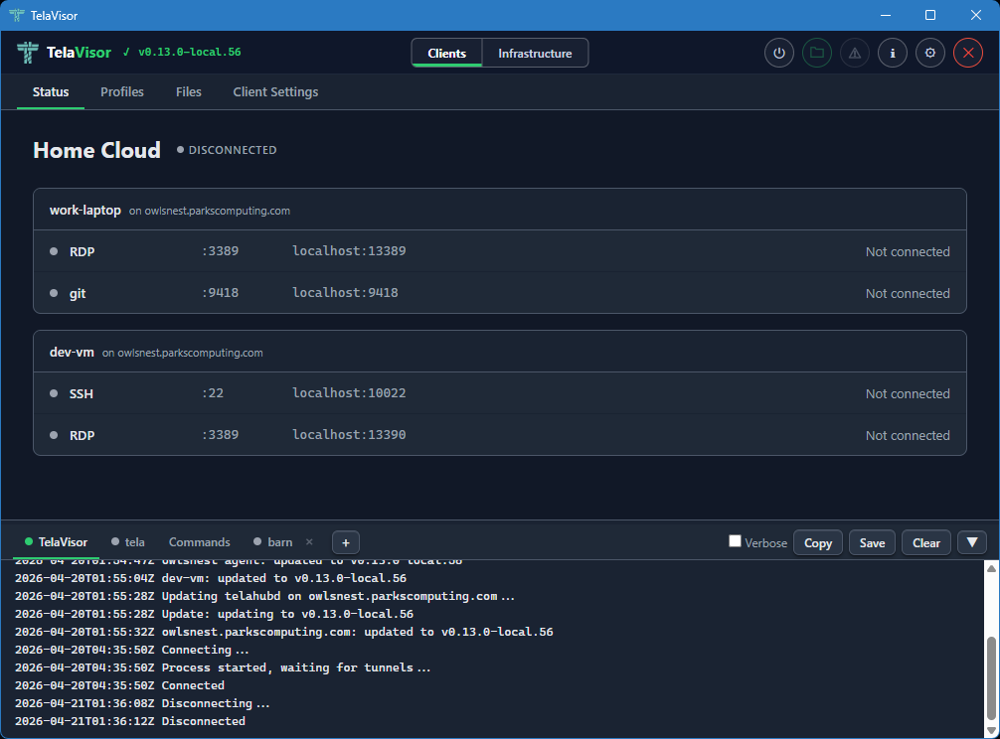
The power button in the title bar is grey when disconnected. Clicking it starts the connection. The button turns amber and pulses while the tunnel is being established, then turns solid green when the tunnel is up.
When the tunnel is up, the Status page changes shape. The "Disconnected" badge becomes a green "Connected" badge with the process identifier (PID) of the tela child process in parentheses, the power button turns green, and each service line updates to show its current state. A service that is bound and waiting for traffic reads "Listening." A service with an active session reads "Active" with the number of current connections. A service that failed to bind reads the bind error in red.
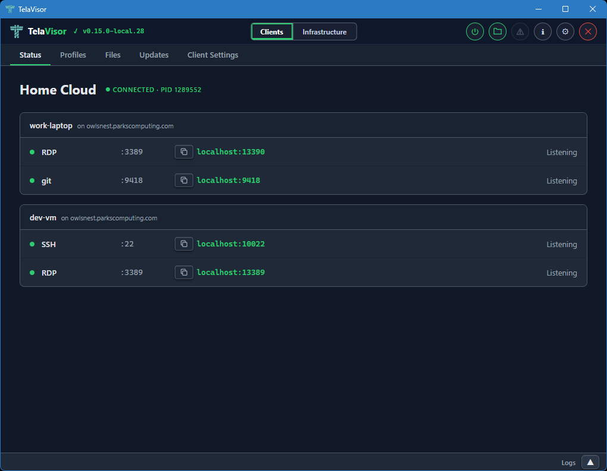
Each service indicator dot is grey when disconnected, green when listening
or active. The transitions between Listening and Active happen in real
time as you start and stop sessions against the local addresses from
outside TelaVisor. Open ssh user@localhost -p PORT (using the port shown
in the Status tab) against a Listening SSH service and the dot stays green;
the count next to "Active" goes up by one for the duration of the session
and back to "Listening" when the session ends.
The status updates arrive over a local WebSocket that the tela process
opens for TelaVisor to subscribe to. There is no polling. The values you
see on the Status page are pushed by tela the moment they change in the
tunnel.
To disconnect, click the power button in the title bar again, or quit TelaVisor. If you have Confirm disconnect enabled in Application Settings, TelaVisor asks for confirmation before tearing the tunnel down.
Profiles
The Profiles tab is where you build connection profiles. A connection
profile is a YAML file that names one or more hubs, the machines on those
hubs you want to reach, and the services on those machines you want to
expose locally. The same YAML file format is consumed by tela connect -profile from the command line; the desktop application and the command
line use profiles interchangeably.
The Profiles tab has a toolbar across the top with the controls for managing the profile collection. From left to right, the toolbar contains:
- Profile dropdown. Selects the active profile. Clicking the dropdown opens a list of every profile in your profile directory. Selecting one loads it into the editor below and makes it the active profile for the Status, Files, and Client Settings tabs as well.
- Undo. Reverts unsaved changes to the most recently saved state of the profile.
- Save. Writes the current selections to the profile YAML file. The button is enabled only when there are unsaved changes.
- New. Creates a new empty profile. Prompts for the profile name and creates an empty YAML file in the profile directory.
- Delete. Deletes the active profile, with confirmation.
- Import. Imports a profile YAML file from a path on disk. Useful for receiving a profile from another machine or another user.
- Export. Saves the active profile to a chosen path on disk. Useful for sharing a profile or backing it up.
Below the toolbar, the page is split into a left sidebar and a right panel. The left sidebar lists three things: a Profile Settings entry, the hubs you have credentials for, and a Preview entry. Each hub has a checkbox that toggles whether the hub is included in the profile. Hubs that are checked expand to show the machines registered with them. Each machine has a coloured dot indicating its current online state.
The right panel changes based on what you have selected in the sidebar.
Profile Settings
Selecting the Profile Settings row in the sidebar shows the profile-level configuration. This is the configuration that applies to the profile as a whole, not to any one machine.

The Profile Settings panel contains:
- Name. The display name of the profile. The name is the file name of the YAML file (minus the extension) and is what appears in the profile dropdown.
- File Share Mount. The Web Distributed Authoring and Versioning
(WebDAV) mount configuration. An Enable checkbox turns the mount
on or off. The Mount point field sets the local path or drive letter
to mount onto. The Port field sets the local TCP port the WebDAV
server listens on. The Auto-mount on connect checkbox mounts the
share automatically when the profile connects. Below these controls,
a live preview lists every machine in the profile that has file
sharing enabled. Each listed machine will appear as a folder under
the mount point when the tunnel is connected. The mount feature is
the desktop equivalent of
tela mountfrom the command line. - MTU. The Maximum Transmission Unit override for the WireGuard interface. The default is 1100, which works on every network the project has tested against. The override is useful when a specific link path requires a smaller MTU to avoid fragmentation. The Use default checkbox uses the default value and disables the input box.
The Profile Settings panel is where you set up things that apply to the profile regardless of which machine you are connecting to.
Switching Profiles
The profile dropdown in the toolbar shows every profile in your profile directory. Click the dropdown to open the list and select a profile to switch to.
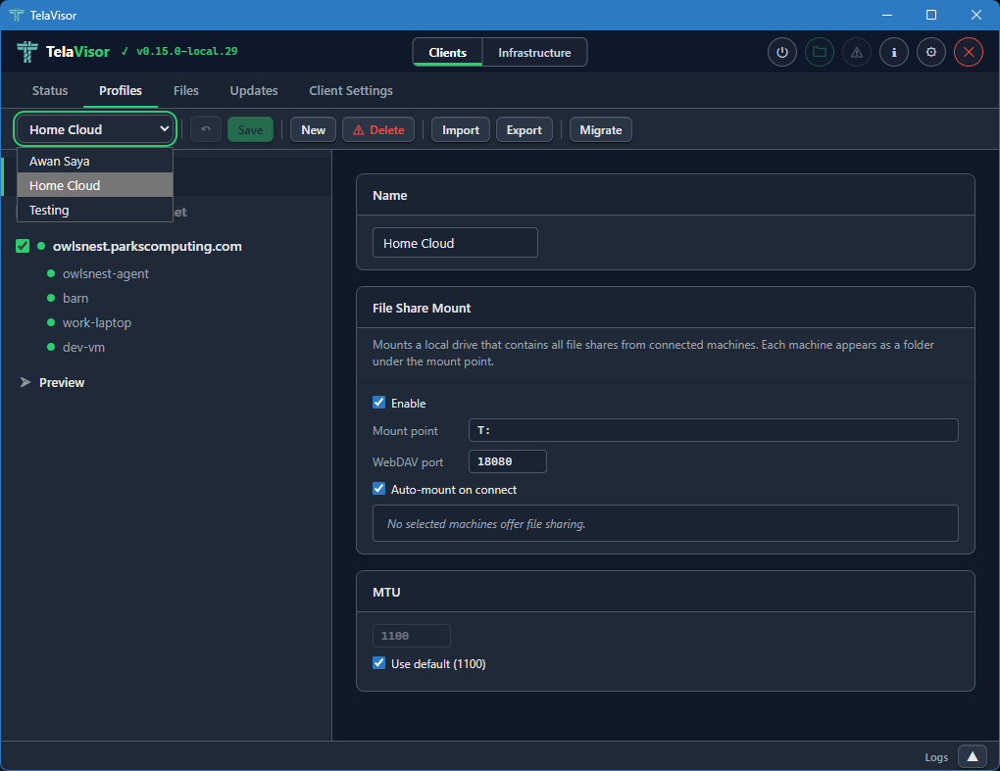
Switching profiles loads the selected profile into the editor and makes it the active profile across the rest of the application. The Status tab, the Files tab, the Client Settings tab, and the connection state all follow the active profile. If you switch profiles while connected, TelaVisor disconnects the current profile first (asking for confirmation if confirm-disconnect is enabled), then loads the new profile without automatically reconnecting. Click the power button in the title bar to connect with the new profile.
Hub View
Clicking a hub in the sidebar shows a summary card for that hub in the right panel.
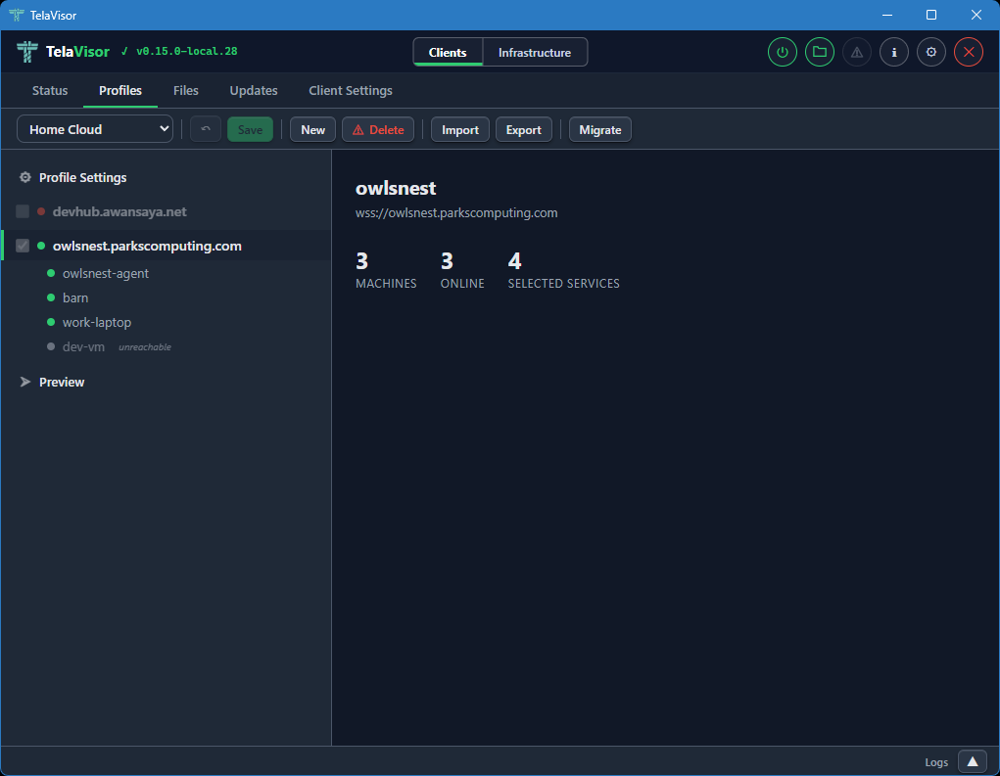
The hub summary shows the hub name, the hub URL, and three statistics:
- Machines. The total number of machines registered with this hub.
- Online. The number of those machines that are currently online.
- Selected services. The number of services on this hub that are currently included in the profile.
The hub view is the place to get a quick read on whether the hub has the machines you expect. From here you can drill into a specific machine by clicking it in the sidebar.
Machine View
Clicking a machine in the sidebar shows the services that machine exposes through the hub.
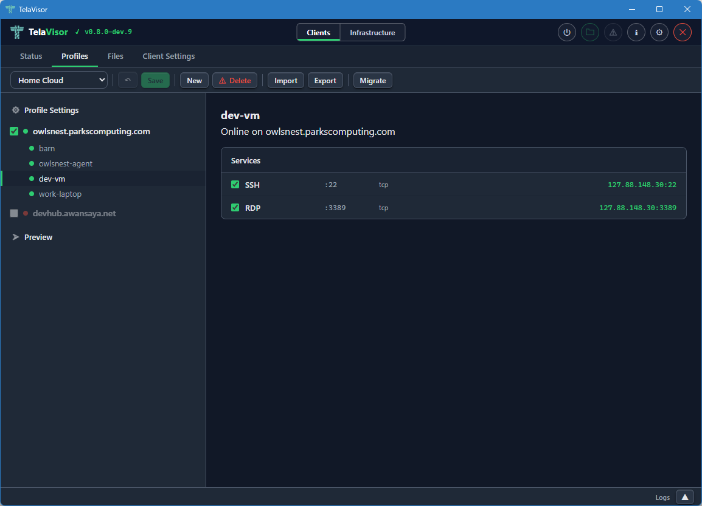
The machine view shows the machine name, the hub it is registered with, the machine's online status, and a list of every service the machine exposes. Each service has a checkbox that toggles whether the service is included in the profile. The columns show:
- Service name. Either the name the agent advertised (for example,
SSH,RDP,postgres) or, if the agent did not advertise a name, the port number. - Remote port. The port the service listens on inside the encrypted tunnel, on the agent side.
- Protocol. The transport protocol of the service (almost always
tcpbecause Tela is a TCP fabric). - Local address. The address and port the
telaprocess binds on127.0.0.1when the profile is connected. The first choice is the service's real port (for example,localhost:22for SSH). If that port is already in use, the client triesport+10000(localhost:10022), thenport+10001, and so on until a free port is found. The actual bound address and port are shown here once the profile is connected.
When the tunnel is connected, the hub and machine checkboxes are disabled. This prevents accidental profile changes during an active session. To edit the profile, disconnect first.
Preview
Clicking the Preview row in the sidebar shows the live YAML preview of the profile.
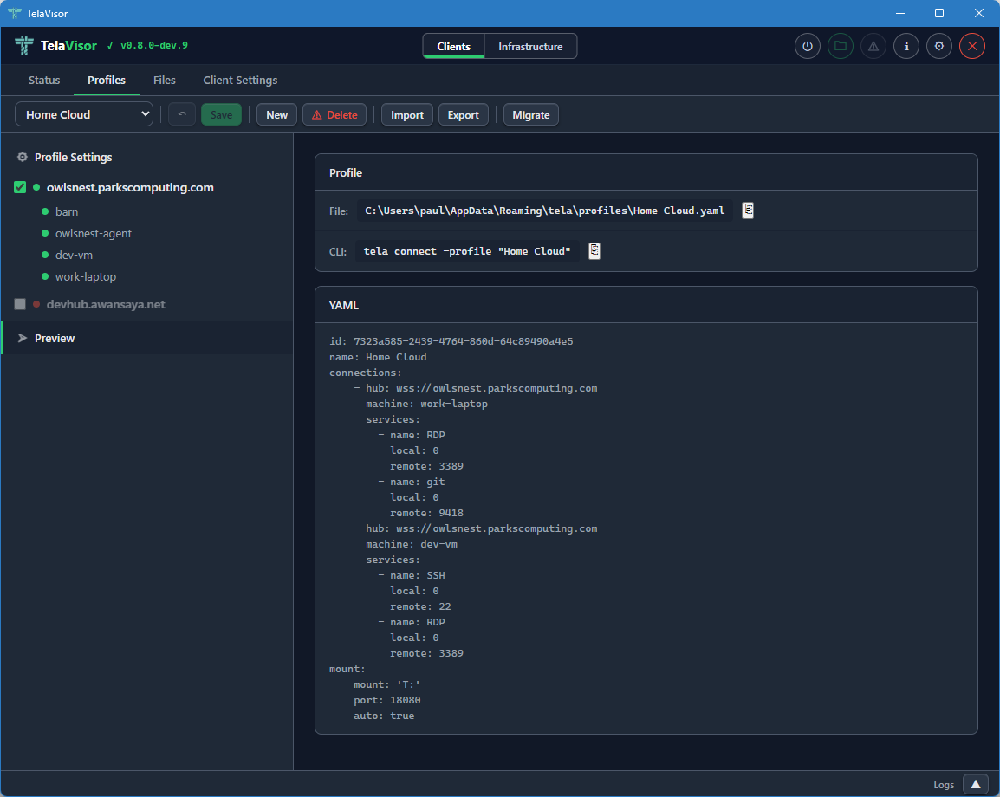
The preview displays the exact YAML that TelaVisor will write to the profile file when you click Save. The file path of the profile is shown in the header of the preview panel. The YAML preview is read-only inside TelaVisor; if you want to edit the profile by hand, open the file in a text editor and the changes will be reflected the next time TelaVisor loads it.
The preview is also the canonical answer to the question what command
line equivalent does this profile correspond to? The same YAML file
works with tela connect -profile <path> from a shell, so the preview
shows you exactly what is happening under the hood when you click
Connect.
Files
The Files tab is the built-in file browser. It uses the agent's file share protocol over the encrypted tunnel to list, upload, download, rename, move, and delete files on machines that have file sharing enabled. There is no Secure Shell (SSH), no Server Message Block (SMB), and no Web Distributed Authoring and Versioning (WebDAV) mount required; the file browser talks the file share protocol directly.
When the Tunnel Is Down
When the tunnel is not connected, opening the Files tab shows the list of machines in the active profile, but the only state you can see is "disconnected."
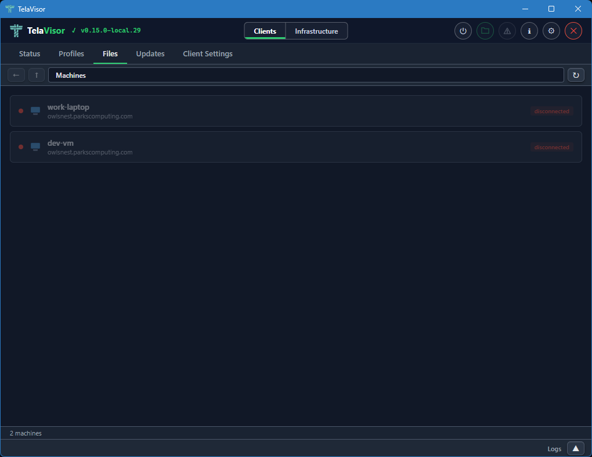
You cannot browse files until you connect the profile. The Files tab in this state is mostly informational: it tells you which machines are part of the active profile and that none of them are reachable yet.
When the Tunnel Is Up
When the tunnel is connected, the Files tab shows each machine with its file share status: a coloured indicator dot, the machine name, the hub it is registered with, and badges describing the file share's policies.
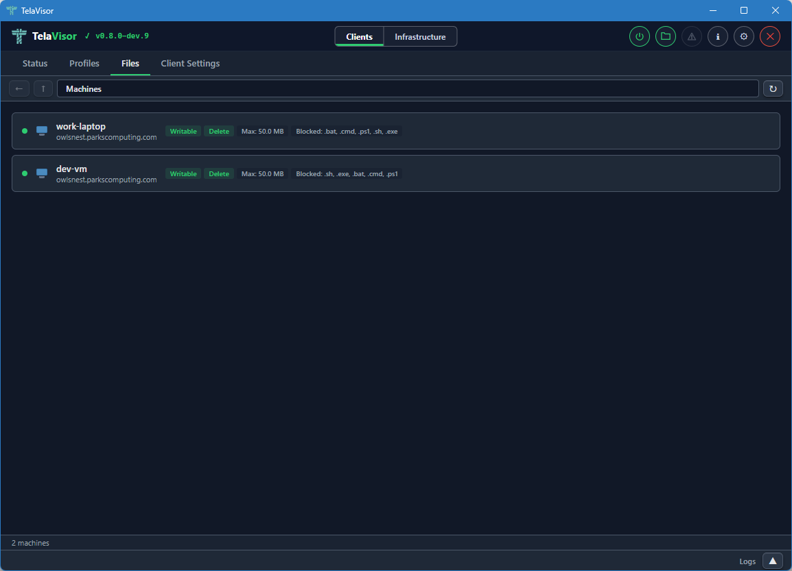
The badges include:
- Writable. The agent allows uploads and modifications.
- Delete. The agent allows file deletion.
- Max: the maximum file size the agent will accept on upload.
- Blocked: the file extensions the agent refuses to accept on upload.
These badges come from the agent's file share configuration and are read-only in this view. Editing them is done from the Agents tab in Infrastructure mode, on a machine where you have the manage permission.
Browsing Files
Clicking a machine opens its file share in an Explorer-style browser.
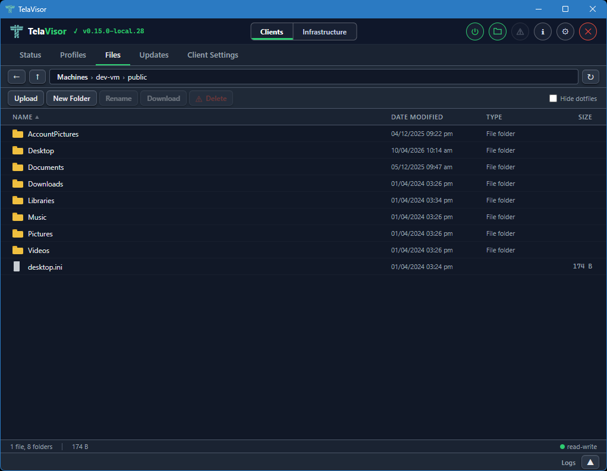
The browser layout has four parts:
- Address bar. Back, up, and a path display showing the current directory. Each segment of the path is clickable to navigate to that ancestor directory.
- Action bar. Buttons for Upload, New Folder, Rename, Download, and Delete, plus a Hide dotfiles toggle on the right. Each action button is enabled or disabled based on the current selection and the file share's permissions. Upload and New Folder require the share to be writable. Delete requires the share to allow deletion.
- File list. A sortable table with columns for Name, Date modified, Type, and Size. Folders are listed first, then files, each group sorted alphabetically by default. Click a column header to sort by that column.
- Status bar. Shows the file count, folder count, total size of the current directory, and a read-write or read-only indicator for the share.
Selection follows standard desktop conventions:
- Click to select a single item.
- Ctrl+click to toggle individual items in a multi-selection.
- Shift+click to extend a range selection.
- Double-click a file to download it.
- Double-click a folder to enter it.
Drag and drop is supported on writable shares. Drag a file or folder onto a target folder to move it. If the dragged item is part of a multi-selection, all selected items move together. The target folder highlights with a dashed outline while the drag is over it.
The file list updates in real time. When files are created, modified, deleted, or renamed on the remote machine by any process, the changes appear in the file list automatically. This works because the agent watches the file share directory using the operating system's native file change notifications and pushes change events back through the tunnel to TelaVisor.
Updates
The Updates tab is the lifecycle surface for the Tela binaries
installed on this machine: TelaVisor itself, the tela CLI, and any
local telad or telahubd binaries the operator manages. Hub and
agent updates belong to the hub or the agent and are driven from the
Hubs and Agents tabs in Infrastructure mode; the Updates tab
does not touch them.
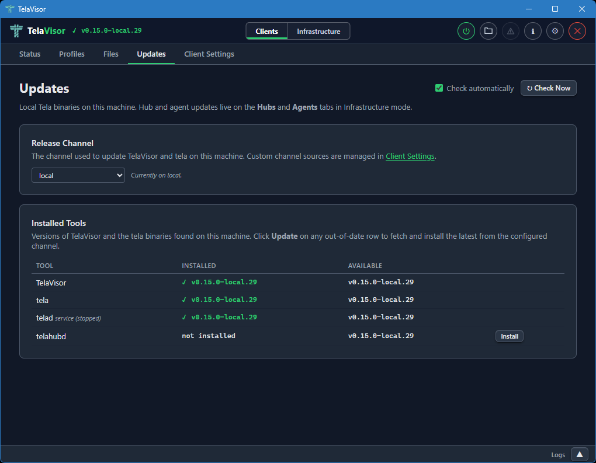
The tab header carries two controls in the top-right: a Check automatically checkbox and a Check Now button. The checkbox toggles the periodic background check (the same check that drives the topbar update indicator) and persists immediately to the credential store. Check Now fires the check on demand and re-scans the local binary directory. Two cards fill the page:
Release Channel names the channel TelaVisor and the tela CLI
follow on this machine. They share a single preference stored in
~/.tela/credentials.yaml under update.channel, so switching the
dropdown reconfigures both binaries at once. The dropdown lists the
built-in channels (dev, beta, stable) plus every custom
channel source the operator has added; custom channels are managed
in Client Settings, and the card footer links
there directly.
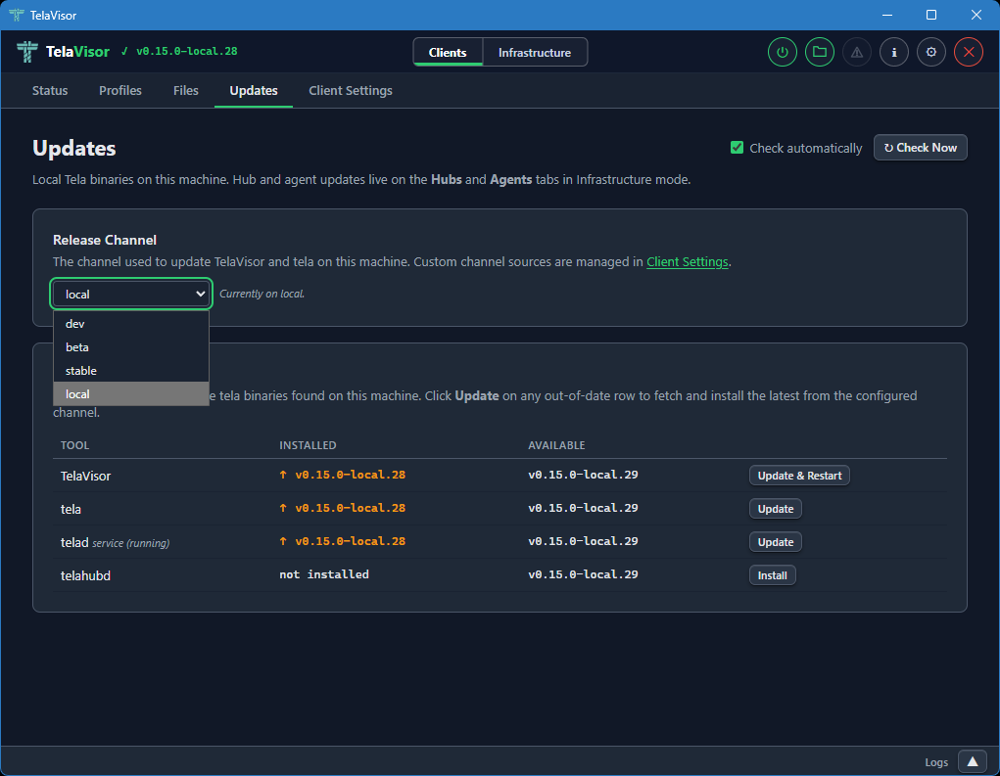
Installed Tools is a table with a row for TelaVisor and a row for each managed binary. Each row shows the installed version, the latest version on the configured channel, and an action button that is either absent (the binary is up to date), Install (the binary is not present), or Update (the binary is behind the channel HEAD). The TelaVisor row's button reads Update & Restart because TV has to hand execution off to the new binary after the swap.
When the same binary exists both as a local file and as an installed service (Windows SCM, systemd, launchd), a sub-row shows the service version and running state underneath the main row. The update action on the main row updates the local copy; updating a service-only installation uses a separate Update button labeled accordingly. After a service restarts against the new binary, the Installed column polls the on-disk version until it changes so the displayed value always reflects what is actually running.
The Available column comes from the release channel manifest, not
from GitHub's releases/latest. A TelaVisor on dev compares
against dev.json, a TelaVisor on stable against stable.json.
Every download is verified against the channel manifest's SHA-256
hash before being written to disk; a mismatch aborts the swap and
leaves the existing binary in place.
The whole page is also reachable as a modal via the warning-icon update indicator in the topbar; the indicator turns on when any monitored binary is behind its channel HEAD and off when every row is current. The indicator and the tab share state, so installing from either surface clears the other.
Client Settings
The Client Settings tab is where you configure how the tela process
runs on the local machine. It has its own toolbar at the top with Undo
and Save buttons. Both are enabled when there are pending changes.
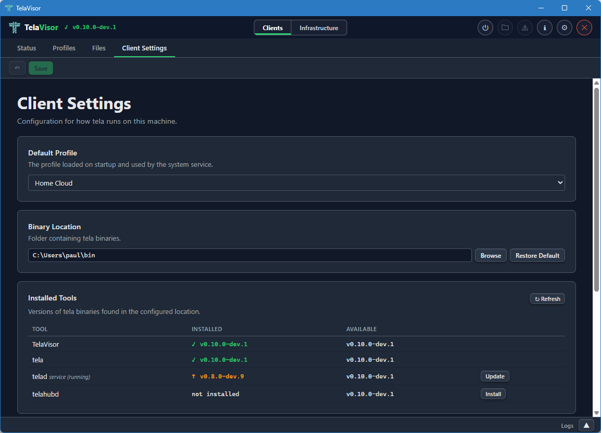
The tab contains four sections.
Default Profile
A dropdown that selects which profile loads when TelaVisor starts and is used by the system service when one is installed. The dropdown lists every profile in your profile directory.
Binary Location
The folder where TelaVisor looks for the managed binaries: tela,
telad, and telahubd. The default is the platform's standard local
application directory:
| Platform | Default location |
|---|---|
| Windows | %LOCALAPPDATA%\tela |
| Linux | ~/.local/share/tela |
| macOS | ~/Library/Application Support/tela |
Use the Browse button to choose a different folder, or Restore Default to reset.
The Binary Location is the directory where TelaVisor installs and
updates tools. The Updates tab reads from and writes
to this directory; the system service is configured against it too,
so all four roles (TelaVisor, the tela CLI, telad, telahubd)
read and write the same binaries from the same place.
Channel Sources
Custom release channels that should appear in every channel dropdown
in TelaVisor: the Updates tab, Hub Settings, and Agent Settings. The
three built-in channels (dev, beta, stable) are always present
and cannot be removed. Each custom entry is a name and a base URL
(for example, local pointing at http://localhost:9900/); the
name becomes selectable in every channel picker that lists it, and
the base is used to resolve manifest and binary URLs for that
channel. Custom channels are stored in ~/.tela/credentials.yaml
under update.sources.
System Service
Controls for installing the tela client as a system service. The
service runs the default profile as an always-on background tunnel that
starts with the operating system, so the tunnel is up before any user
logs in. This is useful for production deployments where the tunnel
needs to survive logouts and reboots.
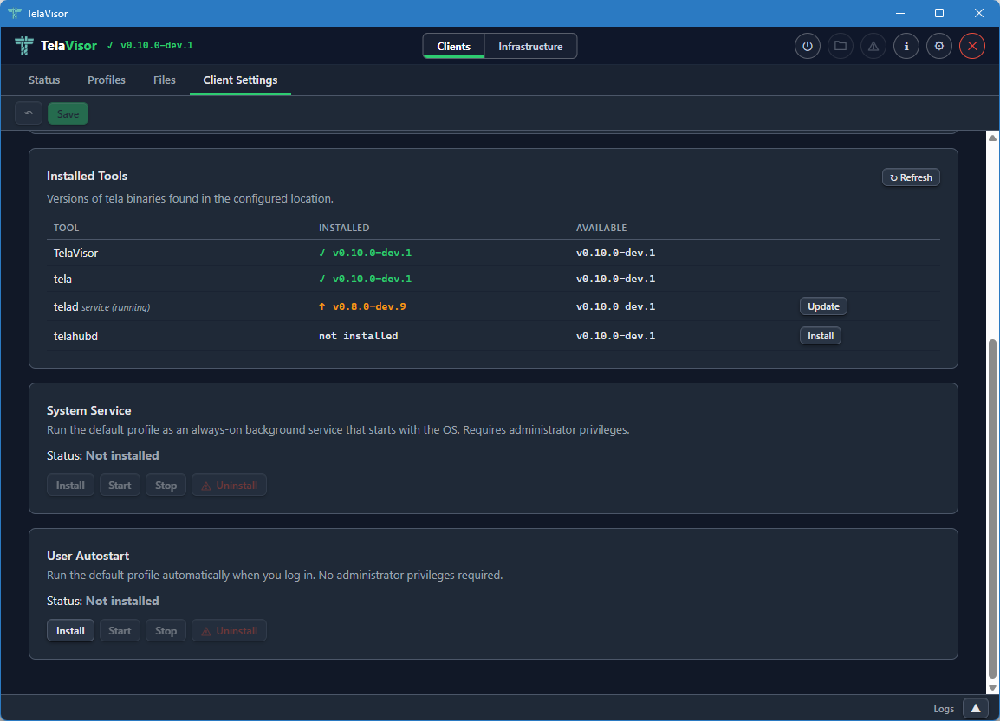
The Status field shows whether the service is currently Installed or
Not installed. Four buttons control the service: Install, Start,
Stop, and Uninstall. The buttons are enabled or disabled based on
the current state. Install asks for elevation (User Account Control on
Windows, sudo on Linux, an authentication prompt on macOS). The
service uses the platform-native service manager: Windows Service
Control Manager (SCM) on Windows, systemd on Linux, launchd on macOS.
User Autostart
Controls for running the tela client as a user-level autostart task
that launches when you log in, without requiring administrator
privileges. Unlike the System Service, User Autostart runs in your
login session, which means it starts only after you log in and stops
when you log out. It is suited to personal machines where you want
the tunnel up for your own use but do not need it active before login
or for other users.
The Status field shows whether autostart is currently Installed or Not installed. Three buttons control it: Install, Start, and Stop. Install does not require elevation. On Windows, TelaVisor registers a Scheduled Task that triggers at login. On Linux, it writes a systemd user unit. On macOS, it installs a LaunchAgent.
Infrastructure Mode
Switching the mode toggle in the title bar to Infrastructure changes the tab bar to the five administration tabs: Hubs, Agents, Access, Remotes, and Credentials. Infrastructure mode is for operators. None of the features in this mode are required for a user who only wants to make a connection. All of them become important the moment you start running hubs or agents on behalf of yourself or others.
Hubs
The Hubs tab is where you administer any hub you have credentials for: viewing settings, managing machines, viewing connection history, and updating or restarting the hub binary. Identity and per-machine access management live in a peer tab of their own, Access; the Hubs tab no longer carries a Tokens or Access sub-view.
The tab is laid out with a sidebar on the left containing a hub picker dropdown, a navigation list of views, and an Add Hub button at the bottom. The right panel shows the currently selected view for the currently selected hub.
Hub Picker
The hub picker at the top of the sidebar lists every hub you have credentials for. Clicking it opens a dropdown of hub URLs.
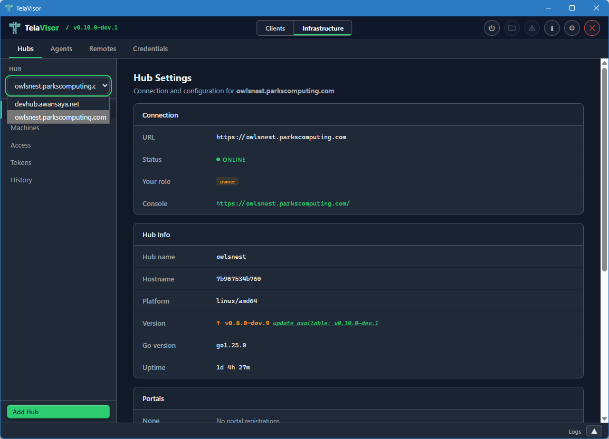
Selecting a hub from the dropdown loads its data into the views below. All three views (Hub Settings, Machines, History) are scoped to the currently selected hub. Identity and access management have their own peer tab; see Access.
If you do not have credentials for any hub yet, the dropdown is empty and the Add Hub button at the bottom of the sidebar is the only way forward. Add Hub opens a dialog where you can paste a hub URL and either a token or a one-time pairing code.
Hub Settings
The Hub Settings view shows everything about the hub itself: connection details, hub metadata, portal registrations, lifecycle controls, and destructive actions.
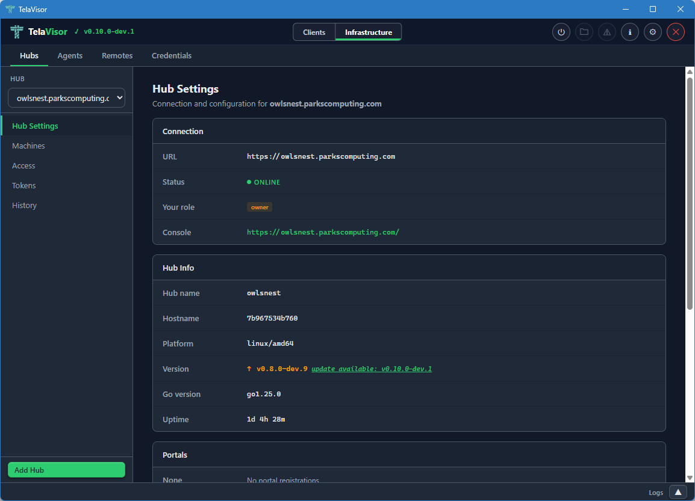
The Connection section at the top shows:
- URL. The hub's connection URL, beginning with
wss://for WebSocket Secure orws://for plain WebSocket. - Status. The hub's online state.
- Your role. The role of the token you authenticated with: owner, admin, user, or viewer. This determines which actions in the rest of the page you are allowed to take.
- Console. A clickable link to the hub's web console (the browser-based admin interface that the hub serves on its own URL).
Below Connection, the Hub Info section shows metadata reported by the
hub at /api/status:
- Hub name. The hub's configured name.
- Hostname. The hostname of the machine the hub is running on.
- Platform. The operating system and architecture (
linux/amd64,windows/amd64, etc.). - Version. The release version of the hub binary, with a coloured
badge showing whether it is current or behind the channel manifest.
Green with
(latest: vX.Y.Z)when current, amber withupdate available: vX.Y.Zwhen behind. The "available" version comes from the hub's own release channel manifest, so a hub running on thedevchannel is compared againstdev.json, a hub onstableagainststable.json. - Go version. The Go runtime version the hub binary was compiled with.
- Uptime. How long the hub process has been running since its last start.
Below Hub Info, the Portals section lists hub directories the hub is
registered with. Each entry shows the directory name and the directory
URL. Adding a portal here is the equivalent of running telahubd portal add from the command line.

The Management section provides hub lifecycle controls. These are only visible to owners and admins:
-
Log output. A View Logs button that opens a new tab in the log panel streaming the hub's recent log buffer through the
/api/admin/logsendpoint. -
Release channel. A dropdown showing the hub's currently configured release channel (
dev,beta, orstable) with a status string showing the current and latest versions on that channel. Changing the dropdown opens a confirmation dialog and, on confirm, sendsPATCH /api/admin/updateto the hub to switch its channel persistently. The Software button below updates immediately to reflect the new channel's HEAD. If the hub is too old to support channels (returns HTTP 405 for the new endpoint), the row hides itself and the Software button showspre-channel build (update first via legacy path). -
Software. Shows whether the hub is up to date or behind the channel's HEAD. The button label reads either
Up to date(disabled) orUpdate to vX.Y.Z(active). Clicking the active button opens a confirmation dialog before proceeding.
The hub then downloads the new release, verifies it against the channel manifest's SHA-256 hash, replaces its binary, and restarts. Progress is shown inline (
Hub is downloading update and restarting...,Waiting for hub to restart... (1),Updated to vX.Y.Z) and the page re-renders when the hub comes back online. The label and disabled state are derived from the channel manifest, not from the GitHub/releases/latestAPI, so a hub ondevcannot be told to "update to v0.15.0" (thestableHEAD). -
Restart. Requests an immediate graceful restart of the hub process.
The Danger Zone at the bottom of the page provides destructive actions: removing the hub from TelaVisor's local list (which does not affect the hub itself, only your local credentials and view) and clearing all stored hub tokens from the local credential file.
The Hub Settings view is the same shape regardless of which hub you have selected. The values change with the hub; the layout does not.
Machines
The Machines view lists all machines registered on the selected hub with their online status, last-seen timestamp, advertised services, and active session count.

Each machine row shows:
- Online indicator. A coloured dot, green for online, grey for offline.
- Machine name. The name the agent registered with.
- Last seen timestamp. Either the most recent contact time for an online machine, or the last time the machine was seen for an offline machine, in ISO 8601 Coordinated Universal Time (UTC) format.
- Service badges. A pill for each service the machine advertises,
showing the service name and the remote port (for example,
SSH :22,RDP :3389). - Active session count. The number of active client sessions on this machine, on the right side of the row.
The Machines view is read-only. To edit a machine's configuration, find the agent in the Agents tab and use the agent detail panel. To remove a machine from a hub, use the Danger Zone in the agent detail.
Identity and per-machine access management used to live in separate Access and Tokens sub-views on this tab; both are now folded into the top-level Access peer tab, which is the canonical place to answer who can do what to which machine on this hub.
History
The History view shows recent session events on the selected hub: agent registrations, client connections, client disconnections, agent disconnections.

Each row shows:
- Timestamp. The event time in ISO 8601 UTC.
- Event type.
agent-register,agent-disconnect,client-connect,client-disconnect. - Identity. The identity that triggered the event, when known.
- Machine. The machine the event applies to, when relevant.
The history is held in a fixed-size ring buffer in the hub. Older events are evicted as new ones arrive. The buffer survives within a single hub process and is reset when the hub restarts. Persistent audit log shipping is planned under the Audit log retention item in ROADMAP-1.0.md.
Agents
The Agents tab manages every agent (telad instance) visible across all
the hubs you have credentials for, without requiring an active tunnel
connection. The agents are listed by querying each hub's machines
endpoint and merging the results into a single fleet view. You can
manage an agent on a hub on the other side of the world without first
opening a tunnel to one of its services.
The tab is laid out with a sidebar on the left listing every visible agent and a detail panel on the right. A toolbar above the detail panel contains Undo, Save, Restart, and Logs buttons that act on the currently selected agent. Undo and Save are enabled when there are unsaved changes. Restart and Logs are always enabled when an agent is selected.
Agent List
When no agent is selected, the right panel is empty with a prompt to select one.
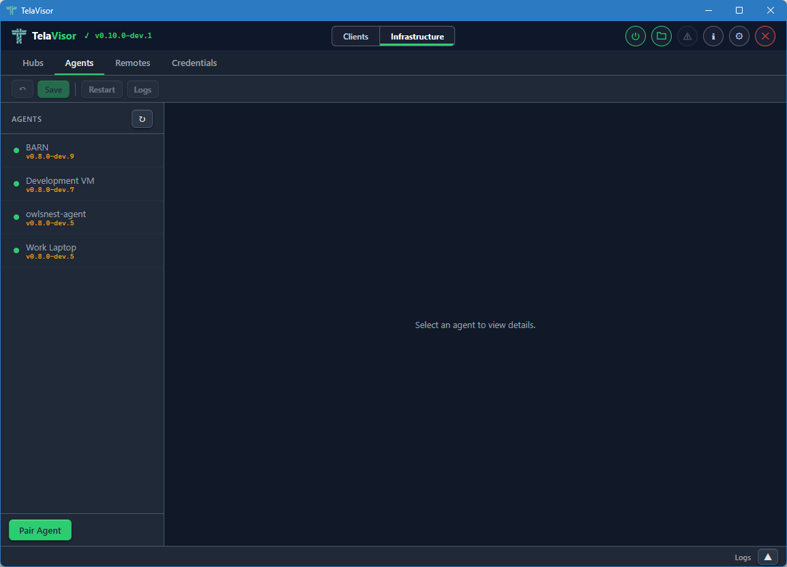
Each entry in the agent sidebar shows:
- Online indicator. A coloured dot.
- Agent name. The name the agent registered as.
- Agent version. The release version of the agent binary, displayed as a small caption.
Two buttons sit in the sidebar footer for agent onboarding. They are single-purpose so the labels match what each one actually does.
Generate... opens a modal that asks for a hub, a machine name,
and an expiration. Submitting it produces a one-time pair code on
the chosen hub with type=register. The result modal shows the code
in large monospace next to a pre-filled
telad pair -hub <ws-url> -code <code> -machine <name> command line,
each with its own Copy button. The intended workflow is to paste the
command into chat, SSH, or a deployment script targeted at the agent
host. Generation is enabled whenever TelaVisor knows about at least
one hub; the call requires owner or admin credentials on that hub.

Redeem... opens a modal that runs telad pair against the local
telad binary on this machine. Use it when an operator on this same
workstation wants to register an agent here (developer workstations,
single-host setups). The form takes a hub, the pair code, and an
optional machine name. The hub picker lists the hubs TelaVisor
already knows about plus an Other hub URL... option for codes
issued by hubs you have not added yet. On success, a confirmation
modal names the hub and machine, and the agents list refreshes a
moment later so the new entry appears.
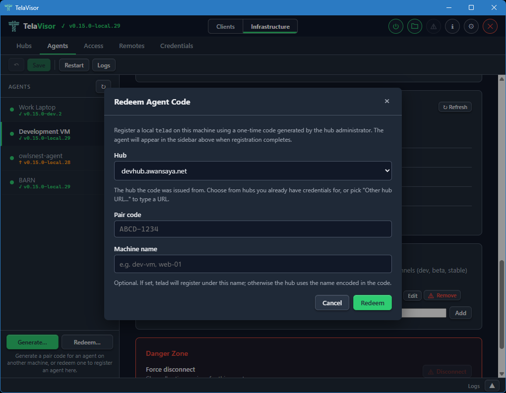
When telad is not installed in the configured Binary Location, the
Redeem modal opens in a short bail-out state explaining that
pairing requires a local telad binary, with an Open Updates...
button that flips to Clients mode and routes to the Updates tab
where the binary can be installed. The bail-out also calls out a
common confusion: a pair code for an agent on a different machine
cannot be redeemed in TelaVisor at all because the resulting token
has to land in the agent host's credential store; in that case the
operator runs telad pair directly on the target host, which is the
flow Generate... is built for.
Agent Detail
Selecting an agent in the sidebar shows the agent detail panel on the right.

The detail panel is divided into cards, each covering one aspect of the agent.
Agent Info is a read-only card showing metadata reported by the agent at registration:
- Version. The release version with an up-to-date badge.
- Hub. The hub the agent is registered with.
- Hostname. The hostname of the machine the agent is running on.
- Platform. The operating system and architecture.
- Last seen. The last contact timestamp.
- Active sessions. The number of active client sessions on this machine right now.
Display Name is an editable field for a human-readable name shown in dashboards and portals. Defaults to the registered machine name.
Tags is an editable field for comma-separated metadata tags. Useful for filtering large fleets by environment, region, customer, or any other dimension that matters to your operation.
Location, Services, and File Share
Scrolling further down the agent detail panel reveals the operational configuration cards.
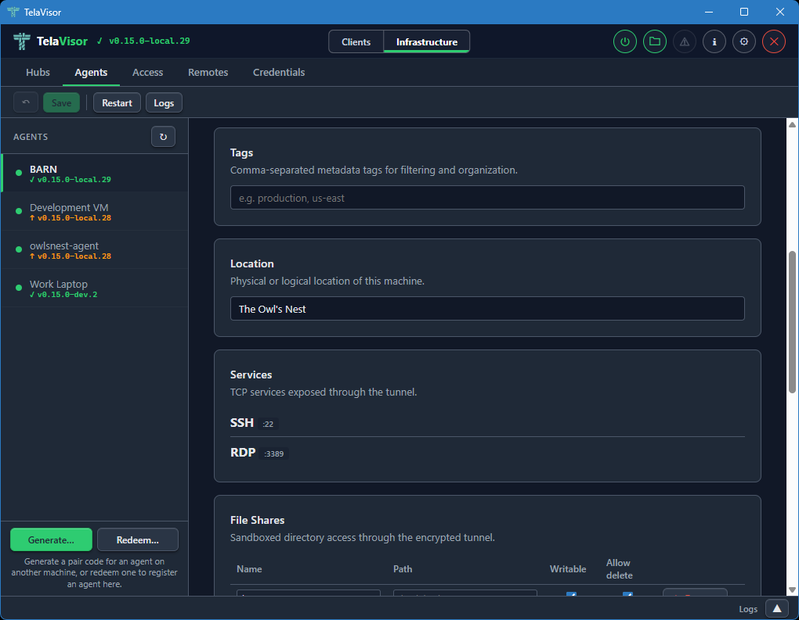
Location is an editable free-text field describing the physical or logical location of the machine. Used for documentation and dashboard display. Tela does not interpret it.
Services lists the ports and protocols the agent exposes through
the tunnel. Each row shows the service name, the remote port, and the
protocol. The list is read-only here because changing the advertised
services requires editing the agent's telad.yaml file directly. To
add or remove a service, use the agent's local configuration file or
push a new configuration through the management protocol.
File Share is the editable agent file share configuration. The card contains:
- Enabled. A checkbox that turns the file share on or off.
- Writable. A checkbox that controls whether uploads are allowed.
- Allow delete. A checkbox that controls whether deletion is allowed.
- Max file size. A field that sets the largest file the agent will accept on upload, in megabytes.
- Blocked extensions. A comma-separated list of file extensions the agent will refuse to accept on upload, regardless of the writable setting. Useful for blocking executables and scripts.
Editable fields in any card are pushed to the agent through the
hub-mediated management protocol when you click Save. The agent
validates the new configuration and persists it to its telad.yaml
file. Changes that pass validation take effect immediately. Changes
that fail validation are rejected with an error message.
The manage permission is required to edit any of these fields. Owner and admin roles have it implicitly. User-role tokens need an explicit manage grant on the relevant machine, issued through the Access tab.
Management and Danger Zone
Scrolling to the bottom of the agent detail panel reveals the Management card and the Danger Zone.

The Management card mirrors the layout of the hub Management card from Hub Settings:
-
Configuration. A View Config button that opens the agent's running configuration in a dialog. The configuration is fetched live through the management protocol so it reflects what the agent is actually using right now, not what is on disk in
telad.yaml.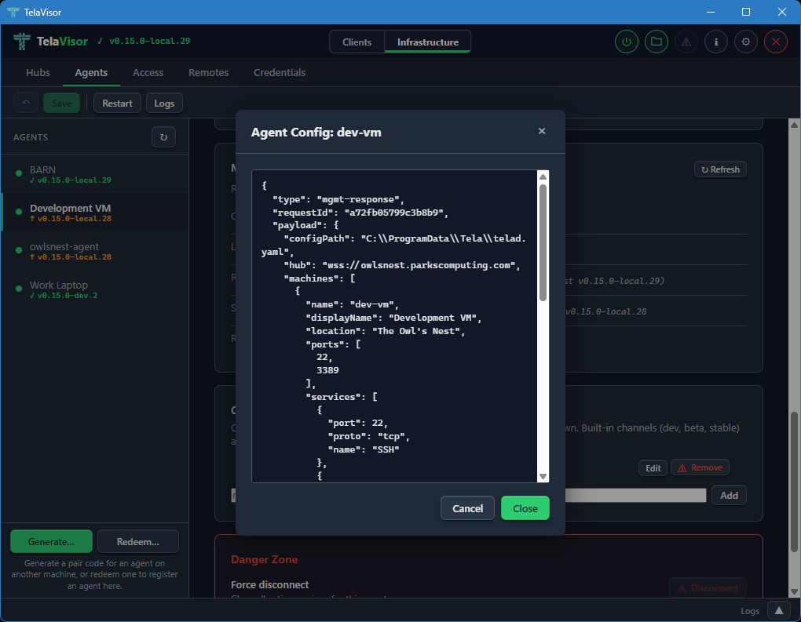
-
Log output. A View Logs button that opens a new tab in the log panel and fetches the agent's recent log buffer through the
update-statusmgmt action via the hub's mediated management proxy. -
Release channel. A dropdown showing the agent's currently configured release channel with a status string showing current and latest versions on that channel. Changing the dropdown opens a confirmation dialog and, on confirm, sends the
update-channelmgmt action through the hub-mediated proxy to switch the agent's channel persistently. Pre-channel agents (olderteladversions that do not recognize the action) hide the row and showpre-channel build (update first via legacy path)next to the Software button. -
Software. Shows whether the agent is up to date or behind the channel's HEAD. The label, title, and disabled state are derived from the channel manifest via the agent's
update-statusmgmt action, so an agent ondevis never offered astablebuild. Clicking Update opens a confirmation dialog before proceeding.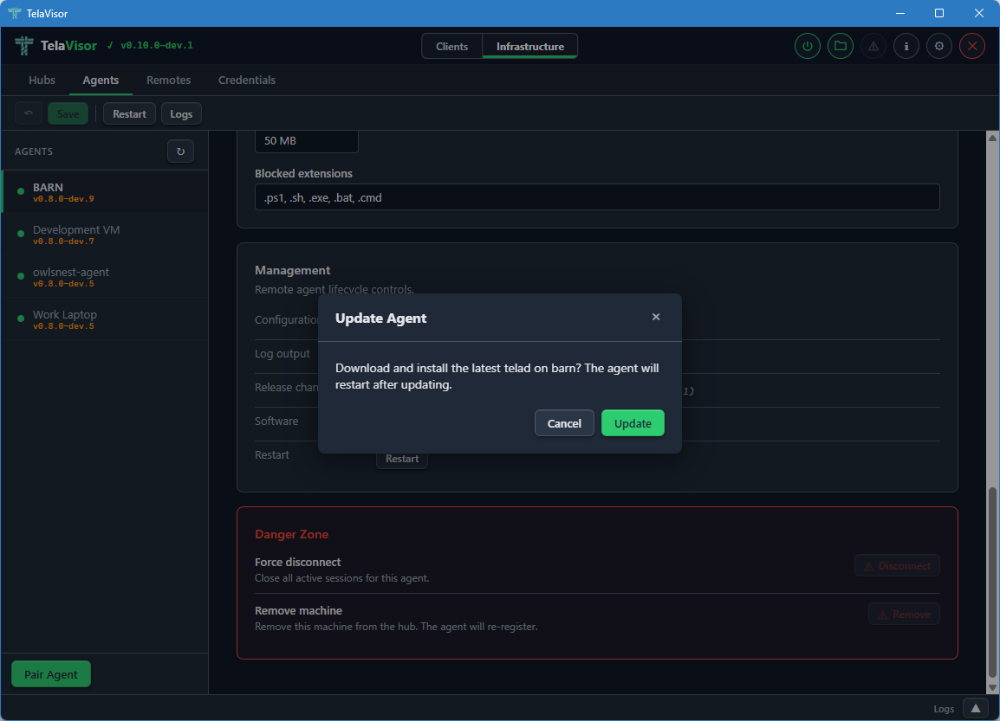
The dialog names the machine and confirms that the agent will restart after the update. Clicking Update in the dialog sends the
updatemgmt action through the hub-mediated proxy. The agent downloads the new release, verifies it against the channel manifest's SHA-256, and atomically swaps its binary.
While the update is in progress the Software row shows a progress indicator. The rest of the management panel remains visible. If the agent is running under a service manager (Windows SCM, systemd, launchd) it exits cleanly and the manager restarts it against the new binary. If the agent is running standalone it relaunches itself.
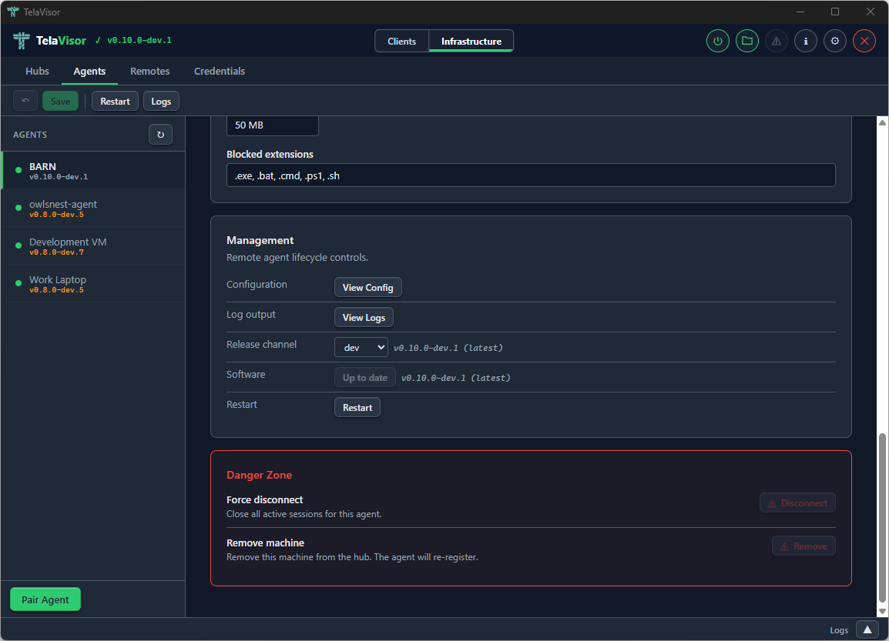
Once the agent reconnects, the Software row reflects the new version. The channel and version information updates automatically as the agent re-reports its state through the management protocol.
-
Restart. Requests a graceful restart of the agent process.
The Danger Zone at the bottom of the agent detail panel provides two destructive actions:
- Force Disconnect. Drops the agent's current connection to the hub. The agent's reconnect logic will attempt to re-establish the connection within seconds. Useful for forcing the agent to pick up a new configuration that requires a reconnection.
- Remove Machine. Removes the machine from the hub entirely, invalidating its registration. The agent will need to re-register on its next connection. This is the action to take when retiring a machine.
When telad runs as an operating system service (Windows SCM, systemd,
launchd) the same Update and Restart actions work because telad
detects that it is running under a process manager and exits cleanly,
letting the manager restart the binary. This avoids leaving orphan
processes from a self-spawned restart.
Access
The Access tab is the consolidated home for identity and per-machine access management. Every operator task that involves "who can do what to which machine" lives here: creating and deleting identities, rotating tokens, changing roles, granting and revoking per-machine permissions, narrowing a grant to a specific set of services, and generating one-time pairing codes.
The tab replaces two older Hubs sub-views: the Access panel that listed identities as cards, and the Tokens panel that managed authentication tokens as a table. Both are gone; this tab is the single place to go.
Two Views of the Same Data
Access opens on one of two projections of the same underlying data:
-
By machine. The sidebar lists every machine the selected hub has registered, plus a wildcard
*entry for the cross-machine fallback ACL. The detail pane shows an identity-vs-permission matrix for the selected machine: every identity on the hub gets a row, with Connect, Register, and Manage checkboxes and an optional services filter.
-
By identity. The sidebar lists every identity on the hub. The detail pane shows a machine-vs-permission matrix for the selected identity, with a row for every registered machine plus the wildcard
*fallback.
The view toggle is in the right side of the toolbar. Switching between the two views does not lose staged work; both views read and write the same pending-change set, so a permission checkbox ticked in By machine is the same edit visible in By identity.
The selected view is persisted to TelaVisor's settings, so reopening the tab returns to whichever view the operator last used.
The Toolbar
The toolbar across the top of the tab holds the Hub selector and every action that operates on the current hub:
-
Hub. A dropdown of every hub the operator has credentials for. Switching hubs discards any pending changes on the previous hub (after a confirmation).
-
Undo. Drops every pending change in one go. Enabled only when there is pending work.
-
Save. Commits every pending change in parallel. Enabled only when there is pending work. See Save and conflicts below.
-
Add Identity... Creates a new token-backed identity. Opens a dialog asking for a name and a role; the new token is shown once in a follow-up dialog so the operator can copy it.
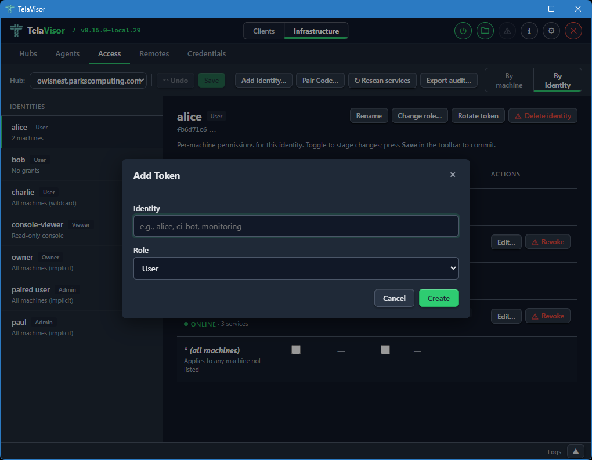
-
Pair Code... Generates a one-time pairing code for onboarding a new identity or agent.

-
Rescan services. Reloads access data and machine services from the hub. Use after changing an agent's
telad.yamlso newly advertised services show up in the matrix. -
Export audit... Downloads a JSON snapshot of the hub's access state: every identity, their grants, the machines they apply to, and the services each grant allows. Useful for compliance and for diffing access state over time.
The Matrix
The matrix is the main working area. Rows are identities (in By machine) or machines (in By identity); columns are the three permission flags and a Connect services column.
Implicit-role rows (owner, admin, viewer) render at full visual weight with locked checkboxes. An owner or admin row has every permission ticked because the role confers implicit all-access; the locked state makes it clear this is a property of the role, not a per-machine grant. A viewer row has all checkboxes unticked because viewer is read-only console access with no session privileges. These rows do not have Revoke actions, because the role is the source of truth; changing it goes through Change role... on the By identity detail header.
Explicit (user-role) rows are interactive. Ticking a checkbox stages a grant; unticking one stages its removal. A per-row Revoke button stages the removal of every permission for that identity on that machine in one click; once staged, the row shows the pending revoke with a strikethrough and a red left border, and the Revoke button flips to Undo so the operator can back out.
Every staged change is marked in two ways: the affected row picks up an amber left border and a pending label next to its name, and the sidebar item for that row's machine (or identity) picks up the same pending indicator. Save and Undo in the toolbar are both enabled whenever the pending set is non-empty.
The Connect Services Column
The Connect services column shows which services the identity can
reach on the machine when the Connect permission is granted. An
unfiltered grant reads All services in muted italics. A filtered
grant renders the first three service chips inline; longer filters
collapse the remainder into a +N more link that opens a small
read-only popover listing every service in the filter. The popover
never edits; it dismisses on outside click, Escape, scroll inside
the detail pane, or a re-click on the trigger. Edit and view paths
are kept separate by design so an operator scanning a filter for a
specific service cannot wander into the edit flow by mistake.
When the row's connect permission is inherited from the wildcard
* ACL (the hub cascades connect and manage from the wildcard
entry to every machine that has no explicit grant), the cell shows
a via * marker followed by the wildcard's services. The connect
checkbox in that case is checked and disabled with a tooltip that
points the operator at the wildcard row in the rail; per-machine
overrides are not possible because the underlying ACL model has no
deny semantic.
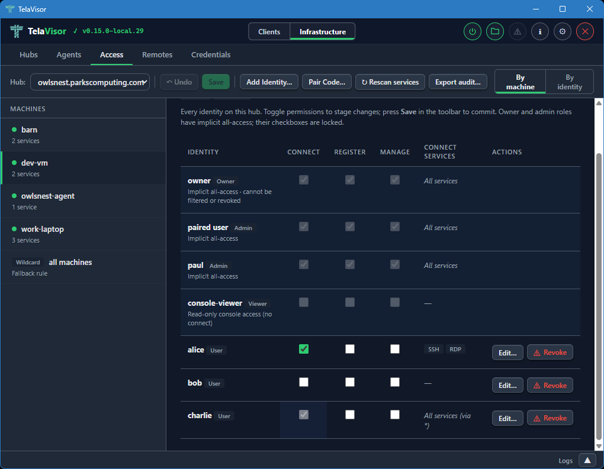
The per-row Edit... button opens a dialog to narrow or widen the filter. The dialog offers two scopes:
- Allow all services. Removes any filter. The identity can reach every service the agent advertises.
- Restrict to specific services. For a specific machine, shows a
checkbox list of the services the machine advertises, pre-ticked
to match the current filter. For the wildcard
*machine, shows a free-text comma-separated input because there is no concrete service list to enumerate.
Applying a restricted filter stages the change; Save commits it. Per-service access control is a v0.15 feature; on older hubs the dialog opens in a disabled state with a note explaining that the hub must be upgraded before the filter can be used.
Save and Conflicts
Save fires one write per staged change, in parallel. Each write
carries the target identity's version as an If-Match precondition,
which the hub checks before applying the change. If another operator
modified any of those identities between load and save, the affected
writes return 412 Precondition Failed and a conflict dialog opens
listing the rows that drifted.
The dialog offers three recovery paths:
- Reload. Discards pending changes and reloads the server state. Re-apply the changes you still want; this time the writes will carry fresh versions.
- Discard my changes. Drops the pending batch and closes the dialog without reloading. Use when you realize the batch is no longer what you want.
- Force overwrite instead. A muted link in the dialog body that
retries the conflicting writes with no
If-Match, overwriting the other operator's edits on those rows. A second confirmation is required because this is destructive.
Writes that did not conflict are already committed by the time the dialog opens; only the conflicting rows are still pending.
The By Identity Detail Header
When a user-role identity is selected in By identity, the detail header has an action cluster for identity-level operations:
- Rename. Renames the identity. The token is unchanged; only the human-readable label moves.
- Change role... Opens a role picker with User, Admin, Viewer, and Owner. Selecting Owner prompts a second confirmation because owner confers full control of the hub, including the power to demote or delete any other admin. A last-owner guard on the hub refuses to demote the only owner identity, so an operator who selects a different role for the sole owner sees an error in the modal; the recovery is to promote a peer to owner first, then try again.
- Rotate token. Issues a new token for the identity and shows it once. The previous token stops working immediately.
- Delete identity. Removes the identity and scrubs every ACL entry that referenced its token. Owner identities cannot be deleted.
For owner, admin, and viewer rows, the detail pane shows an explanatory card instead of a matrix. Owner and admin have implicit all-machine access that is not manageable per-machine; viewer is read-only console access with no machine permissions at all.
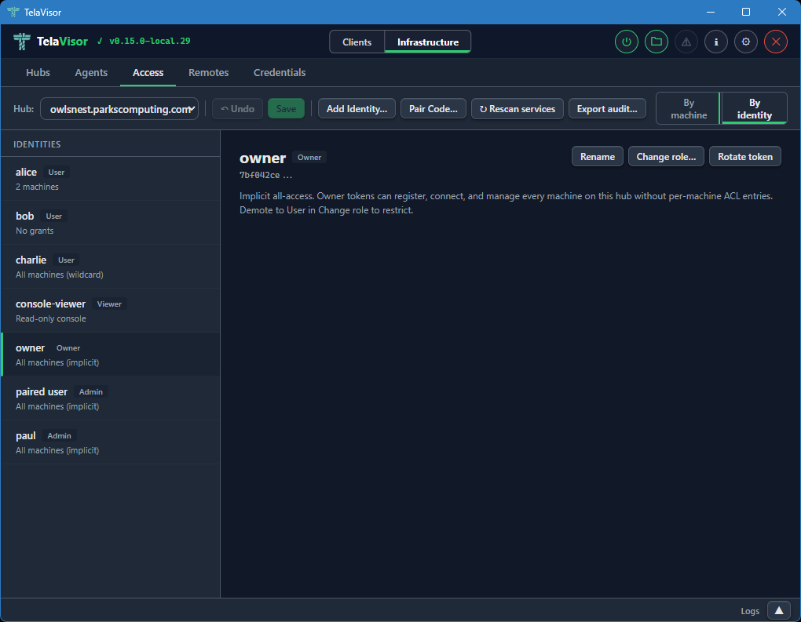
Remotes
The Remotes tab manages hub directory endpoints for short name
resolution. This is the desktop equivalent of the tela remote family
of CLI commands. Each remote maps a name to a directory URL that
provides hub discovery via /.well-known/tela and /api/hubs.

The view shows a table of registered remotes with two columns:
- Name. The short name you assigned to the remote. This is the
name the
telacommand line and TelaVisor use to look up hub URLs. - URL. The directory's base URL.
A Remove button on each row removes the remote, with confirmation.
Below the table, an input row with Name, Portal URL, and Add fields lets you register a new remote. The Name field is the short name you want to use; the Portal URL field is the base URL of the directory.
Once a remote is registered, you can use short hub names like
tela connect -hub work and the client resolves work through the
remote into a full hub URL. See the
Hub directories and portals chapter for the directory
protocol itself.
Credentials
The Credentials tab shows every hub token stored in your local
credential file. This is the desktop equivalent of tela login and
tela logout.
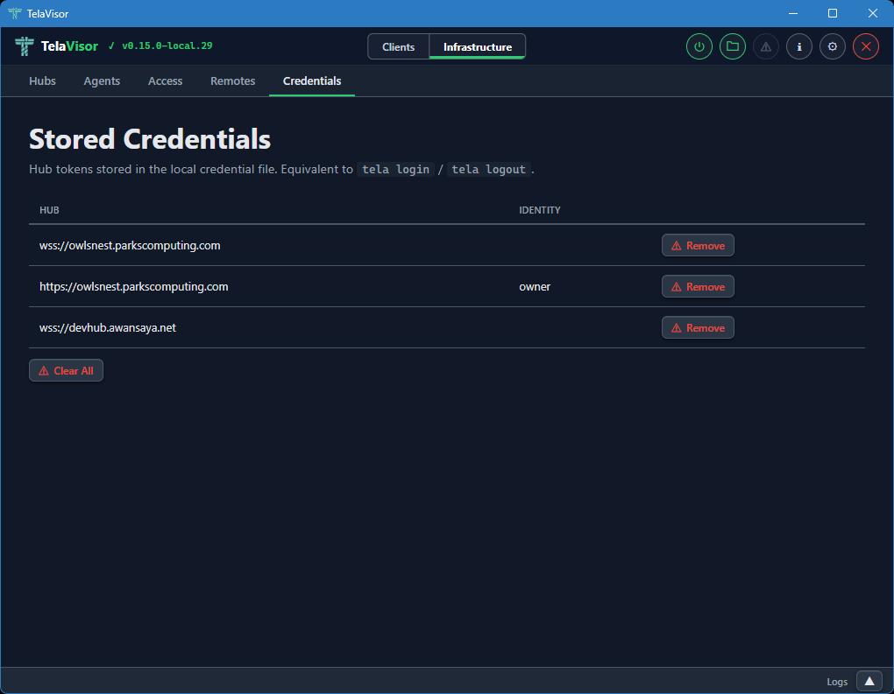
The view shows a table of credential entries with two columns:
- Hub. The hub URL the credentials are stored under.
- Identity. The identity name on that hub. May be empty for legacy entries that were stored before identity tracking was added.
Each row has a Remove button to delete that entry from the credential file. A Clear All button at the bottom removes every stored credential. Both actions ask for confirmation.
Removing a credential entry does not invalidate the token on the hub. It only removes the local copy. To revoke a token on the hub, use the Access tab and either delete the identity or rotate its token.
The credentials file is stored at:
| Platform | Path |
|---|---|
| Windows | %APPDATA%\tela\credentials.yaml |
| Linux | ~/.tela/credentials.yaml |
| macOS | ~/.tela/credentials.yaml |
The file is created with 0600 permissions (owner read-write only) on
Unix systems and the equivalent restrictive Access Control List (ACL)
on Windows. The same file is shared with the tela CLI, so credentials
added through TelaVisor are visible to tela and vice versa.
Log Panel
The log panel is a persistent area at the bottom of the window that provides tabbed log output visible across both modes. You can resize it by dragging its top edge, or collapse it to a slim bar showing only a Logs label and an expand chevron.
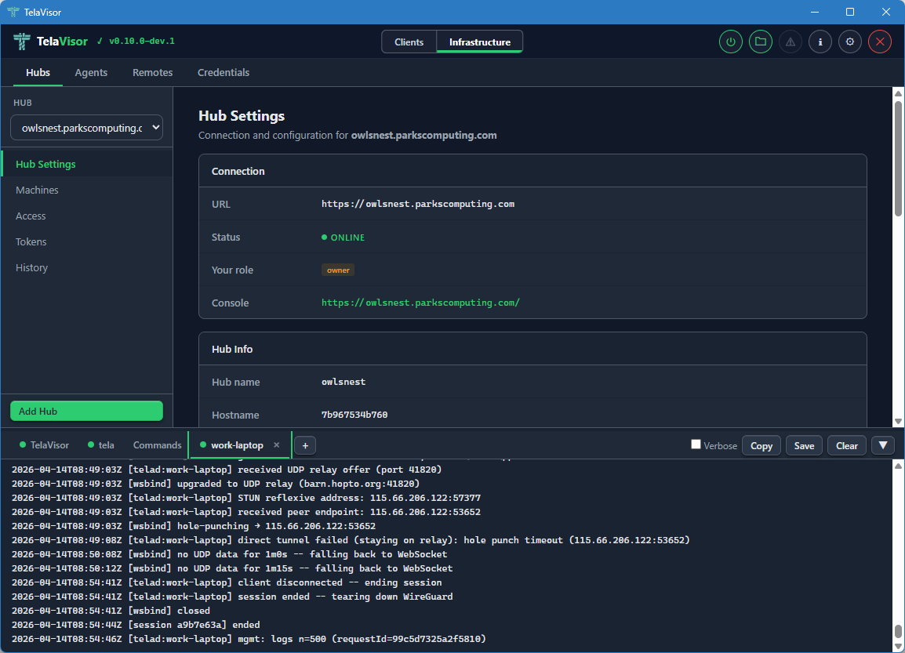
The panel auto-scrolls to the bottom as new lines arrive. If you scroll up to read history, auto-scroll pauses until you scroll back to the bottom. Each pane is limited to a configurable maximum number of lines (default 5000, configurable in Application Settings).
Built-In Tabs
Three tabs are always present.
- TelaVisor. Application events: startup, profile loading, connection state changes, errors. This is the place to look first when something in TelaVisor itself is misbehaving.
- tela. Live output from the
telachild process. The same output you would see if you rantela connect -profile <path>in a terminal yourself. This is the canonical place to look when the tunnel is failing to connect or behaving unexpectedly. - Commands. A filterable log of every API call and CLI command
TelaVisor issues. Each row shows a method badge (
GET,POST,DEL,CLI), a timestamp, the URL or command line, and a copy button. Click a row to expand it for the full request and response. The Commands tab is the answer to what would I have to type at a shell to do what TelaVisor just did?
The Commands tab is also useful for learning the underlying CLI behind a UI action, troubleshooting an unexpected response, or scripting equivalent operations.
Toolbar
The log panel toolbar across the top has four buttons that act on the currently active tab:
- Verbose. Toggles verbose logging for the
telaprocess. The setting persists for the current session and resets to the default on restart unless overridden in Application Settings. - Copy. Copies the active tab's content to the clipboard.
- Save. Saves the active tab's content to a file.
- Clear. Clears the active tab.
Attaching Log Sources
The + button at the right end of the tab strip opens the attach
popover. The popover lists every hub you have credentials for and
every agent visible across those hubs.
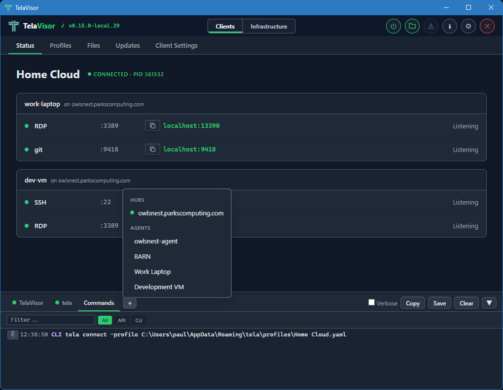
Clicking a hub opens a new tab streaming GET /api/admin/logs from
that hub. Clicking an agent opens a new tab fetching the agent's log
ring through the hub's mediated management protocol. The popover
renders next to the + button using fixed positioning so it is not
clipped by the scrollable tab strip. Click outside the popover to
dismiss it.
Dynamic log tabs use the same close-button pattern as the built-in tabs. Each agent or hub log tab shows a coloured status dot:
- Green. The log fetched successfully and the source is reporting fresh lines.
- Amber. The log is being fetched (in flight).
- Grey. Idle, or the source is offline.

The log panel remembers which dynamic tabs were open between sessions. Tabs you open via View Logs (in the Hubs or Agents tab) or via the attach popover are saved to the TelaVisor settings file and restored on the next launch. This makes the log panel a persistent operator dashboard rather than a transient buffer: the hubs and agents you care about stay attached across restarts.
Application Settings
The Application Settings dialog is opened from the gear icon in the title bar. A toolbar at the top of the dialog provides Apply, Apply & Close, and Cancel buttons. Apply and Apply & Close are disabled until at least one setting changes.
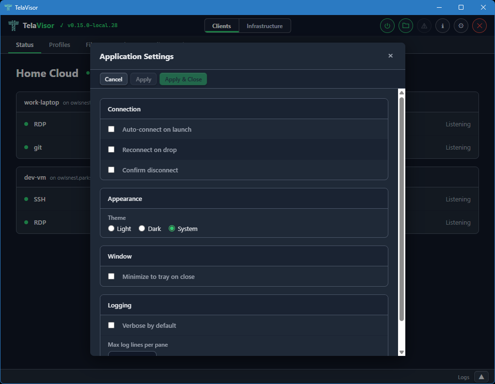
The settings are organized into sections.
Connection
- Auto-connect on launch. When checked, TelaVisor automatically connects using the default profile when the application starts.
- Reconnect on drop. When checked, TelaVisor attempts to reconnect
automatically if the connection drops unexpectedly. The reconnect
logic uses the same backoff schedule as the
telaCLI. - Confirm disconnect. When checked, TelaVisor shows a confirmation prompt before disconnecting or quitting while connected.
Appearance
- Theme. Light, Dark, or System (follows the operating system preference). The change takes effect immediately when you click Apply.
Window
- Minimize to tray on close. When checked, closing the window hides TelaVisor to the system tray instead of exiting. The application remains running in the background and can be restored by clicking the tray icon. Without this setting, closing the window quits the application.

Logging
- Verbose by default. When checked, the
telaprocess is started with verbose logging on every connection. Useful for diagnostic builds. - Max log lines per pane. Limits the number of lines kept in each log tab in the Log panel. The default is 5000. Older lines are evicted as new ones arrive.
About Dialog
The About dialog is opened by clicking the TelaVisor title in the
top-left corner of the title bar, or by clicking the information icon
in the title bar. It shows version numbers for both TelaVisor and the
tela CLI, project links, license information, dependency credits, and
the path to the CLI binary.

The dialog is the canonical place to confirm what version of TelaVisor
and tela you are running, and which channels they are configured to
follow. Use it when filing bug reports.
Update Indicator
When an update is available for any of the binaries TelaVisor manages, an orange warning icon appears in the title bar. Clicking the icon opens an update dialog that shows current and latest versions for each binary, with per-binary Update and Install buttons.
The update dialog is the same workflow as the Installed Tools table on the Updates tab, exposed as a one-click affordance from the title bar so you do not have to navigate to find it. The dialog also has Remind Later (hides the indicator until the next restart) and Skip This Version (hides the indicator until a newer version is released) options.
If TelaVisor was installed via a system package manager (winget, Chocolatey, apt, brew), the self-update mechanism is disabled. Use the package manager to update instead. The update indicator will not appear in this case.
Connection Status Icon
The power button in the title bar indicates the current connection state at a glance:
- Grey. Disconnected.
- Amber, pulsing. Connecting or disconnecting.
- Green. Connected.
You can click the button at any time from any tab to toggle the connection. When connected, clicking it disconnects. When disconnected, clicking it connects using the current profile.
System Tray
When Minimize to tray on close is enabled in Application Settings, closing the window hides TelaVisor to the system tray (the notification area) instead of quitting. The application remains running and the tunnel stays up.
You can left-click or double-click the tray icon to show the window again. Right-clicking the tray icon opens a small menu with Show and Quit options. Quit exits the application and tears down the tunnel.
The tray feature is useful for keeping a long-running tunnel out of the way without committing to installing a system service.
How TelaVisor Works with tela
TelaVisor does not implement WireGuard, gVisor, the hub protocol, the
agent protocol, or any of the other parts of the Tela fabric directly.
It is a control surface around the tela command-line process. The
flow of a connection is:
- TelaVisor writes a profile YAML file with your selected hubs, machines, and services. This is the same file format documented in REFERENCE.md.
- TelaVisor runs
tela connect -profile <path>as a child process. - The
telaprocess opens a local control API on a random localhost port with a random one-time bearer token. The token is passed to TelaVisor via a private channel (an environment variable on the child process) so other processes on the same machine cannot guess it. - TelaVisor connects to the control API's WebSocket endpoint to
receive real-time events:
service_bound,tunnel_activity,connection_state. These are the events that drive the Status tab updates. - The
telaprocess output streams to the tela tab in the log panel through the same control API. - When you click Disconnect, TelaVisor signals the
telaprocess to shut down gracefully. The process closes the WireGuard tunnels, releases the local listeners, and exits.
The profile YAML that TelaVisor writes is the same format that the
tela CLI consumes. Profiles are interchangeable between the two: a
profile created in TelaVisor works at the command line, and a profile
written by hand for the command line works in TelaVisor.
For administration features (Hubs, Agents, Remotes, Credentials),
TelaVisor talks to the hubs directly over their HTTPS APIs using the
credentials in the local credential file. There is no tela child
process involved in those requests; TelaVisor uses the same hub admin
endpoints that the CLI's tela admin family uses.
Profile Storage
Profiles are stored in the user's application data directory:
| Platform | Path |
|---|---|
| Windows | %APPDATA%\tela\profiles\ |
| Linux | ~/.tela/profiles/ |
| macOS | ~/.tela/profiles/ |
Each profile is a single YAML file. The file name (minus the .yaml
extension) is the profile name. You can edit profile files by hand
with any text editor; TelaVisor reloads them on the next time it
opens the profile.
The default profile, used at startup and by the system service, is configured in Client Settings.
Configuration
TelaVisor's own settings are stored in telavisor-settings.yaml in
the same Tela configuration directory as the credential file. Window
position and size are saved automatically on close and restored on the
next launch. All other settings (theme, default profile, release
channel, log lines, attached log tabs) take effect when you click
Apply or Apply & Close in the Application Settings dialog and
persist across restarts.
Building from Source
TelaVisor requires Wails v2 and its prerequisites: Go 1.25 or newer, Node.js, and the platform WebView runtime (WebView2 on Windows, webkit2gtk on Linux, the system WebKit on macOS).
cd cmd/telagui
wails build
The output binary is in cmd/telagui/build/bin/.
For development with live reload:
cd cmd/telagui
wails dev
Note that the JavaScript, HTML, and CSS frontend is bundled into the Go
binary at build time, not at runtime, so editing the frontend requires
a wails build to take effect.
Self-Update and Release Channels
Once you have Tela binaries deployed across more than one machine, you face a maintenance question: how do you keep them up to date without logging into every machine and running a download by hand?
Tela's answer is self-update through a release channel system. Each binary
(tela, telad, telahubd, TelaVisor) knows which channel it is
following (dev, beta, or stable), fetches the channel's JSON manifest
from GitHub Releases, and updates itself in place. The update is verified
against the manifest's SHA-256 before anything is written to disk. Agents
and hubs can be updated remotely through the hub's management protocol,
without SSH access to the machine.
This chapter covers how to check what channel any binary is on, switch a binary to a different channel, trigger an update from the command line, the admin API, or TelaVisor, and bootstrap a fresh machine that does not yet have any Tela binary installed.
The commands below assume at least one Tela binary is already installed and
on your PATH. To get the first binary onto a machine, see
Bootstrapping a Fresh Box below.
For the design model behind channels (what they are, how promotion works, when to cut a beta or a stable), see the Release Process chapter in the Operations section.
The Mental Model in One Paragraph
Tela ships through three channels. dev updates on every commit to main.
beta is a dev build that a maintainer judged ready for promotion.
stable is a beta build promoted to the conservative line. Each channel
is described by a JSON manifest hosted on GitHub Releases that names the
current tag and lists every binary published under that tag with its
SHA-256. Every Tela binary follows whichever channel it is configured for,
fetches the matching manifest, and verifies the SHA-256 against the
manifest entry before installing an update. You can switch a binary's
channel at any time, and the channel is per-binary, not global: you can run
a dev agent against a stable hub.
Inspecting Channels
From the Command Line
tela channel
prints the current client's channel, the manifest URL, the running version, and the latest version on that channel:
channel: dev
manifest: https://github.com/paulmooreparks/tela/releases/download/channels/dev.json
current version: v0.16.0-dev.14
latest version: v0.16.0-dev.15 (update available)
To inspect a channel without switching to it:
tela channel show -channel beta
That prints the parsed channel manifest: every binary on that channel with its size and SHA-256.
For a Remote Hub
tela admin hub channel -hub <hub-name>
prints the same shape but for the hub at <hub-name> instead of the local
client. Requires an owner or admin token on the hub.
For a Remote Agent
tela admin agent channel -hub <hub-name> -machine <machine-id>
The hub forwards the request to the named agent and returns its channel and version state.
From TelaVisor
The same information appears in three places:
- The Updates tab (Clients mode) shows the channel that TelaVisor and
the
telaCLI follow on this machine, in the Release Channel card. - The Hubs tab (Infrastructure mode) shows each hub's channel in the Management section of Hub Settings.
- The Agents tab (Infrastructure mode) shows each agent's channel in the Management card of the agent detail panel.
The dropdowns are channel selectors, and the trailing status text shows the current and latest versions, exactly like the CLI output.
From a Portal
Portals such as Awan Saya show the same channel rows in their hub and agent management cards, gated on having the manage permission on the hub or agent.
Switching Channels
The Client (and TelaVisor)
tela channel set beta
writes the preference to the user credential store
(~/.tela/credentials.yaml on Unix, %APPDATA%\tela\credentials.yaml on
Windows). Both the tela CLI and TelaVisor read from this file, so the
next time either runs update it follows the new channel.
You can also change it from the Release Channel dropdown on TelaVisor's Updates tab.
A Hub
From any workstation with an owner or admin token:
tela admin hub channel set beta -hub <hub-name>
This sends PATCH /api/admin/update to the hub. The hub persists
update.channel to its YAML config. The change takes effect on the next
self-update; the currently running binary is not affected.
Directly on the hub machine, you can do the same without an admin token:
sudo telahubd channel set beta
This writes update.channel in the hub's YAML config (the
platform-standard path is the default, so you rarely need -config).
Restart the hub service for background update checks to pick up the new
channel. Run telahubd channel -h for the full subcommand list, including
telahubd channel show, which prints the full parsed manifest.
You can also change it from the Release Channel dropdown in TelaVisor's Hub Settings, or from the equivalent dropdown in a portal's hub management card.
An Agent
From any workstation with permissions:
tela admin agent channel -hub <hub-name> -machine <machine-id> set beta
The hub forwards the update-channel management action to the agent, which
persists update.channel to its telad.yaml. The same control is in the
Management card of TelaVisor's agent detail panel.
Directly on the agent machine:
sudo telad channel set beta -config /etc/tela/telad.yaml
Or set TELAD_CONFIG in the environment and drop the flag. Run
telad channel -h for the full subcommand list, including
telad channel show, which prints the full parsed manifest.
Updating
Three ways to update, all reading from the same channel manifest. Pick whichever fits the box.
Self-Update via the Binary's Own CLI
tela update # update the running tela client
telad update # update the on-disk telad binary
telahubd update # update the on-disk telahubd binary
All three accept -channel <name> (one-shot override, accepts any valid
channel name including custom ones), -dry-run (show what would happen
without modifying the binary), and -h / -? / -help / --help (print
usage). For telad and telahubd, the -config <path> flag selects which
YAML config file's channel to honor.
The download is verified against the channel manifest's SHA-256 before
being written. On Windows the running .exe is renamed to .exe.old
before the new binary is moved into place; the .old file is removed in
the background. On Unix the rename is atomic.
For telad and telahubd running as managed OS services, the binary is
swapped in place but the running process is not killed. Restart the service
manually for the new binary to take effect:
sudo systemctl restart telad # systemd
sudo launchctl kickstart -k system/com.tela.telad # launchd
sc stop telad && sc start telad # Windows SCM
Self-Update via the Admin API
tela admin hub update -hub <hub-name>
tela admin agent update -hub <hub-name> -machine <machine-id>
The hub or agent downloads the new binary from its configured channel, verifies it, and restarts. The restart goes through whatever process supervision the binary is under (Docker, Windows SCM, systemd, launchd, or none).
Self-Update from TelaVisor
The Software row in each Management card (Hub Settings for hubs, the agent
detail panel for agents) has an Update to vX.Y.Z button when the binary
is behind. Clicking it triggers the same admin-API path as above and polls
the binary's reported version until it changes, so the display reflects the
actual installed version.
For locally installed binaries and services, the Installed Tools table on the Updates tab has Update buttons. TelaVisor itself does not need to be elevated to update an elevated service binary; the running service updates itself from the inside, then the process supervisor restarts it against the new binary.
Bootstrapping a Fresh Box
The first time you put Tela on a machine, you do not have a binary yet, so you cannot use any of the self-update commands. Download one binary by hand, then let it self-update from the channel manifest forever after.
One-Liner from a Linux Shell
curl -fsSL https://github.com/paulmooreparks/tela/releases/download/channels/dev.json \
| python3 -c 'import json,sys; m=json.load(sys.stdin); print(m["downloadBase"]+"telad-linux-amd64")' \
| xargs curl -fLO
chmod +x telad-linux-amd64
sudo mv telad-linux-amd64 /usr/local/bin/telad
Replace dev.json with beta.json or stable.json to bootstrap from a
different channel. Replace telad-linux-amd64 with whichever binary you
want (tela-linux-arm64, telahubd-darwin-amd64, and so on).
One-Liner from PowerShell
$m = Invoke-RestMethod https://github.com/paulmooreparks/tela/releases/download/channels/dev.json
Invoke-WebRequest ($m.downloadBase + 'tela-windows-amd64.exe') -OutFile tela.exe
From an Existing tela on a Different Box
If you already have one machine with tela installed, the easiest way to
put a binary on a new machine is to download it from the existing one and
copy it over:
tela channel download telad-linux-amd64 -o telad
scp telad newhost:/tmp/telad
ssh newhost 'sudo mv /tmp/telad /usr/local/bin/telad && sudo chmod +x /usr/local/bin/telad'
After the transfer, every subsequent update on the new box is just
telad update.
Verifying a Download by Hand
Every download Tela performs internally is SHA-256-verified against the
channel manifest, but if you want to verify a download yourself (because
you fetched it with wget or out of habit), every release also publishes a
SHA256SUMS.txt asset alongside the binaries:
curl -fLO https://github.com/paulmooreparks/tela/releases/download/v0.16.0-dev.15/SHA256SUMS.txt
curl -fLO https://github.com/paulmooreparks/tela/releases/download/v0.16.0-dev.15/telad-linux-amd64
sha256sum -c SHA256SUMS.txt --ignore-missing
What Happens During an Update, in Detail
For an interactive tela update:
- Read the configured channel from the user credential store.
- Fetch the channel manifest (5-minute in-process cache).
- Look up the entry for
tela-{goos}-{goarch}{ext}in the manifest. - Compare the current version against
manifest.version. If equal and the running binary is not adevbuild, exit "already up to date." - Download the binary from
manifest.downloadBase + binary-name. - Stream the body through the verifier, which writes to a sibling tmp file in the destination directory while computing a SHA-256 hash and counting bytes. If the hash or size does not match the manifest entry, delete the tmp file and exit non-zero.
- On Unix, rename tmp to destination atomically. On Windows, rename the
current binary to
.old, rename tmp to destination, then remove.oldin the background. - Print
OK: tela updated to vX.Y.Z.
The same steps happen for telad update and telahubd update. For
admin-API-driven updates the difference is that the new binary is staged
and the running process exits, leaving the OS service manager (or the user)
to relaunch it.
When Things Go Wrong
"fetch dev manifest: HTTP 404"
The channel manifest URL did not return a manifest. Either the manifest
base URL is wrong (you set a sources[<channel>] override that points
nowhere), or GitHub is having a bad day. Check the URL printed by
tela channel.
"verify download: sha256 mismatch"
The downloaded binary did not match the manifest entry. This is the safety
net working: a corrupted download or a manifest/asset mismatch fails here
rather than installing a bad binary. The tmp file is removed automatically.
Try again. If it persists, the manifest itself may be stale; run
tela channel show to inspect it.
"requested version vX.Y.Z is not the current vA.B.C on channel"
You asked for a specific version that is not the channel's current HEAD.
Channels are always-current pointers, not version pins. To get an older or
newer version, switch channels (or set a custom sources[<channel>] URL).
Pre-1.0 there is no other way to pin.
TelaVisor's Update Button Shows "pre-channel build"
The hub or agent is running a binary from before the channel system was
added. Update it once from a shell on the box (telahubd update or
telad update, or the bootstrap one-liner above), and the channel-aware UI
will start working on the next page load.
Related
- Release Process: the channel model, promotion, and running a self-hosted channel server on telahubd
- Appendix A: CLI Reference: full CLI reference
for
tela channel,tela update,telad update,telahubd update,telahubd channels publish,tela admin hub channel, andtela admin agent channel - Appendix B: Configuration File Reference:
the
update.channel,update.sources, andchannels:fields intelad.yaml,telahubd.yaml, andcredentials.yaml
Run a hub on the public internet
What You Are Setting Up
The hub is a single Linux (or Windows, or macOS) server sitting on the public internet with an inbound port open. It does not need to be powerful; a $5/month virtual machine (VM) works fine. It runs telahubd, which serves a single endpoint that handles both WebSocket connections from agents and clients and a UDP relay for faster WireGuard transport.
Every agent and every client in your Tela deployment points at this hub. They connect outbound to it; it brokers the WireGuard sessions between them. It never decrypts tunnel traffic.
By the end of this chapter you will have:
telahubdrunning either as a Docker container (recommended) or as a managed OS service- A reverse proxy terminating TLS on port 443, typically Caddy with an auto-issued Let's Encrypt certificate
- An owner token secured and ready to use for administration
- UDP port 41820 open for faster tunnels (optional but worth doing)
- Optionally, the hub registered with a portal directory so clients can find it by name
The hub's public URL will be wss://hub.example.com. Agents use that URL in their telad.yaml. Clients use it in their connection profiles. Nothing else needs to change when you add new machines; they all find the hub the same way.
This chapter takes you from "I ran through the First connection walkthrough" to a production-grade deployment with TLS, authentication, and a supervisor (Docker or the OS service manager) that keeps the hub running.
Hub Server: telahubd
telahubd is the Go-native hub server. Single binary, no runtime dependencies. It serves HTTP, WebSocket relay, and UDP relay on one process.
Two install paths are supported. Pick whichever suits the host.
- Docker (recommended).
docker compose up -dwith one of the ready-made templates. TLS via Caddy with automatic Let's Encrypt, three commands from a fresh VM to a running hub with a valid certificate. This is the default path the chapter walks through. - Native binary (alternative). Download, install as an OS service, register with the service manager. Still fully supported and appropriate for operators who cannot or do not want to run Docker.
Install: Docker (recommended)
Prerequisites: Docker Engine and Docker Compose plugin. Any modern Docker install ships both; docker compose version confirms the plugin is present.
This walkthrough deploys the Caddy-fronted production template. Caddy terminates TLS with an auto-issued Let's Encrypt certificate, telahubd runs behind it on the internal Docker network, and the UDP relay port is published directly from the host to telahubd because Caddy is TCP-only. Three templates are maintained in the tela repo under deploy/docker/; the "Choosing a different template" section below covers the other two.
Step 1: Point DNS
Point an A record for your hub's hostname (for example hub.example.com) at the Docker host's public IP. Let's Encrypt needs this to resolve correctly before it will issue the certificate; if DNS is wrong, the first docker compose up appears to hang on the Caddy logs at the ACME challenge step.
Step 2: Open Firewall Ports
Three inbound ports on the Docker host:
| Port | Protocol | Purpose |
|---|---|---|
| 80 | TCP | Let's Encrypt HTTP-01 challenge and the 301 to HTTPS. Caddy can be switched to DNS-01 if port 80 must stay closed; see the Caddy docs. |
| 443 | TCP | Hub HTTPS and WebSocket. |
| 41820 | UDP | UDP relay tier. See "The UDP gotcha" below. |
Step 3: Pull the Compose Template
Download the Caddy-fronted production template and its companions into a working directory on the Docker host:
mkdir -p /srv/telahubd && cd /srv/telahubd
BASE=https://raw.githubusercontent.com/paulmooreparks/tela/main/deploy/docker
curl -Lo docker-compose.yml "$BASE/docker-compose.caddy.yml"
curl -Lo Caddyfile "$BASE/Caddyfile"
curl -Lo .env.example "$BASE/.env.example"
cp .env.example .env
Step 4: Fill in .env
Edit .env and set at least two values:
TELA_OWNER_TOKEN=<run: openssl rand -hex 32>
HUB_DOMAIN=hub.example.com
Optionally also set TELAHUBD_NAME (display name shown in TelaVisor and portal listings) and TELAHUBD_UDP_HOST (only needed if the UDP relay path reaches the hub through a different hostname than HUB_DOMAIN).
Do not commit .env anywhere public; it contains the owner token.
Step 5: Bring It Up
docker compose up -d
Caddy takes roughly a minute on first start to issue the Let's Encrypt certificate. docker compose logs -f caddy shows the ACME exchange; the final log line is certificate obtained successfully on hub.example.com.
Once the certificate is issued, verify:
curl https://hub.example.com/.well-known/tela
The response is a small JSON document with hubId and protocolVersion fields. If that is what you see, the hub is live.
Step 6: Confirm the Owner Token
The token is whatever you put in .env. To use it from a workstation:
tela login https://hub.example.com
# paste the token when prompted
If you left TELA_OWNER_TOKEN blank in .env, telahubd auto-generated one on first boot and logged it. Retrieve it either from docker compose logs telahubd (the boot banner prints the token once) or on demand:
docker exec telahubd telahubd user show-owner -config /data/telahubd.yaml
The UDP Gotcha
Every compose template in this chapter publishes UDP port 41820 with the /udp suffix:
ports:
- "41820:41820/udp"
Without the suffix, Docker exposes only the TCP side. telahubd does not listen on TCP 41820, so the mapping silently does nothing, and every relay session falls back to WebSocket-over-TCP. The hub still works but round-trip latency roughly doubles and throughput is cut in half on sessions that would otherwise hole-punch to UDP.
If adapting one of the templates and sessions feel slow, docker port <container-name> should report 41820/udp. If it reports 41820/tcp instead, the suffix was dropped.
Choosing a Different Template
The Caddy template suits most production deployments. Two alternatives live alongside it:
| Template | Topology | When to pick it |
|---|---|---|
docker-compose.caddy.yml + Caddyfile | telahubd + Caddy with auto-Let's Encrypt | Production with a public hostname. This walkthrough. |
docker-compose.minimal.yml | telahubd alone on port 80, no TLS | LAN-only dev or test. Never the public internet. |
docker-compose.nginx.yml + nginx.conf | telahubd + nginx, bring your own certs | Operators who already run nginx and manage certificates via certbot, cert-manager, or similar. |
Switch templates by downloading a different compose file in step 3 above and re-running docker compose up -d. The telahubd-data named volume is reused across templates, so config and tokens persist when you switch topology.
Browse all three on GitHub: tela/deploy/docker/.
Upgrading
Docker-based upgrades use docker pull and a compose restart, not telahubd update:
docker compose pull
docker compose up -d
The named volume for /data survives container recreation, so config and tokens are preserved. To pin to a specific version instead of tracking :stable, edit the image: line in the compose file to ghcr.io/paulmooreparks/telahubd:v0.15.0 or any other published tag.
Install: Native Binary (Alternative)
Pre-built binaries for Windows, Linux, and macOS are available on the GitHub Releases page. Choose this path if Docker is unavailable on the host, if you are running on Windows Server without Docker Desktop, or if you prefer integrating with the host's service manager directly.
The install flow has five steps. Do them in this order. The service install step writes a clean config file; the bootstrap step adds the owner token to that file; the service-start step reads the populated config. Running them out of order either duplicates tokens or leaves you starting the hub against a blank config.
Step 1: Pick a Deployment Model
| Model | telahubd port | Public port | TLS | Notes |
|---|---|---|---|---|
| Caddy reverse proxy (recommended) | 8080 | 443 | Automatic via Let's Encrypt | One-line Caddyfile. Simplest production setup. |
| nginx + certbot | 8080 | 443 | Let's Encrypt via certbot | Common on existing web servers. |
| Apache httpd + certbot | 8080 | 443 | Let's Encrypt via certbot | Needs mod_proxy, mod_proxy_http, mod_proxy_wstunnel, and certbot. |
| Cloudflare Tunnel | 80 | 443 (Cloudflare edge) | Terminated at Cloudflare | No inbound ports required. UDP relay unavailable. |
| Direct (dev / private networks only) | 80 | 80 | None | Tokens travel in plaintext over ws://. Do not use for production. |
telahubd binds its port on all interfaces, so for any of the proxy models above you must block external access to that port at the firewall. Only the reverse proxy should be able to reach it, over localhost. Proxy setup details live in Publish with TLS further down. Decide the port now because service install in step 3 writes that port into the config.
Step 2: Download the Binary
Replace amd64 with arm64 for ARM hardware (Raspberry Pi, AWS Graviton, Apple Silicon). On macOS Apple Silicon use darwin-arm64; on Intel Macs use darwin-amd64.
Linux:
curl -Lo telahubd https://github.com/paulmooreparks/tela/releases/latest/download/telahubd-linux-amd64
chmod +x telahubd
sudo mv telahubd /usr/local/bin/
macOS:
curl -Lo telahubd https://github.com/paulmooreparks/tela/releases/latest/download/telahubd-darwin-arm64
chmod +x telahubd
sudo mv telahubd /usr/local/bin/
Windows (elevated PowerShell):
New-Item -ItemType Directory -Force "C:\Program Files\Tela" | Out-Null
Invoke-WebRequest -Uri https://github.com/paulmooreparks/tela/releases/latest/download/telahubd-windows-amd64.exe `
-OutFile "C:\Program Files\Tela\telahubd.exe"
Add C:\Program Files\Tela to the system PATH so later commands resolve the binary. The service install step below records the absolute path in the Windows service definition regardless, so PATH is only needed for interactive use.
Step 3: Install the OS Service
This writes a fresh YAML config to the platform-standard location and registers the service with the OS. No tokens are written yet.
| Platform | Config file written |
|---|---|
| Linux, macOS | /etc/tela/telahubd.yaml |
| Windows | %ProgramData%\Tela\telahubd.yaml |
Use the port you picked in step 1 (8080 if you are putting a proxy in front, 80 for direct or Cloudflare Tunnel). If you omit -name, you can set a display name later by editing the config.
Linux / macOS:
sudo telahubd service install -name myhub -port 8080
Windows (elevated):
.\telahubd.exe service install -name myhub -port 8080
If the file at the path above already exists with tokens (for example, because you ran user bootstrap first), service install refuses to overwrite it. The error message tells you to re-run with an explicit -config flag pointing at the existing file:
sudo telahubd service install -config /etc/tela/telahubd.yaml
That keeps the existing tokens and just registers the OS service. If you took this path, skip step 4 (the tokens are already there) and continue to step 5. To change the port or hub name after the fact, stop the service, edit the YAML file directly, and start it again.
Step 4: Bootstrap the Owner Token
This adds an owner identity to the config file from step 3 and prints the token once. Save it immediately. You use this token to register agents, run tela admin, and sign into TelaVisor as an administrator.
Linux / macOS:
sudo telahubd user bootstrap
Windows (elevated):
.\telahubd.exe user bootstrap
The token will not be shown again. Store it in a password manager. For day-to-day agent and client connections, create lower-privilege tokens with tela admin tokens add (see Authentication below).
Step 5: Start the Service
Linux / macOS:
sudo telahubd service start
# Follow logs
sudo journalctl -u telahubd -f # systemd (Linux)
sudo tail -f /var/log/telahubd.log # launchd (macOS)
Windows (elevated):
.\telahubd.exe service start
Get-Content "C:\ProgramData\Tela\telahubd.log" -Tail 20 -Wait
Verify the hub is listening locally:
curl http://localhost:8080/api/status # (or port 80 for direct/Cloudflare deployments)
You should see a JSON response with hub, version, and connection counts. If you picked a proxy model, continue to Publish with TLS to configure it. If you picked direct, the hub is already reachable on port 80 and you can skip ahead to Register with a hub directory.
Running in the Foreground (Dev Only)
For local testing, you can skip the service install and run telahubd directly from a terminal. It looks for a config in this order:
- The
-configpath passed on the command line, if any. ./data/telahubd.yamlrelative to the current working directory.- The platform-standard path (
/etc/tela/telahubd.yamlon Linux/macOS,%ProgramData%\Tela\telahubd.yamlon Windows).
If none of those exist, telahubd generates a fresh owner token, writes ./data/telahubd.yaml relative to the current working directory, and prints the token to stdout.
sudo telahubd # uses /etc/tela/telahubd.yaml if it exists
telahubd -config my.yaml # explicit config path
Do not start the service and run telahubd in the foreground at the same time. Both try to bind the same listening port, and the second one will fail.
Build from Source
go build -o telahubd ./cmd/telahubd
Environment Variables
Environment variables override the YAML config file at runtime, useful for container deployments or quick experiments without editing /etc/tela/telahubd.yaml.
| Variable | Default | Description |
|---|---|---|
TELAHUBD_PORT | 80 | HTTP + WebSocket listen port |
TELAHUBD_UDP_PORT | 41820 | UDP relay port |
TELAHUBD_UDP_HOST | (empty) | Public IP/hostname advertised in UDP offers (for proxy/tunnel setups) |
TELAHUBD_NAME | (empty) | Display name shown in portal and /api/status |
TELAHUBD_WWW_DIR | (empty) | Serve hub console from disk instead of embedded files |
TELA_OWNER_TOKEN | (empty) | Bootstrap owner token on first startup; ignored if tokens already exist |
TELAHUBD_PORTAL_URL | (empty) | Portal URL for auto-registration on first startup |
TELAHUBD_PORTAL_TOKEN | (empty) | Portal admin token for auto-registration |
TELAHUBD_PUBLIC_URL | (empty) | This hub's own public URL, used when registering with a portal |
TELAHUBD_PORT=9090 TELAHUBD_UDP_PORT=9091 telahubd
TELAHUBD_UDP_HOST=myhost.example.com telahubd # advertise real IP for UDP
Authentication
Docker install: the Docker walkthrough above already set the owner token via
TELA_OWNER_TOKENin.envand captured it to your password manager. Skip to Managing tokens remotely withtela adminbelow.
The owner token generated by telahubd user bootstrap in step 4 of the native install flow is the highest-privilege credential on the hub. An identity with the owner role can add and remove all other identities, change permissions, restart the hub, and perform every administrative operation. Treat it like a root password: store it in a password manager or secrets vault, do not paste it into scripts or shell history, and do not distribute it to agents or end users.
In normal operation, the owner token is used only from a trusted administrator workstation to run tela admin commands. Day-to-day agent connections and user connections use tokens you create with tela admin tokens add, which carry the user role and are scoped to specific machines via the access control list.
If you need an open hub (no authentication), remove all tokens from the config file and restart. The hub will log a warning when running in open mode.
Alternatives to user bootstrap
The user bootstrap step is one way to install the owner token. Two alternatives:
- Hand-author the YAML file. See Appendix B: Configuration file reference for the shape. Useful when the token is managed by a secrets provisioning tool.
TELA_OWNER_TOKENenv var (foreground only). When the variable is set and the config has no tokens,telahubdwrites it into the config on first startup. The env var is only visible to the running process, so this works fortelahubdlaunched directly in a shell (or a container with the variable set at runtime). Services launched by systemd, launchd, or Windows SCM do not inherit shell environment variables, so the env-var path does not apply toservice start; useuser bootstrapthere.
Managing Tokens Remotely with tela admin
Once the owner token exists, manage everything from any workstation:
# List identities on the hub
tela admin tokens list -hub wss://your-hub.example.com -token <owner-token>
# Add a user identity
tela admin tokens add alice -hub wss://your-hub.example.com -token <owner-token>
# → Save the printed token!
# Add an admin
tela admin tokens add bob -hub wss://your-hub.example.com -token <owner-token> -role admin
# Grant connect access to a machine
tela admin access grant alice barn connect -hub wss://your-hub.example.com -token <owner-token>
# Revoke access
tela admin access revoke alice barn -hub wss://your-hub.example.com -token <owner-token>
# Rotate a compromised token
tela admin rotate alice -hub wss://your-hub.example.com -token <owner-token>
# Remove an identity entirely
tela admin tokens remove alice -hub wss://your-hub.example.com -token <owner-token>
All changes take effect immediately (hot-reload). No hub restart required.
Managing Portals Remotely with tela admin
Register your hub with a portal directory (like Awan Saya) from any workstation:
# Register hub with a portal
tela admin portals add awansaya -hub wss://your-hub.example.com -token <owner-token> \
-portal-url https://awansaya.net
# List portal registrations
tela admin portals list -hub wss://your-hub.example.com -token <owner-token>
# Remove a portal registration
tela admin portals remove awansaya -hub wss://your-hub.example.com -token <owner-token>
Using telad with Auth
When the hub has auth enabled, agents must present a valid token. Do not use
the owner token here. Create a dedicated agent identity with tela admin tokens add (user role) and grant it register permission on the relevant machine. See
Run an agent for the full setup.
# telad.yaml
hub: wss://your-hub.example.com
token: "<agent-token>" # user-role token with register permission on this machine
machines:
- name: barn
ports: [22, 3389]
telad -config telad.yaml
Or with a flag: telad -hub wss://... -machine barn -ports "22,3389" -token <agent-token>
Using tela (Client) with Auth
Client connections use a user-role token with connect permission on the target
machine. Do not use the owner token for routine client connections. Create a
dedicated identity for each user or workstation with tela admin tokens add.
tela connect -hub wss://your-hub.example.com -machine barn -token <user-token>
# Or set env vars:
export TELA_HUB=wss://your-hub.example.com
export TELA_TOKEN=<user-token>
tela connect -machine barn
What Must Be Reachable
| Port | Protocol | Required | Purpose |
|---|---|---|---|
| 443 | TCP | Yes | HTTPS + WebSockets (clients and daemons connect here) |
| 80 | TCP | Yes* | ACME HTTP-01 challenge (Let's Encrypt cert issuance) and HTTP to HTTPS redirect |
| 41820 | UDP | Optional | UDP relay for faster WireGuard transport (falls back to WebSocket if blocked) |
* Port 80 is required by Caddy for automatic certificate issuance. If you use DNS-01 challenges or bring your own certificate, you can skip it.
Open Firewall Ports (Cloud VMs)
Cloud VMs block inbound traffic by default. You must explicitly allow the ports above in your provider's firewall/security group.
Azure (Network Security Group):
az network nsg rule create --resource-group <rg> --nsg-name <nsg> \
--name AllowTela --priority 1010 --direction Inbound \
--access Allow --protocol Tcp --destination-port-ranges 80 443
az network nsg rule create --resource-group <rg> --nsg-name <nsg> \
--name AllowTelaUDP --priority 1020 --direction Inbound \
--access Allow --protocol Udp --destination-port-ranges 41820
Or in the Azure Portal: VM → Networking → Add inbound port rule.
AWS (Security Group):
aws ec2 authorize-security-group-ingress --group-id <sg-id> \
--ip-permissions \
IpProtocol=tcp,FromPort=80,ToPort=80,IpRanges='[{CidrIp=0.0.0.0/0}]' \
IpProtocol=tcp,FromPort=443,ToPort=443,IpRanges='[{CidrIp=0.0.0.0/0}]'
aws ec2 authorize-security-group-ingress --group-id <sg-id> \
--ip-permissions \
IpProtocol=udp,FromPort=41820,ToPort=41820,IpRanges='[{CidrIp=0.0.0.0/0}]'
Or in the AWS Console: EC2 → Security Groups → Edit inbound rules.
GCP (Firewall rule):
gcloud compute firewall-rules create allow-tela \
--allow tcp:80,tcp:443,udp:41820 \
--target-tags tela-hub
Then add the tela-hub network tag to your VM instance.
Self-hosted / bare metal: Ensure ufw, iptables, or your router forwards these ports to the hub machine.
Publish with TLS (Recommended)
Docker install: the Docker walkthrough above already configured Caddy and Let's Encrypt via
docker-compose.caddy.yml. Skip to Register with a hub directory below. The subsections here apply to native installs that need a separately-managed reverse proxy.
Running the hub without TLS (ws://) works for local development, but production hubs should use TLS (wss://). This protects hub authentication tokens in transit and is required by browsers for the hub console over HTTPS.
The recommended approach is Caddy as a reverse proxy. It handles TLS certificates automatically via Let's Encrypt, supports WebSocket upgrade out of the box, and requires minimal configuration.
Prerequisites
- A DNS A record pointing your hub's hostname to the VM's public IP:
myhub.example.com → 203.0.113.42 - Ports 80 and 443 open inbound (see firewall section above).
telahubdrunning on a local port (8080if you followed step 3 of the install flow above) that the proxy will forward to. Verify:
If you installed withcurl http://localhost:8080/api/status-port 80instead, stop the service, edit/etc/tela/telahubd.yamlto changeport: 8080, and start it again.
Step 1: Install Caddy
Debian / Ubuntu:
sudo apt install -y debian-keyring debian-archive-keyring apt-transport-https curl
curl -1sLf 'https://dl.cloudsmith.io/public/caddy/stable/gpg.key' \
| sudo gpg --dearmor -o /usr/share/keyrings/caddy-stable-archive-keyring.gpg
curl -1sLf 'https://dl.cloudsmith.io/public/caddy/stable/debian.deb.txt' \
| sudo tee /etc/apt/sources.list.d/caddy-stable.list
sudo apt update
sudo apt install caddy
Red Hat Enterprise Linux (RHEL) / Fedora:
sudo dnf install 'dnf-command(copr)'
sudo dnf copr enable @caddy/caddy
sudo dnf install caddy
macOS:
brew install caddy
Step 2: Configure Caddy
sudo tee /etc/caddy/Caddyfile << 'EOF'
myhub.example.com {
reverse_proxy localhost:8080
}
EOF
Replace myhub.example.com with your hub's actual hostname.
That's the entire config. Caddy automatically:
- Obtains a Let's Encrypt TLS certificate
- Renews it before expiry
- Redirects HTTP to HTTPS
- Proxies WebSocket upgrade headers
Step 3: Start Caddy
sudo systemctl enable caddy
sudo systemctl restart caddy
Step 4: Verify
# From any machine on the Internet
curl https://myhub.example.com/api/status
# Open the hub console in a browser
# https://myhub.example.com/
# Connect with the CLI
tela connect -hub wss://myhub.example.com -machine barn -token <your-token>
telad -hub wss://myhub.example.com -machine barn -ports 22,3389 -token <agent-token>
Alternative: nginx + certbot
Use this if you already run nginx on the server. Replace step 1 (Install Caddy) onwards with:
sudo apt install nginx certbot python3-certbot-nginx
sudo tee /etc/nginx/sites-available/tela-hub << 'EOF'
server {
listen 80;
server_name myhub.example.com;
location / {
proxy_pass http://localhost:8080;
proxy_http_version 1.1;
proxy_set_header Upgrade $http_upgrade;
proxy_set_header Connection "upgrade";
proxy_set_header Host $host;
proxy_set_header X-Real-IP $remote_addr;
}
}
EOF
sudo ln -s /etc/nginx/sites-available/tela-hub /etc/nginx/sites-enabled/
sudo nginx -t && sudo systemctl reload nginx
# Obtain TLS certificate (adds HTTPS config automatically)
sudo certbot --nginx -d myhub.example.com
The proxy_set_header Upgrade and Connection "upgrade" lines are required; without them the WebSocket upgrade fails silently and agents cannot connect.
Alternative: Apache httpd + certbot
Use this if you already run Apache on the server. You need three modules enabled: proxy, proxy_http, and proxy_wstunnel (the last one carries WebSocket traffic, which proxy_http alone cannot).
sudo apt install apache2 certbot python3-certbot-apache
sudo a2enmod proxy proxy_http proxy_wstunnel rewrite ssl
sudo tee /etc/apache2/sites-available/tela-hub.conf << 'EOF'
<VirtualHost *:80>
ServerName myhub.example.com
ProxyPreserveHost On
# WebSocket upgrade: forward /ws* and Upgrade-bearing requests to wstunnel.
RewriteEngine On
RewriteCond %{HTTP:Upgrade} websocket [NC]
RewriteCond %{HTTP:Connection} upgrade [NC]
RewriteRule ^/?(.*) "ws://127.0.0.1:8080/$1" [P,L]
# Plain HTTP traffic (REST API, console static files).
ProxyPass / http://127.0.0.1:8080/
ProxyPassReverse / http://127.0.0.1:8080/
</VirtualHost>
EOF
sudo a2ensite tela-hub
sudo apache2ctl configtest && sudo systemctl reload apache2
# Obtain TLS certificate (adds HTTPS VirtualHost automatically)
sudo certbot --apache -d myhub.example.com
On RHEL / Fedora, replace a2enmod/a2ensite with editing /etc/httpd/conf.modules.d/ and /etc/httpd/conf.d/, and use systemctl reload httpd.
Alternative: Cloudflare Tunnel (Zero Inbound Ports)
If you do not want to expose any inbound ports, Cloudflare Tunnel makes an outbound connection to Cloudflare's edge, which terminates TLS and proxies traffic back to your hub. With Cloudflare Tunnel telahubd can stay on port 80 (the direct-deployment default from step 3 of the install flow), so skip the port-8080 change above.
# Install cloudflared
# See https://developers.cloudflare.com/cloudflare-one/connections/connect-networks/downloads/
# Create a tunnel and configure ingress (~/.cloudflared/config.yml):
tunnel: <tunnel-id>
ingress:
- hostname: myhub.example.com
service: http://localhost:80
- service: http_status:404
# Route DNS and run
cloudflared tunnel route dns my-hub myhub.example.com
cloudflared tunnel run my-hub
Cloudflare Tunnel is TCP-only, so the UDP relay (port 41820) cannot pass through it and sessions will use WebSocket transport instead.
Register with a Hub Directory
Once the hub is reachable, add it to a hub directory (such as Awan Saya) so users and the CLI can find it by short name.
Option A: CLI (Recommended)
From any workstation with the hub's owner token:
tela admin portals add awansaya \
-hub wss://your-hub.example.com \
-token <hub-owner-token> \
-portal-url https://awansaya.net
The hub will register itself with the portal, exchange viewer tokens for status proxying, and store a scoped sync token so future viewer-token updates happen automatically.
Option B: Portal Dashboard
- Open the portal dashboard and click Add Hub.
- Enter a short name (e.g.,
myhub), the hub's public URL (e.g.,https://your-hub.example.com), and optionally a viewer token (so the portal can proxy hub status server-side).
After Registration
The hub will appear in the portal dashboard and be resolvable by the CLI:
tela remote add myportal https://your-portal.example
tela machines -hub myhub -token <your-token>
tela connect -hub myhub -machine mybox -token <your-token>
Verify from Outside
From a machine on the Internet (or at least outside your LAN), verify:
GET https://<hub>/api/statusreturns JSON with hub info.GET https://<hub>/api/historyreturns event history.- Portal shows the hub card with status (validates CORS + reachability).
Troubleshooting
| Symptom | Likely cause | Fix |
|---|---|---|
telad never appears | Hub unreachable or WebSocket upgrade blocked | Confirm the hub URL is reachable externally (TCP 443 + WS) |
| Portal shows "Auth Error" for a hub | Viewer token out of sync or missing | Run telahubd portal sync on the hub, or restart the hub service |
| Portal cards stay empty | Portal missing viewer token, or hub unreachable from portal server | Ensure the hub entry in the portal includes a valid viewer token |
telad connects but "auth_required" | Hub has auth enabled, agent has no token | Add a token: field to telad.yaml or pass -token on the command line |
| UDP relay not working | TCP-only tunnel or firewall | Confirm UDP TELAHUBD_UDP_PORT is open inbound on the hub and outbound from both sides |
| "Machine not found" | Machine isn't registered | Run tela machines -hub <hub> to list available machines; confirm telad is running and connected |
Run an Agent
The agent (telad) is the daemon that runs on, or near, the machine you
want to reach. It makes an outbound connection to the hub, registers the
machine under a name you choose, and tells the hub which TCP ports to
expose to connecting clients. No inbound ports are required on the agent
machine.
Picture a Linux server named barn sitting on a private network behind a
router. It has SSH on port 22 and a PostgreSQL database on port 5432.
Without Tela, reaching those services from the outside requires a VPN, a
bastion host, or an open inbound port. With Tela, you install telad on
barn, point it at your hub, and declare which ports to expose. From that
moment, any client with the right token can connect to barn's services
through the hub, from anywhere, without any firewall changes on barn's
network.
This chapter takes you through configuring the agent, getting it a properly scoped token, and choosing between the two deployment patterns. Running the agent as a managed OS service is covered in Run Tela as an OS Service.
Two Deployment Patterns
Endpoint agent (the common case). telad runs on the machine that
hosts the services, and the services are reachable on localhost. The
agent needs outbound connectivity to the hub (ws:// or wss://) and
nothing else.
Gateway, or bridge, agent. telad runs on a separate machine (a VM, a
container, a small box at the site) and forwards to services on other
machines it can reach over the local network. Each machine entry in the
config carries a target: address pointing at the real host. Use this when
you cannot install software on the target machine, or when one agent should
front many devices. The gateway host must be able to reach each target on
the declared service ports, which makes it the most common failure point;
verify that reachability first when troubleshooting.
A common Docker variant is bridging from an agent container to services
running on the Docker host, using target: host.docker.internal.
Configuration
A minimal endpoint-agent telad.yaml:
hub: wss://hub.example.com
token: "<agent-token>" # user-role token with register permission; NOT the owner token
machines:
- name: barn
services:
- port: 22
name: SSH
- port: 5432
name: postgres
A gateway-agent variant, fronting a NAS elsewhere on the LAN:
hub: wss://hub.example.com
token: "<agent-token>"
machines:
- name: nas
target: 192.168.1.50
services:
- port: 22
name: SSH
Notes on the fields:
hub:must be reachable from whereteladruns. For local development without TLS, aws://localhost:8080hub URL is typical.token:is required when the hub has authentication enabled, which is the default and the right choice for any internet-facing hub. Use a dedicated agent token, not the hub's owner token; see Authentication below.target:defaults to127.0.0.1. Set it to a remote address for the gateway pattern.services:can also be written as a bare port list,ports: [22, 5432], which registers the ports without names. Named services display better in clients and are required for per-service access grants.
The full machine schema (display names, tags, location, per-machine tokens, gateways, upstreams, file shares) is in Appendix A: CLI Reference.
Quick Start with Flags
Instead of a config file, you can pass everything on the command line. The
-ports flag accepts bare ports or port:name pairs:
telad -hub wss://hub.example.com -machine barn -ports "22:SSH,5432:postgres" -token <agent-token>
For production, prefer a config file and run telad as an OS service.
Authentication
If the hub has authentication enabled, telad must present a valid token
to connect.
Getting a Token for telad
From any workstation with the hub's owner token:
# Create an identity for this agent
tela admin tokens add barn-agent -hub wss://hub.example.com -token <owner-token>
# Save the printed token
# Grant the agent permission to register the machine
tela admin access grant barn-agent barn register -hub wss://hub.example.com -token <owner-token>
Alternatively, generate a one-time register pairing code
(tela admin pair-code barn -type register) and redeem it on the agent
host with telad pair; see Credentials and Pairing.
You can also create the identity directly on the hub machine with
telahubd user add barn-agent followed by
telahubd user grant barn-agent barn. Note that telahubd user grant
creates a machine ACL entry without a register-token restriction, which
means any known identity can register that machine. To restrict
registration to one specific token, use
tela admin access grant barn-agent barn register via the admin API
instead.
Providing the Token
Credential store (recommended for long-lived agents). On the agent machine, with elevation:
sudo telad login -hub wss://hub.example.com
# Prompts for token and optional identity
The token lands in the system credential store and survives service
restarts. From then on telad finds it automatically whenever it connects
to that hub.
Config file (recommended for YAML-based deployments). Set the
top-level token: field, or a per-machine token: override.
Command line. Pass -token <value>.
Environment variable. Set TELA_TOKEN.
Token lookup precedence:
-tokenflagTELA_TOKENenvironment variable- Per-machine token in the config file
- Top-level token in the config file
- Credential store, by hub URL
Running as an OS Service
For production, install telad as a native service so it starts at boot
and restarts on failure:
telad service install -config telad.yaml
telad service start
See Run Tela as an OS Service for the two installation modes, platform details, and service troubleshooting.
UDP Relay
If the hub advertises a UDP relay, telad sends UDP to the hub's UDP port
for faster transport. If UDP is blocked on the agent's network, sessions
still work over the WebSocket transport; they are just slower.
Troubleshooting
The machine never appears in hub status. Check the hub URL in hub:
(DNS and firewall), confirm the hub is reachable from the agent's network,
and if the hub has auth enabled, confirm the token is set and valid.
telad logs "auth_required" or "forbidden". The token is missing,
rotated away, or does not have permission to register this machine. Use
tela admin tokens list to verify the identity exists and
tela admin access grant to grant register permission on the machine.
The machine shows up but connecting to a service fails. Verify the
service is actually listening on the target host. In the gateway pattern,
verify the agent host can reach target:<port>; that hop is the most
common failure.
Run Tela as an OS Service
When you run telad or telahubd from a terminal, they stop when the
terminal closes. That is fine for testing but not for production. A server
that reboots at 3 AM should bring its tunnel back up automatically, without
anyone logging in and running a command.
This chapter covers installing telad and telahubd as native OS services
so they start at boot, restart on failure, and survive logouts. The
mechanism is the platform's own service manager: Windows Service Control
Manager (SCM), systemd on Linux, launchd on macOS. Standard service
management tools (sc, systemctl, launchctl) all work on these
processes.
The tela client also supports installation as a service (for an always-on
tunnel that starts at boot) and user-level autostart (starts at login).
Both are most conveniently set up from TelaVisor's Client Settings tab; the
CLI equivalent is tela service install -config <profile.yaml>.
How It Works
Each binary stores its runtime configuration in the service metadata
(Windows registry, systemd unit, launchd plist). Configuration can be
loaded from a YAML file or embedded inline from command-line flags. When
you run service install, the binary encodes the configuration and
registers it with the OS service manager. The service itself just runs
<binary> service run, which loads the configuration from metadata, or
falls back to a YAML file if present.
To reconfigure a service, edit the YAML config file (if one exists) and run
service restart, or reinstall with new parameters using
service install.
telad
Two installation modes are available. Both require elevation (an
Administrator prompt on Windows, sudo on Linux and macOS).
Mode 1: from a config file, for structured multi-machine setups:
telad service install -config telad.yaml
The config file is validated, embedded in the service metadata, and a
reference copy is retained on disk at the platform-standard path
(/etc/tela/telad.yaml or %ProgramData%\Tela\telad.yaml). Make sure the
file includes the hub URL, token, and machine definitions before
installing; see Run an Agent for the config format and
authentication setup.
Mode 2: inline configuration, for simple single-machine deployments:
telad service install -hub wss://hub.example.com -machine barn -ports "22:SSH,3389:RDP"
Configuration is passed as command-line flags and stored inline in the service metadata. No external file is needed.
Manage the service with the same subcommand family:
telad service start
telad service stop
telad service restart # after editing the config
telad service status
telad service uninstall # removes the service and its stored config
telahubd
Provide an existing config file or let the installer generate one from flags:
# Option 1: from a config file
telahubd service install -config telahubd.yaml
# Option 2: generate from flags
telahubd service install -name myhub -port 8080 -udp-port 41820
Authentication (tokens, access control lists) is managed separately, via
telahubd user bootstrap for the first owner token and tela admin
commands for subsequent identities. You do not need to edit auth
configuration in the YAML file manually. See
Run a Hub on the Public Internet for the full deployment
walkthrough, including the ordering between service install and
user bootstrap.
Environment variables (TELAHUBD_PORT, TELAHUBD_UDP_PORT,
TELAHUBD_NAME) always override the config file.
Manage the service:
telahubd service start
telahubd service stop
telahubd service restart
telahubd service status
telahubd service uninstall
Platform Details
Windows
The service is registered with the Service Control Manager using auto-start
and automatic restart on failure (5 s, 5 s, 30 s delays, reset after 24 h).
Administrator privileges are required for all operations except
service status.
Linux (systemd)
A unit file is written to /etc/systemd/system/<name>.service, enabled on
boot, and set to restart on failure. Root is required for install, start,
and stop.
macOS (launchd)
A plist is written to /Library/LaunchDaemons/com.tela.<name>.plist with
RunAtLoad and KeepAlive enabled. Root is required.
Troubleshooting
| Symptom | Likely Cause |
|---|---|
| "administrator privileges required" | Run from an elevated prompt or use sudo |
| "service is already installed" | Run service uninstall first |
| Service starts but exits immediately | Check the YAML config for errors; review the logs |
| Config changes not taking effect | Run service restart after editing |
Log locations:
- Windows: Event Viewer, under Application
- Linux:
journalctl -u teladorjournalctl -u telahubd - macOS:
/var/log/telad.logor/var/log/telahubd.log
Set Up a Path-Based Gateway
This walkthrough configures a path gateway on a real development stack and verifies it end to end. The concept, the full field reference, and the route-matching rules are in The Path Gateway; this chapter is the worked example.
The Starting Point
A development machine named launchpad runs three HTTP services on
different ports: a React frontend on port 3000, a REST API on port 4000,
and a metrics endpoint on port 4100. It also runs PostgreSQL on port 5432.
The machine already has telad registered with a hub (see
Run an Agent if it does not).
Without a gateway, a colleague connecting through Tela gets three separate loopback bindings, one per HTTP port, and the browser treats them as three different origins. Every frontend call to the API is a cross-origin request, which means Cross-Origin Resource Sharing (CORS) headers, a configurable API URL in the UI code, or an extra proxy.
When this walkthrough is done, the colleague sees one binding:
Services available:
localhost:8080 → HTTP
localhost:5432 → port 5432
Requests to http://localhost:8080/ reach the frontend, /api/... reaches
the API, and /metrics/... reaches the metrics endpoint, all on one
origin. No CORS. No changes to the application.
Step 1: Add the Gateway to telad.yaml
On launchpad, extend the machine entry with a gateway: block:
hub: wss://hub.example.com
token: "<agent-token>"
machines:
- name: launchpad
services:
- port: 5432
name: postgres
proto: tcp
gateway:
port: 8080
routes:
- path: /api/
target: 4000
- path: /metrics/
target: 4100
- path: /
target: 3000
The three HTTP services are deliberately not in the services: list. They
are private to the machine and reachable only through the gateway. The
tunnel exposes port 8080 (the gateway) and port 5432 (PostgreSQL). Routes
match by longest path prefix, so /api/v2/users would go to a /api/v2/
route before /api/, regardless of the order in the file.
Restart telad to apply the change. At startup it logs the route table it
loaded, which is worth a glance the first time.
Step 2: Add the Gateway to the Client Profile
The gateway appears to clients as a service named gateway. On the
connecting machine:
# ~/.tela/profiles/launchpad.yaml
connections:
- hub: wss://hub.example.com
machine: launchpad
services:
- name: gateway
- name: postgres
tela connect -profile launchpad
The output lists localhost:8080 → HTTP. If port 8080 is taken on the
client machine, either accept the fallback port the output shows or pin a
different one with local: 18080 on the gateway service entry.
Step 3: Verify
Open http://localhost:8080/ in a browser: the frontend loads from local
port 3000 on launchpad. Open the browser's network inspector and trigger
an API call: /api/... requests return from the API on port 4000, same
origin, no CORS preflight failures. curl http://localhost:8080/metrics/
returns the metrics endpoint.
Optional: Direct Access for Debugging
To also reach the API directly with curl or Postman, bypassing the
gateway, expose it as a named service alongside the gateway and give it an
explicit local port in the profile:
# telad.yaml addition
services:
- port: 5432
name: postgres
proto: tcp
- port: 4000
name: api
proto: http
# profile addition
services:
- name: gateway
- name: postgres
- name: api
local: 14000
Now http://localhost:8080/api/users goes through the gateway and
http://localhost:14000/users hits the API directly.
Optional: The Same App in Two Environments
When the same application runs in several environments, each with its own
telad and gateway config, one profile can connect to both side by side:
connections:
- hub: wss://prod-hub.example.com
machine: launchpad
services:
- name: gateway
- hub: wss://staging-hub.example.com
machine: launchpad
services:
- name: gateway
local: 18080
Give the second gateway an explicit local: port so you are not relying on
fallback behavior, then open one browser tab per port. The URL path
structure is identical in both, because the routing lives in each
environment's telad.yaml, not in the client profile.
Troubleshooting
The gateway port shows up but requests return 502 or "connection
refused". The gateway accepted the request but could not reach the local
target service. Check that the target port (for example 4000) is actually
listening on 127.0.0.1 on the agent machine. If the service runs in a
Docker container, publish the container's port to the host or point
target at host.docker.internal. If the service is bound to a specific
non-loopback interface, the gateway will not reach it.
The browser hits the wrong route. Matching is by longest path prefix.
If /api/users is landing on the / route, the /api/ route is probably
missing its trailing slash, or another route is unexpectedly more specific.
Check the route table telad logs at startup (via
journalctl -u telad, the Windows Event Viewer, or
tela admin agent logs -machine launchpad).
The gateway port is not in the connection's local listeners. Verify
the client profile lists gateway as a service. The gateway is exposed by
name, not by port number.
A service that worked as a normal service stops working when moved
behind the gateway. Make sure the service is no longer in the
services: list, or is intentionally exposed both ways as in the
direct-access setup above. If a normal service entry on port 4000 and a
gateway route to port 4000 both exist unintentionally, the client may
connect to the wrong one depending on profile order.
A WebSocket-dependent app misbehaves behind the gateway. Expose that service directly as a TCP service alongside the gateway and connect to it on its own port.
See Also
- The Path Gateway: concept, configuration reference, and route-matching rules
- Run an Agent: general
teladconfiguration, including the bridge deployment pattern - Upstreams: the outbound dependency-routing counterpart to the path gateway
Networking Caveats
Tela is designed to work through firewalls and Network Address Translation (NAT) without special configuration on the agent or client side. The hub is the only component that needs an inbound port. Both agents and clients connect to the hub outbound, over a standard HTTPS or WebSocket connection. In most environments that is all you need to know.
Read this chapter when the defaults do not hold: telad is running and the
hub is reachable but connections are not working, or you are deploying Tela
into a network with strict firewall rules, proxies, or unusual topology.
The second half answers the topology and addressing questions that come up
when evaluating Tela against mesh VPNs.
Quick Matrix
| Component | Needs Inbound from Internet | Needs Outbound | Default Ports and Protocols |
|---|---|---|---|
Hub (telahubd) | Yes | No | TCP for HTTP and WebSocket (TELAHUBD_PORT, default 80, typically published on 443 via a reverse proxy); optional UDP relay (TELAHUBD_UDP_PORT, default 41820) |
Agent (telad) | No | Yes | Outbound WebSocket to the hub (ws:// or wss://); optional outbound UDP to the hub's UDP port |
Client (tela) | No | Yes | Outbound WebSocket to the hub; optional outbound UDP to the hub's UDP port |
| Portal (browser UI) | n/a | Yes | Browser fetches https://<hub>/api/status and https://<hub>/api/history cross-origin |
Hub Requirements
The hub is the only component that needs inbound connectivity.
Minimum: inbound TCP for HTTPS and WebSockets. The hub serves HTTP and
WebSocket on a single port (TELAHUBD_PORT, default 80) and is commonly
published on 443 by a reverse proxy. The reverse proxy must forward
Upgrade and Connection headers, or WebSocket upgrades fail and nothing
can connect.
Optional, for performance: inbound UDP on TELAHUBD_UDP_PORT (default
41820) to enable the hub's UDP relay. If this port is not reachable (for
example, the hub is only exposed through a TCP-only tunnel), sessions still
work over WebSockets; they are just slower. If the hub's domain resolves to
a proxy (for example, Cloudflare), set TELAHUBD_UDP_HOST to an address
that resolves directly to the hub and forward UDP on your router. Without
this, clients send UDP to the proxy and it is silently dropped.
For a browser-based portal to display hub cards and metrics, the hub must
expose GET /api/status and GET /api/history. Cross-origin portal
fetches require Cross-Origin Resource Sharing (CORS); the hub replies with
Access-Control-Allow-Origin: * for these endpoints.
Agent Requirements
telad works in outbound-only environments, but it has two reachability
needs:
- Outbound to the hub. It must be able to establish a long-lived
WebSocket connection to the hub URL in
telad.yaml. - Reachability to the services it exposes. In the endpoint pattern
(agent on the target host), services are usually on
localhost. In the gateway pattern (agent on a different host), the agent host must be able to reach the target's service ports;target: host.docker.internal, for example, bridges from a containerized agent to services on the Docker host.
If the UDP relay is enabled on the hub, telad may also send UDP to the
hub's UDP port.
Client Requirements
The client needs an outbound WebSocket to the hub, plus optional outbound UDP when the UDP relay is enabled.
Locally, the client binds a loopback listener on 127.0.0.1 at each
service's configured local port so local applications (SSH, Remote Desktop
Protocol (RDP) clients, database tools) can connect. If a port is taken,
the client tries the port plus 10000, then plus 10001, and so on until a
free port is found. The bound port is shown in the tela connect output
and in TelaVisor's Status tab. This listener is local-only, not inbound
from the internet.
Topology and Addressing
These questions come up often from people evaluating Tela against mesh Virtual Private Networks (VPNs) or traditional VPNs. The short answers are here; the Design Rationale section has the longer rationale.
Does Tela Create an L3 Network?
Not in the sense that a mesh VPN does. Tela creates per-session
point-to-point WireGuard tunnels. Each session gets its own /24 from the
10.77.0.0/16 range: 10.77.{idx}.1 on the agent side, 10.77.{idx}.2 on
the client side. The session index is assigned by the hub, increments
monotonically per machine, and maxes out at 254 (one machine can serve up
to 254 simultaneous client sessions).
Critically, these addresses exist only inside gVisor's userspace network stack. They never appear as host interfaces, routing table entries, or Address Resolution Protocol (ARP) entries on either machine.
Does It Clash with My Existing IP Addressing?
No. Because Tela runs WireGuard in userspace through gVisor, the
10.77.x.x session addresses are internal to the process. The host
operating system sees no new interfaces, no new routes, and no new
neighbors. A machine with a LAN IP of 10.77.5.100 has no conflict with a
Tela session using 10.77.5.0/24.
How Do I Find and Reach Services? Is There DNS?
You do not use tunnel-internal IP addresses or DNS to reach services through Tela. The workflow is:
- You tell
tela(or TelaVisor) which machine on which hub you want to connect to, and which services on that machine you want. telabinds each service atlocalhost:PORTon your machine: the configured local port, the service's native port, or a fallback port starting at the port plus 10000 when the first choice is in use.- You point your SSH client, browser, or database tool at
localhost:PORT.
tela connect and tela status print the bound address and port for each
service. TelaVisor shows them in the Status tab. To pin a service to a
specific local port across reconnects, set local: on that service in your
profile. To get name-based access (ssh barn.tela), see the
DNS Names section of the Connection
Profiles chapter.
Can I Ping Through the Tunnel?
No. Tela tunnels TCP only. Internet Control Message Protocol (ICMP), which
carries ping and traceroute, does not travel through the tunnel. This
also means no UDP services: if your application uses UDP (SIP, QUIC, game
protocols), it will not work through a Tela tunnel today.
Can Agents Talk to Each Other?
Not directly. Tela does not route between agents. To get data from machine
A to machine B, you need a client on the path: tela connects to A, gets
the data, and separately connects to B to send it. There is no
agent-to-agent tunnel without a client in the middle. The hub-to-hub relay
gateway addresses hub bridging, not agent-to-agent routing.
Does Tela Support IPv6?
The WireGuard session addressing is IPv4 (10.77.x.x). The control channel
between agents, clients, and the hub (WebSocket or UDP relay) works over
whatever IP version the hub is reachable on. End-to-end IPv6 service
tunneling is not currently supported; the gVisor netstack inside the agent
and client uses IPv4 for the tunnel. IPv6 is on the long-term list but is
not a 1.0 requirement.
How Many Clients Can Connect to One Agent Simultaneously?
Up to 254. The session index is an 8-bit counter; session index 0 is reserved, leaving 1 through 254 for active sessions. A 255th session is rejected by the hub. In practice, the bottleneck is usually the agent machine's bandwidth or the services behind it, not the session limit.
Checklist
When something cannot connect, check these in order:
- The hub is reachable on TCP 443 (or wherever you publish
TELAHUBD_PORT). - The reverse proxy forwards WebSocket upgrades.
- The agent can reach the hub URL from where it runs.
- The agent can reach its
targethost and the service ports behind it. - If you expect the UDP relay: the hub's UDP port is reachable inbound, and outbound UDP is allowed from both the client and the agent.
Personal Cloud
You have several machines at home behind a residential router: a Network Attached Storage (NAS) device, a development workstation, a media server. The router performs NAT and you either cannot or do not want to open inbound ports. From a coffee shop or a corporate office, you currently have no way to reach any of them.
Tela solves this with a hub on a small public VM (a $5/month server is
plenty). Each home machine runs telad, which makes an outbound connection
to the hub and registers itself. Your laptop runs tela and connects
through the hub to whichever machine you need:
Services available:
localhost:22 → SSH (workstation)
localhost:10022 → SSH (NAS)
localhost:5000 → port 5000 (NAS web UI)
localhost:8096 → port 8096 (media server)
Nothing changes on your home router. No ports are forwarded. The home machines only make outbound connections.
Topology
One hub, one profile, a handful of machines. Two ways to run the agents:
- An agent on each machine (the endpoint pattern) is the default choice. Each machine registers itself and exposes its own services.
- One gateway agent for the house works when some machines cannot run
telad(an appliance NAS, a smart device). Runteladon one always-on box and give it a machine entry per target with atarget:LAN address. See the gateway pattern in Run an Agent.
Setup mechanics are covered once, in the how-tos: Run a Hub on the Public Internet for the hub, Run an Agent for each machine, and Run Tela as an OS Service so everything survives reboots.
The Access Model
Even for a single user, do not run everything on the owner token. Create one agent identity with register permission per machine, and one user identity for yourself with connect permission on all machines:
tela admin tokens add workstation-agent -hub wss://hub.example.com
tela admin access grant workstation-agent workstation register -hub wss://hub.example.com
tela admin tokens add me -hub wss://hub.example.com
tela admin access grant me '*' connect -hub wss://hub.example.com
The wildcard grant covers machines you add later, so onboarding a new home
machine never requires touching your own token. Store your token once with
tela login and forget about -token flags.
One Profile for the Whole House
A single connection profile opens tunnels to every machine at once, and
explicit local: ports keep the layout stable when two machines expose the
same service:
# ~/.tela/profiles/home.yaml
connections:
- hub: wss://hub.example.com
machine: workstation
services:
- remote: 22
- hub: wss://hub.example.com
machine: nas
services:
- remote: 22
local: 10022
- remote: 5000
- hub: wss://hub.example.com
machine: media
services:
- remote: 8096
Two additions earn their keep in this scenario:
- File shares. Enable a share on the NAS
(File Sharing) and add a
mount:block to the profile so the share appears as a drive letter whenever you connect. - DNS names.
tela dns hostsgives every machine a stable name (ssh nas.tela), which beats memorizing which fallback port the NAS landed on. See Connection Profiles.
Pitfalls Specific to This Scenario
- The last hop from
teladto the service is plain TCP. On the endpoint pattern that hop never leaves the machine; on the gateway pattern it crosses your LAN, so prefer services with their own encryption (SSH, HTTPS) for anything sensitive. - Expose only the ports you actually use. A NAS admin UI you touch twice a
year can stay unexposed until you need it; adding a service later is one
line of YAML and a
teladrestart. - If a machine never appears in
tela machines, check the agent's outbound path to the hub first; residential networks rarely block it, but guest-network isolation can.
Private Web Application
You are running a web application that should not be reachable from the open internet: an internal admin panel, a staging environment, a team dashboard, or a self-hosted tool like Grafana, Gitea, or Outline. Today it either lives behind a VPN (complex to onboard users), has IP allowlisting (fragile when team members move around), or is simply exposed with a long URL and a hope that nobody finds it.
With Tela, the application server runs telad with a path gateway
configured. The server has no inbound firewall rule. Users who have been
explicitly granted access connect through the hub and open a local address
in their browser:
Services available:
localhost:8080 → HTTP
The connection travels through an end-to-end encrypted WireGuard tunnel to the application server. The hub relays ciphertext and cannot see request or response content. Users without a valid token cannot reach the machine at all; there is nothing to find, because the server never accepts an inbound connection from them.
Topology
One hub, one agent on the application server, one gateway exposing the app. The gateway is the load-bearing piece: it routes URL path prefixes to local ports, so a frontend, an API, and an admin panel all appear as one origin in the browser and Cross-Origin Resource Sharing (CORS) never comes up.
# telad.yaml on the application server
hub: wss://hub.example.com
token: "<app-agent-token>"
machines:
- name: myapp
gateway:
port: 8080
routes:
- path: /admin/
target: 5000 # admin panel
- path: /api/
target: 4000 # REST API
- path: /
target: 3000 # frontend
The local ports 3000, 4000, and 5000 are invisible outside the server. Routes match by longest prefix regardless of their order in the file. For the mechanics (hub deployment, agent service install, gateway verification), see Run a Hub on the Public Internet, Run an Agent, and Set Up a Path-Based Gateway.
The Access Model
This scenario is where per-user identities pay off. One agent identity for the server, one identity per person, each with a connect grant on the one machine:
tela admin tokens add app-agent -hub wss://hub.example.com
tela admin access grant app-agent myapp register -hub wss://hub.example.com
tela admin tokens add alice -hub wss://hub.example.com
tela admin access grant alice myapp connect -hub wss://hub.example.com
A user holding a valid hub token but no connect grant on myapp still
cannot reach it. To onboard someone without shuttling a raw token around,
generate a pairing code instead
(tela admin pair-code myapp; see
Credentials and Pairing).
Revocation is one command, effective immediately, and terminates any active session from that token:
tela admin access revoke alice myapp -hub wss://hub.example.com # this machine only
tela admin access remove alice -hub wss://hub.example.com # identity gone entirely
The User's Side
Each user stores their token once, then connects with a profile:
tela login wss://hub.example.com
tela connect -hub wss://hub.example.com -machine myapp
They open http://localhost:8080/ in a browser. A profile with
services: [{name: gateway}] makes it a one-command habit; export the
profile file and hand it to new users so nobody has to build it by hand.
Keep the gateway on a port like 8080 rather than 80. The client binds the gateway's port on the user's own machine, and binding port 80 on Linux and macOS requires elevated privileges, which defeats one of Tela's design points; a client that cannot bind it will silently land on the 10080 fallback instead.
Pitfalls Specific to This Scenario
- 404 on every path usually means the catch-all
path: /route is missing. - The page loads but API calls fail: the route prefix must match what
the frontend actually requests. If the frontend calls
/api/v1/users, eitherpath: /api/orpath: /api/v1/works;path: /apiwithout the trailing slash is the classic typo. - The app uses WebSockets (live dashboards often do): if it misbehaves behind the gateway, expose that service directly as a named TCP service alongside the gateway and point the app at its own port.
- Application-level authentication is still the application's job. Tela controls who can reach the app, not who can log into it.
Production Access
Your production infrastructure runs on cloud VMs or bare metal with no inbound ports open. Today, getting to a machine requires a bastion host, a VPN, or punching a hole in the firewall. All of those need ongoing maintenance, invite shared-credential problems, and usually end up granting broader access than intended ("connect to the VPN, now you can reach everything").
With Tela, each production VM runs telad as an OS service, makes an
outbound connection to a dedicated production hub, and exposes only the
specific ports the team needs. Access is per-machine and per-identity: the
on-call engineer has SSH to the web servers, the DBA has the database port,
and neither has the other's access.
Services available:
localhost:22 → SSH (web-01)
localhost:10022 → SSH (web-02)
localhost:5432 → port 5432 (db-01)
No bastion. No VPN. No shared credentials. When a team member leaves, their identity is removed from the hub and their access ends immediately; nothing changes on the production machines.
Topology
- A dedicated hub per environment. Separate hubs for production and staging are the simplest possible control boundary: different owner tokens, different identity lists, no way to cross by accident. Deploy the production hub with TLS and a service manager per Run a Hub on the Public Internet.
- An endpoint agent on every VM, installed as an OS service
(Run an Agent,
Run Tela as an OS Service). Use the gateway
pattern only for machines that genuinely cannot run
telad, and treat any such gateway host as critical infrastructure: isolated, and allowlisted to specific targets and ports. - Minimal exposure. A web server exposes port 22. A database server exposes 22 and 5432. Nothing exposes a port range.
The Access Model
One agent identity per machine, one operator identity per human, grants that mirror actual responsibilities:
# Agents: one identity per VM, register permission on its own machine only
tela admin tokens add agent-web01 -hub wss://prod-hub.example.com
tela admin access grant agent-web01 prod-web01 register -hub wss://prod-hub.example.com
# Operators: connect grants per machine, per person
tela admin tokens add alice -hub wss://prod-hub.example.com
tela admin access grant alice prod-web01 connect -hub wss://prod-hub.example.com
tela admin access grant alice prod-db01 connect -hub wss://prod-hub.example.com
Two production-grade refinements:
-
Per-service grants. When a machine exposes several services, a connect grant can be narrowed to named services, so the DBA reaches PostgreSQL but not SSH:
tela admin access grant dba prod-db01 connect -services postgres -hub wss://prod-hub.example.com -
Rotation and audit. Rotate any credential you suspect with
tela admin rotate <id>(the old token dies instantly, permissions survive), and review recent session events with the hub's history (/api/history, the hub console, or TelaVisor's History view).
The Operator Workflow
Operators store their token once (tela login wss://prod-hub.example.com),
keep a profile per environment with pinned local: ports, and connect on
demand:
tela connect -profile prod
ssh -p 22 localhost # web-01, per the profile's port layout
psql -h localhost -p 5432 -U postgres
Pinned local ports matter more here than anywhere else: muscle memory and shell history should never depend on which fallback port a machine happened to get.
Pitfalls Specific to This Scenario
- Tela moves the network perimeter; it does not replace host hardening.
Patching, strong SSH authentication, and TLS on the database itself all
still apply. The hop from
teladto the local service is plain TCP, so services that carry credentials should bring their own encryption. - Verify egress: production VMs with strict outbound firewalls need to allow the WebSocket connection to the hub (and, optionally, UDP to the hub's relay port).
- Resist the temptation to grant
'*'connect to operators "for now." Wildcards are for the personal-cloud scenario; in production the per-machine grant list is the audit trail of who was supposed to reach what.
Distributed Teams
Your engineering team is spread across cities and time zones. You have shared development and staging infrastructure (databases, internal HTTP services, build servers) that team members need to reach from home offices, co-working spaces, and laptops on the road.
A team VPN works, but it requires a VPN server, client configuration on every laptop, and it grants access to a whole network rather than to specific services. Tela inverts that: each shared resource registers itself with a hub under a named identity, and each team member gets a token scoped to exactly the machines their role needs.
Services available:
localhost:5432 → port 5432 (dev-db)
localhost:22 → SSH (dev-build)
localhost:8080 → HTTP (staging-app)
A new hire redeems a pairing code with one command and immediately has the right access. When someone leaves, removing one identity ends their access to everything at once.
Topology
Pick a hub strategy first, because it defines your isolation boundaries:
- One hub per environment (
dev,staging,prod) is the right default for a single organization. Different environments get different identity lists and cannot leak into each other. - One hub per site fits teams organized around physical locations.
- One hub per customer is the MSP pattern; see MSP and IT Support.
Shared machines run endpoint agents as OS services. A machine that hosts
several internal HTTP tools is a good candidate for a
path gateway, so the team reaches all of them
through one port and one origin. For sites with hardware that cannot run
telad (printers, appliances), one bridge agent per site can front them;
see the gateway pattern in Run an Agent.
The Access Model
The shape that scales: one agent identity per shared machine, one identity per human, connect grants that follow roles.
# A shared dev database
tela admin tokens add agent-dev-db01 -hub wss://dev-hub.example.com
tela admin access grant agent-dev-db01 dev-db01 register -hub wss://dev-hub.example.com
# A developer
tela admin tokens add alice -hub wss://dev-hub.example.com
tela admin access grant alice dev-db01 connect -hub wss://dev-hub.example.com
tela admin access grant alice dev-build connect -hub wss://dev-hub.example.com
For the dev hub specifically, a wildcard connect grant
(tela admin access grant alice '*' connect) is a defensible convenience:
every developer reaches every dev machine, including ones added next month.
Keep staging grants explicit, and production grants strictly explicit (see
Production Access).
Onboarding runs on pairing codes, not copied tokens. An admin runs
tela admin pair-code dev-db01 (or generates one from TelaVisor's Access
tab), sends the short-lived code over chat, and the new hire runs the
printed tela pair command. The permanent token lands directly in their
credential store; nobody ever handles the raw value. See
Credentials and Pairing.
Offboarding is tela admin access remove <id>, one command per hub.
Shared Profiles
Build one profile per environment with pinned local: ports and
distribute the YAML file itself (it contains no secrets when tokens live in
the credential store). Team members drop it into ~/.tela/profiles/, or
import it through TelaVisor's Profiles tab, and everyone's dev-db is on
the same local port, which keeps connection strings in wikis and .env
examples true for the whole team.
Machine naming is part of the same discipline: stable role-based names
(staging-web02, not an IP or a pet name) keep profiles, grants, and
conversations unambiguous.
Pitfalls Specific to This Scenario
- Corporate networks and hotel Wi-Fi sometimes proxy or block WebSockets. Publish the hub on standard HTTPS (port 443) behind a reverse proxy, per Run a Hub on the Public Internet, and connections survive almost any network a laptop lands on.
- Do not share one identity across the team. Individual identities cost nothing and are the difference between "revoke Bob" and "rotate the token everyone uses and redistribute it."
- If developers can list a machine but not connect, the machine grant is
missing;
tela admin accessshows the whole matrix at a glance.
MSP and IT Support
You provide managed IT services or remote support to multiple customers. Each customer has Windows workstations and servers you need to reach for maintenance, troubleshooting, and remote desktop sessions. Today that means asking customers to open RDP to the internet, maintaining per-customer VPN configurations, or paying per-seat for a remote-access product.
With Tela, you run a small hub per customer. An agent on each customer machine makes an outbound connection to that hub, so nothing changes on the customer's firewall. Your technicians connect through the hub with individual tokens, which means you know who accessed which machine and when, and revoking a departed technician takes one command per hub.
Services available:
localhost:3389 → RDP (acme-desktop-01)
localhost:13389 → RDP (acme-desktop-02)
localhost:22 → SSH (acme-server-01)
Topology
One hub per customer is the recommended isolation model. Each customer gets its own hub (its own owner token, identity list, and history), so a compromise or misconfiguration at one customer cannot bleed into another, and offboarding a whole customer is decommissioning one hub. A single shared hub for many customers is possible but demands strict naming and much more careful grant hygiene; prefer isolation.
Run the hubs on infrastructure you control, published at customer-specific
URLs (wss://acme-hub.example.com), per
Run a Hub on the Public Internet.
On the customer side, two agent options:
- An endpoint agent on each machine, installed as an OS service. Expose only what support needs: RDP on workstations, SSH on servers.
- A customer-site gateway when you cannot install software on the
endpoints: one
teladon a small box at the site, with a machine entry per target (target: 192.168.1.10). The gateway box becomes critical infrastructure; isolate it and allowlist its reachable targets.
Register-type pairing codes make site onboarding scriptable: generate one
per machine (tela admin pair-code ws-01 -type register), and the
installation script at the customer site runs telad pair instead of
embedding a long-lived token.
The Access Model
One identity per technician, per hub. Never a shared "support" token.
tela admin tokens add tech-bob -hub wss://acme-hub.example.com
tela admin access grant tech-bob ws-01 connect -hub wss://acme-hub.example.com
tela admin access grant tech-bob srv-01 connect -hub wss://acme-hub.example.com
For a technician who services everything at one customer, a wildcard connect grant on that customer's hub is reasonable; the hub boundary is already doing the isolation work. What individual identities buy you:
- The hub history attributes every session to a person, which is what a customer asks for after an incident.
- Offboarding a technician is
tela admin access remove tech-bobon each customer hub, and their access is gone everywhere it existed. - A leaked laptop is
tela admin rotate tech-bob, not a fleet-wide credential rollover.
Managing a dozen customer hubs from one screen is what TelaVisor's Infrastructure mode is for: every hub you hold credentials for appears in the Hubs and Agents tabs, and the Access tab edits any hub's grant matrix. For fleet-wide visibility beyond that, a portal aggregates all your hubs into one dashboard; see Hub Directories and Portals.
The Technician Workflow
Technicians store one credential per customer hub (tela login), keep one
profile per customer with pinned local: ports, and connect on demand:
tela connect -profile acme
mstsc /v:localhost:3389 # acme-desktop-01
mstsc /v:localhost:13389 # acme-desktop-02
Pitfalls Specific to This Scenario
- Tela transports RDP; it does not authenticate it. Windows login policy, NLA, and account lockout on the customer machines still apply and still matter.
- Customer sites with strict egress filtering need outbound HTTPS to your hub URL allowed; that is the only network requirement on their side.
- Keep a naming convention (
<customer>-<role><nn>) even though hubs are per-customer. Profiles, history entries, and support tickets all read better for it.
Education Labs
A university computer lab has 30 workstations. Students need to reach their assigned machine from home for coursework: remote desktop, SSH, or a web-based IDE. The campus VPN is complex to set up, requires IT support for every student, and grants access to far more of the campus network than students should have.
With Tela, each lab machine runs telad and registers with a lab-specific
hub. Each student gets access to their assigned machine only. Setup for a
new student is a pairing code: one command to redeem it and they are ready
to connect.
Services available:
localhost:3389 → RDP (lab-pc-07)
They open Remote Desktop to that address and are on their lab machine. No VPN client, no campus IT ticket, no exposure to the rest of the campus network. At the end of the semester, the instructor removes the student identities in one pass; the lab machines stay registered for the next cohort.
Topology
One hub per lab or course keeps the blast radius and the roster equally
small. The lab machines run endpoint agents as OS services, each exposing
exactly one service (RDP for Windows labs, SSH for Linux labs, or the port
of a web IDE). A shared agent identity across the lab machines is
acceptable here; the machines are institutionally owned and identically
managed, and it keeps imaging simple. Bake telad plus a telad pair
step into the machine image and registration becomes part of provisioning.
Deployment mechanics: Run a Hub on the Public Internet, Run an Agent, Run Tela as an OS Service.
The Access Model
The defining constraint is scoping: each student connects to their assigned machine and nothing else.
tela admin tokens add student-alice -hub wss://lab-hub.example.com
tela admin access grant student-alice lab-pc-07 connect -hub wss://lab-hub.example.com
Onboard with pairing codes rather than raw tokens. A connect code scoped to one machine, generated per student, turns the first lab session into "run this one command":
tela admin pair-code lab-pc-07 -expires 7d
# hand the printed 'tela pair' command to the student
The 7-day expiry covers add/drop week; unredeemed codes die on their own.
An instructor identity gets a wildcard connect grant
(tela admin access grant instructor '*' connect) for monitoring and
support across all lab machines.
At semester end, remove the cohort:
tela admin access remove student-alice -hub wss://lab-hub.example.com
# ... one per student; the machine registrations are untouched
The identity list on the hub is the roster; scripting the add and remove passes from the enrollment system is a natural next step.
Pitfalls Specific to This Scenario
- Student home networks are the wild west, but they only need outbound HTTPS to the hub, which is precisely what home networks allow. Publish the hub on port 443 behind TLS per the hub how-to.
- RDP login is still campus-account authentication on the lab machine. A student who cannot log in after connecting has an account problem, not a Tela problem; the distinction saves support time.
- Pre-assign machine names to students and use predictable names
(
lab-pc-07). Grant mistakes with 30 near-identical machines are otherwise inevitable.
IoT and Edge Devices
You have devices deployed in the field: Raspberry Pis running sensor software, kiosks at retail locations, industrial controllers at manufacturing sites, point-of-sale terminals at customer premises. These devices sit behind NATs and firewalls that you do not control and cannot configure. Getting SSH access to any of them today means coordinating with the site's IT team to open a port, shipping the device back, or driving out.
With Tela, each device (or a small gateway at each site) runs telad and
makes an outbound connection to a central hub. From then on you can reach
any registered device from your workstation, with no firewall changes at
the site. The hub never has access to the device's filesystem or
credentials; it only relays the encrypted tunnel.
Services available:
localhost:22 → SSH (kiosk-store-042)
localhost:10022 → SSH (kiosk-store-107)
localhost:8080 → HTTP (controller-plant-a)
Devices that lose power or network reconnect automatically when they come back.
Topology
The endpoint-versus-gateway choice matters more here than in any other scenario:
-
An agent on each device is simplest per device and survives site network changes. It costs a
teladprocess on hardware that may be small; the agent is a single static binary with ARM builds, so a Raspberry Pi class device handles it comfortably. Bake the binary and a systemd unit into the device image (Run Tela as an OS Service). -
A site gateway (one
teladfronting many devices at a location) minimizes the footprint on devices that cannot run extra software, at the price of making the gateway a critical asset. Put it in a dedicated subnet, allowlist its egress to the hub URL only, and allowlist its internal reach to exactly the target devices and ports:hub: wss://hub.example.com token: "<site-agent-token>" machines: - name: kiosk-001 target: 192.168.10.21 services: - port: 22 name: SSH - name: kiosk-002 target: 192.168.10.22 services: - port: 22 name: SSH
Fleet-wide software management is where release channels earn their place: agents update themselves from a channel manifest, and you can point the fleet at a channel you control. See Self-Update and Release Channels.
The Access Model
The tradeoff to decide deliberately: per-device identities or a shared fleet identity.
- Per-device identities give you per-device revocation: a device that is stolen or tampered with can be cut off without touching the rest of the fleet. The cost is provisioning: each device needs its own token or register pairing code at imaging time.
- A shared fleet identity is simpler to provision but means a credential extracted from one compromised device is valid for the whole fleet, and revoking it disconnects everything until re-provisioned.
For devices in physically uncontrolled locations (retail kiosks, customer
premises), per-device identities are worth the provisioning cost.
Register-type pairing codes make it scriptable: mint one code per device
(tela admin pair-code kiosk-042 -type register -expires 7d) and have the
provisioning script run telad pair, so no long-lived credential ever
sits in an image.
Operators get their own identities with connect grants, wildcard or scoped by region or customer, following the same rules as Production Access.
Pitfalls Specific to This Scenario
- Flapping devices (online, offline, online) are almost always power or local network stability, not Tela; the agent's reconnect loop is doing its job. Persistent absence usually means the site started blocking outbound HTTPS, which is the one thing the device needs.
- SSH connects but authentication fails: Tela is only the transport; the device's SSH server still enforces its own keys and accounts.
- Cellular and metered links: the idle control connection is lightweight, but remember every remote session rides the site's uplink; the UDP relay transport (hub port 41820) noticeably improves interactive latency when the site allows outbound UDP.
- Name devices by site and role (
kiosk-store-042), and use the agent'stagsandlocationfields so a 500-device fleet stays filterable in TelaVisor and portals.
Release Process
Tela releases move through a three-channel pipeline: dev, beta, and stable. The Self-Update and Release Channels chapter covers the user-facing side. This chapter covers the internal model for operators and maintainers who need to cut a release, promote a channel, or issue a hotfix, plus how to run a fully self-hosted channel server.
Channels
A channel is a named pointer that resolves to a single tag. Self-update on every Tela binary follows its configured channel.
| Channel | Purpose | Cadence | Audience | Risk |
|---|---|---|---|---|
| dev | Latest unstable build. Every push to main produces a new dev build. | Per commit | Maintainers, contributors, dogfood rigs | Highest. May break, may have half-finished features. |
| beta | Promoted dev builds ready for wider exposure. Cut by hand when a dev build is ready. | Days to weeks | Early adopters, staging deployments, dev hubs | Moderate. Real bugs surface here. |
| stable | Promoted beta builds that have been exercised in beta. The default for new installations after 1.0. | Weeks to months | Production deployments, public hubs, package managers | Low. Bug fixes only between minor versions. |
Pre-1.0, every binary defaults to dev. The channel mechanism works for
all three channels today, but dev is the appropriate default while the
project is moving fast. Post-1.0, TelaVisor and the Tela binaries default
to stable, and opting into beta or dev becomes a deliberate choice.
What changes at 1.0 is the meaning of stable, not its existence. Pre-1.0,
a stable tag is the build most ready for promotion, with no compatibility
promise. Post-1.0 it carries the backward-compatibility guarantees
described below.
Users change channel through TelaVisor's Updates tab, via the
channel set subcommand of any binary, or by editing the update.channel
field in the hub or agent YAML config.
Tag Naming
Tela uses semantic versioning with prerelease suffixes for non-stable channels.
| Channel | Tag Form | Example |
|---|---|---|
| dev | vMAJOR.MINOR.0-dev.PATCH | v0.16.0-dev.15 |
| beta | vMAJOR.MINOR.0-beta.N | v0.16.0-beta.1 |
| stable | vMAJOR.MINOR.PATCH | v0.16.0, v0.15.0 |
The MAJOR.MINOR portion comes from the VERSION file at the repository
root. It is the next stable version that maintainers are working toward.
When VERSION says 0.16, dev builds are v0.16.0-dev.N and the next
stable will be v0.16.0.
After a stable release, VERSION is bumped to the next minor in a
follow-up commit to main. That push itself produces the new series' first
dev build (for example, v0.17.0-dev.1).
Semver compares prerelease versions in the correct order:
v0.16.0-dev.5 < v0.16.0-dev.15 < v0.16.0-beta.1 < v0.16.0-beta.3 < v0.16.0 < v0.16.1
Promotion
Promotion is always manual. There is no automatic dev-to-beta or beta-to-stable. A maintainer reviews what is on the source channel, decides it is ready, and runs the promotion workflow.
Promotion happens via .github/workflows/promote.yml, triggered manually
with three inputs:
source_tag: the existing tag being promoted (for example,v0.16.0-dev.15)target_channel:betaorstabletarget_version: required only for stable promotions (for example,v0.16.0)
The workflow validates the source tag, computes the new tag name
(auto-incremented for beta, maintainer-chosen for stable), creates the new
tag pointing at the same commit, and pushes it. The tag push triggers
release.yml to build and publish. Promotion never rebuilds from a
different commit: the beta and the dev build it came from are the same
source, and likewise for stable.
Everything flows forward: a fix lands on main first, soaks on dev, gets
promoted to beta, soaks again, gets promoted to stable. Hotfixes are the
one exception, covered below.
Channel Manifests
Each channel has a JSON manifest hosted as a release asset on a rolling
channels GitHub Release. The manifest is the canonical answer to "what
version is current on this channel?"
https://github.com/paulmooreparks/tela/releases/download/channels/dev.json
https://github.com/paulmooreparks/tela/releases/download/channels/beta.json
https://github.com/paulmooreparks/tela/releases/download/channels/stable.json
Schema:
{
"channel": "dev",
"version": "v0.16.0-dev.15",
"tag": "v0.16.0-dev.15",
"publishedAt": "2026-07-11T12:00:00Z",
"downloadBase": "https://github.com/paulmooreparks/tela/releases/download/v0.16.0-dev.15/",
"binaries": {
"tela-linux-amd64": { "sha256": "abc...", "size": 12345678 },
"tela-windows-amd64.exe": { "sha256": "def...", "size": 12345678 },
"telad-linux-amd64": { "sha256": "ghi...", "size": 12345678 }
}
}
The schema is part of Tela's public API after 1.0. Adding new optional fields is a minor-version change; renaming or removing existing fields is a major-version change.
What release.yml Does
The release workflow runs in three cases:
- Push to
main: produces a dev build, taggedv{VERSION}.0-dev.{PATCH}, and updatesdev.json. The workflow has a paths filter, so pushes that touch only documentation do not produce a build; docs-only changes ride along with the next code-triggered tag. - Push of a tag matching
v*-beta*: produces a beta build and updatesbeta.json. - Push of a tag matching
v*without a prerelease suffix: produces a stable build and updatesstable.json.
In all three cases the workflow builds Linux, macOS, and Windows binaries
for amd64 and arm64, generates SHA-256 checksums and the per-release
manifest, and creates or updates the GitHub Release for that tag. For
TelaVisor specifically, the workflow also builds .deb and .rpm packages
and a Windows NSIS installer; the CLI binaries (tela, telad,
telahubd) are distributed as plain executables. Every tag also rebuilds
the corresponding edition of this book.
Cadence
Pre-1.0:
- Dev: every commit. No promise of stability.
- Beta: cut on demand when a dev build deserves wider exposure.
- Stable: cut on demand when a beta is ready. Pre-1.0 stable releases
carry no backward-compatibility promise; that begins at
v1.0.0.
Post-1.0:
- Dev: every commit.
- Beta: roughly every two weeks when there is meaningful work on
main. - Stable: patch releases as needed for bug fixes; minor releases roughly monthly when there is enough new functionality; major releases rare and deliberate, with a long beta phase and an upgrade guide.
These are guidelines, not promises.
Backward-Compatibility Commitments
After 1.0:
- The wire protocol is frozen for
1.x. Adding new optional fields is allowed; removing or renaming fields is a major-version change. - The public CLI surface (command names, flag names, output formats) is
frozen for
1.x. Adding new commands or flags is allowed; removing them is a major-version change. - The hub admin REST API is frozen for
1.x. Adding new endpoints is allowed; removing or breaking existing ones is a major-version change. - Config file schemas (
telahubd.yaml,telad.yaml,hubs.yaml, profile YAML) are frozen for1.x. New optional fields are allowed; removing or renaming required fields is a major-version change. - The channel manifest schema is frozen for
1.x.
A bug fix to a 1.x line will never introduce a breaking change. If a fix
requires breaking compatibility, it ships in 2.0, not 1.x.
Pre-1.0: nothing is frozen. Cruft and broken shapes are removed aggressively.
Deprecation Policy
When a feature is deprecated in a 1.x release:
- The feature continues to work unchanged in all subsequent
1.xreleases. - The deprecation is announced in the release notes and marked in the relevant docs.
- The CLI emits a warning to stderr when the deprecated feature is used.
- The feature is removed in the next major release (
2.0).
A feature deprecated in 1.5 works in 1.5, 1.6, 1.7, and is removed
in 2.0.
End-of-Life Policy
Each major version is supported with security fixes and critical bug fixes
for 12 months after the next major version ships. When 2.0 ships, 1.x
continues to receive fixes for 12 months, after which only 2.x is
supported. The end-of-life date for the previous major is announced in the
release notes for the new major.
Quick Reference for Maintainers
Cut a beta from a dev build:
GitHub -> Actions -> Promote -> Run workflow
source_tag: v0.16.0-dev.15
target_channel: beta
target_version: (leave empty)
This creates v0.16.0-beta.{N+1} and triggers the beta release build.
Cut a stable from a beta build:
GitHub -> Actions -> Promote -> Run workflow
source_tag: v0.16.0-beta.3
target_channel: stable
target_version: v0.16.0
This creates v0.16.0 and triggers the stable release build. After it
completes, bump VERSION to 0.17 in a follow-up commit so dev builds
start counting toward the next minor.
Cut a hotfix:
git checkout v0.16.0
git checkout -b hotfix/v0.16.x
git cherry-pick <fix-commit>
git tag v0.16.1
git push origin hotfix/v0.16.x v0.16.1
The tag push triggers a stable release build for v0.16.1. Then merge the
cherry-picked commit forward into main so it is not lost.
Self-Hosted Channels on telahubd
Any telahubd hub can serve release channel manifests and binary downloads
in-process. Enable the channels: block in telahubd.yaml and the hub
mounts public /channels/ routes alongside the rest of its HTTP surface.
The wire format matches the GitHub-hosted channels exactly, so clients
pointed at a self-hosted channel with update.sources[<name>] fetch and
verify manifests through the same code path they use for the public
channels.
Use cases:
- Air-gapped or firewall-restricted networks where GitHub is unreachable
- Distributing custom or private builds that never enter the public pipeline
- Staging a release internally before pushing it to the public channel
- Developer workflows where every local build becomes immediately available for self-update across a local fleet
Enable the Channel Server
Add a channels: block to telahubd.yaml:
# telahubd.yaml
channels:
enabled: true
data: /var/lib/telahubd/channels
publicURL: https://hub.example.net/channels
| Field | Purpose |
|---|---|
enabled | Mount /channels/ routes when true |
data | Directory holding {channel}.json files at the root and binaries under files/ |
publicURL | External URL prefix written into generated manifests. Used by telahubd channels publish as the downloadBase source. |
Restart the hub. The new routes are:
GET /channels/{name}.json: channel manifestGET /channels/files/: directory listing of all channelsGET /channels/files/{channel}/: directory listing of one channelGET /channels/files/{channel}/{binary}: binary downloadGET /channels/: health and status JSON
Each channel has its own subdirectory under files/, so parallel publishes
to different channels do not overwrite each other.
The endpoints are public (no auth, wildcard CORS) by design. Release
manifests are world-readable. Do not place anything in channels.data that
you would not want served.
Populate the Files Directory
Drop binaries into {data}/files/{channel}/ using the same naming
convention as GitHub release assets:
{data}/files/
dev/
tela-linux-amd64
tela-windows-amd64.exe
telad-linux-amd64
...
local/
tela-linux-amd64
...
Only include the binaries you want to distribute on each channel. The manifest lists whatever is present in that channel's directory; clients look up their own platform entry.
Publish a Manifest
After placing binaries, generate the manifest:
telahubd channels publish -channel dev -tag v0.16.0-dev.15
Output:
tela-linux-amd64 a1b2c3d4e5f6... 12345678 bytes
tela-windows-amd64.exe b2c3d4e5f6a1... 13456789 bytes
...
published dev channel manifest
tag: v0.16.0-dev.15
binaries: 9
base: https://hub.example.net/channels/files/
manifest: /var/lib/telahubd/channels/dev.json
The manifest is live immediately, with no hub restart. Each channel has its own manifest; you can maintain the three standard channels and any named custom channels simultaneously.
The manifest tag is arbitrary. For local dev builds, a short git hash or a
timestamp works, since dev-versioned binaries always update regardless of
semver comparison.
Publishing from a Separate Build Machine
telahubd channels publish runs on the same host as the hub and reads
channels.data from the hub's config file. When your build pipeline lives
elsewhere, use the HTTPS admin API instead:
PUT /api/admin/channels/files/{channel}/{binary}uploads a file intochannels.data/files/{channel}/. The request body is the file bytes. Owner or admin token required. 500 MiB max per file.POST /api/admin/channels/publishwith{"channel":"...","tag":"..."}hashes everything underchannels.data/files/{channel}/and writes the manifest. It returns the manifest JSON for verification.
Upload each binary, then call /publish once. No SSH, tunnel, or
file-share mount is needed on the build host.
Reference implementations live under scripts/ in the tela repo:
scripts/publish-channel.ps1 (PowerShell, for Windows) and
scripts/publish-channel.sh (bash, for Linux and macOS). Both
cross-compile the CLI binaries, bundle TelaVisor via wails build, and run
the upload and publish round-trip against any hub with channels hosting
enabled. Configuration comes from scripts/publish.env (gitignored):
TELA_PUBLISH_HUB_URL=https://hub.example.net
TELA_PUBLISH_TOKEN=<owner-or-admin-token>
Get the owner token with telahubd user show-owner on the hub. See
scripts/publish.env.example for all supported keys.
Two pitfalls worth knowing:
- Version string vs. code version. A binary's version string is set at
build time and does not prove which features its code has. If a publish
returns 404 against a hub whose banner reports a version that should
have the channels admin API, the hub is probably running a binary built
from an older commit; update the hub binary first. A quick check that
the endpoint exists: an unauthenticated
POST /api/admin/channels/publishshould return 401, not 404. - Counter drift. The per-channel build counter in
scripts/{channel}-build-counterincrements on every run, including failed ones, so version tags never collide even across failed attempts. This is intentional.
Point Binaries at the Self-Hosted Channel
Each binary has a channel sources subcommand that writes into its
config's update.sources map:
telad channel sources set dev https://hub.example.net/channels/
telahubd channel sources set dev https://hub.example.net/channels/
tela channel sources set dev https://hub.example.net/channels/
Or edit the YAML directly:
# telad.yaml, telahubd.yaml, or credentials.yaml
update:
channel: dev
sources:
dev: https://hub.example.net/channels/
After this, tela update, telad update, telahubd update, and the
TelaVisor update buttons all pull from your hub. Verify with
tela channel, which prints the manifest URL it will use.
Roadmap to 1.0
This is the readiness checklist for the Tela 1.0 release. It groups remaining work into blockers (must ship), important (should ship), and polish (nice to have), and lists the scope decisions that define what 1.0 is and what it is not. It is a living document updated as items are completed.
This is the living document tracking what is required to ship Tela 1.0. It is not a feature roadmap (see TODO.md for that) — it is a hardening, polish, and operational-readiness checklist.
The premise: once we ship 1.0, we will maintain backward compatibility religiously. That means any cruft, any half-finished surface, any unversioned protocol field becomes a permanent maintenance burden. The goal of this document is to make sure that what gets locked in at 1.0 is what we actually want to live with.
Status as of 2026-07-11: Roughly 0.75 to 0.8 of a 1.0 release. Since the April snapshot: cert pinning shipped (scoped), structured session tokens shipped, the protocol froze (protocolVersion negotiation plus the v1 spec in DESIGN.md section 6), per-service access control landed and its client-side guard was fixed end to end, the portal architecture shipped (internal/portal, telaportal, TelaVisor Portal mode), the test harness exists, and every scope decision below carries a written ruling. The remaining mass is the test suites, code signing, audit retention, observability, the user-facing book chapters, and the launch surface.
Granular work is tracked in GitHub Issues under milestone 1.0. This document holds the narrative and design rationale; the milestone holds state. When a task ships, its issue closes; keep this doc for the "why" around each track, not the "what's left."
Where Tela stands today
What is real and works
- Core protocol and tunnel. WireGuard userspace via gVisor netstack — no TUN, no admin, both sides outbound. Solid.
- UDP relay with auto-fallback to WebSocket.
- Direct P2P with STUN hole-punching and the full fallback cascade.
- Three-binary architecture (
tela,telad,telahubd) is clean. One Go module, no runtime dependencies. - Cross-platform service install (Windows SCM, systemd, launchd).
- Token-based RBAC with owner/admin/user/viewer roles and per-machine ACLs (register/connect/manage). Hot-reload of auth changes works.
- Unified
/api/admin/accessAPI is RESTful and clean. The legacy verb-based duplicates are gone. - Pairing codes for onboarding without copy-pasting hex tokens.
- File sharing including the WebDAV mount (no kernel drivers).
- TelaVisor has Infrastructure mode at sysadmin parity: hub management (logs, software update, restart, version badges), agent management (same), per-identity access view, tokens with pairing codes. TDL gives a coherent visual identity.
- Awan Saya as a portal layer: hub directory, multi-org access, per-org dashboard, hub administration, agent fleet view, demo mode for unauthenticated visitors, responsive layout down to phone widths.
- Self-update for hub and agent, including the OS service manager case (no orphan processes).
- Documentation is unusually thorough for a pre-1.0 project: DESIGN.md, REFERENCE.md, the DESIGN-* set, ACCESS-MODEL.md, CONFIGURATION.md, STATUS.md, TelaVisor.md, multiple how-tos, the Tela Design Language spec, and a STATUS.md traceability matrix.
Blockers (must ship for 1.0)
These are non-negotiable. A 1.0 without them would be embarrassing or actively unsafe.
Tests
The harness exists and the security-critical paths (auth store, admin API, wsbind transport, WG reconnect) now carry real suites, and a CI coverage gate keeps them from silently eroding before 1.0 locks the access model and wire protocol.
Already done:
-
internal/teststack: the in-process hub + agent + client harness (New(t)returns a running triple with cleanup), with smoke tests for registration, client connect with listener bind, multi-machine, protocol version reporting, bridged sessions, and reset-between-runs. Both #6 acceptance boxes are now closed:Stack.Close()runs a goroutine-leak check (baseline captured inNewWithConfig, enforced in CI), and two other suites consume the harness over real HTTP (internal/hub/admin_api_e2e_test.goandinternal/portal/teststack_test.go). -
permuteArgsflag reordering tests (cmd/tela/admin_test.go, 16 sub-tests) -
internal/channeltests: manifest parsing/validation, URL helpers, Fetcher cache + stale-on-failure, VerifyReader (94.4% coverage) -
internal/credstoretests: round-trip, normalization, permission bits, edge cases (62.7% coverage) -
internal/certpintests (pin parse/normalize/verify, TOFU capture) andinternal/clientpinning + capability-probe tests -
internal/hubsession-token lifecycle and protocol-version tests -
internal/portal,store/file,portalclient, andportalaggregatetests, including the portal conformance harness
The security-boundary test wave is complete:
- #7: Auth store unit tests
- #8: Admin API endpoint tests
- #9: Ring buffer history tests
- #10: Portal registration and sync-token flow tests
- #11: WireGuard handshake-on-reconnect end-to-end test
- #12: wsbind transport test (WS, UDP relay, direct UDP)
- #13: Coverage gate (release criterion; tracks the others)
Coverage floors for the security-critical package set (internal/hub, internal/wsbind, internal/certpin, internal/credstore, internal/client) are enforced in CI via tools/covcheck against tools/covcheck/floors.yaml; the 1.0 milestone can point at .github/workflows/ci.yml going red on any regression below the recorded floor. internal/client's floor is currently an anti-deletion backstop rather than a true erosion gate, because package-level dilution makes a higher number meaningless there; card tela-71 makes its security paths properly gateable and then ratchets the floor.
Release engineering — complete
All release-engineering blockers shipped. Summary of what landed:
- GitHub Actions workflow building Linux/macOS/Windows binaries for amd64 and arm64 on tag push (
release.yml), with reproducible builds (pinned Go version,-trimpath, deterministic ldflags), checksum files, and release notes generated from commit messages - CI workflow runs build, vet, test, gofmt, and
go mod tidychecks on every push and PR (ci.yml); cross-compile sanity check across all 6 target triples - Three release channels (dev / beta / stable) with manifest-based self-update, documented promotion model (
RELEASE-PROCESS.md), and atomic tag-reservation via the GitHub API - Promotion workflow (
promote.yml) wired torelease.ymlviaworkflow_call - Self-update CLI on every binary with
channelandupdatesubcommands accepting any valid channel name (including custom channels) - Self-update API on telahubd with matching agent management proxy
- Channel selectors in TelaVisor and Awan Saya
Code signing
Windows SmartScreen flags unsigned binaries with a full-screen warning; macOS Gatekeeper blocks unsigned binaries entirely. For 1.0 we sign both platforms.
Open issues:
- #14 — Authenticode certificate for Windows binaries
- #15 — Apple Developer ID + notarization for macOS binaries
- #16 — Document the signing process reproducibly
- #17 — CI integration for tag-push releases
Protocol freeze (complete)
The freeze landed in the 0.16 cycle. register and connect carry protocolVersion: 1 with pre-0.16 binaries treated as v1 (#18); DESIGN.md section 6 is the frozen v1 wire specification with full message schemas and the relay frame referenced to DESIGN-relay-gateway.md section 2 (#19); section 6.6 is the 1.x backward-compatibility policy with the covered and not-covered surfaces spelled out (#20); section 6.2 records single-channel as the v1 shape with the mux experiment preserved as a deferred sketch and session_id reserved for a hypothetical v2 (#21); section 6.9 records the no-public-Go-API decision, Option B, everything stays internal/ (#22). All five issues are closed. From here, wire changes are additive-only per 6.6 until a v2 bump.
Cert pinning — shipped (scoped) for 1.0
Tela and TelaVisor used to trust whatever TLS certificate the hub presented. Pinning closes the MITM class of attack by tying a remote entry to a specific certificate fingerprint, with TOFU on first connect and explicit refusal on mismatch.
What ships at 1.0 (PRs #72 and #73): SHA-256 SPKI pinning on tela CLI -> hub (every hub-bound WebSocket and HTTPS path), and on the bridge gateway's telahubd -> destination hub dial. Pin storage is per-hub in ~/.tela/credentials.yaml, hubs.yaml, and telahubd.yaml (under bridges[]). CLI surface: tela pin <hub-url> [fingerprint] and tela login -pin. TOFU on first connect captures and logs the fingerprint; mismatch refuses the connection with certpin.ErrMismatch.
What is deliberately out of scope for 1.0: TelaVisor -> portal pinning and portal -> hub pinning enforced by the portal. The reasoning, including the HPKP retrospective and the Awan Saya commercial considerations, is documented in DESIGN-cert-pinning-portal.md. Short version: defaulting to pinned would brick legitimate users on corporate networks with MITM proxies, every cert rotation would become a coordinated rollout, and the threat (rogue CA mints a cert for the portal's domain) is mitigated more effectively by Certificate Transparency monitoring on the portal-operator side than by client-side pinning. The portal -> hub leg is authenticated at the application layer by the admin token, which is rotatable, scoped, and revocable -- a strictly better surface than a pinned TLS leaf cert for that hop.
Issue #23 closes against this scope. Optional opt-in TelaVisor-side pinning for self-hosted portal deployments is reachable post-1.0 without protocol changes; see DESIGN-cert-pinning-portal.md §6.
Session tokens (shipped in the 0.16 cycle)
Token entries now carry optional issuedAt, expiresAt, and revokedAt metadata; every auth check denies revoked or expired tokens per request; POST /api/admin/tokens/{id}/revoke revokes without deleting (audit trail preserved, last-owner 409 guard); rotation refreshes issuedAt and clears revokedAt, doubling as the unrevoke path; tela admin tokens gained -expires, revoke, and lifecycle columns; TelaVisor's Access tab surfaces the lifecycle with revoke and rotate-to-re-enable. Pre-0.16 entries migrate transparently and keep issuedAt blank rather than synthesized. Issue #24 is closed. The remaining token ambitions from the original sketch (scope claims beyond role, signed token formats) are 1.x material under the additive rules, not 1.0 debt.
Audit log retention
The hub's event history is an in-memory ring buffer with undocumented retention, no persistence across restart, and no way to ship events to an external aggregator. For 1.0: documented retention story, optional on-disk persistence, pluggable log-shipping, and a compliance-reviewer-friendly writeup of what is and is not in the log.
Tracked as a single bundled issue: #25.
Scope decisions for 1.0
These are the ambitions a reader can reasonably project onto Tela. Each one needed a written decision before 1.0, because the difference between "deferred" and "non-goal" is the difference between a healthy roadmap and a permanent expectations gap. The premise of this document is that whatever ships at 1.0 becomes a permanent maintenance burden; the same applies to whatever Tela promises not to be.
As of 2026-07-11, every entry below carries its decision. For each item: what it is, the decision and its reasoning, and what the post-1.0 path looks like where it is deferred.
Routed mesh networking
- Decision: non-goal for 1.0. Post-1.0 only if real-world utility is demonstrated against the existing transport upgrade cascade.
- Tela has direct peer-to-peer as a transport tier, but it is not a routed mesh in the Tailscale or Nebula sense. Most traffic still travels client to hub to agent. The introduction and the glossary explicitly disclaim mesh routing under the leaf-spine framing.
- The current lean is non-goal. The use cases that make Tailscale's mesh worth its complexity (peer-to-peer LAN performance, NAT traversal independence) are mostly already covered by Tela's existing WS -> UDP relay -> direct P2P fallback. The use cases that mesh would additionally unlock (agent-to-agent routing without a hub on the data path, multi-hop topologies built out of agents) need to be demonstrated against real demand before the design work is justified.
- Distinct from the relay gateway, which is in scope for 1.0 (see Important: Relay gateway below). The relay gateway moves traffic between hubs while preserving the spine-and-leaves shape and the blind-relay property end to end. Mesh moves traffic between agents without a hub on the data path. They are not the same feature and the mesh decision does not constrain the relay gateway design.
- If post-1.0 work on mesh is ever picked up: sketch what it would take (routing table, multi-hop key exchange, NAT traversal beyond the current STUN cascade) and what
protocolVersionwould carry it.
Hub federation
- Decision (2026-07-11): deferred to 1.x. Tracked as #49, closed by this writeup.
- Today, identity is hub-scoped. A user with a token on hub A has no relationship to hub B unless they hold a separate token there. The portal layer (Awan Saya) papers over this for end users but does not fix it at the protocol level.
- What deferral means: through the 1.x line, the portal contract (DESIGN-portal.md) is the one place cross-hub identity is reconciled, and operators who need cross-hub identity run a portal. Federation stays on the table as a protocol-level feature for a future cycle, not a rejected ambition.
- The definition work owed when federation is picked up: the cross-hub trust model, the identity assertion format, revocation propagation between hubs, and what all three do to the access model. None of that lands before the access model freezes at 1.0, which is exactly why it waits: federation designed under freeze pressure would lock in the wrong shapes.
Single sign-on (SSO/OIDC/SAML)
- Decision (2026-07-11): the portal's job, permanently. The hub will only ever speak its own token format. Tracked as #50, closed by this writeup.
- The hub today uses bearer tokens issued by an admin. There is no integration with external identity providers (OpenID Connect, Security Assertion Markup Language, Lightweight Directory Access Protocol). The team-cloud and fleet tiers in the introduction lean on this; a real organization will not provision users by hand.
- Why the hub never grows an identity-provider dependency: the hub is the security boundary of the system, and its trust model has to stay small enough to audit end to end. Every IdP integration imports someone else's token semantics, claim mapping, clock behavior, and revocation latency into that boundary. The portal is where organizational identity already lives (accounts, orgs, teams, memberships), so protocol-wise it is the natural place for OIDC to land when demand materializes: the portal authenticates the human against the IdP and provisions hub tokens through the admin API, which is a surface the hub already exposes and already audits.
- The security model document (#42) owes a paragraph setting this expectation for fleet-tier evaluators: hub-native OIDC is not coming, and the supported pattern is IdP at the portal, tokens at the hub.
Kernel TUN mode (exit node, full IP routing)
- Decision (2026-07-11): deferred post-1.0, with the two-mode plan below as the published path. TCP-only userspace operation is an intentional 1.0 tradeoff, not an oversight: it is the property that buys zero-admin, zero-driver installation on both ends. Tracked as #51, closed by this writeup.
- Tela currently runs WireGuard entirely in userspace via gVisor netstack. This is the property that eliminates the need for admin rights, kernel drivers, and TUN devices. It also limits Tela to TCP-only tunneling with no OS-level network interface.
- An optional kernel TUN mode would use wireguard-go's
tun.CreateTUN()instead ofnetstack.CreateNetTUN(). The wireguard-go library already ships both constructors. The result: a real network interface, full IP routing (UDP, ICMP, multicast), exit-node support (route all system traffic through a remote machine), and kernel-speed packet processing. The cost: one-time admin/root elevation to create the TUN device. - The two-mode model. Userspace mode (default, no admin, TCP only) and kernel mode (opt-in, elevation required, full IP). Same hub, same agent protocol, same access model, same management tools. A fleet could mix both modes. A user could run userspace on a locked-down corporate laptop and kernel mode on a home machine.
- Why this matters. The combination of both modes covers two populations that no single tool covers today: users who cannot install Tailscale on their corporate laptop (userspace mode), and users who want Tailscale's capabilities but self-hosted with their own hub and management UI (kernel mode).
- Implementation scope. A
-tunflag ontelaandteladthat switches the constructor. The real work is platform-specific route table management, DNS interception for exit-node mode, elevation prompts, and graceful TUN interface cleanup on exit. - Android client. An Android client would likely use kernel mode by default (Android's VpnService API provides a TUN interface without root). This is a natural extension of the same two-mode model.
- User-facing docs state the tradeoff plainly: Tela is TCP-only by design in userspace mode, and this roadmap item is the pointer for the kernel-mode plan.
Multi-tenant hub
- Decision (2026-07-11): deferred to 1.x. Tracked as #52, closed by this writeup.
- Today the answer to "I have multiple teams" is "run multiple hubs." This is fine at small scale and starts to bite at the fleet tier. A multi-tenant hub would let one process serve multiple isolated organizations with separate identity, ACL, and history surfaces.
- Through 1.x, the recommended scaling pattern stays hub-per-tenant with the portal layer stitching hubs together for end users. Process-boundary isolation is also the stronger isolation story: a tenant cannot leak into another tenant's config, audit log, or session table when they do not share a process.
- The definition work owed when multi-tenancy is picked up: what isolation means for config, storage, the audit log, and the admin API, plus the migration path from "one hub per team" to "tenants on a shared hub." The audit-log retention work (#25) and any storage changes should keep this in peripheral vision so 1.x multi-tenancy does not require unwinding them.
Portal architecture: one protocol, many hosts
-
Decision (2026-07-11): ratified as built. TelaVisor is the local portal. The extraction ran the plan below to completion: the protocol spec is DESIGN-portal.md, the
internal/portalpackage with the pluggable file store shipped,telaportalexists as the fourth binary, and TelaVisor gained Portal mode. Tracked as #53, closed by this writeup; the contract spec issue (#47) reduces to publishing DESIGN-portal.md in the book. - Residuals tracked separately, not blockers for this decision: the Awan Saya device-code endpoints and approval page, the Awan Saya identity-amendment migration, and the
store/postgresadapter forinternal/portal. - The question, as originally posed. The portal existed as one thing: Awan Saya, a Node.js + PostgreSQL web app. There was no portal protocol spec, no Go portal package, and no way for TelaVisor to "be" a portal for personal use. A natural-feeling user request is "let TelaVisor host the portal so I have one-stop shopping that scales from solo to enterprise without two implementations." The naive answer (embed Awan Saya in TelaVisor) is wrong. The right answer requires extracting a portal protocol and a portal service from Awan Saya first.
- The shape. Three layers stacked, currently bundled in Awan Saya:
- Directory protocol.
/.well-known/tela,/api/hubs, the sync-token registration flow. This is the portal contract -- a small wire format that any portal must speak. - Identity store. Accounts, organizations, teams, hub memberships, permissions. Today this is Postgres-backed in Awan Saya. A single-user portal does not need any of this beyond "the user."
- Frontend. The HTML/CSS/JS users see. Today this is the Awan Saya web UI. TelaVisor's UI is a separate frontend that talks to hub admin proxies directly.
- Directory protocol.
- The plan if we pursue this (sketched here so we do not have to re-derive it later):
- Write the portal protocol spec first. A single document under
book/src/architecture/portal-protocol.md(orDESIGN-portal.md) that enumerates the directory endpoints, request/response shapes, auth model, sync-token flow, and the contract any portal implementation must satisfy. ~10 routes, an afternoon of work. Nothing else can start until this exists because the spec is what prevents two implementations from drifting. - Extract
internal/portalfrom Awan Saya into the tela repo as a Go package implementing only the protocol, with pluggable storage. Reference stores:internal/portal/store/file(JSON or YAML on disk, single-user, zero deps) andinternal/portal/store/postgres(multi-org, what Awan Saya already does). - Decide where the portal service runs. Three viable hosts that all use the same
internal/portalpackage and the same wire protocol:- A new fourth binary, working name
telaportal, for standalone deployments. - Folded into telahubd as
telahubd portal servefor small deployments that want hub plus portal in one process. - As a goroutine inside TelaVisor for the personal-use case ("Portal mode", see below).
- A new fourth binary, working name
- TelaVisor gains a Portal mode alongside Clients and Infrastructure. In personal-use mode it runs the file-backed portal store as a goroutine and exposes the portal HTTP API on
127.0.0.1:NNNNso other local clients can use it. In team mode it acts as a portal client against a remote portal service (Awan Saya, or a self-hostedtelaportal). The UI is the same in both cases because both speak the same portal HTTP API. - Awan Saya becomes a portal frontend, not a portal implementation. The HTML/CSS/JS in
awansatu/www/continues to exist for users who want a browser; it now talks to the same Go portal service the desktop client talks to. The Postgres + multi-org code becomes astore/postgresimplementation of the sameinternal/portalinterface.
- Write the portal protocol spec first. A single document under
- The TelaVisor mode rename. If Portal becomes a top-nav mode, the current "Infrastructure" name needs revisiting. Two reasonable framings:
- Clients / Operations / Directory: each label says exactly what the mode does without metaphor. "Operations" for hub and agent admin (the current Infrastructure mode); "Directory" for portal pages, hub list, org/team/account, hub memberships.
- Clients / Infrastructure / Fleet: leans into the fabric framing but "Fleet" is overloaded ("many agents" vs "many hubs") and probably worse. Lean toward Clients / Operations / Directory unless a better label set turns up during the actual work.
- Why this is the right cut, in one paragraph. Tela's architecture is "many small things speaking small wire protocols." The hub does not bundle the agent; the agent does not bundle the client. Adding a portal that actually bundles the directory, the multi-org store, the web frontend, and the desktop frontend into one process would be the first time the project broke its own composition rule. Extracting the portal service the same way -- small Go package, swappable storage backend, multiple frontends -- keeps the rule and gets the "TelaVisor is one-stop shopping" outcome at the same time, for free, because the desktop frontend is just one of the things that can talk to the portal API. The personal-use case where the portal service runs inside TelaVisor is then a deployment topology, not a fork in the codebase.
- What this depends on. This decision interacts with Hub federation and Multi-tenant hub above. With federation deferred to 1.x, the portal is the only place cross-hub identity is reconciled through the 1.x line, which is why the protocol spec carries the weight it does. With multi-tenant hub also deferred, the portal-stitching-many-hubs pattern is the recommended scaling story for at least 1.x.
- How it actually went. The spec was written first (DESIGN-portal.md), exactly as planned, and the extraction followed:
internal/portalwith the file store, the conformance harness,telaportal, and TelaVisor Portal mode. Thetelahubd portal servehost and thestore/postgresadapter remain unbuilt options within the same architecture. The mode-rename question resolved itself: Portal shipped as a third mode alongside Clients and Infrastructure, and no rename proved necessary.
Local names (deterministic loopback addresses, .tela DNS)
- Decision (2026-07-11): deferred to 1.x. Previously untracked in this roadmap; recorded here so the 1.0 scope statement is complete.
- The design (DESIGN-local-names.md) gives each connected machine a deterministic loopback address in 127.88.0.0/16 (Layer 1) and a stable name via an embedded DNS resolver (Layer 2), so users reach services at names and standard ports instead of
localhost:NNNNN. - Layer 1 was implemented and then reverted in the 0.10 cycle after Windows loopback shadowing broke local services (DESIGN-service-routing.md is the post-mortem). Re-landing a reverted feature late in the 1.0 cycle is risk without a forcing function, and nothing in the frozen 1.0 surfaces depends on it.
- Port-number ergonomics remain the 1.0 behavior. The design doc is retained as the 1.x plan; its open questions (name suffix, collision policy, coexistence with port bindings) get answered when the work is picked up, and its stale status markers are being corrected separately.
Important (seriously hurts 1.0 if not done)
Relay gateway (hub-to-hub transit) — shipped in v0.6
Tracked: #26. Shipped 2026-04-09 as "The relay gateway release" (see CHANGELOG.md). The design doc is DESIGN-relay-gateway.md; the implementation is in internal/relay/frame.go (7-byte wire format) and internal/hub/bridge.go (bridge session lifecycle, static bridge config, reachableThrough directory field). Bridged-session end-to-end tests live in internal/teststack/stack_test.go.
The shape: a hub forwards opaque WireGuard ciphertext on behalf of a client whose target agent is registered with a different hub. The WireGuard handshake remains end to end; bridging hubs stay blind to the payload the same way the destination hub is blind today. This is the missing rung of the gateway ladder Tela already implements at every other layer of the stack: path gateway (Layer 7), bridge gateway (Layer 4 inbound), upstream gateway (Layer 4 outbound), single-hop relay gateway (Layer 3, the hub), multi-hop relay gateway (Layer 3, this feature).
What it explicitly does not include:
- Routing protocols. The bridging hub knows about the destination hub via static config (and, post-v1, the portal directory). It does not learn topology dynamically. No Border Gateway Protocol (BGP), no spanning tree, no link-state algorithm.
- Identity federation. A user with a token on Hub A does not automatically have a token on Hub B. Hub A's bridging token is its own credential. The four federation-shaped scope decisions above are unaffected.
- Mesh agent-to-agent routing. The data path is still client to hub (to hub) to agent. See the Routed mesh networking scope decision above for why mesh is not in scope and why the relay gateway is not the same thing.
Remaining work tracked against #26 before it closes: a book chapter teaching the gateway family with the relay gateway as a shipped instance. The two implementation gaps flagged in the design-doc critical review (self-bridge detection at config load, WS ping/pong on the bridge leg) have landed.
telaproject.org launch site (in scope for 1.0, ruled 2026-07-11)
The 1.0 launch ships with the telaproject.org landing site and the book's move under a /book/ path, per DESIGN-telaproject-site.md. Previously untracked here; the operator ruled it into 1.0 scope. The site build, the canonical shared TDL stylesheet extraction, and the one-shot migration tied to the v1.0.0 cut are tracked on the project board; the design doc's open questions (canonical host, download detection, feed) get resolved at spec time.
In-browser fallback
- Decision (2026-07-11): removed. The in-browser RDP/SSH fallback client described in early DESIGN.md drafts was never built and is struck from the design; the DESIGN.md sections that described it now carry removal notes. The tela client is already zero-admin and zero-install, which was the itch the fallback was meant to scratch. Tracked as #28, closed by this writeup.
Structured logging
Tracked: #29 — migrate from log.Printf to log/slog, with telelog becoming a slog.Handler.
Operational fixes
-
#30: Graceful HTTP shutdown shipped in the 0.12 cycle (
shutdownTimeoutconfig, drain logging, two-signal escalation); closed - #31 — Rate limiting on the admin API (token bucket per identity per endpoint)
- #32 — Hot reload for non-auth config, or documented restart requirement
Per-service access control (shipped, guard fixed)
The services: filter on connect grants shipped in the 0.15 cycle (the access-model schema-freeze forcing function): no filter means all services, a filter restricts the client to the named services, enforced on the hub at session setup, filtered by service name rather than port. The client-side capability guard that refuses service-scoped grants against pre-0.15 hubs was found non-functional during board reconciliation (the probe dialed the raw ws:// URL over HTTP, refusing every grant unconditionally) and fixed in the 0.16 cycle with fail-closed semantics and a regression test. ACCESS-MODEL.md documents the filter and the guard. Issue #27 is closed; COMPAT-0.15.md tracks the remaining operator-warning boxes (release-note boilerplate, book upgrade note).
Agent identity
Tracked: #33 — each agent generates an Ed25519 keypair on first start; hub TOFU's the public key on first registration and verifies signed registration messages thereafter. Continuity even if the bootstrap token leaks.
Metrics
Tracked: #34 — hub /metrics endpoint (Prometheus format by default, JSON alternative via Accept header) covering active sessions, bytes relayed, handshake failures, reconnect rates, transport-tier distribution, and admin API call counts.
Polish (needed but not blockers)
Cross-platform validation
Tracked: #35 — TelaVisor on macOS and Linux (afternoon each), plus BSD decision.
TelaVisor UX
Tracked: #36 — update-button confirm dialog, QR code for pair flow, retake outdated screenshot.
Awan Saya UX
Tracked: #37 — mobile UX pass, demo banner distinctiveness.
CLI polish
Tracked: #38 — help text consistency, standard -v/--verbose, documented exit codes. Note: help-flag harmonization (-h, -?, -help, --help at every subcommand) already landed in commit 4e78fef.
Per-service post-connect hooks
-
Decision (2026-07-11): not in 1.0. Wrapper scripting around
tela connectis the documented pattern, and thehooks:namespace under each service in the profile YAML is reserved now (see CONFIGURATION.md) so the feature can land in a 1.x cycle without a schema migration. If it ever ships, all three guardrails below land in the same commit. Tracked as #39, closed by this writeup. The analysis below is retained as the design record. - The idea. Each service entry in a connection profile gets an optional
hooks:list. Each hook specifies awhen(connected/disconnected/error), arunmode (once-per-session/once-per-process/on-every-connect), an optionaldetach: truefor long-running processes, an optionaltimeout, and acommand:array. When the listener for the service comes up (or goes down, or errors), tela runs the configured commands. Use cases: auto-launch a terminal/RDP/database client against the new local listener, run a health check against the tunneled service to confirm end-to-end reachability, send a desktop notification, kick off provisioning scripts. - Why it might be worth doing. The thing every user does after a successful connection is a manual ritual: open a terminal and run
ssh localhost -p 10022, fire upmstsc /v:localhost:13389, point a database GUI atlocalhost:15432. Profiles already capture the connection shape but stop at "the listener is up." A post-connect hook closes the loop. The architectural fit is clean: profiles already drivetela connect, the reconnect loop already knows when a session transitions to "connected", and the schema change is one new field on the existing service block. - Why it might not be worth doing. Everything in the previous paragraph can be solved by scripting outside tela today: write a wrapper shell script, run
tela connect -profile ... &, wait for the listener (poll, or sleep), then run your post-connect commands. The feature buys ergonomics, not capability. The cost is non-trivial because executing arbitrary user-supplied commands is a category of feature with sharp edges (see below). - The sharp edges that make this risky if done naively. Most network tools that ship
PostUp/PostDown-style hooks (Tailscale, OpenVPN, autossh, wg-quick) generate the same class of bug: hooks run when the user did not expect them, hooks run again on reconnect when they shouldn't, hooks hang and block teardown, hooks fail silently with no UI surface, hooks receive untrusted input from the wire and become a command-injection vector, and profile import becomes equivalent to running an attacker-supplied script. - The three guardrails this would need on day one. If we ever do build it:
- Off by default per profile, opt-in via explicit trust. A profile loaded from disk MUST NOT execute hooks unless the user has run
tela profile trust <name>after reviewing the hook commands. Imported profiles arrive untrusted. Trust state is sha256-keyed on the hook block so editing the profile invalidates trust.tela connect -no-hooksdisables hooks for one run regardless. This kills the "I imported a profile and it ran a script" attack. - Argv mode, not shell strings.
command: ["wt.exe", "ssh", "-p", "${TELA_LOCAL_PORT}", "user@localhost"], nevercommand: "wt.exe ssh -p ${TELA_LOCAL_PORT} user@localhost". Variable expansion is a literal substitute on argv elements only, not a shell parse. No$(), no backticks, no word splitting. This kills the entire shell-injection attack surface in one rule. - Documented run semantics with hard timeouts. Default run mode is
once-per-session(fires when the listener first comes up after a connect, does not re-fire on reconnect). Foreground hooks have a 30-second default timeout; tela kills them on timeout and logs a clear error. Long-running hooks must declaredetach: trueexplicitly. Detached hooks survive teardown; foreground hooks are killed on teardown. Every hook execution gets a log line with start/exit/duration so users can debug.
- Off by default per profile, opt-in via explicit trust. A profile loaded from disk MUST NOT execute hooks unless the user has run
- What it should NOT be allowed to do. Run as root or with elevated privileges (the hook runs as the user who ran
tela, period). Receive untrusted input from the wire that becomes part of a command (machine name, hub name, etc. are passed via env vars, not interpolated into argv elements that bypass the literal-substitute rule). Modify the profile YAML on disk. Talk to the hub on its own (if a hook needs hub access, it goes throughtela adminlike everything else). - Where the field belongs. Client side, in the connection profile YAML, under each service. NOT on the agent side -- the agent does not know what the client wants to do after the tunnel is up.
- Decision. Not committed for 1.0. If it ships at all it ships as a polish feature after the bigger blockers, with all three guardrails in the same commit. If it does not ship, document explicitly that scripting around
tela connectis the recommended pattern. Either way, reserve thehooks:namespace in the profile schema design now so the field is available without a schema migration later.
Installers
Tracked: #40 — refined Windows installer, notarized macOS .dmg/.pkg, Linux .AppImage (alongside the already-built .deb/.rpm), and package-manager distribution via Homebrew, Chocolatey, winget, and apt.
Documentation gaps
User-facing docs
- #41 — Troubleshooting guide: "tela won't connect, what now?" The doc users need most after their first failure.
- #42 — Security model document: threat model, what Tela protects against, what it does not. Essential for a security tool.
- #43 — Deployment hardening guide: safely deploying a hub on the public internet.
- #44 — Upgrade and migration guide: per-release "what's new / what to watch out for" doc.
- #45 — Fleet operations playbook: the operational practices that distinguish "I have Tela installed" from "I run Tela for a team."
Process docs
Already done:
- CHANGELOG.md with semver discipline (kept up to date per release)
- CONTRIBUTING.md (how to build, how to test, how to submit a PR)
Open:
- #46 — SECURITY.md (responsible disclosure policy, supported versions, contact)
Also added since this roadmap was first written:
- DEVELOPMENT.md — internal development workflow, branching model, custom-channel dogfooding recipe, label taxonomy, local-tag conventions (see commit history)
Third-party integration
- #47 — Writing a portal: contract spec for
/.well-known/tela,/api/hubs, admin proxy patterns, so someone could build a competing or specialized portal without reading Awan Saya source. - #48 — Embedding Tela: per the Go API decision (#22, Option B), this issue will document explicitly that there is no stable Go embedding story at 1.0; embedders use the CLI, wire protocol, or fork.
Suggested execution order
This is the order I would do things in if I were running the project, biased toward unblocking everything else first and leaving polish for the end. Status as of 2026-07-11: steps 1 through 7 and 12 are done; the remaining work is steps 8 through 11 plus the launch surface.
- CI and automated releases: done. See "Release engineering" above.
- Test harness for end-to-end scenarios: done in substance (
internal/teststack); leak-detection and adoption residuals ride the test wave. - Tests for the auth and access paths: done. The security-boundary suites (#7, #8) and the rest of the test wave (#9 through #12) landed, and #13 wired the CI coverage gate (
tools/covcheck) that keeps the security-critical packages from eroding. - Per-service access control: done, including the fixed client-side guard.
- Cert pinning: done, scoped per DESIGN-cert-pinning-portal.md.
- Relay gateway design and v1 wire format alignment: done; shipped in the 0.6 cycle with the TTL field in the frozen frame.
- Protocol freeze with version field and v1 spec: done. DESIGN.md section 6 is the frozen reference.
- Code signing for Windows and macOS: next. Certificate procurement is the long pole; start it before anything else in this list.
- Security model document and troubleshooting guide: the two most important user-facing docs still missing.
- Relay gateway book chapter: the last item holding #26 open; docs work, parallel with everything.
- Then the rest: audit retention, structured logging, metrics, rate limiting, agent identity, installers, package managers, UX polish, and the telaproject.org launch site.
- Make and publish the scope decisions: done 2026-07-11. Routed mesh, hub federation, SSO/OIDC, kernel TUN, multi-tenant hub, portal architecture, in-browser fallback, post-connect hooks, and local names all carry written decisions in the scope-decisions section above. This was the step that converts ambient ambiguity into a permanent commitment, and it landed before the tag.
How to use this document
This roadmap holds the narrative and design rationale. Milestone 1.0 holds the state.
- When a section describes work, each piece that ships through a PR gets a GitHub Issue. State lives there (open/closed, assignees, PR linkage), not in this doc.
- When a section describes a decision, the decision writeup happens in an issue, and the prose here captures the reasoning. If the decision changes, update the prose; the old reasoning is preserved via git history.
- Add new narrative sections as the scope evolves. Do not delete rationale that turns out to be wrong — strike it through and explain why.
- The
1.0milestone should be empty (no open issues) before taggingv1.0.0. - The "Important" and "Polish" sections can carry issues past 1.0 if they are not security-critical; move their milestone to
1.1or2.0rather than closing without completing. - When all blockers are closed, raise the tag, write the release notes, and start treating backward compatibility as sacred.
Status: Design vs. Implementation
This is the traceability matrix that maps every section of the design documents to its implementation status. It is a living document generated from the repository and updated on every push. Use it to see at a glance what is shipped, what is in progress, and what is still on paper.
Traceability matrix mapping each DESIGN.md section to current implementation status.
Legend:
- ✅ Done: Implemented (at least POC-level working code)
- 🔶 Partial: Some aspects implemented, gaps remain
- ⬜ Not started: No implementation yet
- 🔮 Future: Awan Saya scope or Phase 3+
- 📄 Doc-only: Informational section, no implementation required
Last updated: 2026-07-11
§0-§3 - Identity, Goals, Philosophy
These sections are design guidance; "implementation" means the codebase reflects the principles.
| Section | Title | Status | Notes |
|---|---|---|---|
| §0 | Purpose of This Document | 📄 | - |
| §0.1 | Glossary | 📄 | - |
| §1.1 | Name | 📄 | - |
| §1.2 | Positioning | 📄 | - |
| §1.3 | What Tela Is | 📄 | - |
| §1.4 | License | ✅ | Apache 2.0 in repo |
| §2.1 | Goals | 🔶 | Outbound-only tunneling works; multiplexing, protocol-agnostic channels, multi-platform agents not yet |
| §2.2 | Non-Goals | 📄 | - |
| §3.1-3.4 | Design Philosophy & Invariants | 📄 | Guiding principles; no code artifact |
§4 - Architecture Overview
| Section | Title | Status | Notes |
|---|---|---|---|
| §4.1 | Components | 🔶 | telad (Go agent ✅), telahubd (Go hub ✅), tela (Go client ✅), Web (landing page + downloads ✅), CLI (✅), Awan Saya (🔮) |
| §4.2 | Data Flow: Agent Connection | ✅ | telad: outbound WS, register, reconnect, token auth |
| §4.2 | Data Flow: Browser Orchestration | 🔶 | Landing page with OS-detected download links; no login, session tokens, or machine list |
| §4.2 | Data Flow: Client Connection | ✅ | tela: WS connect, WireGuard tunnel, auto-bind local listeners, reconnect |
| §4.2 | Data Flow: Multiplexed Channels | 🔮 | One WS per session by design. DESIGN §6.2 fixes single-channel as the v1 shape; multiplexing is reserved for a hypothetical v2 (the relay frame reserves a session_id field for it) |
| §4.3 | Component Interaction Model | 🔶 | Client→Hub and Agent→Hub paths work; Browser→Hub auth/session path not implemented |
§5 - MeshCentral Integration Boundary
| Section | Title | Status | Notes |
|---|---|---|---|
| §5.1 | Components Reused | ⬜ | POC is written from scratch; no MeshCentral code integrated |
| §5.2 | Components Replaced | 📄 | Design guidance for when integration happens |
| §5.3 | Rationale | 📄 | - |
§6 - Protocol Specification
| Section | Title | Status | Notes |
|---|---|---|---|
| §6.1 | Transport (TLS 1.3, WSS, binary) | 🔶 | WSS via Cloudflare tunnel; internal plain WS; binary frames for WG datagrams, JSON for control |
| §6.2 | Multiplexing (v1: single-channel) | 🔮 | Single-channel shipped as the v1 design (one WS = one session); DESIGN §6.2 reserves multiplexing for a hypothetical v2. A mux experiment landed and was reverted; the session_id field is held open for it |
| §6.3 | Frame Format (7-byte relay header) | ✅ | 7-byte big-endian header (magic + hop + flags + session_id) on every relayed binary message, internal/relay/frame.go; produced and consumed by all binaries. The earlier 12-byte draft was never built and is retired (DESIGN §6.3) |
| §6.4 | Control Messages (v1) | ✅ | Frozen v1 set implemented: register/registered, connect, session-request/session-join/session-start/wg-pubkey/ready, udp-offer/peer-endpoint, session-end, error, mgmt-request/mgmt-response, keepalive. Envelope is controlMessage (agent) and signalingMsg (hub); receivers ignore unknown fields |
| §6.5 | Tokens (v1) | ✅ | Static hex shared secrets, ACL-keyed, crypto/subtle compare, revoke-by-config-removal per DESIGN §6.5. The 0.16 cycle added lifecycle metadata (issuedAt/expiresAt/revokedAt in internal/hub/auth.go) plus admin revoke/expiry/rotate (internal/hub/admin_api.go, issue #24). Structured/signed tokens remain a deferred 1.x item, not a v1 requirement |
| §6.6 | Backward Compatibility (1.x policy) | ✅ | protocolVersion negotiation shipped on register/connect (absent treated as 1), internal/hub/protocol_version_test.go. The 1.x compatibility contract (covered surfaces, additive-only rules, cross-version matrix) is specified in DESIGN §6.6 |
| §6.7 | Error Handling | 🔶 | Basic error logging; no structured error types or per-channel error handling |
| §6.8 | WireGuard L3 Transport | ✅ | wireguard-go + gVisor netstack on both sides, ephemeral keypairs, zero-admin, hub is zero-knowledge relay |
| §6.8 | UDP Relay Mode | ✅ | Hub UDP relay (port 41820), probe/ready handshake, asymmetric fallback (UDP↔WS bridging), auto-fallback on timeout, udpHost advertisement for proxy/tunnel setups |
| §6.8 | Direct Tunnel (P2P) | ✅ | STUN discovery (RFC 5389), endpoint exchange via hub, simultaneous UDP hole punching, fallback cascade (direct → relay → WS) |
§7 - Tela Agent
| Section | Title | Status | Notes |
|---|---|---|---|
| §7.1 | Responsibilities | 🔶 | Outbound WS ✅, register ✅, TCP proxy ✅, reconnect ✅, token auth ✅, multi-port ✅, heartbeat 🔶 (WS ping/pong 20s/45s), metadata ✅ (displayName, hostname, os, tags, location, owner via YAML), service discovery ⬜, policy ⬜ |
| §7.2 | Implementation (C/C++, static binary) | 🔶 | Agent is Go (telad), not C/C++. Static binary ✅, cross-compiled ✅ |
| §7.3 | Concurrency Model (libuv) | ⬜ | N/A. Go runtime, not libuv |
| §7.4 | Configuration (telad.yaml) | ✅ | YAML config file with -config flag. Multi-machine, per-machine token override, rich metadata fields. System path: %ProgramData%\Tela\telad.yaml / /etc/tela/telad.yaml |
| §7.5 | Logging | 🔶 | Console logging with [telad] prefix; no structured/rotated logs |
| §7.6 | Updates | ✅ | Channel-based self-update via internal/channel. CLI: telad channel (show/set/show-manifest) and telad update (self-update). Mgmt actions: update, update-status, update-channel. Verifies SHA-256 against the channel manifest before swapping. See RELEASE-PROCESS.md. |
§8 - Tela Hub
| Section | Title | Status | Notes |
|---|---|---|---|
| §8.1 | Responsibilities | 🔶 | Accepts agents/clients ✅, brokers sessions ✅, routes data ✅, token validation ✅ (with issue/expiry/revocation metadata), UDP relay ✅, /status API ✅, admin REST API ✅, metadata ✅ (stored and served via register message). No browser user auth |
| §8.2 | Implementation (Go) | ✅ | telahubd: Go, gorilla/websocket, no Node.js, no MeshCentral |
| §8.3 | Storage (SQLite / Postgres) | 🔶 | Auth config persisted to YAML (hot-reload); session/machine state is in-memory only |
| §8.4 | REST API | 🔶 | Hub /status ✅, /api/history ✅, /api/admin/* ✅ (token/ACL management); no /api/v1/* endpoints |
| §8.5 | Multiplexing | 🔮 | Single-channel by design (DESIGN §6.2); channel multiplexing reserved for a hypothetical v2 |
| §8.6 | Logging & Observability | 🔶 | Console logging; no structured logs or metrics |
| §8.7 | Updates | ✅ | Channel-based self-update via internal/channel. CLI: telahubd channel (show/set/show-manifest) and telahubd update (self-update). Admin API: GET /api/admin/update (status), PATCH /api/admin/update (set channel), POST /api/admin/update (trigger). Verifies SHA-256 before swapping. |
§9 - Tela Web (Browser UI)
| Section | Title | Status | Notes |
|---|---|---|---|
| §9.1 | Responsibilities (auth, machine list, token, download) | 🔶 | Client download with OS detection ✅; hub console shows machine list ✅, services ✅, session history ✅. No auth, no session token flow |
| §9.2 | Non-Responsibilities | ✅ | Browser is not in data path |
| §9.3 | Helper Launch Reality | 🔶 | Download + manual run ✅; no tela:// URI scheme; no port-back reporting |
| §9.3 | Constraints (vanilla JS) | ✅ | Landing page is vanilla JS |
§10 - Tela Helper / Client
Note: DESIGN.md describes a "Helper" (Go binary, TCP bridge). The current implementation evolved beyond this: tela is the client binary that establishes a full WireGuard L3 tunnel and auto-binds local listeners. It subsumes the Helper role while adding encrypted tunneling.
| Section | Title | Status | Notes |
|---|---|---|---|
| §10.1 | Responsibilities | ✅ | WS connect ✅, WG tunnel ✅, TCP bind ✅, bidirectional pipe ✅, TCP_NODELAY ✅, reconnect ✅, token auth ✅, cert pinning ✅ (SHA-256 SPKI on the hub-bound WS and HTTPS dials, internal/certpin, TOFU, tela pin). Single session per connection (see §6.2) |
| §10.2 | Non-Responsibilities | ✅ | Client stores nothing, needs no admin, doesn't install |
| §10.3 | Distribution & Signing | 🔶 | Three release channels (dev/beta/stable) ✅ with channel manifests, SHA-256 verification, and tela channel + tela update CLI (plus matching subcommands on telad and telahubd). Custom channel names are also supported for self-hosted channel daemons. GitHub Releases for Windows/Linux/macOS amd64+arm64 ✅. NSIS Windows installer ✅. .deb/.rpm packages ✅. macOS .tar.gz ✅. No code signing yet (Authenticode for Windows, Developer ID for macOS) -- still on the 1.0 blocker list. |
| §10.4 | Data Path | ✅ | client → tela → WireGuard → Hub → WireGuard → telad → service working, with optional UDP relay |
| §10.5 | Fallback Modes (in-browser) | ⬜ | No in-browser RDP/SSH client |
§11 - Tela CLI
| Section | Title | Status | Notes |
|---|---|---|---|
| §11.1 | Purpose & Rationale | 🔶 | tela binary serves as both client and proto-CLI |
| §11.2 | Core Commands | 🔶 | login/logout ✅, machines ✅, services ✅, status ✅, connect ✅ (with -services, -ports, -profile flags), admin ✅ (noun-based: access, tokens, portals, agent, hub, plus rotate/pair-code), channel ✅ (show, set, download), update ✅ (channel-aware self-update with SHA-256 verification), pair ✅, pin ✅ (tela pin <hub-url> [fingerprint], TOFU cert pinning), mount ✅ (WebDAV), files ✅, profile ✅, remote ✅, service ✅. Portal-based hub name resolution ✅. Local hubs.yaml fallback ✅. |
§12 - Security Model
| Section | Title | Status | Notes |
|---|---|---|---|
| §12.1 | Identity (Ed25519 agent keys) | 🔶 | Stable agentId and machineRegistrationId UUIDs shipped (persisted in telad.state, carried on register; see DESIGN-identity.md and §6.4.2). No Ed25519 keypair yet: agents are not cryptographically authenticated, only ACL-token authenticated |
| §12.2 | Certificate Pinning | 🔶 | SHA-256 SPKI pinning shipped for the tela client (hub-bound WS + HTTPS) and the hub-to-hub bridge dial via internal/certpin, with TOFU on first connect and tela pin; pins stored per hub in credentials.yaml / hubs.yaml / telahubd.yaml. Agent-side (telad) and TelaVisor-portal pinning are deferred post-1.0 (ROADMAP-1.0, issue #23) |
| §12.3 | Session Tokens | 🔶 | Named token identities with role-based ACL (owner/admin/user/viewer) ✅; auto-generated console-viewer token ✅; per-machine register/connect ACLs ✅; env-var bootstrap ✅; admin REST API ✅; hot-reload ✅. The 0.16 cycle added issuedAt/expiresAt/revokedAt metadata and admin revoke/expiry/rotate (issue #24). Still hex shared secrets, not signed or single-use JWTs |
| §12.4 | Transport Security (TLS 1.3) | 🔶 | TLS via Cloudflare + Caddy (direct); internal hub↔agent is plain WS |
| §12.5 | E2E Encryption | ✅ | WireGuard provides full E2E encryption (Curve25519 + ChaCha20-Poly1305). Hub is zero-knowledge relay |
| §12.6 | Threat Model | 📄 | Design guidance |
§13 - Authentication
| Section | Title | Status | Notes |
|---|---|---|---|
| §13.1 | Tela Standalone (bcrypt, SQLite, cookies, TOTP) | 🔶 | Named token identities with RBAC ✅; YAML-persisted auth config ✅; admin REST API ✅; tela admin CLI ✅; env-var bootstrap ✅. No bcrypt/cookies/TOTP (spec vision), but functional token-based auth is complete |
| §13.2 | Awan Saya (SSO) | 🔮 | - |
§14 - End-to-End Usage Flow
| Section | Title | Status | Notes |
|---|---|---|---|
| §14.1 | Setup (Tela Standalone) | 🔶 | Hub deployed ✅, Cloudflare Tunnel ✅, Caddy direct ✅, agent registered ✅, token auth + ACL ✅, env-var bootstrap ✅, remote admin ✅, telad service install ✅, telahubd service install ✅. No browser-based user creation |
| §14.2 | Accessing from Locked-Down Laptop | ✅ | Full path validated: download tela → run → SSH ✅, RDP ✅ (via WireGuard L3 tunnel) |
| §14.3 | In-Browser Fallback | ⬜ | - |
§15 - Literate Coding Standards
| Section | Title | Status | Notes |
|---|---|---|---|
| §15.1 | Narrative Header Blocks | ✅ | All Go and JS files have descriptive purpose/architecture headers |
| §15.2 | Inline Intent Comments | 🔶 | Present in critical sections (wsBind, hub relay, netstack) |
| §15.3 | Embedded Protocol Excerpts | ⬜ | DESIGN §6 is now the frozen, authoritative v1 protocol, but source files do not yet embed excerpts of it |
| §15.4 | "DO NOT MODIFY" Markers | ⬜ | - |
| §15.5 | Explicit Invariants | ⬜ | - |
| §15.6 | No Hidden Magic | ✅ | Code is straightforward |
| §15.7 | Language-Specific Conventions | 🔶 | Go conventions followed; JS hub is simple |
§16 - LLM Agent Guardrails
| Section | Title | Status | Notes |
|---|---|---|---|
| §16.1-16.3 | Hard Rules, Allowed Changes, Human Review | 📄 | Process guidance; enforced by workflow, not code |
§17 - Roadmap
| Section | Title | Status | Notes |
|---|---|---|---|
| §17.1 | Phase 1 - Minimum Viable Fabric | 🔶 | Core WG tunnel works, reconnect ✅, token auth ✅, multi-port ✅, UDP relay ✅. Protocol/mux/full-auth not started |
| §17.2 | Phase 2 - Fabric Extensions | ⬜ | - |
| §17.3 | Phase 3 - Substrate for Awan Saya | 🔮 | - |
| §17.4 | Phase 4 - Awan Saya v0.1 | 🔮 | - |
§18 - Awan Saya Architecture
| Section | Title | Status | Notes |
|---|---|---|---|
| §18.1 | Three Connectivity Models | 🔶 | Model A (direct) demonstrated via Cloudflare Tunnel + Caddy direct; Models B & C are Awan Saya scope |
| §18.2 | Hub Registry | 🔶 | Tela now ships an in-tree portal implementing the hub registry/discovery contract (DESIGN-portal.md): internal/portal + file-backed internal/portal/store/file, the standalone cmd/telaportal daemon, and TelaVisor Portal mode. Awan Saya remains the multi-tenant Postgres reference. Persistent relay-connection registration (Model B) stays Awan Saya scope |
| §18.3 | Relay Protocol | 🔮 | - |
| §18.4 | What Changes in Tela (Nothing) | 📄 | - |
| §18.5 | Eliminating External Dependencies | 🔮 | - |
| §18.6 | Analogy Summary | 📄 | - |
§19 - Risks & Mitigations
| Section | Title | Status | Notes |
|---|---|---|---|
| §19.1-19.2 | Risks & Mitigations | 📄 | Ongoing awareness items |
§20 - Testing Strategy
| Section | Title | Status | Notes |
|---|---|---|---|
| §20.1 | Protocol Conformance Tests | 🔶 | Unit tests across certpin, channel, client, credstore, hub, portal. Protocol-level coverage in internal/hub: protocol_version_test.go, session_tokens_test.go, auth_test.go, admin_api_test.go, access_version_test.go, services_test.go. Not yet an exhaustive conformance corpus |
| §20.2 | Integration Tests | 🔶 | internal/teststack runs a hub and agent in-process on localhost and drives registration/status assertions; bridged-session end-to-end tests live in stack_test.go. Pushing real bytes through a full client tunnel in-harness is not yet automated |
| §20.3 | Regression Suite | 🔶 | The unit and integration tests run in CI (go test -race -count=1 ./...) on every push and PR, so they guard against regressions. No separately curated regression corpus beyond that |
| §20.4 | What Is Not Tested in Tela Core | 📄 | - |
Summary
| Status | Count | Meaning |
|---|---|---|
| ✅ Done | 23 | Working implementation |
| 🔶 Partial | 32 | Covers some aspects, gaps remain |
| ⬜ Not started | 8 | No implementation |
| 🔮 Future | 8 | Awan Saya / v2 / Phase 3+ |
| 📄 Doc-only | 15 | No code artifact needed |
What's working now (POC)
- WireGuard L3 tunnel: E2E encrypted, zero-admin, zero-install on both sides (gVisor netstack)
- UDP relay: Eliminates TCP-over-TCP; auto-fallback to WebSocket; asymmetric bridging;
udpHostadvertisement for proxy/tunnel deployments - Multi-port forwarding: telad advertises ports, tela auto-binds local listeners
- Token auth with RBAC: Named identities (owner/admin/user), per-machine ACLs, env-var bootstrap for Docker, remote management via
tela adminCLI and admin REST API, hot-reload (no restart needed) - Auto-reconnect: Both tela and telad reconnect on disconnect
- Cross-platform client: Windows, Linux, macOS (Intel + ARM) binaries served from hub
- Dual ingress: Cloudflare Tunnel + Caddy direct
- Hub /status API: JSON endpoint for monitoring
- Direct tunnel (P2P): STUN hole punching with automatic fallback cascade (direct → UDP relay → WebSocket)
- CLI remote management:
tela remote addconfigures a hub directory,tela remote removeremoves it (tela login/tela logoutkept as deprecated aliases) - Remote-based hub name resolution: Short hub names resolved via configured remotes'
/api/hubswith localhubs.yamlfallback - File sharing: Native file transfer protocol (list, read, write, delete, mkdir, rename, move) with live change notifications, sandboxed per machine, accessible via
tela filesCLI and TelaVisor Files tab - Frozen v1 wire protocol: 7-byte relay frame header (
internal/relay/frame.go), a fixed v1 control-message set, andprotocolVersionnegotiation (absent treated as1), all specified authoritatively in DESIGN §6 - Certificate pinning: SHA-256 SPKI pinning on the client's hub-bound WS and HTTPS dials and on the hub-to-hub bridge, via
internal/certpin, with TOFU on first connect andtela pin - Session-token lifecycle:
issuedAt/expiresAt/revokedAtmetadata plus admin revoke, expiry, and rotation on top of the RBAC token model (issue #24) - Automated test suite: unit tests across
certpin,channel,client,credstore,hub, andportal, plus the in-processinternal/teststackhub+agent integration harness, all run undergo test -racein CI - In-tree portal:
internal/portalwith a file-backed store, the standalonecmd/telaportaldaemon, and TelaVisor Portal mode implement the hub registry/discovery contract without Awan Saya
Biggest gaps to 1.0
- Code signing (§10.3): no Authenticode (Windows) or Developer ID (macOS) signing yet; still on the 1.0 blocker list
- Browser-based user auth (§13.1): token-based CLI/API auth is complete; the spec's bcrypt + cookies + TOTP browser flow is not built
- Ed25519 agent identity (§12.1): stable
agentId/machineRegistrationIdUUIDs shipped, but agents still have no cryptographic keypair and are authenticated only by ACL token - Agent-side and TelaVisor cert pinning (§12.2): the client and hub-bridge dials pin; the
teladagent dial and TelaVisor portal pinning are deferred post-1.0 - Internal-hop transport security (§12.4, §6.1): TLS is terminated at the edge; the internal hub-to-agent hop is plain WS
- End-to-end tunnel tests (§20.2):
teststackcovers registration and bridged sessions, but pushing real bytes through a client tunnel in-harness is not yet automated
Deliberately out of v1 scope (not gaps): channel multiplexing (§6.2), which is reserved for a hypothetical v2, and structured/signed session tokens (§6.5, issue #24), which are a planned 1.x enhancement rather than a v1 requirement.
Why a Connectivity Fabric
Tela ships as three small binaries. It uses WireGuard but not the kernel driver. Its hub relays traffic without reading it. These are not defaults that fell out of convenience: each is a deliberate choice with a specific alternative that was considered and rejected. This chapter explains the three decisions that shaped the architecture.
Three Binaries, Not One
Tela could have been a single binary run in different modes: tela --mode agent, tela --mode hub, tela --mode client. The code would be simpler and distribution easier. The problem is that a single binary conflates trust domains.
The hub is designed to run on infrastructure the user does not own: a cloud VM, a VPS, shared hosting, a machine run by a different organization. If the hub and the agent shared a binary and a codebase, the hub would contain agent code that could, in principle, be activated. More importantly, the protocol separation between hub and agent would be a matter of convention rather than structure.
Separate binaries make the separation structural. telahubd has no code path that reads WireGuard payloads, because it has no WireGuard code. It cannot be configured to proxy traffic to a local service, because it has no local service integration. It does only what a relay needs to do: accept registrations, manage sessions, and forward opaque bytes. The constraint is enforced by what the binary contains, not by what flags are set.
The same argument applies to the split between client and agent. tela connects outbound and creates a local port binding. telad registers with a hub and exposes local services. They share a Go module but are distinct processes with distinct privilege requirements and distinct deployment contexts. A machine can run an agent without having the client binary, and vice versa.
The Hub Is a Blind Relay
The hub could inspect WireGuard payloads. It could decrypt them, log the content, or apply policy based on what traffic flows through. This is how most commercial VPN concentrators work.
Tela takes the opposite approach: the hub forwards opaque bytes and has no key material to decrypt them. WireGuard encryption is end-to-end between agent and client. The hub sees only ciphertext it cannot read.
The reason is that a relay that can inspect traffic will be pressured to do so. An operator running a hub for a team does not need to read what flows through it. A portal aggregating many hubs does not need traffic content to provide management and directory services. If the architecture required inspecting traffic to function, then every hub operator would become a party to every user's communications.
By making the hub blind structurally (no keys, no decryption code path, no policy hook), the security property is not a promise the hub operator makes. It is a consequence of what the software does.
No TUN, No Root
Standard WireGuard works through a kernel TUN device. On Linux you create a wg0 interface. On Windows you use the WireGuard kernel driver. On macOS you use the utun driver. All of these require elevated privileges: root on Unix, Administrator on Windows.
Tela uses userspace WireGuard via gVisor's netstack. The WireGuard cryptographic protocol runs entirely in user space. No kernel interface is created, no driver is loaded, and no elevated privilege is required.
The tradeoff is real: a userspace network stack has lower throughput than a kernel stack, and the current implementation handles TCP only. For the use cases Tela targets (remote desktop, SSH, file transfer, web access), TCP throughput through a userspace stack is adequate.
The reason the tradeoff is worth making is deployability. An agent that requires root cannot run in a container without elevated container privileges. It cannot run as a restricted service account. It cannot be deployed on a corporate laptop without IT involvement. It cannot run on a NAS or an edge device that locks down privilege escalation.
If the agent requires root, it will not get deployed on many of the machines it needs to reach. Userspace WireGuard removes that barrier.
Remote Administration
Managing an agent or hub means changing its configuration, viewing its logs, restarting it, or updating it. There are several ways to implement this capability. Tela routes all management commands through the hub's existing admin API, rather than adding a direct management channel to each agent. This chapter explains why.
The Outbound-Only Constraint
The agent is designed to open no inbound ports. It connects outbound to the hub's WebSocket endpoint on startup and holds that connection. Nothing connects to the agent; the agent connects to everything it needs.
Adding a direct management channel to the agent would require the agent to listen for management connections. That means an inbound port, and an inbound port means the agent machine needs to be reachable from wherever the administrator is working. That is the problem Tela was designed to eliminate.
The management protocol is therefore built on the connection the agent already has: the control WebSocket to the hub. When an administrator sends a management command through the hub's admin API, the hub forwards the command to the target agent's control connection and returns the response. The agent never opens a new listener.
The Access Model Is in the Hub
The hub holds the access model: token roles, per-machine permissions, ownership. When a management command arrives at the hub's admin API, it is authenticated and authorized by the same machinery that governs data connections. An admin token that grants connect permission on a machine does not automatically grant manage permission; the permissions are distinct.
If management commands went directly to agents, each agent would need its own access model. Tokens would need to be provisioned per agent. Revocation would require touching every agent individually. The hub's role as the single point of access enforcement would be bypassed.
By routing management through the hub, the hub's access model covers management operations without additional machinery.
The Portal Composes Naturally
A portal like Awan Saya aggregates multiple hubs. It knows which hubs belong to which organization and which accounts have access to which hubs. It does not have direct network access to individual agent machines, nor should it.
The portal authenticates to each hub once, with an admin token. Through each hub's management API, the portal can reach any agent registered to that hub. The portal's trust relationship is hub-to-hub, not portal-to-every-agent. This means:
- The portal needs one credential per hub, not one credential per agent.
- The hub enforces its own access model before forwarding commands.
- A compromised portal cannot reach agents on a hub it does not have credentials for.
If direct agent access were the design, a portal aggregating a thousand agents would need direct network paths and credentials for a thousand machines. The hub-mediated model means the portal needs credentials to dozens of hubs.
The Audit Trail Is Centralized
When a management command passes through the hub, the hub records it: which identity issued the command, which machine it targeted, what the action was, and when. The agent records it locally as well. The hub log is the authoritative record for all commands that touched a given machine, regardless of whether they originated from the CLI, TelaVisor, or a portal.
Direct agent access would produce logs scattered across every agent machine, with no central record of who did what across a fleet.
What the Protocol Looks Like
The management protocol adds two message types to the control WebSocket the agent already maintains:
mgmt-request: hub to agent, carrying the action and its payloadmgmt-response: agent to hub, carrying the result
The hub maintains a pending-request map and returns the agent's response to the HTTP caller, with a 30-second timeout if the agent does not respond. From the caller's perspective, the hub admin API call is synchronous.
Supported actions cover configuration (config-get, config-set), operations (logs, restart), and self-update (update, update-status, update-channel, plus the channel-sources-* family for custom channel sources). The agent advertises management support during registration. Agents that predate the management protocol do not receive requests and do not need to be updated before the hub is.
For the full API reference, see Appendix A: CLI Reference and Appendix B: Configuration File Reference.
File Sharing
Tela file sharing adds a sandboxed file transfer channel to the existing WireGuard tunnel between client and agent. Files flow through the same end-to-end encrypted connection that carries TCP service traffic. The hub remains a zero-knowledge relay: it sees opaque ciphertext regardless of whether the tunnel is carrying an SSH session or a file download.
Why Not SSH or SFTP
The obvious alternative is to forward port 22 through the tunnel and use SFTP. That works, but it requires SSH to be installed and running on the target machine, the user to have shell credentials, and either a separate SFTP client or a tool that speaks SFTP. On Windows machines that expose only RDP, SSH is often absent. On locked-down servers, credentials may not exist for the operating user.
A native file transfer channel removes all of those prerequisites. If telad is running and file sharing is enabled, any authorized Tela client can transfer files without SSH, without separate credentials, and without any software beyond tela itself.
The Design Principles
Secure by default. File sharing is disabled unless the agent operator adds a shares: entry to the machine config. No flag, no environment variable, and no runtime prompt can enable it implicitly. The operator must take a deliberate action.
Sandboxed. All file operations are confined to a single declared directory. Path traversal outside the sandbox is rejected by the server using filepath.Rel to detect any attempt to escape, and os.Lstat to detect symlinks. No operation is delegated to OS-level permissions alone.
Operator-controlled. The agent operator controls what is shared, whether writes are allowed, whether deletes are allowed, what file extensions are permitted, and how much space can be consumed. The client cannot negotiate broader access than the operator has configured.
Minimal surface. The protocol supports eight operations: list, read, write, delete, mkdir, rename, move, and subscribe (for live change notifications). No chmod, no symlink resolution, no arbitrary shell access.
Zero-knowledge relay. File contents travel inside the WireGuard tunnel as ciphertext. The hub sees nothing different from any other tunnel traffic.
Why a Dedicated Port, Not a New Message Type
The relay transport between agent and hub carries WireGuard datagrams opaquely. Adding file operations as a new message type would mean teaching the transport to carry a second protocol alongside WireGuard traffic, with its own framing, flow control, and ordering. A TCP connection on a fixed port inside the WireGuard tunnel avoids all of that and inherits congestion control, flow control, and ordering from TCP for free.
This is the same pattern used for service forwarding: the client dials a TCP port on the agent's tunnel IP. File sharing uses port 17377, which telad handles directly rather than forwarding to a local service.
The Permission Model
File sharing piggybacks on the existing connect permission. A token that can connect to a machine can use file sharing on that machine, subject to the agent's shares: configuration. A separate canTransferFiles permission would create a combinatorial matrix (connect with files, connect without files, files without connect) for limited practical benefit. The agent operator already controls the meaningful distinctions: writable or read-only, delete allowed or not, which extensions are permitted.
Chunked Transfer
File data is sent in 16 KB chunks with explicit framing rather than as a raw byte stream. The reason is a real failure mode: on WSL2, the layered virtual networking stack (WSL2 network interface, WireGuard, relay transport) silently drops TCP segments above a certain effective size. A raw stream stalls without error when this happens. Chunked framing with a 30-second stall timeout makes the failure detectable and reportable instead of leaving the transfer hanging indefinitely.
Each chunk is preceded by a CHUNK <length> header line. A zero-length chunk signals end-of-data. Both the sender and receiver validate a SHA-256 checksum against the total transfer.
Access from the Client
The tela files subcommand provides a CLI interface: ls, get, put, rm, mkdir, rename, mv, and info. It requires an active tunnel established with tela connect and dials the file share port through the same netstack that handles service traffic.
The TelaVisor Files tab provides a graphical file browser for the same operations, with drag-and-drop upload, breadcrumb navigation, and real-time directory updates via the subscribe operation.
The tela mount command starts a WebDAV server that exposes Tela file shares as a local drive. On Windows, tela mount -mount T: maps a drive letter. On macOS and Linux, tela mount -mount ~/tela mounts to a directory. Each connected machine with file sharing enabled appears as a top-level folder.
For the full configuration reference, see Appendix B: Configuration file reference.
Gateways
A gateway in Tela is a forwarding node: a component in the middle of the path that lets traffic keep moving without changing what the traffic means. The rule is the same at every layer: forward without inspecting beyond what the layer requires.
This rule is not a policy choice. It is a structural property of the design. A relay that cannot read the payload cannot leak it, cannot alter it, and cannot be coerced into filtering it. The hub applies this rule at the WireGuard layer, forwarding opaque ciphertext. The bridge agent applies it at the TCP layer, forwarding raw streams. The path gateway applies it at the HTTP layer, reading only the URL path and nothing else. The same primitive recurs at four places in the architecture.
| Instance | Layer | Component | What it forwards | Content visibility |
|---|---|---|---|---|
| Path gateway | HTTP | telad | HTTP requests, routed by URL path to local services | URL path only |
| Bridge gateway | TCP | telad (bridge mode) | TCP streams from the tunnel to LAN-reachable machines | None |
| Upstream gateway | TCP | telad | Outbound dependency calls rerouted to different targets | None |
| Relay gateway (single-hop) | WireGuard | telahubd | Opaque WireGuard ciphertext between a paired client and agent | None |
| Relay gateway (multi-hop) | WireGuard | telahubd | Opaque WireGuard ciphertext between a client and an agent registered on a different hub | None |
A fifth instance, the multi-hop relay gateway, bridges sessions across more than one hub. It is the same primitive as the single-hop relay applied recursively: a hub that receives a paired session forwards it to an agent registered with a different hub, remaining blind to the payload at every hop. Each forwarding hub decrements a one-byte hop count (TTL) in the shared 7-byte frame header and drops the frame if the count reaches zero, which prevents forwarding loops without a routing protocol. The operator configures which destination hubs a bridging hub will dial via a bridges: section in telahubd.yaml; the bridging hub advertises the reachable machines through its own /api/status with a reachableThrough pointer so clients know which hub they are really talking to. For the full specification see DESIGN-relay-gateway.md.
Why the Rule Matters
Every instance of the gateway primitive is content-blind except where the layer requires it. The path gateway is the one exception: it must read the URL path to route correctly. It reads nothing else. It does not authenticate, it does not transform, and it does not inspect request bodies or responses. Authentication is the hub's job, enforced before the session is established. Application-level auth is the application's job.
This division of responsibility is what makes each gateway instance composable. A path gateway behind a relay gateway (the hub) behind a multi-hop relay has additive security properties at each layer. The blind-relay property of the hub does not require the path gateway to be blind; it requires only that each component know its layer and nothing else.
The Path Gateway
The path gateway is the instance users encounter most often. It is an HTTP reverse proxy that runs inside telad on a single tunnel port. It matches incoming HTTP requests by URL path prefix and forwards them to local services.
Without it, exposing a multi-service application through Tela means registering each service as a separate port. The connecting client gets separate local listeners for each port, and the application must know how to find its own dependencies. A web frontend that makes API calls to /api/ cannot assume the API is reachable at the same origin unless something sits in front and routes by path. That something is usually nginx or Caddy, added as infrastructure that has nothing to do with the application itself.
The gateway eliminates that extra component. telad itself becomes the reverse proxy, configured in the same YAML that already describes the machine's services:
machines:
- name: barn
services:
- port: 5432
name: postgres
proto: tcp
gateway:
port: 8080
routes:
- path: /api/
target: 4000
- path: /metrics/
target: 4100
- path: /
target: 3000
This registers two tunnel-exposed services: the gateway on port 8080 and PostgreSQL on port 5432. The three HTTP services (3000, 4000, 4100) are internal to the machine and not exposed individually. The gateway port is registered with the hub as a service named gateway with proto: http, so clients and TelaVisor can display it like any other service.
Routes are matched by longest prefix first. A request to /api/users matches /api/ before /. A request to / that does not match any longer prefix falls through to the root route.
The gateway does not terminate TLS (the WireGuard tunnel already provides end-to-end encryption), does not load balance, does not transform requests or responses, and does not authenticate (that is the hub's job). It is a transparent path router.
Why No Changes to the Hub or Client
The gateway is entirely contained within telad. The hub sees the gateway port as another port in the registration, no different from any other service. The client connects to port 8080 like any other port. No protocol changes are required, and no hub or client changes are needed.
This is a consequence of the same principle: each component knows its layer. The hub knows it is relaying WireGuard packets. The client knows it is forwarding TCP to a local listener. Neither needs to know that port 8080 on a particular machine happens to be a path-routing proxy rather than a direct service.
For a configuration reference and deployment walkthrough, see the Set up a path-based gateway how-to guide.
Appendix A: CLI Reference
Flags, subcommands, environment variables, and config schemas for tela,
telad, and telahubd. For narrative explanations, see the User Guide and
How-to Guides.
tela
The client CLI. Opens WireGuard tunnels to machines through a hub and binds local TCP listeners for their services. Requires no admin rights or kernel drivers.
tela connect
tela connect -hub <hub> -machine <machine> [flags]
tela connect -profile <name>
| Flag | Env var | Description |
|---|---|---|
-hub <url|name> | TELA_HUB | Hub URL (wss://...) or short name |
-machine <name> | TELA_MACHINE | Machine name |
-token <hex> | TELA_TOKEN | Hub auth token |
-ports <spec> | Comma-separated ports or local:remote pairs | |
-services <names> | Comma-separated service names (resolved via hub API) | |
-profile <name> | TELA_PROFILE | Named connection profile |
-mtu <n> | TELA_MTU | WireGuard tunnel MTU (default 1100) |
-v | Verbose logging |
When neither -ports nor -services is specified, all ports the agent
advertises are forwarded. Each service binds on 127.0.0.1 at its
configured local port (defaulting to the remote port), or at a fallback
port (the port plus 10000, then plus 10001, and so on) if that is taken.
tela machines
tela machines -hub <hub> [-token <token>]
tela services
tela services -hub <hub> -machine <machine> [-token <token>]
tela status
tela status -hub <hub> [-token <token>]
tela remote
tela remote add <name> <portal-url> # add a hub directory remote
tela remote remove <name>
tela remote list
tela profile
tela profile list
tela profile show <name>
tela profile create <name>
tela profile delete <name>
tela pair
tela pair -hub <hub-url> -code <code>
Exchanges a pairing code for a hub token and stores it in the credential store.
tela admin
Remote hub management. Requires an owner or admin token.
Token resolution order: -token flag > TELA_OWNER_TOKEN > TELA_TOKEN > credential store.
access: unified identity and per-machine permissions view
tela admin access [-hub <hub>] [-token <token>]
tela admin access grant <id> <machine> <perms> # perms: connect,register,manage
tela admin access revoke <id> <machine>
tela admin access rename <id> <new-id>
tela admin access remove <id>
tokens: token identity CRUD
tela admin tokens list
tela admin tokens add <id> [-role owner|admin]
tela admin tokens remove <id>
tela admin rotate <id> # regenerate a token
portals: portal registrations on the hub
tela admin portals list
tela admin portals add <name> -portal-url <url>
tela admin portals remove <name>
pair-code: one-time onboarding codes
tela admin pair-code <machine> [-type connect|register] [-expires <duration>] [-machines <list>]
| Flag | Default | Description |
|---|---|---|
-type | connect | connect (for users) or register (for agents) |
-expires | 10m | Duration: 10m, 1h, 24h, 7d |
-machines | * | Comma-separated machine IDs (connect type only) |
agent: remote management of telad through the hub
tela admin agent list
tela admin agent config -machine <id>
tela admin agent set -machine <id> <json>
tela admin agent logs -machine <id> [-n 100]
tela admin agent restart -machine <id>
tela admin agent update -machine <id> [-version <v>]
tela admin agent channel -machine <id>
tela admin agent channel -machine <id> set <channel> # dev, beta, stable, or a custom channel name
hub: lifecycle management of the hub itself
tela admin hub status
tela admin hub logs [-n 100]
tela admin hub restart
tela admin hub update [-version <v>]
tela admin hub channel
tela admin hub channel set <channel> # dev, beta, stable, or a custom channel name
tela channel
tela channel # show current channel and latest version
tela channel set <channel> # dev, beta, stable, or a custom channel name
tela channel set <ch> -manifest-base <url> # override manifest URL prefix
tela channel show [-channel <ch>] # print the channel manifest
tela channel download <binary> [-channel <ch>] [-o <path>] [-force]
tela channel -h | -? | -help | --help # print help (works after any subcommand too)
tela update
tela update # update from the configured channel
tela update -channel <name> # one-shot channel override (accepts any valid channel name)
tela update -dry-run
tela update -h | -? | -help | --help # print help
tela files
File operations on machines with file sharing enabled. Requires an active
tela connect session.
| Command | Description |
|---|---|
tela files ls -machine <m> [path] | List files and directories |
tela files get -machine <m> <remote> [-o <local>] | Download a file |
tela files put -machine <m> <local> [remote-name] | Upload a file |
tela files rm -machine <m> <path> | Delete a file |
tela files mkdir -machine <m> <path> | Create a directory |
tela files rename -machine <m> <path> <new-name> | Rename (new name only, not a path) |
tela files mv -machine <m> <src> <dst> | Move within the share |
tela files info -machine <m> | Show share status (file count, total size) |
tela mount
Starts a WebDAV server exposing file shares from connected machines. Requires
an active tela connect session.
tela mount # start WebDAV server on port 18080
tela mount -port 9999
tela mount -mount T: # Windows: map drive letter
tela mount -mount ~/tela # macOS/Linux: mount to directory
| Flag | Default | Description |
|---|---|---|
-port | 18080 | WebDAV listen port |
-mount | (none) | Drive letter (Windows T:) or directory path |
When -mount is omitted, the WebDAV server starts but no OS mount is
performed. Manual mount commands:
net use T: http://localhost:18080/ # Windows
mount_webdav http://localhost:18080/ /Volumes/tela # macOS
gio mount dav://localhost:18080/ # Linux (GNOME)
tela service
Manage tela as a native OS service for always-on tunnel scenarios.
tela service install -config <profile.yaml>
tela service start
tela service stop
tela service restart
tela service status
tela service uninstall
Config location when installed as a service:
| Platform | Path |
|---|---|
| Linux/macOS | /etc/tela/tela.yaml |
| Windows | %ProgramData%\Tela\tela.yaml |
tela version
tela version
Connection Profile Schema
Profiles define multiple hub/machine connections that launch in parallel with
tela connect -profile <name>.
Profile location:
| Platform | Path |
|---|---|
| Linux/macOS | ~/.tela/profiles/<name>.yaml |
| Windows | %APPDATA%\tela\profiles\<name>.yaml |
Schema:
id: "" # stable UUID, generated on first load
name: "work-servers" # human-readable label (informational)
mtu: 1100 # WireGuard MTU for all connections in this profile
mount:
mount: "T:" # drive letter (Windows) or directory path
port: 18080 # WebDAV listen port
auto: false # auto-mount on connect
dns:
loopback_prefix: "127.88" # first two octets of the loopback range
connections:
- hub: wss://hub.example.com # hub URL or short name
hubId: "" # stable hub UUID (populated lazily)
machine: web01
agentId: "" # stable agent UUID (populated lazily)
token: ${WEB_TOKEN} # ${VAR} expansion is supported
address: "" # per-machine address override for tela dns hosts (127.0.0.0/8)
services:
- remote: 22 # forward by port number
local: 2201 # optional local port remap
- name: postgres # forward by service name (resolved via hub API)
Top-level fields:
| Field | Required | Description |
|---|---|---|
id | No | Stable UUID; generated automatically on first load |
name | No | Human-readable profile label |
mtu | No | WireGuard MTU override for all connections (default 1100) |
mount | No | WebDAV mount settings |
mount.mount | No | Drive letter (e.g. T:) or directory path |
mount.port | No | WebDAV listen port (default 18080) |
mount.auto | No | Auto-mount on connect (default false) |
dns.loopback_prefix | No | First two octets of loopback range (default 127.88) |
connections | Yes | List of hub+machine connections |
Connection entry fields:
| Field | Required | Description |
|---|---|---|
hub | Yes | Hub URL or short name |
hubId | No | Stable hub UUID; populated lazily, do not set manually |
machine | Yes | Machine name |
agentId | No | Stable agent UUID; populated lazily, do not set manually |
token | No | Auth token; ${VAR} references are expanded from the environment |
address | No | Per-machine address override used by tela dns hosts (must be in 127.0.0.0/8); does not affect connect bindings |
services | No | Port/service filter; omit to forward all ports |
services[].remote | * | Remote port number |
services[].local | No | Local port override (defaults to remote) |
services[].name | * | Service name resolved via hub API |
* Each service entry needs either remote or name, not both.
Hub Name Resolution
When -hub is a short name (not ws:// or wss://), tela resolves it in order:
- Configured remotes (via
tela remote add): queries each remote's/api/hubs. First match wins. - Local
hubs.yamlfallback. - Error if unresolved.
Environment Variables
| Variable | Description |
|---|---|
TELA_HUB | Default hub URL or alias |
TELA_MACHINE | Default machine ID |
TELA_TOKEN | Default auth token |
TELA_OWNER_TOKEN | Owner/admin token (preferred by tela admin) |
TELA_PROFILE | Default connection profile name |
TELA_MTU | WireGuard tunnel MTU (default 1100) |
TELA_MOUNT_PORT | WebDAV listen port for tela mount (default 18080) |
Config and Credential Storage
| File | Platform | Path |
|---|---|---|
| Credentials | Linux/macOS | ~/.tela/credentials.yaml |
| Windows | %APPDATA%\tela\credentials.yaml | |
| Remotes config | Linux/macOS | ~/.tela/config.yaml |
| Windows | %APPDATA%\tela\config.yaml | |
| Hub aliases | Linux/macOS | ~/.tela/hubs.yaml |
| Windows | %APPDATA%\tela\hubs.yaml | |
| Connection profiles | Linux/macOS | ~/.tela/profiles/<name>.yaml |
| Windows | %APPDATA%\tela\profiles\<name>.yaml |
Token lookup order: -token flag > TELA_TOKEN env var > credential store.
tela login wss://hub.example.com # store a token
tela logout wss://hub.example.com # remove stored credentials
telad
The agent daemon. Registers machines with a hub and forwards TCP connections to local services.
Flags
| Flag | Env var | Default | Description |
|---|---|---|---|
-config <path> | TELAD_CONFIG | (none) | Path to YAML config file |
-hub <url> | TELA_HUB | (none) | Hub WebSocket URL |
-machine <name> | TELA_MACHINE | (none) | Machine name for hub registry |
-token <hex> | TELA_TOKEN | (none) | Hub auth token |
-ports <spec> | TELAD_PORTS | (none) | Comma-separated port specs (see below) |
-target-host <host> | TELAD_TARGET_HOST | 127.0.0.1 | Target host for services (gateway mode) |
-mtu <n> | TELAD_MTU | 1100 | WireGuard tunnel MTU |
-v | Verbose logging |
Port Spec Format
port[:name[:description]]
Examples: 22, 22:SSH, 22:SSH:OpenSSH server, 22:SSH,3389:RDP
Config File (telad.yaml)
hub: wss://hub.example.com
token: <default-token>
update:
channel: dev # dev, beta, stable, or a custom channel name
machines:
- name: web01
displayName: "Web Server 01"
hostname: web01.internal # override OS hostname (useful in containers)
os: linux # defaults to runtime OS
tags: [production, web]
location: "US-East"
owner: ops-team
target: 127.0.0.1 # set to a remote IP for gateway mode
token: <override> # per-machine token override
services:
- port: 22
name: SSH
description: "OpenSSH server"
# ports: [22, 3389] # alternative to services; generates minimal entries
Machine fields
| Field | Required | Description |
|---|---|---|
name | Yes | Machine ID in the hub registry |
displayName | No | Human-friendly name for UIs |
hostname | No | Overrides os.Hostname() |
os | No | OS identifier; defaults to runtime.GOOS |
tags | No | Arbitrary string tags |
location | No | Physical or logical location string |
owner | No | Owner identifier string |
target | No | Target host; defaults to 127.0.0.1 |
token | No | Per-machine token (overrides top-level token) |
ports | * | Simple port list, e.g. [22, 3389] |
services | * | Detailed service descriptors (port, name, description) |
gateway | No | Path-based HTTP reverse proxy config (see below) |
upstreams | No | Dependency forwarding config (see below) |
shares | No | Named file share list (see below) |
* Either ports or services is required. If both are present, services takes precedence.
File Share Config
shares:
- name: shared
path: /home/shared # absolute path; created on startup if missing
writable: false
maxFileSize: 50MB
maxTotalSize: 1GB
allowDelete: false
allowedExtensions: [] # empty = all allowed
blockedExtensions: [".exe", ".bat", ".cmd", ".ps1", ".sh"]
- name: uploads
path: /home/uploads
writable: true
allowDelete: true
Each entry in shares is a named share. Clients navigate to a share by name before browsing files.
| Field | Default | Description |
|---|---|---|
name | (required) | Share name shown to clients |
path | (required) | Absolute path to the shared directory |
writable | false | Allow uploads, mkdir, rename, move |
maxFileSize | 50MB | Per-file upload limit |
maxTotalSize | (none) | Total directory size limit |
allowDelete | false | Allow deletion (requires writable: true) |
allowedExtensions | [] | Whitelist; empty means all allowed |
blockedExtensions | see above | Blacklist; applied after allowlist |
Upstream Config
upstreams:
- port: 41000
name: service1
target: localhost:41000
- port: 1433
name: db
target: int-db.local:1433
| Field | Required | Description |
|---|---|---|
port | Yes | Local port to listen on |
target | Yes | Address to forward to (host:port) |
name | No | Label for logging |
Gateway Config
gateway:
port: 8080
routes:
- path: /api/
target: 4000
- path: /metrics/
target: 4100
- path: /
target: 3000
| Field | Required | Description |
|---|---|---|
port | Yes | Port to listen on inside the tunnel |
routes[].path | Yes | URL path prefix; longest match wins |
routes[].target | Yes | Local port to proxy to |
telad service Subcommands
| Command | Description |
|---|---|
telad service install -config <path> | Install as an OS service from config file |
telad service install -hub <url> -machine <name> -ports <spec> | Install with inline config |
telad service start | Start the service |
telad service stop | Stop the service |
telad service restart | Restart the service |
telad service status | Show current state |
telad service uninstall | Remove the service |
Config location when installed as a service:
| Platform | Path |
|---|---|
| Linux/macOS | /etc/tela/telad.yaml |
| Windows | %ProgramData%\Tela\telad.yaml |
telad channel
telad channel [-config <path>] # show current channel and latest version
telad channel set <channel> [-config <path>] # switch agent channel (dev, beta, stable, or custom)
telad channel set <ch> -manifest-base <url> # override manifest URL prefix
telad channel show [-channel <ch>] [-config <path>] # print the channel manifest
telad channel -h | -? | -help | --help # print help (works after any subcommand too)
Set operations write to telad.yaml under update.channel (and
update.sources[<channel>] if a manifest base is given). -config also
reads from TELAD_CONFIG in the environment.
telad update
telad update # update from the configured channel
telad update -channel <name> # one-shot channel override (accepts any valid channel name)
telad update -dry-run # show what would happen
telad update -h | -? | -help | --help # print help
Environment Variables
| Variable | Default | Description |
|---|---|---|
TELAD_CONFIG | (none) | Path to YAML config file |
TELA_HUB | (none) | Hub WebSocket URL |
TELA_MACHINE | (none) | Machine name |
TELA_TOKEN | (none) | Hub auth token |
TELAD_PORTS | (none) | Comma-separated port specs |
TELAD_TARGET_HOST | 127.0.0.1 | Target host for services |
TELAD_MTU | 1100 | WireGuard tunnel MTU |
Credential Store
Store a token so it does not need to appear in config files or shell history:
sudo telad login -hub wss://hub.example.com # Linux/macOS (requires elevation)
telad login -hub wss://hub.example.com # Windows (run as Administrator)
telad logout -hub wss://hub.example.com
| Platform | User-level | System-level |
|---|---|---|
| Linux/macOS | ~/.tela/credentials.yaml | /etc/tela/credentials.yaml |
| Windows | %APPDATA%\tela\credentials.yaml | %ProgramData%\Tela\credentials.yaml |
Token lookup order: -token flag > TELA_TOKEN env var > system credential store > user credential store.
telahubd
The hub server. Listens for WebSocket connections from agents and clients, relays encrypted traffic, and serves the admin API and web console.
Flags
| Flag | Description |
|---|---|
-config <path> | Path to YAML config file |
-v | Verbose logging |
Environment Variables
| Variable | Default | Description |
|---|---|---|
TELAHUBD_PORT | 80 | HTTP+WS listen port |
TELAHUBD_UDP_PORT | 41820 | UDP relay port |
TELAHUBD_UDP_HOST | (empty) | Public IP or hostname advertised in UDP offers (set when behind a proxy that does not forward UDP) |
TELAHUBD_NAME | (empty) | Display name for this hub |
TELAHUBD_WWW_DIR | (empty) | Serve console from disk instead of the embedded filesystem |
TELA_OWNER_TOKEN | (empty) | Bootstrap owner token on first startup; ignored if tokens already exist |
TELAHUBD_PORTAL_URL | (empty) | Portal URL for auto-registration on first startup |
TELAHUBD_PORTAL_TOKEN | (empty) | Portal admin token for registration (used once, not persisted) |
TELAHUBD_PUBLIC_URL | (empty) | Hub's own public URL for portal registration |
Config File (telahubd.yaml)
port: 80
udpPort: 41820
udpHost: "" # set when behind a proxy that does not forward UDP
name: myhub
wwwDir: "" # omit to use embedded console
update:
channel: dev # dev, beta, stable, or a custom channel name
auth:
tokens:
- id: alice
token: <hex>
hubRole: owner # owner | admin | viewer | "" (user)
machines:
"*":
registerToken: <hex>
connectTokens: [<hex>]
manageTokens: [<hex>]
barn:
registerToken: <hex>
connectTokens: [<hex>]
manageTokens: [<hex>]
Precedence: environment variables override YAML, YAML overrides built-in defaults.
Config file location when running as a service:
| Platform | Path |
|---|---|
| Linux/macOS | /etc/tela/telahubd.yaml |
| Windows | %ProgramData%\Tela\telahubd.yaml |
telahubd user Subcommands
Local token management on the hub machine. All subcommands accept -config <path>.
| Command | Description |
|---|---|
telahubd user bootstrap | Generate the first owner token (printed once) |
telahubd user add <id> [-role owner|admin] | Add a token identity |
telahubd user list [-json] | List identities |
telahubd user grant <id> <machine> | Grant connect access to a machine |
telahubd user revoke <id> <machine> | Revoke connect access |
telahubd user rotate <id> | Regenerate the token for an identity |
telahubd user remove <id> | Remove an identity |
telahubd user show-owner | Print the owner token |
telahubd user show-viewer | Print the console viewer token |
Changes take effect immediately. No hub restart required.
telahubd portal Subcommands
| Command | Description |
|---|---|
telahubd portal add <name> <url> | Register the hub with a portal |
telahubd portal list [-json] | List portal registrations |
telahubd portal remove <name> | Remove a portal registration |
telahubd portal sync | Push viewer token to all registered portals |
telahubd service Subcommands
| Command | Description |
|---|---|
telahubd service install -config <path> | Install as an OS service |
telahubd service start | Start the service |
telahubd service stop | Stop the service |
telahubd service restart | Restart the service |
telahubd service uninstall | Remove the service |
telahubd channel
telahubd channel [-config <path>] # show current channel and latest version
telahubd channel set <channel> [-config <path>] # switch hub channel (dev, beta, stable, or custom)
telahubd channel set <ch> -manifest-base <url> # override manifest URL prefix
telahubd channel show [-channel <ch>] [-config <path>] # print the channel manifest
telahubd channel -h | -? | -help | --help # print help (works after any subcommand too)
-config defaults to the platform-standard path
(/etc/tela/telahubd.yaml on Linux/macOS, %ProgramData%\Tela\telahubd.yaml
on Windows), so operators rarely need to pass it. Set operations write
update.channel (and update.sources[<channel>] if a manifest base is
given) into the hub's YAML config.
telahubd update
telahubd update # update from the configured channel
telahubd update -channel <name> # one-shot channel override (accepts any valid channel name)
telahubd update -dry-run # show what would happen
telahubd update -h | -? | -help | --help # print help
Firewall Requirements
| Port | Protocol | Notes |
|---|---|---|
| 443 (or configured port) | TCP | WebSocket connections from tela and telad |
41820 (or TELAHUBD_UDP_PORT) | UDP | Optional; improves latency. Set TELAHUBD_UDP_HOST when behind a proxy. |
No inbound ports are needed on machines running telad.
Admin API
All admin endpoints require an owner or admin token via Authorization: Bearer <token>.
Unified access (identity + per-machine permissions)
| Method | Endpoint | Description |
|---|---|---|
| GET | /api/admin/access | List all identities with permissions |
| GET | /api/admin/access/{id} | Get one identity |
| PATCH | /api/admin/access/{id} | Rename: {"id":"new-name"} |
| DELETE | /api/admin/access/{id} | Remove identity and all ACL entries |
| PUT | /api/admin/access/{id}/machines/{m} | Set permissions: {"permissions":["connect","manage"]} |
| DELETE | /api/admin/access/{id}/machines/{m} | Revoke all permissions on a machine |
Token management
| Method | Endpoint | Description |
|---|---|---|
| GET | /api/admin/tokens | List token identities |
| POST | /api/admin/tokens | Add a token identity (returns full token once) |
| DELETE | /api/admin/tokens/{id} | Remove a token identity |
| POST | /api/admin/rotate/{id} | Regenerate a token |
Portal management
| Method | Endpoint | Description |
|---|---|---|
| GET | /api/admin/portals | List portal registrations |
| POST | /api/admin/portals | Add or update a portal registration |
| DELETE | /api/admin/portals/{name} | Remove a portal registration |
Agent management and pairing
| Method | Endpoint | Description |
|---|---|---|
| GET | /api/admin/agents/{machine} | Lightweight presence probe: returns id, agentConnected, lastSeen without the full /api/status payload |
| GET/POST | /api/admin/agents/{machine}/{action} | Proxy management request to agent |
| POST | /api/admin/pair-code | Generate a pairing code |
| POST | /api/pair | Exchange a pairing code for a token (no auth required) |
Self-update
| Method | Endpoint | Description |
|---|---|---|
| GET | /api/admin/update | Channel, current version, latest version, update available |
| PATCH | /api/admin/update | Set channel: {"channel":"beta"} |
| POST | /api/admin/update | Trigger update to channel HEAD |
Public endpoints
| Method | Endpoint | Auth | Description |
|---|---|---|---|
| GET | /api/status | viewer+ | Machines, services, session status |
| GET | /api/history | viewer+ | Recent connection events |
| GET | /.well-known/tela | none | Hub discovery (RFC 8615) |
| GET | /api/hubs | viewer+ | Hub listing for portal/CLI resolution |
Appendix B: Configuration File Reference
The complete configuration file reference for the three Tela binaries plus the portal hub directory format. Use this appendix as a lookup. The body of the book explains what each setting does and when to change it in narrative form; this appendix lists every key in every config file with its default, its valid values, and a one-line description for the moments when you want to look something up rather than read about it.
This document describes the configuration files used by the Tela stack:
- Local CLI config files used by
tela(portal login + hub aliases) - Daemon config used by
telad - Hub config used by
telahubd - Portal hub directory config used by Awan Saya
If you’re specifically looking for how to create/edit hubs.yaml, start at: hubs.yaml (hub aliases).
Where configs live (by OS)
tela CLI config directory
tela stores its local configuration in:
- Windows:
%APPDATA%\tela\ - Linux/macOS:
~/.tela/
Files in this directory:
config.yaml(portal login)hubs.yaml(local hub alias fallback)
hubs.yaml (hub aliases)
Purpose: Local, offline fallback mapping from a short hub name (alias) to a WebSocket URL.
When it's used: Only when the -hub value is not a ws:// or wss:// URL and the remote lookup fails/unavailable.
Resolution order in the CLI:
- If
-hubstarts withws://orwss://→ use as-is. - Else try configured remotes (requires
config.yamlfromtela remote add). - Else fall back to
hubs.yaml.
File location:
- Windows:
%APPDATA%\tela\hubs.yaml - Linux/macOS:
~/.tela/hubs.yaml
Schema:
hubs:
<alias>:
url: <ws-or-wss-url>
pin: sha256:<hex> # optional TLS SPKI pin
hubsis a mapping/dictionary.- Alias lookup is case-sensitive (e.g.
OwlsNestandowlsnestare different). - The
urlis used exactly as written. (Unlike portal entries, it is not converted fromhttps://→wss://.) pin, when set, is the SHA-256 hash of the hub's TLS leaf certificate's Subject Public Key Info (SPKI), formatted assha256:<lowercase hex>. The dialer refuses connections whose presented certificate does not match this pin. Set withtela login <url> -pin <fingerprint>ortela pin <url> <fingerprint>. See the credentials.yaml section below for the full pin model.
Example (local dev):
hubs:
local:
url: ws://localhost
gohub-local:
url: ws://localhost
Example (production with TLS pin):
hubs:
owlsnest:
url: wss://tela.awansaya.net
pin: sha256:1a2b3c4d5e6f7890abcdef0123456789abcdef0123456789abcdef0123456789
gohub:
url: wss://gohub.parkscomputing.com
Pre-0.16 flat shape (still accepted on read):
hubs:
owlsnest: wss://tela.awansaya.net
The flat <alias>: <url> shape is migrated transparently when read. New entries written by tela login or by editing the file should use the structured shape so they can carry a pin field.
Creating hubs.yaml
- Create the config directory:
- Windows (PowerShell):
mkdir $env:APPDATA\tela -Force - Linux/macOS:
mkdir -p ~/.tela
- Windows (PowerShell):
- Create the file named
hubs.yamlin that directory. - Add a
hubs:mapping (see examples above).
Editing tips
- Prefer
wss://for Internet-reachable hubs (TLS). - Use
ws://only for local/testing. - Keep aliases short and stable (they’re what you pass to
tela ... -hub <alias>).
config.yaml (hub directory remotes)
Purpose: Stores remote credentials and discovered endpoints so tela can resolve hub names.
File location:
- Windows:
%APPDATA%\tela\config.yaml - Linux/macOS:
~/.tela/config.yaml
How it's created: tela remote add <name> <url> discovers endpoints via /.well-known/tela (RFC 8615), prompts for a token, and writes this file.
Schema:
remotes:
awansaya:
url: https://awansaya.net
token: "" # empty token = open-mode remote
hub_directory: /api/hubs # discovered via /.well-known/tela
Notes:
urlshould behttp(s)://....tokenis optional; if present it's sent asAuthorization: Bearer <token>.hub_directoryis auto-populated duringtela remote addvia the well-known endpoint. If/.well-known/telais unavailable, defaults to/api/hubs.
credentials.yaml (credential store)
Purpose: Stores hub authentication tokens so you don't need to pass -token on every command.
File locations:
- User-level:
%APPDATA%\tela\credentials.yaml(Windows) or~/.tela/credentials.yaml(Unix) - System-level:
%ProgramData%\Tela\credentials.yaml(Windows) or/etc/tela/credentials.yaml(Unix)
How it's created: tela login <hub-url> or telad login -hub <hub-url> (telad requires elevation).
Schema:
hubs:
wss://hub.example.com:
token: 7bf042ceb070136fec15fdd49797c486225fbe62b6cfd3bb4649f04b32446d62
identity: alice
pin: sha256:1a2b3c4d5e6f7890abcdef0123456789abcdef0123456789abcdef0123456789
# Optional: which release channel the tela client (and TelaVisor) follows
# for self-update. Accepts dev (default), beta, stable, or a custom channel
# name. Hub and agent channels are configured separately in their own YAML
# files.
update:
channel: dev
# sources: # optional per-channel URL overrides
# dev: https://my-fork.example.com/channels/
Notes:
- The
hubsmapping stores credentials by hub URL (normalized: trailing slashes removed, schemes lowercased). tokenis required;identityandpinare optional.pin, when set, is the SHA-256 hash of the hub's TLS leaf certificate's Subject Public Key Info (SPKI), formatted assha256:<lowercase hex>. The dialer refuses connections whose presented certificate's SPKI does not match. Pinning the SPKI (rather than the whole certificate) survives certificate renewal with the same key, which is the desired behavior. Manage withtela login <url> -pin <fingerprint>or the standalonetela pin <url> [fingerprint]command (no fingerprint = inspect, fingerprint = set,-clear= remove). On a successful TOFU connect to a hub with no pin configured,tela connectlogs the captured fingerprint and the exacttela pin ...command to enforce it.- File permissions: 0600 (user-level) or 0644 (system-level, for SYSTEM account read access).
- The
updateblock is read bytela channel,tela update, and TelaVisor's Application Settings → Release channel selector. It is the client's channel preference; hubs and agents have their own under their respective YAML files. - Set or change with
tela channel set <name>(no need to edit by hand).
Using the credential store:
-
Store a token:
tela login wss://hub.example.com # Prompts for token and optional identity -
Subsequent commands find the token automatically:
tela connect -hub wss://hub.example.com -machine barn -ports 22:SSH # No -token flag needed -
Remove a stored credential:
tela logout wss://hub.example.com
Token lookup precedence:
-tokenflag (explicit)TELA_TOKENenvironment variable- Credential store (user then system)
telad login stores in the system credential store (requires elevation) and persists across service restarts.
Connection profiles (profiles/<name>.yaml)
Purpose: Defines one or more hub/machine connections that tela connect -profile <name> opens in parallel, each with its own WireGuard tunnel and auto-reconnect.
File locations:
- Windows:
%APPDATA%\tela\profiles\<name>.yaml - Linux/macOS:
~/.tela/profiles/<name>.yaml
An explicit file path can also be passed: tela connect -profile /path/to/profile.yaml
How it's created: tela profile create <name>, or by writing the file directly.
Schema:
id: my-profile # optional: stable identifier for this profile
name: "My Profile" # optional: display name
mtu: 1100 # optional: WireGuard tunnel MTU (default 1100)
connections:
- hub: wss://hub.example.com # or a short name resolved via a configured remote
machine: web01
token: ${WEB_TOKEN} # ${VAR} expansion is supported; omit if stored in credentials.yaml
services: # omit to forward all ports the agent advertises
- remote: 22 # forward by port number
local: 2201 # optional: remap to a different local port (defaults to remote)
- name: postgres # forward by service name (resolved via hub API at connect time)
# Optional: start a WebDAV mount when the profile connects
mount:
mount: T: # drive letter (Windows) or directory path (macOS/Linux)
port: 18080 # WebDAV listen port (default 18080)
auto: true # mount automatically on connect
# Optional: DNS configuration
dns:
loopback_prefix: "127.88" # prefix used by 'tela dns hosts' to generate /etc/hosts entries; does NOT control port binding
Top-level fields:
| Field | Required | Description |
|---|---|---|
id | No | Stable identifier for this profile |
name | No | Display name |
mtu | No | WireGuard tunnel MTU; overrides the -mtu flag default of 1100 |
connections | Yes | List of hub/machine connections |
mount | No | WebDAV mount to start automatically on connect |
dns | No | DNS configuration. loopback_prefix is used by tela dns hosts to generate /etc/hosts entries for named access; it does not control where services bind. |
Connection entry fields:
| Field | Required | Description |
|---|---|---|
hub | Yes | Hub WebSocket URL (wss://...) or short name |
hubId | No | Stable hub UUID; populated lazily by tela, do not set manually |
machine | Yes | Machine name as registered with the hub |
agentId | No | Stable agent UUID; populated lazily by tela, do not set manually |
token | No | Auth token; omit if stored in credentials.yaml |
address | No | Override the loopback address for this machine (must be in 127.0.0.0/8) |
services | No | Port or service filter; omit to forward everything the agent advertises |
services[].remote | * | Remote port number to forward |
services[].local | No | Local port to bind (defaults to remote) |
services[].name | * | Service name to resolve via the hub API |
services[].hooks | Reserved | Reserved for a future post-connect hooks feature (decision 2026-07-11, issue #39); do not use this key for any other purpose. The design record, including the mandatory trust and execution guardrails, lives in ROADMAP-1.0.md under "Per-service post-connect hooks." |
* Each service entry needs either remote or name, not both.
Mount fields:
| Field | Required | Description |
|---|---|---|
mount | No | Drive letter (Windows T:) or directory path to mount |
port | No | WebDAV listen port (default 18080) |
auto | No | If true, mount automatically when the profile connects |
Notes:
- Profile YAML supports
${VAR}expansion so tokens can stay out of the file. - Multiple connections in one profile open in parallel; each reconnects independently on disconnect.
- The default profile can be set with the
TELA_PROFILEenvironment variable.
telad.yaml (daemon / agent config)
Purpose: Runs one telad process that can register one or more machines to a hub.
Where it’s used:
- Running directly:
telad -config telad.yaml - Service mode: the service reads from the system-wide path (see below)
Top-level schema:
hub: ws://localhost
token: "" # optional default token for all machines
# Optional: which release channel telad's self-update follows.
# Accepts dev (default), beta, stable, or a custom channel name.
# See RELEASE-PROCESS.md for the channel model.
update:
channel: dev
# sources: # optional per-channel URL overrides
# dev: https://my-fork.example.com/channels/
machines:
- name: barn
# ports: [22, 3389]
# services: [{ port: 22, name: SSH }]
# target: 127.0.0.1
Update block (update:)
| Field | Type | Default | Description |
|---|---|---|---|
channel | string | dev | Release channel for self-update: dev, beta, stable, or a custom channel name. |
sources | map[name]url | (none) | Per-channel manifest base URL overrides. Built-in channels (dev, beta, stable) fall back to the baked-in GitHub releases URL when absent. Custom channel names require an entry here (or in the channel sources CLI) to resolve. |
Removed in 0.13: The pre-0.12
manifestBasescalar field is no longer recognised. yaml.v3 silently ignores unknown fields on load, so an old config still parses, but a custom channel pointed at bymanifestBasewill fail its next manifest fetch with an empty URL. Migrate by writing asourcesentry (or runningtela channel sources set <channel> <url>) before upgrading from 0.12 to 0.13+.
The configured channel is read by the telad update CLI subcommand, the
telad channel CLI subcommand (show / set / show-manifest), the
update and update-channel mgmt actions, and TelaVisor's Agent
Settings → Release channel dropdown.
Machine fields:
name(required): machine ID registered with the hub.displayName(optional): nicer name for UIs.hostname(optional): overrides OS hostname (useful in containers).os(optional): defaults to the runtime OS (windows,linux,darwin, …).tags(optional): list of strings.location(optional): free-form string.owner(optional): free-form string.target(optional): where the real services run; defaults to127.0.0.1.token(optional): per-machine token override; defaults to top-leveltoken.- Either
portsorservicesis required:ports: list of TCP ports (e.g.[22, 3389]).services: list of service descriptors (below).
Service descriptor schema:
services:
- port: 22
proto: tcp
name: SSH
description: OpenSSH
Notes:
- If you provide
servicesbut omitports,teladderivesportsautomatically. - If you provide
portsbut omitservices,teladgenerates minimal service entries (port-only).
File share configuration:
Each machine can expose one or more sandboxed directories for file transfer through the WireGuard tunnel. File sharing is off by default and must be explicitly enabled.
shares:
- name: docs
path: /home/shared/docs
writable: true
maxFileSize: 50MB
maxTotalSize: 1GB
allowDelete: false
allowedExtensions: []
blockedExtensions: [".exe", ".bat", ".cmd", ".ps1", ".sh"]
- name: uploads
path: /home/shared/uploads
writable: true
allowDelete: true
Share fields:
| Field | Type | Default | Description |
|---|---|---|---|
name | string | (required) | Share name. Used in WebDAV paths (/machine/share/path) and the -share NAME flag on tela files commands. |
path | string | (required) | Absolute path to the shared directory. Created on startup if missing. |
writable | bool | false | Allows clients to upload files, create directories, rename, and move |
maxFileSize | string | 50MB | Maximum size of a single uploaded file. Supports KB, MB, GB suffixes. |
maxTotalSize | string | (none) | Maximum total size of all files in the shared directory |
allowDelete | bool | false | Allows clients to delete files. Requires writable: true. |
allowedExtensions | []string | [] | Whitelist of file extensions. Empty means all extensions are allowed (subject to blockedExtensions). |
blockedExtensions | []string | see above | Blacklist of file extensions. Applied after allowedExtensions. |
Deprecated: The fileShare (singular) key is still accepted and is synthesized as a share named legacy. It will be removed in 1.0. Migrate to the shares list.
# Deprecated -- use shares instead
fileShare:
enabled: true
directory: /home/shared
Example (two machines):
hub: wss://tela.awansaya.net
token: "shared-secret"
machines:
- name: barn
displayName: Barn (Windows)
os: windows
tags: ["lab", "rdp"]
ports: [3389]
target: 192.168.1.10
- name: nas
displayName: NAS
os: linux
services:
- port: 22
name: SSH
- port: 445
name: SMB
target: 192.168.1.50
telahubd.yaml (hub server config)
Purpose: Configures the Go hub server (telahubd).
Schema:
hubId: "" # optional: stable identifier for this hub instance
port: 80
udpPort: 41820
udpHost: "" # public IP/hostname for UDP relay (when behind proxy)
name: owlsnest
wwwDir: "" # omit to use the embedded console
# Optional: how long graceful shutdown waits for in-flight requests to
# finish after SIGTERM (or a context cancel from a test harness). A
# second signal during the drain forces immediate exit. Accepts any
# Go duration literal: "30s", "2m", "500ms".
shutdownTimeout: 30s
# Optional: which release channel telahubd's self-update follows.
# Accepts dev (default), beta, stable, or a custom channel name.
# See RELEASE-PROCESS.md for the channel model.
update:
channel: dev
# sources: # optional per-channel URL overrides
# dev: https://my-fork.example.com/channels/
# Optional: turn this hub into a self-hosted release channel server.
# When enabled, telahubd mounts /channels/{name}.json and
# /channels/files/{channel}/{binary} from the directory below. Each
# channel has its own subdirectory under files/. Replaces the
# standalone telachand daemon. See "Self-hosted release channel server"
# below for the full description.
channels:
enabled: false
data: /var/lib/telahubd/channels
publicURL: https://hub.example.net/channels
auth:
tokens:
- id: alice
token: <hex-string>
hubRole: owner # "owner" | "admin" | "viewer" | "" (user)
- id: bob
token: <hex-string>
hubRole: "" # regular user
machines:
"*": # wildcard - applies to all machines
registerToken: <token> # only this token may register
connectTokens: # tokens allowed to connect
- <token>
manageTokens: # tokens allowed to manage (config, logs, restart)
- <token>
barn:
registerToken: <token>
connectTokens:
- <token>
manageTokens:
- <token>
# Portal registrations (managed via 'telahubd portal' or 'tela admin portals')
portals:
awansaya: # portal name (key)
url: https://awansaya.net # portal base URL
syncToken: <hex> # per-hub sync token returned by portal on registration
hubDirectory: /api/hubs # hub directory endpoint (discovered via /.well-known/tela)
# token is the portal admin token used only during registration; not persisted
# Hub bridging (experimental): forward specific machines to a remote hub
bridges:
- hubId: remote-hub # identifier of the remote hub
url: wss://remote-hub.example.com
token: <token> # auth token on the remote hub
pin: sha256:1a2b3c4d... # optional TLS SPKI pin for the destination hub
maxHops: 3 # maximum relay hops (default 0 = unlimited)
machines: [web01, db01] # machines to bridge to the remote hub
The bridges[].pin field, when set, is the SHA-256 SPKI pin (sha256:<lowercase hex>) of the destination hub's TLS leaf certificate. The bridge dial refuses connections whose certificate's SPKI does not match. With no pin configured, the standard CA chain validation applies; the captured fingerprint is logged on the first successful bridge dial so the operator can copy it back into this config to enforce pinning. See DESIGN-relay-gateway.md §5.4 for the design discussion.
Core fields
port,udpPort,udpHost,name,wwwDir: same as the corresponding env vars.- Precedence: env vars override YAML, and YAML overrides built-in defaults.
- Supported env vars:
TELAHUBD_PORT,TELAHUBD_UDP_PORT,TELAHUBD_UDP_HOST,TELAHUBD_NAME,TELAHUBD_WWW_DIR. - Portal-related env vars:
TELAHUBD_PORTAL_URL,TELAHUBD_PORTAL_TOKEN,TELAHUBD_PUBLIC_URL. udpHost: when the hub is behind a proxy or tunnel (e.g. Cloudflare) that doesn't forward UDP, set this to the hub's real public IP or a DNS name that resolves to it. The hub includes this inudp-offermessages so clients send UDP to the right address.
Auth block (auth:)
For a conceptual overview of how tokens, roles, and machine permissions work together, see ACCESS-MODEL.md.
When auth: is absent or has no tokens, the hub runs in open mode (no authentication, same behavior as before auth was added). When tokens are present, every register and connect request must carry a valid Bearer token.
auth.tokens: list of token identities:
| Field | Required | Description |
|---|---|---|
id | yes | Human-friendly label (e.g. alice, ci-bot) |
token | yes | Hex secret (64-char recommended). Generated by tela admin tokens add or openssl rand -hex 32 |
hubRole | no | "owner" | "admin" | "viewer" | "" (regular user) |
issuedAt | no | RFC 3339 timestamp the token was created. Pre-0.16 entries on disk lack this field and keep it absent; new entries (created via tela admin tokens add or pairing) get it at creation time. Rotating a pre-0.16 entry populates this field with the rotation time. |
expiresAt | no | RFC 3339 timestamp after which the token stops authenticating. Absent means no expiry. |
revokedAt | no | RFC 3339 timestamp the token was revoked. Set by POST /api/admin/tokens/{id}/revoke; cleared by a subsequent rotate. The entry stays in this list so the audit trail is preserved. |
auth.machines: per-machine access control:
| Field | Required | Description |
|---|---|---|
registerToken | no | If set, only this token may register (or re-register) this machine |
connectTokens | no | List of tokens allowed to connect to this machine |
manageTokens | no | List of tokens allowed to manage this machine (view/edit config, view logs, restart) |
Use "*" as the machine key for a wildcard rule that applies to all machines. Owner and admin role tokens implicitly have manage access to all machines.
Auth evaluation order
- If
auth.tokensis empty → open mode, allow everything. (Note: on first startup with no tokens, the hub auto-generates an owner token, so open mode requires deliberate configuration.) - Incoming request must carry a valid token via
Authorization: Bearer <token>header (or cookie for browser sessions). - Tokens with
revokedAtset or withexpiresAtin the past are denied immediately, before any role or machine-permission check. - Owner/admin tokens bypass per-machine checks.
- For
register: checkmachines[machineId].registerTokenthenmachines["*"].registerToken. - For
connect: checkmachines[machineId].connectTokensthenmachines["*"].connectTokens.
Environment variable bootstrap (TELA_OWNER_TOKEN)
For Docker deployments where you don't have shell access to the hub, you can bootstrap authentication via an environment variable:
- Generate a token locally:
openssl rand -hex 32 - Set
TELA_OWNER_TOKENin your Docker Compose environment:environment: - TELA_OWNER_TOKEN=<your-generated-token> - On first startup (when no tokens exist in the config), the hub automatically:
- Creates an
owneridentity with the provided token - Adds a wildcard
*machine ACL granting the owner full access - Persists the config to disk
- Creates an
- On subsequent startups, the env var is ignored (tokens already exist).
Once bootstrapped, use tela admin commands to manage tokens remotely. No shell access to the hub is needed.
tela admin sub-commands resolve the auth token in this order: -token flag > TELA_OWNER_TOKEN env var > TELA_TOKEN env var.
Console viewer token
When auth is enabled, the hub auto-generates a console-viewer identity with the viewer role at startup. This token is injected into the built-in web console so it can call /api/status without manual configuration. The viewer role grants read-only access to status endpoints but cannot register machines or manage tokens.
Docker config persistence
In Docker deployments, the hub persists its YAML config at /app/data/telahubd.yaml on a named volume (hub-data). This ensures auth config survives container recreation.
Admin REST API
When auth is enabled, the hub exposes admin endpoints for remote management. All admin endpoints require an owner or admin token.
Unified access API (recommended). Each access entry represents one identity and its per-machine permissions:
| Method | Endpoint | Description |
|---|---|---|
GET | /api/admin/access | List all identities with their per-machine permissions |
GET | /api/admin/access/{id} | Get one identity's access entry |
PATCH | /api/admin/access/{id} | Update identity (rename: {"id":"new-name"}) |
DELETE | /api/admin/access/{id} | Remove identity and scrub all ACL references |
PUT | /api/admin/access/{id}/machines/{m} | Set permissions: {"permissions":["connect","manage"]} |
DELETE | /api/admin/access/{id}/machines/{m} | Revoke all permissions on a machine |
Token management:
| Method | Endpoint | Description |
|---|---|---|
GET | /api/admin/tokens | List all token identities (token values are previewed, not exposed) |
POST | /api/admin/tokens | Add a new token identity (returns the full token once) |
DELETE | /api/admin/tokens/{id} | Remove a token identity and clean up its ACL references |
Changes made through the admin API take effect immediately (hot-reload) with no hub restart needed. See the tela admin access CLI commands for the corresponding client interface.
Using a config file:
telahubd -config telahubd.yaml
Service-mode config location
When running as an OS service, telad and telahubd read their YAML from a system-wide directory:
- Windows:
%ProgramData%\Tela\telad.yamland%ProgramData%\Tela\telahubd.yaml - Linux/macOS:
/etc/tela/telad.yamland/etc/tela/telahubd.yaml
Self-hosted release channel server
Self-hosted release channel hosting is a feature of telahubd itself as
of 0.12. A dedicated telachand daemon is no longer needed; enable the
channels: block in telahubd.yaml to have the hub serve channel
manifests and binary downloads under /channels/.
Config block (add to telahubd.yaml):
channels:
enabled: true
data: /var/lib/telahubd/channels # holds {channel}.json and files/{channel}/{binary}
publicURL: https://hub.example.net/channels
Field reference:
| Field | Default | Description |
|---|---|---|
channels.enabled | false | Mount /channels/ routes when true |
channels.data | (none) | Directory holding manifests at the root and binaries under files/ |
channels.publicURL | (none) | External URL prefix written into generated manifests as downloadBase. Required for telahubd channels publish unless -base-url is passed on the command line. |
URL layout:
| Path | Served content |
|---|---|
GET /channels/{channel}.json | Manifest file written by telahubd channels publish |
GET /channels/files/ | Directory listing of all channels that have any binaries uploaded |
GET /channels/files/{channel}/ | Directory listing of binaries for that channel |
GET /channels/files/{channel}/{binary} | Binary file under {data}/files/{channel}/ |
Each channel has its own subdirectory under files/, so two channels
can hold different binaries under the same filename without collision.
Endpoints are public (no auth, CORS wildcard) by design — release
manifests are world-readable. Do not put anything in channels.data
you would not want served.
Publishing remotely (owner/admin auth required):
| Path | Method | Purpose |
|---|---|---|
/api/admin/channels/files/{channel}/{name} | PUT | Upload a binary (request body = file bytes). Writes atomically to channels.data/files/{channel}/{name}. 500 MiB max. |
/api/admin/channels/publish | POST | Hash everything in channels.data/files/{channel}/ and write {channel}.json. Body: {"channel":"local","tag":"v0.12.0-local.1","baseUrl":"..."}. baseUrl is optional and defaults to channels.publicURL/files/{channel}/. |
A build pipeline running on a separate host PUTs each binary to the
upload endpoint, then POSTs to /publish to regenerate the manifest.
No SSH, tunnel, or file-share mount is needed — the hub's admin auth
is the only credential. See .vscode/publish-dev.ps1 in the tela
repo for a reference implementation.
Pointing tela, telad, or telahubd at a self-hosted channel server:
Set update.sources[<channel>] in each binary's config (or in
credentials.yaml for the tela client and TelaVisor):
# telad.yaml, telahubd.yaml, or credentials.yaml
update:
channel: mychannel
sources:
mychannel: https://hub.example.net/channels/
Or use the channel sources subcommand, which is available on all three
binaries and accepts the same shape:
telahubd channel sources set mychannel https://hub.example.net/channels/
telad channel sources set mychannel https://hub.example.net/channels/
tela channel sources set mychannel https://hub.example.net/channels/
Awan Saya: portal/config.json (hub directory)
Repo: Awan Saya
File location: awansaya/www/portal/config.json
Purpose: The portal’s hub directory, served at GET /api/hubs.
Schema:
{
"hubs": [
{ "name": "owlsnest", "url": "https://tela.awansaya.net", "viewerToken": "<hex>" }
]
}
Notes:
urlis the hub's public URL. The portal server uses it to proxy status requests.viewerToken(optional) is the hub's viewer token. The portal server includes it when proxying/api/statusand/api/historyso that auth-enabled hubs return data. Tokens are never exposed to the browser.- When
telaresolves hubs via a portal, it convertshttps://→wss://(andhttp://→ws://) automatically. - You can manage this file by:
- Using the portal UI "Add Hub" form (which calls
POST /api/hubs), or - Editing it directly.
- Using the portal UI "Add Hub" form (which calls
- Set
AWANSAYA_API_TOKENon the portal server (via a.envfile) to requireAuthorization: Bearer <token>for adding/removing hubs. Reading the hub directory (GET /api/hubs) is always open.
Appendix C: Access Model
This appendix is the reference for Tela's token-based access control model: the four roles, the per-machine permissions, and how the unified /api/admin/access endpoint joins tokens and permissions into a single resource.
This document explains how authentication and authorization work in Tela. It covers tokens, roles, machine permissions, and how they interact. It also describes the unified access API that presents all of these as a single resource.
The three concepts
Tela's access model has three concepts. Each one answers a different question.
| Concept | Question it answers | Where it lives |
|---|---|---|
| Token | "Who are you?" | A 64-character hex secret. Presented in the Authorization: Bearer header on every request. |
| Role | "What class of operations can you perform on the hub?" | A label attached to the token: owner, admin, user, or viewer. |
| Machine permission | "What can you do on a specific machine?" | An entry in the machine ACL: register, connect, or manage. |
These three concepts form a hierarchy. A token proves identity. The role on that token controls hub-level access. Machine permissions control what that token can do on each individual machine.
Tokens
A token is a credential. It is a 64-character hex string (32 random bytes) that acts as both the authentication secret and the lookup key. Each token has:
- ID: A human-readable name (e.g., "alice", "paul-laptop", "barn-agent"). This is what you see in the UI and CLI. It has no security function.
- Token value: The secret. Stored in the hub's config file. Never shown in full after creation (the API returns only an 8-character preview).
- Role: One of four values (see below).
- IssuedAt: Timestamp the token was created. Optional. Pre-0.16 entries on disk lack this field and keep it absent (a synthesized "loaded today" timestamp would be misleading); rotating such an entry populates IssuedAt with the rotation time, which is genuinely accurate.
- ExpiresAt (optional): Timestamp after which the token stops authenticating. Absent means the token never expires on its own.
- RevokedAt (optional): Timestamp the token was revoked. Set by
tela admin tokens revoke; cleared by a subsequent rotate. The entry stays in config so the audit trail is preserved.
Tokens are created with tela admin tokens add (remote, with optional -expires) or telahubd user add (local). The pairing flow also creates tokens automatically.
When auth is enabled (at least one token exists), every API request must include a valid token. When no tokens exist, the hub runs in open mode and all operations are permitted. A token that is revoked or past its expiry is rejected immediately, even if it appears in the config file with the right value.
Lifecycle
Tokens have three terminal-ish states beyond simple deletion:
| Operation | Effect | Endpoint |
|---|---|---|
| Rotate | Replaces the token value, refreshes IssuedAt, clears any RevokedAt. The role and any ExpiresAt are preserved. Use this to refresh a credential after suspected exposure or to re-enable a previously revoked identity. | POST /api/admin/rotate/{id} |
| Revoke | Sets RevokedAt = now. The entry stays in auth.tokens so the identity, role, and history remain visible in the UI and audit log. The hub denies the token immediately on the next request. | POST /api/admin/tokens/{id}/revoke |
| Delete | Removes the entry entirely. Use sparingly; prefer revoke when the audit trail matters. | DELETE /api/admin/access/{id} |
The hub refuses to revoke or demote the only owner token (409 Conflict). Re-issuing a revoked identity is a rotate, not a separate "unrevoke" verb: rotation refreshes the credential and clears the revocation in one step.
Roles
A role is a label on a token that controls hub-level API access. There are four roles:
| Role | Hub-level access | Machine-level access |
|---|---|---|
| owner | Full access to all admin endpoints. Can create/remove other owners. | Implicit access to all machines for all operations. No explicit grants needed. |
| admin | Full access to all admin endpoints except owner-only operations. | Implicit access to all machines for all operations. No explicit grants needed. |
| user | Cannot call admin endpoints. Can connect, register, and manage machines only as granted by machine permissions. | Only the machines and operations explicitly granted. |
| viewer | Read-only access to /api/status and /api/history. Can see all machines. Cannot connect, register, or manage. | None. View only. |
The default role is user (when no role is specified at token creation).
Key point: owner and admin tokens bypass all machine permission checks. They can connect to, register, and manage any machine. You never need to grant explicit machine permissions to an owner or admin token.
Machine permissions
Machine permissions answer "what can this token do on this specific machine?" There are three:
| Permission | What it allows |
|---|---|
| register | The token can register an agent (telad) for this machine. Registration means the agent connects to the hub and announces itself as available. Only one token can hold the register permission per machine. |
| connect | The token can open a client session (tela connect) to this machine. Multiple tokens can have connect permission on the same machine. |
| manage | The token can send management commands (config-get, config-set, logs, restart) to this machine's agent through the hub. Multiple tokens can have manage permission on the same machine. |
Machine permissions are stored per machine in the hub's config file. The machine ID can be a specific name (e.g., "barn") or the wildcard * which applies to all machines.
Example
auth:
tokens:
- id: owner
token: abc123...
hubRole: owner
- id: alice
token: def456...
- id: barn-agent
token: ghi789...
machines:
"*":
connectTokens:
- def456... # alice can connect to any machine
barn:
registerToken: ghi789... # only barn-agent can register as "barn"
manageTokens:
- def456... # alice can manage barn
In this example:
- owner can do anything (implicit, no grants needed).
- alice (user role) can connect to any machine (wildcard connect), and can manage barn specifically.
- barn-agent (user role) can register as "barn" but cannot connect to or manage anything.
How the pieces interact
When a request arrives at the hub, evaluation proceeds in order:
- Is auth enabled? If no tokens are configured, everything is allowed (open mode).
- Is the token valid? Look up the token value. If not found, reject.
- What is the role? If owner or admin, allow the operation (no further checks needed for machine access).
- Is the token a viewer? If the operation is read-only status, allow. Otherwise reject.
- Does the token have the required machine permission? Check the machine-specific ACL first, then the wildcard
*ACL. If the token appears in the relevant list (connectTokens, manageTokens, or registerToken), allow.
Request arrives
|
v
Auth enabled? --no--> Allow
|
yes
|
v
Token valid? --no--> 401 Unauthorized
|
yes
|
v
Owner or admin? --yes--> Allow
|
no
|
v
Viewer + read-only? --yes--> Allow (status/history only)
|
no
|
v
Machine permission granted? --yes--> Allow
|
no
|
v
Deny (403 Forbidden)
The unified access API
The two concepts of tokens and machine permissions are stored in different sections of the hub's config file (auth.tokens and auth.machines), but they are exposed through a single unified API: /api/admin/access.
Each access entry joins an identity with its role and all of its per-machine permissions, so callers do not have to fetch tokens and ACLs separately and reconcile them by matching token values:
GET /api/admin/access
{
"access": [
{
"id": "owner",
"role": "owner",
"tokenPreview": "abc123...",
"machines": [
{"machineId": "*", "permissions": ["register", "connect", "manage"]}
],
"version": 1
},
{
"id": "alice",
"role": "user",
"tokenPreview": "def456...",
"machines": [
{"machineId": "*", "permissions": ["connect"]},
{"machineId": "barn", "permissions": ["manage"]}
],
"version": 7,
"wildcardInherited": ["connect"]
},
{
"id": "barn-agent",
"role": "user",
"tokenPreview": "ghi789...",
"machines": [
{"machineId": "barn", "permissions": ["register"]}
],
"version": 1
}
]
}
version is a per-identity monotonic counter the hub bumps on every mutation. Clients pass it back as If-Match: "<version>" on subsequent mutations; the hub returns 412 Precondition Failed when the value is stale, with the current entry in the response body so the caller can diff. The same value also rides on the ETag response header. Clients that omit If-Match skip the check (force overwrite).
wildcardInherited (and the optional wildcardInheritedServices) report which permissions the wildcard * ACL cascades to every machine that has no explicit grant. The hub's canConnect and canManage check the wildcard as a fallback; surfacing the cascade here lets clients render the effective per-machine state without re-implementing the cascade rules. Owner, admin, and viewer identities receive role-based implicit access rather than ACL-based cascade; for them the field is empty and the implicit grant is represented by a synthetic * entry in machines.
The CLI equivalent:
$ tela admin access
IDENTITY ROLE MACHINES
owner owner * (all permissions)
alice user *: connect | barn: manage
barn-agent user barn: register
The unified access API is the recommended way to view and modify permissions. The full endpoint reference:
| Method | Endpoint | Description |
|---|---|---|
| GET | /api/admin/access | List all access entries |
| GET | /api/admin/access/{id} | Get one entry (with ETag) |
| PATCH | /api/admin/access/{id} | Rename identity (id) and/or change role (role); honors If-Match. A last-owner guard returns 409 Conflict on any attempt to demote the sole owner. |
| DELETE | /api/admin/access/{id} | Remove identity and all permissions; honors If-Match |
| PUT | /api/admin/access/{id}/machines/{m} | Set permissions on a machine; honors If-Match |
| DELETE | /api/admin/access/{id}/machines/{m} | Revoke all permissions on a machine; honors If-Match |
Service-scoped connect grants
The PUT /api/admin/access/{id}/machines/{m} body accepts an optional services list alongside permissions (mirrored in config as auth.machines.<name>.connectTokens[*].services). The list scopes the connect permission only: a connect token carrying a services filter sees only the named services when it connects to the agent, and register and manage ignore the field. Omitting services means all services, matching pre-0.15 behavior.
Because an older hub silently ignores the unknown services field and would grant unfiltered connect access, tela admin access grant <id> <machine> connect -services <names> probes the hub's /.well-known/tela capabilities first and refuses to send the grant unless the hub advertises per-service-access-control (v0.15.0 and later). There is no override flag; to send an unfiltered grant, omit -services. See #27 and COMPAT-0.15.md.
Common tasks
Grant a user connect access to a machine:
tela admin access grant alice barn connect
Grant connect and manage access in one call:
tela admin access grant alice barn connect,manage
See who has access to what:
tela admin access
Rename a cryptic auto-generated identity:
tela admin access rename paired-user-1773817343 paul-laptop
Revoke all of alice's access to barn:
tela admin access revoke alice barn
Remove an identity entirely (deletes the token and all permissions):
tela admin access remove alice
What the config file looks like
The hub stores tokens and machine permissions in separate YAML sections. The unified access API joins them at query time but does not change the storage format.
auth:
tokens:
- id: owner
token: a1b2c3d4...
hubRole: owner
- id: console-viewer
token: e5f6a7b8...
hubRole: viewer
- id: alice
token: c9d0e1f2...
machines:
"*":
connectTokens:
- c9d0e1f2...
barn:
registerToken: 11223344...
manageTokens:
- c9d0e1f2...
The machines map uses raw token values (not identity names) because the hub must perform constant-time comparison during authentication. The access API translates between token values and identity names so you never need to work with raw tokens directly.
Appendix D: Portal Protocol
This appendix is the wire-level contract every Tela portal must implement. The Hub Directories and Portals chapter in the User Guide describes portals from a deployment perspective. This appendix specifies what makes something a conformant portal in protocol terms.
This document is the wire-level contract every Tela portal must implement.
Portals are independent processes that aggregate hubs into a directory and
proxy authenticated administrative requests through to the hubs they list.
Awan Saya is one implementation; the planned internal/portal Go package
will be another. Both speak the protocol described here.
The protocol carves out the portal contract from the identity implementation. The contract is small (about ten endpoints, two auth modes, a JSON shape per response) and stable enough to write down. The identity implementation -- accounts, organizations, teams, billing, self-service signup -- is out of scope and lives in whatever store an implementation chooses to pair with the protocol.
Status: draft, version 1.1, identity amendment in flight. The
four open questions in the first draft of this spec were resolved on
2026-04-08 (see section 13). The decisions are baked into sections 2,
4, 5, and 11. The internal/portal Go package, the file-backed store,
the HTTP handlers, the spec-conformance test harness, the migration of
Awan Saya and the telahubd outbound portal client to the new shape,
and the cmd/telaportal single-user binary all landed in the six-commit
extraction series ending in a0677f6. The amendment in section 6
strengthens user-auth credentials to a single mandatory format (bearer
token via the Authorization header) and standardizes the OAuth 2.0
device code flow for desktop client onboarding; rationale in section
13.6. The current amendment bumps the protocol from 1.0 to 1.1 to add
stable UUIDs for hubs, agents, machine registrations, and portals. The
identity model is documented in DESIGN-identity.md; section 1.1 below
summarizes the wire shapes. Rationale and the negotiation break are in
section 13.7. Pre-1.0 the spec is still mutable; post-1.0 it follows
the version negotiation and backward-compatibility rules in section 2.
Discussion of why a portal exists at all, the scaling story, and how TelaVisor is expected to host the protocol in personal-use mode lives in ROADMAP-1.0.md under "Portal architecture: one protocol, many hosts." This document is the contract; that document is the rationale.
1. Roles
Three actors participate in the protocol:
| Role | What it does | Example |
|---|---|---|
| Portal | The HTTP service that hosts the directory. Stores hub records, authenticates clients, and proxies admin requests through to the hubs it lists. | Awan Saya, telaportal (planned), TelaVisor in Portal mode (planned). |
| Hub | A telahubd instance that registers itself with one or more portals so users can discover it without knowing its URL up front. | Any production hub. |
| Client | Anything that talks to the portal as a user. Typically a browser running the portal's web UI, or TelaVisor in Infrastructure mode. | Awan Saya web UI, TelaVisor. |
The portal speaks two distinct authentication modes for two distinct sets of endpoints:
- User auth for the directory query endpoints. The user is whoever the portal's identity store says they are. The protocol does not prescribe how user auth works; sessions, cookies, OAuth, hardcoded admin -- all legal. The protocol only requires that "this request is from user X" is determinable.
- Hub sync auth for the hub-driven
/api/hubs/syncendpoint. The hub presents a sync token issued at registration time. This is an authentication mode independent of user auth.
A portal MAY also serve unauthenticated discovery (/.well-known/tela)
and any other endpoints it wants outside the protocol's scope.
1.1 Entity identity (1.1)
Protocol 1.1 introduces stable UUIDs for every entity that needs identity in the fabric. The full model is in DESIGN-identity.md; this subsection summarizes the wire-level fields a portal sees.
| Entity | Field | Generated by | Stored on |
|---|---|---|---|
| Portal | portalId | the portal, on first start | the portal's own store |
| Hub | hubId | telahubd, on first start | the hub's YAML config |
| Agent install | agentId | telad, on first start | telad.state |
| Machine registration | machineRegistrationId | the hub, on first registration of a new (agentId, machineName) pair | the hub's machine record |
Wire-level naming rules:
- All identity fields use camelCase (
hubId,agentId,machineRegistrationId,portalId). There is no_idsuffix and no all-capsIDform on the wire. Where context is unambiguous a field MAY be named simplyid-- for example, a directory entry'sidis its hub'shubId. - UUIDs are random v4, formatted as the standard 36-character 8-4-4-4-12 hex string with dashes.
- Identity fields are not credentials. Anyone who can read the endpoint can read the IDs. Authority is established by tokens, not by knowledge of an ID.
A 1.1 portal MUST learn a hub's hubId before storing the hub in its
directory (sections 3.2 and 3.6). A 1.1 portal MUST surface the
hubId, agentId, and machineRegistrationId it learns from
upstream hubs in its directory and fleet responses (sections 3.1 and
5). A 1.1 portal MUST expose its own portalId on
/.well-known/tela (section 2).
2. Discovery and version negotiation: /.well-known/tela
A portal MUST serve a JSON document at /.well-known/tela that names
where the hub directory lives and which portal protocol versions the
portal speaks. This is the only well-known endpoint Tela defines and
is the entry point any client uses when given a portal URL. It serves
two purposes: directory discovery and protocol version negotiation.
Request
GET /.well-known/tela HTTP/1.1
Host: portal.example.com
Accept: application/json
No authentication. Portals MAY serve this with Cache-Control: public, max-age=86400 or similar long cache directives because the value rarely
changes.
Response
HTTP/1.1 200 OK
Content-Type: application/json; charset=utf-8
{
"hub_directory": "/api/hubs",
"protocolVersion": "1.1",
"supportedVersions": ["1.1"],
"portalId": "770e8400-e29b-41d4-a716-446655440002"
}
| Field | Type | Required | Description |
|---|---|---|---|
hub_directory | string | yes | Path on the same origin where the portal serves the hub directory endpoints (section 3). MUST be a relative path beginning with /. Implementations SHOULD use /api/hubs as the conventional default; clients MUST honor whatever value the portal returns. |
protocolVersion | string | yes (post-1.0) | The portal protocol version the portal recommends clients use. Major.minor semver string. The portal MUST select this from its supportedVersions list. Pre-1.0 portals MAY ship "0.x" to mark themselves as in development. |
supportedVersions | array of strings | yes (post-1.0) | The full set of portal protocol versions this portal speaks. MUST be non-empty. MUST contain protocolVersion. Newer portals supporting older clients list multiple versions here. |
portalId | string | yes (1.1) | The portal's stable v4 UUID. Generated on the portal's first start, persisted in the portal's store, never rotated under normal operation. Identifies the portal across URL changes; see section 1.1 and DESIGN-identity.md. |
Hub /.well-known/tela
A telahubd instance running protocol 1.1 ALSO serves a separate
/.well-known/tela document at its own origin. The shape is similar
to the portal's but advertises a hubId instead of a portalId:
HTTP/1.1 200 OK
Content-Type: application/json; charset=utf-8
{
"protocolVersion": "1.1",
"supportedVersions": ["1.1"],
"hubId": "550e8400-e29b-41d4-a716-446655440000"
}
This endpoint is unauthenticated. Portals call it during a
user-initiated hub add (section 3.2 context 2) to learn the hub's
hubId before storing the record. Hubs do not advertise
hub_directory (the directory is a portal concept, not a hub one).
Version semantics
Versions follow standard semver discipline applied to a wire protocol:
- Major version bump (
1.x→2.x) signals a breaking change. Clients written for major version N MUST refuse to operate against a portal whosesupportedVersionsdoes not include anyN.*entry. - Minor version bump (
1.0→1.1) signals an additive change: new optional fields, new endpoints, new optional query parameters. A client written against1.0MUST work against any1.xportal, ignoring fields and endpoints it does not understand. - Within a single major version, the portal protocol is strictly additive. Removing fields, renaming fields, changing field types, or changing the semantics of existing fields are all forbidden and require a major version bump. Adding new optional fields, adding new endpoints, and adding new optional query parameters are allowed in a minor version bump.
- Pre-1.0 exception, used exactly once for 1.0 → 1.1. The
identity amendment introduces required fields rather than optional
ones, which violates the additive-only rule above. This is allowed
pre-1.0 because Tela has no backward-compatibility burden yet (see
CLAUDE.md "Pre-1.0: no cruft, no backward compatibility"), and
documented here so the precedent is recorded. The negotiation rule
is unchanged: a 1.0 client only understands
"1.0"and refuses a portal advertising["1.1"]; a 1.1 client only understands"1.1"and refuses a portal advertising["1.0"]. The break is clean. Section 13.7 has the rationale.
Negotiation rule
A client MUST:
- Fetch
/.well-known/telaat session start. - Read
supportedVersionsand select the highest version it understands (where "highest" is by semver ordering). - Use that version's shapes and rules for the rest of the session.
- Refuse to operate (with a clear error to the user) if no version in
supportedVersionsmatches a major version the client supports.
A client SHOULD NOT re-fetch /.well-known/tela mid-session unless it
has reason to believe the portal has been upgraded.
Fallback
If /.well-known/tela is not served (HTTP 404, network error, malformed
JSON), clients MUST fall back to:
hub_directory: "/api/hubs"(the conventional default)protocolVersion: "0"(the unversioned legacy contract, equivalent to the shape this document describes minus the post-1.0 negotiation rules)
This preserves compatibility with portals that predate this document.
A client that has fallen back to protocolVersion: "0" MUST NOT assume
any field beyond what was documented in the legacy contract. In
particular, a client in legacy fallback mode MUST NOT assume any
identity field defined in 1.1 is present.
telahubd's reference client implements the discovery + fallback in
internal/hub/hub.go discoverHubDirectory().
Parallel with the hub wire format
The same negotiation pattern is the obvious answer for the hub wire protocol (the WebSocket protocol between agents/clients and the hub). ROADMAP-1.0.md "Protocol freeze" calls this out as a 1.0 blocker for the hub side. The two protocols are independent and version independently, but they should share the same discipline: well-known discovery surface, additive-only minor versions, breaking changes require a major bump and a refusal-to-talk on mismatch.
3. Hub directory: {hub_directory} endpoints
The hub directory is a small REST resource. The path prefix is whatever
/.well-known/tela returns; in the conventional case that is /api/hubs,
and the rest of this document uses that path for clarity. A portal that
returns a different prefix MUST serve the same shapes under that prefix.
3.1 GET /api/hubs -- list visible hubs
Returns the list of hubs the authenticated user can see. The portal applies whatever visibility rules its identity store dictates: in Awan Saya, that is org/team membership; in a single-user portal, the user sees every hub.
Request:
GET /api/hubs HTTP/1.1
Authorization: <user auth, implementation-specific>
Response:
{
"hubs": [
{
"id": "550e8400-e29b-41d4-a716-446655440000",
"name": "myhub",
"url": "https://hub.example.com",
"canManage": true,
"orgName": "acme"
}
]
}
| Field | Type | Required | Description |
|---|---|---|---|
id | string | yes (1.1) | The hub's hubId. The portal learned this during the register flow (section 3.2) or via /.well-known/tela on the hub URL. Stable across name and url changes; clients SHOULD prefer it as the primary identity key when correlating hubs across portal sources. See section 1.1. |
name | string | yes | Short hub name. Unique within the portal. Used as the addressable identifier in proxy paths. |
url | string | yes | Public hub URL. Either https://... (HTTP+WSS) or http://... (HTTP+WS). The hub's own admin API and WebSocket endpoint live under this URL. |
canManage | bool | yes | True when the authenticated user has admin or owner permission on this hub. Drives whether the client surfaces management actions in its UI. |
orgName | string | no | Free-form display label for the organizational scope this hub belongs to, if the portal models orgs. May be null or omitted. Single-user portals can return null everywhere. |
Authentication failures return 401 Unauthorized with the standard error
shape (section 7). An empty hub list is 200 OK with {"hubs": []}, not
an error.
3.2 POST /api/hubs -- register or update a hub
Adds a new hub to the portal directory or updates an existing one with
the same name. This endpoint is called from two distinct contexts:
- Hub-initiated bootstrap. The hub itself runs
registerWithPortalfromtelahubd, presenting an admin token issued by an out-of-band means (typically a portal admin paste). The portal verifies the admin token, creates a hub record, and returns a fresh sync token. - User-initiated add. A logged-in user adds a hub through the portal UI by entering its URL and a viewer token. No admin token is involved; the portal authenticates the user via its session.
Request:
POST /api/hubs HTTP/1.1
Content-Type: application/json
Authorization: Bearer <admin-token> # context 1
Authorization: <user session> # context 2
{
"name": "myhub",
"url": "https://hub.example.com",
"hubId": "550e8400-e29b-41d4-a716-446655440000",
"viewerToken": "<optional 64-char hex>",
"adminToken": "<optional, context 2 only>"
}
| Field | Type | Required | Description |
|---|---|---|---|
name | string | yes | Short hub name. Must be unique within the portal. Maximum length is implementation-defined (Awan Saya enforces 255). |
url | string | yes | Public hub URL. Maximum length is implementation-defined (Awan Saya enforces 2048). |
hubId | string | yes (1.1, context 1) | The hub's stable hubId. The hub presents its own hubId from telahubd.yaml. The portal stores it on the hub record; it is never updated by PATCH /api/hubs. |
viewerToken | string | no | The hub's console-viewer role token, if the portal will host a web console for the hub. |
adminToken | string | no | The hub's owner or admin token. The portal stores this so it can proxy admin requests later (section 4); the protocol does NOT echo it back in any response. Portals MUST treat stored admin tokens as secrets. |
In context 2 (user-initiated add), the request body MAY omit
hubId. The portal MUST then call GET /.well-known/tela on the
url and read hubId from the response. If that call fails, returns
non-JSON, returns a 1.0 well-known document without hubId, or the
hub is unreachable, the portal MUST refuse the registration with
502 Bad Gateway and an error body explaining the discovery failure.
A 1.1 portal MUST NOT store a hub record without a hubId.
Response:
{
"hubs": [
{
"id": "550e8400-e29b-41d4-a716-446655440000",
"name": "...",
"url": "...",
"canManage": true,
"orgName": null
}
],
"syncToken": "hubsync_AbC123...",
"updated": false
}
| Field | Type | Required | Description |
|---|---|---|---|
hubs | array | yes | The user's full hub list after the registration, in the same shape as GET /api/hubs (including the id field per section 1.1). |
syncToken | string | when context 1 | A fresh sync token the hub will use for PATCH /api/hubs/sync (section 3.3). MUST start with the prefix hubsync_ so clients can distinguish it from other token classes. The portal stores its hash; the cleartext is returned exactly once. Portals MAY omit this field for context-2 calls (user-initiated adds). |
updated | bool | no | True when the registration upserted an existing record rather than creating a new one. Default false. |
A hub that is registered a second time with the same hubId MUST be
upserted (the portal updates name, url, viewerToken, and the
stored admin token, and issues a new sync token). The hub then learns
the new sync token from the response and persists it. This is how a
hub recovers from losing its sync token: re-register with the same
admin token. Identity matching by hubId is what makes a renamed hub
upsert into the existing record rather than creating a duplicate; in
1.0 the upsert was keyed on name and renaming a hub looked like a
new registration.
A portal MUST reject a context-1 registration whose hubId is missing
or whose hubId matches an existing record but whose name collides
with a different hub belonging to another user. The exact response
shape on a name collision is implementation-defined; 409 Conflict
with the standard error body is recommended.
Authorization failures: 401 Unauthorized if no valid auth, 403 Forbidden if the user is authenticated but not authorized to add a hub
under the requested scope (e.g. organization quota reached).
3.3 PATCH /api/hubs/sync -- hub pushes its viewer token
Authenticated by the per-hub sync token, not by user session. This endpoint is the only one in the protocol that uses sync auth; it exists so a hub can refresh its viewer token at the portal without involving a user.
Request:
PATCH /api/hubs/sync HTTP/1.1
Content-Type: application/json
Authorization: Bearer hubsync_AbC123...
{ "name": "myhub", "viewerToken": "<new 64-char hex>" }
| Field | Required | Description |
|---|---|---|
name | yes | The hub name as registered. |
viewerToken | yes | The new console-viewer token the portal should store. |
Response:
{ "ok": true }
The portal MUST verify the sync token using a timing-safe comparison
against the hash it stored during registration. Mismatched tokens
return 401. Unknown hub names return 404.
This endpoint MUST NOT accept user auth. A user wishing to update a
hub's viewer token does so through PATCH /api/hubs (section 3.4),
which is user-authenticated.
3.4 PATCH /api/hubs -- user updates a hub record
User-authenticated update of any field on an existing hub the user can manage. The body is a partial update; only the fields present are changed.
Request:
PATCH /api/hubs HTTP/1.1
Content-Type: application/json
Authorization: <user session>
{
"currentName": "myhub",
"name": "myhub-renamed",
"url": "https://hub.example.com",
"viewerToken": "...",
"adminToken": "..."
}
| Field | Required | Description |
|---|---|---|
currentName | yes | The current name of the hub to update. |
name | no | New hub name. |
url | no | New hub URL. |
viewerToken | no | New viewer token. |
adminToken | no | New admin token (stored as a secret; never echoed back). |
PATCH /api/hubs MUST NOT change the stored hubId. A request body
that includes a hubId field SHOULD be rejected with 400 Bad Request; clients MUST NOT include it. Hub identity is set on
registration and is not user-mutable.
Response: same shape as GET /api/hubs, reflecting the post-update list.
3.5 DELETE /api/hubs -- user removes a hub
DELETE /api/hubs?name=myhub HTTP/1.1
Authorization: <user session>
The hub name is passed as a query parameter, not in the request body, so
clients can use DELETE without a body. A portal MAY accept the name in
a JSON body too, but the query-parameter form is normative.
Authorization MUST be more restrictive than read access: only hub owners, organization owners, or platform admins can delete (in Awan Saya, hub admins explicitly cannot delete). The exact rule is implementation- defined; the protocol only requires that delete is gated tighter than read.
Response: same shape as GET /api/hubs, reflecting the post-delete list.
4. Admin proxy: /api/hub-admin/{hubName}/{operation}
A portal MUST expose an HTTP proxy that lets authenticated users invoke the hub's admin API without having direct network reachability or needing the hub's admin token. The portal holds the admin token (stored during registration) and forwards the request on the user's behalf.
The proxy URL is:
{portal-base-url}/api/hub-admin/{hubName}/{operation}
Where:
{hubName}is the short hub name (URL-encoded if it contains special characters).{operation}is the hub admin path without the leading/api/admin/prefix. Examples:access,agents/barn/logs,update,pair-code,tokens,restart. The portal MUST internally prepend/api/admin/before forwarding to the hub.
The portal MUST NOT accept the legacy double-prefix form
/api/hub-admin/{hubName}/api/admin/{operation}. Clients MUST use the
short form. This is the canonical shape for portal protocol version 1.0
and onward; portals advertising protocolVersion: "0" (legacy fallback
per section 2) used the double-prefix form.
The reason: the portal's /api/hub-admin/ namespace and the hub's
/api/admin/ namespace are unrelated paths that happened to share a
prefix string. Carrying both in one URL was a coincidence of how the
two projects independently organized their admin endpoints, not a
structural relationship. The shorter form decouples the portal URL
shape from the hub URL shape: if the hub ever moved its admin API to
a different path, the portal proxy URL would not change.
4.1 Method passthrough
The proxy MUST forward the original HTTP method unchanged. The Tela hub
admin API uses real REST verbs (GET, POST, PUT, PATCH, DELETE),
and downgrading any of them collapses semantics. In particular,
PATCH /api/hub-admin/myhub/api/admin/update is how a user changes a
hub's release channel through the portal, and any portal that folds
PATCH into POST breaks that path.
4.2 Body and query string passthrough
The proxy MUST forward the original request body byte-for-byte for
methods other than GET and HEAD. The proxy MUST also preserve the
original query string. The portal MUST set Authorization: Bearer <storedAdminToken> on the outbound request and MUST NOT pass through
the inbound Authorization header.
4.3 Response passthrough
The proxy MUST return the upstream response status code and body
unchanged. It SHOULD set Content-Type: application/json and
Cache-Control: no-cache on the response.
4.4 Authorization
A portal MUST require user auth on every proxy call and MUST verify that
the user has canManage on the named hub before forwarding. A user
without manage permission gets 403 Forbidden. A user calling a hub
they cannot see at all gets 404 Not Found. The portal MUST NOT leak
the existence of a hub to users who cannot see it.
4.5 Failure modes
| Condition | Status |
|---|---|
| User not authenticated | 401 |
| Hub does not exist OR user cannot see it | 404 |
User can see hub but lacks canManage | 403 |
| Portal has no admin token stored for this hub | 400 with body {"error":"no admin token stored for this hub"} |
| Hub is unreachable / network error | 502 with body {"error":"hub unreachable"} |
| Hub returned a status code | passthrough (the portal does not interpret the upstream response) |
5. Fleet aggregation: GET /api/fleet/agents
A portal MUST expose an aggregated view of every agent across every hub the user can manage. This is the endpoint TelaVisor and the Awan Saya web UI use to populate the cross-hub Agents tab.
This is the only aggregation endpoint in the protocol. Per-agent actions (restart, update, logs, config-get, config-set, update-status, update-channel, etc.) go through the generic admin proxy (section 4), not through a fleet-specific URL. The aggregation lives in the protocol because it does work no client can replicate efficiently in a single call: the portal already holds per-hub viewer tokens, already iterates the user's hubs to compute the directory list, and is the natural place to handle per-hub timeouts as a unit. Pushing that work to clients would force every client (TelaVisor, Awan Saya, future frontends) to reimplement iteration, token lookup, and timeout handling.
Request
GET /api/fleet/agents HTTP/1.1
Authorization: <user session>
Optional query parameters:
| Parameter | Description |
|---|---|
orgId | Restrict the response to hubs in the given org scope. Implementation-defined; portals that do not model orgs MAY ignore this parameter. |
Response
{
"agents": [
{
"id": "barn",
"agentId": "660e8400-e29b-41d4-a716-446655440001",
"machineRegistrationId": "880e8400-e29b-41d4-a716-446655440003",
"hub": "myhub",
"hubId": "550e8400-e29b-41d4-a716-446655440000",
"hubUrl": "https://hub.example.com",
"online": true,
"version": "v0.6.0-dev.42",
"hostname": "barn.local",
"os": "linux",
"displayName": "Barn",
"tags": ["lab"],
"location": "garage",
"owner": null,
"lastSeen": "2026-04-08T03:14:00Z",
"sessionCount": 0,
"services": [{"port": 22, "name": "SSH"}],
"capabilities": {"fileShare": true}
}
]
}
| Field | Type | Required | Description |
|---|---|---|---|
id | string | yes | The machine name (display label). Not stable across renames; use agentId or machineRegistrationId for identity. |
agentId | string | yes (1.1) | The agentId the agent presented on registration. Stable across machine renames and across hubs (the same telad install on two hubs reports the same agentId to both). The primary identity key for cross-hub correlation. See section 1.1. |
machineRegistrationId | string | yes (1.1) | The hub-local UUID generated when the hub first saw this (agentId, machineName) pair. Stable across reconnects on this hub but unique per hub: the same agent registered with two hubs gets two different machineRegistrationIds. Use it as the per-hub primary key. |
hub | string | yes | The hub's display name. |
hubId | string | yes (1.1) | The hub's hubId, mirrored from the hub's /.well-known/tela or its registration record. Identity for the containing hub. |
hubUrl | string | yes | The hub's URL. |
The portal MUST iterate the user's manageable hubs, query each hub's
/api/status endpoint with the stored viewer token, and merge the
machines arrays into a flat list. Each agent record MUST include
hub, hubId, and hubUrl for the hub the agent belongs to, and
the agentId and machineRegistrationId learned from the hub's
status response. The portal MUST NOT modify the identity fields; they
are passthroughs from the hub's /api/status shape (DESIGN-identity.md
section 6.2). If a hub is unreachable, the portal SHOULD log and skip
it (returning agents from the reachable hubs rather than failing the
whole request).
A portal MAY encounter a 1.0 hub that does not yet expose hubId,
agentId, and machineRegistrationId in its status response. The
portal MUST omit those identity fields from the corresponding fleet
entries rather than fabricating placeholder values. Clients reading
fleet results MUST tolerate identity fields being absent on entries
sourced from 1.0 hubs and SHOULD surface such hubs as "legacy hub --
needs upgrade" in their UI. Per the destroy-and-rebuild policy in
section 13.7, this case is transitional and not expected to persist
beyond the rollout window.
A portal MAY add additional fields to each agent record, but clients MUST tolerate unknown fields and MUST NOT break if a portal omits any optional field.
Per-agent actions go through the admin proxy
To send a management action to a specific agent, use the admin proxy (section 4):
POST /api/hub-admin/myhub/agents/barn/restart HTTP/1.1
Content-Type: application/json
Authorization: <user session>
{}
This forwards to the hub's POST /api/admin/agents/barn/restart. Known
actions include config-get, config-set, logs, restart, update,
update-status, update-channel. Future actions added to the hub work
without portal changes because the proxy is generic.
6. Authentication
The protocol distinguishes three credential types. Each endpoint requires exactly one of them, listed in section 6.1.
6.1 Auth summary
| Endpoint | Auth |
|---|---|
/.well-known/tela | none |
POST /api/oauth/device (section 6.3) | none |
POST /api/oauth/token (section 6.3) | device code in body |
GET /device (section 6.3) | user, browser session |
GET /api/hubs | user |
POST /api/hubs (hub bootstrap) | hub admin token |
POST /api/hubs (user add) | user |
PATCH /api/hubs/sync | hub sync token (hubsync_*) |
PATCH /api/hubs | user |
DELETE /api/hubs | user |
/api/hub-admin/{name}/... | user, gated on canManage |
GET /api/fleet/agents | user |
6.2 User auth credentials
Every endpoint marked "user" in section 6.1 MUST accept a bearer
token in the Authorization header:
Authorization: Bearer <token>
The token format is implementation-defined; portals SHOULD use a long, opaque, cryptographically random string. The protocol does not prescribe how the portal validates the token (database lookup, JWT verification, signed cookie reuse, all are legal) nor where the token came from (see section 6.3 for the standard issuance flow).
A portal MAY additionally accept other credential forms — session
cookies for browser users, mTLS for service-to-service callers — but
bearer-token auth on the Authorization header MUST work alongside
whatever else the portal accepts. This guarantees that a desktop
client written against this spec can reach any conformant portal
without an embedded webview, a redirect URI, or knowledge of the
portal's specific session implementation.
Awan Saya implements both: a session cookie set by the web sign-in
flow takes precedence, and a bearer token in the Authorization
header is checked as a fallback. Both resolve to the same account.
TelaVisor in Portal mode does the same thing for its embedded
loopback portal: a bearer token is generated at process start and
written to ~/.tela/run/portal-endpoint.json alongside the loopback
port; every portal call from TelaVisor uses that bearer token, and
external local tools can read the file to authenticate.
6.3 Device code flow for desktop clients
A portal SHOULD implement the OAuth 2.0 Device Authorization Grant (RFC 8628) so desktop clients can sign a user in without an embedded browser, a redirect URI, or a client secret. Single-user portals (file-backed, no account model) MAY skip this section because the operator configures the bearer token out of band.
The flow has three machine-facing endpoints and one user-facing page:
POST /api/oauth/device
The desktop client initiates the flow. No auth required.
Request body: empty or {}.
Response (200):
{
"device_code": "GmRhmhcxhwAzkoEqiMEg_DnyEysNkuNhszIySk9eS",
"user_code": "WDJB-MJHT",
"verification_uri": "https://portal.example.com/device",
"expires_in": 900,
"interval": 5
}
The client displays the user_code and verification_uri to the
user and starts polling.
POST /api/oauth/token
The desktop client polls for an access token. No auth required; the
device_code is the credential.
Request body:
{
"grant_type": "urn:ietf:params:oauth:grant-type:device_code",
"device_code": "GmRhmhcxhwAzkoEqiMEg_DnyEysNkuNhszIySk9eS"
}
Response (200) when the user has approved on the verification page:
{
"access_token": "<bearer token to use on subsequent calls>",
"token_type": "Bearer"
}
Response (400) while waiting for approval:
{ "error": "authorization_pending" }
Response (400) after expires_in elapses:
{ "error": "expired_token" }
Response (400) when the device code is unknown, expired, or revoked:
{ "error": "access_denied" }
Polling clients SHOULD honor the interval value from the device
code response and SHOULD back off on slow_down errors per RFC 8628
section 3.5.
GET /device
The user-facing approval page. The user opens it in a browser (the
URL was returned as verification_uri), enters the user_code,
signs into the portal if not already signed in, and approves the
device. The page MAY accept the user code as a query parameter
(?user_code=WDJB-MJHT) for convenience.
The HTML and UX of this page are not specified. The only contract is
that completing the approval flow MUST cause the next
POST /api/oauth/token poll for that device code to return a
successful access token response.
Issuance and lifetime notes
- The access token returned is a regular bearer token; section 6.2 governs how it is used after issuance.
- Tokens issued via device code MAY have an expiration. The protocol does not prescribe a refresh-token mechanism. An expired token returns 401 to the client and the client restarts the device code flow.
- A portal MUST NOT reuse a
device_codeafter a successful token exchange; each device code grants exactly one access token. - A portal that does not implement device code MUST still accept bearer tokens issued by some other means (admin-configured static token, web UI personal access token, etc.). Device code is the standard issuance path for desktop clients, not the only legal credential.
7. Error shape
All error responses MUST be JSON with at least an error field:
{ "error": "human-readable message" }
Status codes follow standard REST conventions:
| Code | Meaning |
|---|---|
| 400 | Bad request (malformed body, missing required fields) |
| 401 | Authentication required or failed |
| 403 | Authenticated but not authorized for this operation |
| 404 | Resource not found, OR resource exists but the user cannot see it (do not leak existence) |
| 409 | Conflict (e.g. registering a hub name that already exists, in older portals that do not support upsert) |
| 502 | Upstream hub unreachable |
| 5xx | Portal-side error |
Portals MAY add additional fields to error responses (e.g. code,
details) but MUST always include error.
8. Sync token format
Sync tokens issued by POST /api/hubs (section 3.2) MUST start with the
prefix hubsync_ so clients can distinguish them from user session
tokens, hub admin tokens, viewer tokens, and pair codes. The remainder
SHOULD be at least 32 bytes of cryptographic randomness, encoded in a
URL-safe alphabet.
The portal MUST store only the SHA-256 hash of the sync token, not the
cleartext. The cleartext is returned exactly once in the registration
response and the hub MUST persist it to its update.portals[name].syncToken
field for use in PATCH /api/hubs/sync (section 3.3).
If a hub loses its sync token, the recovery procedure is to re-register
with POST /api/hubs and a fresh admin token: the portal upserts the
record and issues a new sync token, which the hub stores.
9. CORS and origin policy
A portal SHOULD reject cross-origin state-changing requests (POST,
PUT, PATCH, DELETE) unless the request origin is on an explicit
allowlist. Awan Saya does this via an isOriginAllowed check; the
protocol does not prescribe the allowlist format.
/.well-known/tela and GET /api/hubs SHOULD be CORS-permissive
(Access-Control-Allow-Origin: *) so any client can discover and read.
10. What is not in the protocol
The following are explicitly NOT part of the portal protocol. They are SaaS concerns of specific implementations and have no place in any client that talks to the portal:
- Account / user lifecycle. Sign up, password reset, email
verification, MFA, account deletion. Awan Saya implements these under
/api/sign-up,/api/me/*,/api/forgot-password,/api/admin/*. None of those routes are part of this spec; a single-user portal does not implement them. - Organization, team, and membership management. Inviting users to
hubs, switching the active org, granting support access. Awan Saya
implements
/api/hubs/{name}/invitations,/api/hubs/{name}/members,/api/me/organization, etc. Out of scope. - Billing, plans, and tier limits. Awan Saya enforces a
max_hubsper organization; that is policy on top of the protocol, not the protocol. - Audit logging. Portals MAY log activity, but no API surface for reading audit logs is part of the protocol.
- The hub's own admin API. Portals proxy to it (section 4) but they
do not extend or reinterpret it. Anything addressed in the hub's
internal/hub/admin_api.gobelongs to that surface, not this one.
A portal that implements only the routes in this spec is a valid Tela portal. Awan Saya is a valid Tela portal that ALSO implements the SaaS surface above. A future TelaVisor Portal mode would be a valid Tela portal that omits the SaaS surface entirely.
11. Conformance checklist
To call yourself a Tela portal, you must:
-
Serve
/.well-known/tela(section 2) includingprotocolVersionandsupportedVersionsfields -
Advertise
protocolVersion: "1.1"andsupportedVersions: ["1.1"]on/.well-known/tela, plus a stableportalIdv4 UUID generated and persisted on first start (section 1.1) -
Honor the version negotiation rule: refuse clients whose major
version is not in
supportedVersions, treat the protocol as strictly additive within a major version (with the documented pre-1.0 1.0→1.1 break in section 13.7) -
Serve
GET /api/hubs(section 3.1) returning the documented shape, including theidfield carrying each hub'shubId -
Serve
POST /api/hubs(section 3.2) supporting both hub-bootstrap and user-add contexts, returning ahubsync_*sync token in the bootstrap context. RequirehubIdin context-1 bodies; for context-2 bodies that omithubId, discover the hub'shubIdviaGET /.well-known/telaon the hub URL before storing the record. Refuse the registration if nohubIdcan be obtained. -
Treat
hubIdas immutable:PATCH /api/hubsMUST NOT change it (section 3.4) -
Serve
PATCH /api/hubs/sync(section 3.3) authenticated by sync token, with timing-safe comparison -
Serve
PATCH /api/hubsandDELETE /api/hubs?name=(sections 3.4, 3.5) -
Serve
/api/hub-admin/{hubName}/{operation}(section 4) where{operation}is the hub admin path without the/api/admin/prefix, preserving method, body, and query string; gated oncanManage. Refuse the legacy double-prefix form. -
Serve
GET /api/fleet/agents(section 5) returning the merged cross-hub agent list, including theagentId,machineRegistrationId, andhubIdidentity fields on every entry sourced from a 1.1 hub -
Accept bearer-token user auth via
Authorization: Bearer <token>on every endpoint marked "user" in section 6.1, alongside any other credential forms the portal supports (section 6.2) -
(SHOULD, not MUST for single-user portals) Implement the OAuth
2.0 device code flow at
POST /api/oauth/device,POST /api/oauth/token, andGET /device(section 6.3) so desktop clients can sign users in without an embedded browser - Return errors in the documented JSON shape (section 7)
- Store sync tokens as SHA-256 hashes only (section 8)
You MAY implement additional endpoints, but a client written against this spec MUST work against your portal without knowing about them.
You MUST NOT implement any of the following endpoints, which were considered and removed during the 1.0 spec finalization (see section 13 for the rationale):
POST /api/fleet/agents/{hub}/{machine}/{action}-- use the admin proxy atPOST /api/hub-admin/{hub}/agents/{machine}/{action}instead.POST /api/hubs/{hubName}/pair-code-- use the admin proxy atPOST /api/hub-admin/{hubName}/pair-codeinstead.POST /api/hub-admin/{hubName}/api/admin/{operation}(the legacy double-prefix admin proxy form) -- use the short form/api/hub-admin/{hubName}/{operation}instead.
12. Reference implementations
| Implementation | Status | Storage | Identity model |
|---|---|---|---|
| Awan Saya | Production | PostgreSQL | Multi-org with accounts, organizations, teams, and hub memberships. |
internal/portal (Go) | Shipping | Pluggable (file-backed today; postgres adapter planned) | Single-user (file store) or multi-user via the same auth interface. |
cmd/telaportal | Shipping | File-backed (internal/portal/store/file) | Single-user, no account model. |
| TelaVisor "Portal mode" | Shipping | Embedded internal/portal over the file store | Single-user, in-process, loopback only. |
The telahubd outbound portal client lives in internal/hub/hub.go:
discoverHubDirectory()— reads/.well-known/tela(section 2)registerWithPortal()— POST/api/hubs(section 3.2)syncViewerTokenToPortals()— PATCH/api/hubs/sync(section 3.3)
These functions are the canonical client and any new portal MUST keep them working.
13. Resolved decisions
This section records the four open questions the first draft of this
spec deferred and the decisions made before the internal/portal
extraction was scheduled. The decisions are baked into the rest of
this document; this section exists to document the rationale so the
reasoning is preserved.
13.1 Protocol versioning: yes, on /.well-known/tela
Decision. The portal protocol gains a version field on
/.well-known/tela (section 2). Two new fields, protocolVersion
and supportedVersions, are required post-1.0. Pre-1.0 fallback for
portals that do not yet ship the fields is explicit and documented.
Why this and not the alternatives. Three options were on the
table: (A) no version field, strict additive-only rule post-1.0; (B)
version field on /.well-known/tela only, used for discovery-time
negotiation; (C) version field on every response, plus discovery.
Option B was chosen because /.well-known/tela is already the right
place for capability discovery in any HTTP API (RFC 8615), the
negotiation happens once per session rather than on every call, and
it future-proofs the protocol without polluting every response shape.
Option A leaves no graceful upgrade path for breaking changes; option
C protects against a non-existent failure mode (a portal silently
upgrading mid-session) at the cost of a field on every response.
The same pattern is the obvious answer for the hub wire protocol under ROADMAP-1.0.md "Protocol freeze." The two protocols are independent and version independently, but they should share the same discipline.
13.2 Admin proxy URL shape: short form only
Decision. The proxy URL is
/api/hub-admin/{hubName}/{operation} where {operation} is the hub
admin path without the /api/admin/ prefix. The legacy
double-prefix form is forbidden in protocol version 1.0 and onward
(section 4).
Why this and not the alternatives. Two options were on the table: (A) keep the double-prefix form as historical accident, document the duplication as incidental; (B) strip the prefix and forbid the legacy form pre-1.0.
Option B was chosen because the no-cruft pre-1.0 policy in CLAUDE.md exists for exactly this kind of cleanup. The double-prefix form was a coincidence of how two projects independently organized their admin namespaces, not a structural relationship. Decoupling the portal URL shape from the hub URL shape now means the hub can move its admin API later without breaking portal clients. The migration cost is bounded and small (server, two frontends, two client shims, one commit).
13.3 Fleet aggregation stays its own endpoint, per-action duplicate goes
Decision. GET /api/fleet/agents (section 5) stays as the cross-
hub aggregation endpoint. POST /api/fleet/agents/{hub}/{m}/{action}
is deleted from the spec; per-agent actions go through the generic
admin proxy at POST /api/hub-admin/{hub}/agents/{m}/{action}.
Why this and not the alternatives. Three options were on the
table: (A) keep both families, delete the per-action duplicate; (B)
fold everything under /api/hub-admin/, delete /api/fleet/; (C)
promote fleet to a generalized /api/aggregates/ namespace.
Option A was chosen because the aggregation endpoint provides real value the admin proxy cannot match in a single call (server-side hub iteration, per-hub viewer-token lookup, per-hub timeout handling), and the per-action endpoint provides no value over the generic proxy. The "fleet vs hub-admin" split is a clean conceptual rule: aggregate = fleet, single = hub-admin. Option B would force every client (TelaVisor, Awan Saya, future frontends) to reimplement iteration and timeout handling. Option C is YAGNI -- one aggregation exists today, designing a namespace for hypothetical future aggregations is over-engineering.
If a second aggregation appears (cross-hub session list, cross-hub
history view, etc.), revisit whether /api/fleet/ should be renamed
to /api/aggregates/ or whether the second aggregation gets its own
family. Don't pre-decide that now.
13.4 Pair code goes through the generic admin proxy
Decision. The dedicated POST /api/hubs/{hubName}/pair-code
endpoint is deleted from the spec. Pair-code generation is one
instance of the generic admin proxy: clients call
POST /api/hub-admin/{hubName}/pair-code and the portal forwards to
the hub's POST /api/admin/pair-code.
Why this and not the alternatives. Three options were on the table: (A) keep the dedicated endpoint, document it as canonical, forbid pair-code through the proxy; (B) delete the dedicated endpoint, fold pair-code into the generic proxy like every other admin operation; (C) keep both as equivalent.
Option B was chosen because the whole point of the generic admin proxy is that it's generic. Every hub admin endpoint should be reachable through it. The dedicated endpoint existed for historical reasons (pair-code shipped before the proxy was generalized) and the no-cruft policy says to clean that up before 1.0 freezes the surface. The "pair-code is special, it deserves its own URL" justification does not hold up: every hub admin endpoint is special to somebody; none of the others got promoted to dedicated portal URLs. If portal-side policy ever needs to be added (rate limits, TTL caps), the right place is middleware on the admin proxy that matches the specific path, not a parallel endpoint.
13.5 Implementation status (closed)
Decisions 13.1-13.4 are baked into sections 2, 4, 5, and 11 of this
spec and the migration work is complete. The internal/portal Go
package, the file-backed store, the HTTP handlers, the spec-conformance
test harness against internal/teststack, the migration of the
telahubd outbound portal client and the Awan Saya server and
frontend, and the standalone cmd/telaportal binary all landed in the
six-commit extraction series ending in a0677f6. Pre-1.0 we did not
carry both shapes; the legacy code paths were deleted in the same
change that introduced the new ones, per the no-cruft policy.
13.6 Portal user auth: bearer mandatory + OAuth 2.0 device code
Decision. Section 6 is amended in two ways. First, every endpoint
marked "user" MUST accept a bearer token in the Authorization
header (section 6.2); portals MAY accept additional credential forms
on top, but bearer-on-Authorization is the one credential format every
1.0 portal is required to honor. Second, portals SHOULD implement the
OAuth 2.0 Device Authorization Grant (RFC 8628) at the three endpoints
in section 6.3 as the standard way for desktop clients to obtain a
bearer token without an embedded browser or a redirect URI. Single-user
portals MAY skip the device code flow because the operator configures
the bearer token out of band.
Why this and not the alternatives. Three options were on the table. (A) Leave user auth implementation-defined, document a "bearer is one of several legal options" stance, let each portal choose. (B) Require bearer auth as a MUST, leave issuance implementation-defined. (C) Require bearer auth as a MUST and standardize an issuance flow that desktop clients can rely on without portal-specific code.
Option C was chosen because the previous "implementation-defined" stance worked while every Tela client was either Awan Saya's web UI (cookies) or a hub registering itself (sync tokens). It does not work once TelaVisor becomes a portal client: TV needs a single credential format that does not require an embedded webview, a redirect URI, or a portal-specific session adapter. Bearer-on-Authorization is the only credential form every HTTP client supports natively, so bearer becomes the single mandatory format. Standardizing the issuance flow on top of that mandate (option C) means the desktop client onboarding UX is the same against every portal: device code prompt, browser approval, done. Without it, every portal would invent its own desktop sign-in story and the desktop client would need a switch statement per portal implementation, which defeats the point of having a wire spec.
The OAuth 2.0 device code flow specifically (RFC 8628) was chosen
over alternatives because (a) it is what gh auth login, the AWS
CLI, the GCP CLI, the Atlassian CLI, and every other modern desktop
sign-in flow uses; (b) it has zero embedded-browser requirements;
(c) the server side is small (four endpoints, including the
user-facing approval page); (d) it is well-specified, and an existing
RFC means client and server libraries already exist in every language;
(e) it does not require client secrets, which a desktop binary cannot
keep secret anyway.
Awan Saya already accepts bearer tokens (the api_tokens table and
the cookie-then-bearer fallback in [server.js:1080-1104]) so the
section 6.2 mandate is no-op for Awan Saya at the data model level.
What Awan Saya needs to add is the section 6.3 device code endpoints
and the user-facing approval page; the existing PAT-via-web-UI flow
stays as a manual escape hatch for power users until device code
lands. TelaVisor's embedded loopback portal (internal/portal over
the file store) gets a generated bearer token written to
~/.tela/run/portal-endpoint.json at process start, so the loopback
case uses the same auth path as a remote portal — the file store's
Authenticator already accepts bearer tokens and only needs the
token to be set at startup rather than via SetAdminToken.
The hub wire protocol is unaffected by this amendment. Sync tokens and hub admin tokens are not user credentials and continue to flow exactly as sections 3.2, 3.3, and 4 describe. This amendment is strictly about how user identity reaches the portal.
13.7 Protocol bump to 1.1: stable identity for every entity
Decision. The protocol is bumped from 1.0 to 1.1 to add stable
v4 UUIDs for every entity that needs identity in the fabric: portals
get portalId, hubs get hubId, agent installations get agentId,
and per-(hub, machine) registrations get machineRegistrationId.
The new fields are required, not optional. The wire-level shape of
sections 1.1, 2, 3.1, 3.2, 3.4, and 5 is amended to carry them. The
conformance checklist in section 11 gains the corresponding items.
The full identity model lives in DESIGN-identity.md, which is the
sibling document this amendment implements at the protocol layer.
Why this and not the alternatives. Three options were on the table. (A) Stay at 1.0, leave identity as a portal-internal concern, let each portal invent whatever IDs it wants and never expose them on the wire. (B) Add identity as optional fields in 1.0 itself, no version bump, treat the protocol as still 1.0 forever. (C) Bump to 1.1, make the identity fields required, accept the clean break between 1.0 and 1.1 clients.
Option C was chosen because URL-as-identity (the de facto 1.0 model)
has produced multiple bugs in dogfooding: profile reconciliation
broke when the portal returned https:// while the profile YAML
was keyed on wss://, and a stale Remotes entry on the
awansatu/awansaya dual-domain went invisible because the directory
key was the URL. Both bugs are fixed by giving every entity a stable
ID that is not a URL. Option A leaves the bugs in place. Option B
makes identity advisory: portals would still key on URL or name
internally, clients would still have to handle missing IDs as a
first-class case, and the cross-source aggregation TV needs (the
whole point of the stretch) becomes impossible to write cleanly. The
required-fields posture in option C is what makes downstream code
simple.
On the version-negotiation break. The additive-only rule for
minor version bumps (section 2 "Version semantics") forbids required
new fields in a minor bump. 1.0 → 1.1 violates that rule on
purpose, exactly once, under the pre-1.0 no-cruft policy in
CLAUDE.md. The negotiation rule itself is not changed: a 1.0 client
sees supportedVersions: ["1.1"] and refuses to talk; a 1.1 client
sees supportedVersions: ["1.0"] and refuses to talk. The break is
clean and machine-detectable. Post-1.0 the additive-only rule is
restored to its full strength and any future identity changes will
require a major version bump.
On migration. There is no migration code. Tela is pre-1.0 and
the fabric is small enough that a destroy-and-rebuild migration is
cheaper than a compatibility shim. DESIGN-identity.md section 9
documents the interactive walkthrough; the operator destroys and
recreates each portal, hub, agent, and profile after every binary
in the fabric has been upgraded to 1.1. No if id == "" branches
are introduced anywhere in the implementation; 1.0 hubs that show
up in a fleet response are reported missing-identity to the client
rather than being papered over.
On Awan Saya. Awan Saya gains a hubs.hub_id column carrying
the hub's hubId, populated from the registration body in
context-1 calls and from /.well-known/tela in context-2 calls.
The existing hubs.name unique constraint stays in place; identity
is hub_id, the directory key is still name. The fleet endpoint
forwards the identity fields it learns from each hub's /api/status
unmodified. The full Awan Saya migration is Phase 4 of Stretch B,
documented in DESIGN-identity.md section 11.
Appendix E: Tela Design Language
This appendix is the reference for the Tela Design Language (TDL): the visual language shared across all Tela products. Any contributor building a UI that should feel like part of the Tela family should use this as their guide. The TelaVisor chapter is the canonical example of TDL in practice.
A visual component reference is available that shows every TDL primitive rendered in both light and dark themes.
The Tela Design Language defines the visual language shared across every product in the Tela ecosystem: TelaVisor (desktop client), TelaBoard (demo application), Awan Saya (portal), and any future Tela application. TDL is a specification, not a suggestion. Applications built on it look and behave like members of the same family because they share the same primitives, the same interaction rules, and the same visual contract.
This document is the reference for implementers. A live HTML reference of every component in both light and dark themes lives at cmd/telagui/mockups/tdl-reference.html. Open it alongside this document to see the primitives in context.
The four categories
Every interactive or state-bearing element in a TDL application falls into exactly one of four categories. The categories never share a location, so their visual styles never compete.
| Category | Where | Invariant signal |
|---|---|---|
.btn | Content area | Elevation (border + drop shadow + fill). |
.status | Content area | Flat inline text with a glyph prefix. |
.chrome-btn | Topbar only | Persistent circular outline. |
.brand-link | Topbar top-left | Cursor, subtle brightness hover, focus ring. |
Rule of disjoint location. A .chrome-btn in content would be ambiguous
(users could not tell it from a status badge). A .btn in the topbar would be
visually loud. A .brand-link is a one-of-a-kind element that exists only at
the top-left of the topbar. The four categories never mix locations, which is
what keeps them unambiguous.
Rule of visible affordance. Every interactive element must look interactive without depending on hover. Touch devices cannot hover. Colorblind users cannot rely on color alone. Elevation, persistent outline, and meaning-carrying glyphs are the invariants that must carry the signal.
Rule of no false affordance. Anything that is not clickable must not look
clickable. No outlined boxes around static labels. No filled pills for
non-interactive state. No cursor: pointer on static elements.
Design tokens
All colors, spacing, and typography are defined as CSS custom properties on
:root. Every TDL application copies this block exactly. The theme is applied
by setting data-theme="light" or data-theme="dark" on <html>.
:root {
/* Light theme — default */
--bg: #f5f6f8;
--surface: #ffffff;
--surface-alt: #f0f1f4;
--text: #1a1a2e;
--text-muted: #6b7280;
--border: #e2e5ea;
/* Brand */
--accent: #2ecc71;
--accent-hover: #27ae60;
/* Semantic */
--warn: #f39c12;
--danger: #e74c3c;
--danger-hover: #c0392b;
/* Button surfaces */
--btn-bg: #ffffff;
--btn-secondary-hover: #f0f1f4;
--input-bg: #ffffff;
/* Elevation */
--shadow-btn:
0 1px 0 rgba(0,0,0,0.04),
0 1px 3px rgba(15,23,42,0.14),
inset 0 1px 0 rgba(255,255,255,0.85);
--shadow-btn-primary:
0 1px 0 rgba(0,0,0,0.08),
0 1px 3px rgba(39,174,96,0.35),
inset 0 1px 0 rgba(255,255,255,0.35);
--shadow-card: 0 1px 3px rgba(15,23,42,0.05);
/* Shape */
--radius: 8px;
--radius-sm: 4px;
/* Topbar (light variant) is set on the .topbar element itself via
--tb-* custom properties, not on :root. See the Topbar section. */
/* Typography */
--font: -apple-system, BlinkMacSystemFont, "Segoe UI", Roboto, sans-serif;
--mono: "SF Mono", "Cascadia Code", "Consolas", monospace;
}
[data-theme="dark"] {
--bg: #111827;
--surface: #1f2937;
--surface-alt: #1a2332;
--text: #e5e7eb;
--text-muted: #9ca3af;
--border: #4b5668;
--btn-bg: #2a3545;
--btn-secondary-hover: #3a465c;
--input-bg: #1a2332;
--shadow-btn:
0 1px 0 rgba(0,0,0,0.4),
0 2px 4px rgba(0,0,0,0.35),
inset 0 1px 0 rgba(255,255,255,0.09);
--shadow-btn-primary:
0 1px 0 rgba(0,0,0,0.4),
0 2px 4px rgba(0,0,0,0.35),
inset 0 1px 0 rgba(255,255,255,0.25);
--shadow-card: 0 1px 3px rgba(0,0,0,0.4);
}
Color rules
- Accent green (
#2ecc71) is the brand color. It appears in the logo suffix, active states, primary buttons, connected indicators, and the "current version" status marker. Accent is theme-invariant: the same green reads correctly on light and dark surfaces. - Warn amber (
#f39c12) is used for in-progress states and "update available" markers. Never use amber for success. - Danger red (
#e74c3c) is used for destructive actions, error messages, and the "disconnected" state. Never use red for non-destructive purposes. - Text colors are blue-tinted, not pure gray.
--textis#1a1a2ein light mode,#e5e7ebin dark. This subtle tint ties the palette together. - Borders are also blue-tinted (
#e2e5ealight,#4b5668dark).
Theme selection
Applications support three theme modes: light, dark, and system. When the user
selects "system," the application listens to the prefers-color-scheme media
query and sets the data-theme attribute accordingly. The user's preference is
stored in localStorage (key: theme) so it persists across sessions.
Typography
One family for body text (system UI stack), one family for monospace (for code, version strings, paths, IDs, and terminal output). Font weights are restricted to 400, 500, 600, and 700. Italic and underline are not used for emphasis.
| Role | Size | Weight | Notes |
|---|---|---|---|
| Page title | 28px | 700 | One per page, letter-spacing: -0.01em. |
| Section header | 20px | 700 | Major sections within a page. |
| Card title | 14-15px | 600-700 | Card and modal headers. |
| Group label | 13px | 600 | Uppercase, letter-spacing: 0.06em, --text-muted. |
| Body | 13px | 400 | Default size for all content. |
| Muted | 12px | 400 | Descriptions, hints. Color via --text-muted, never opacity. |
| Monospace | 12px | 400-600 | Version strings, paths, IDs, code, terminal. |
Annotation text primitives
These classes carry the muted-and-subordinate look that explanatory
copy uses everywhere in TDL: descriptions under headings, loading
placeholders, hints next to controls, empty-state hints. Every one of
them MUST have a top-level CSS rule. A class that lives only as a
scoped descendant rule (.some-pane .my-class { ... }) inherits
default body styling outside its scope and renders inconsistently the
moment another pane uses it. Several painful regressions traced back
to exactly this gap; do not reintroduce it.
| Class | Use |
|---|---|
.section-desc | Description paragraph immediately below an h1/h2 page heading. |
.hint | Annotation that sits next to or below a form control. |
.empty-hint | Empty-state message inside a list or sidebar. |
.loading | Transient placeholder shown while a pane waits on data. |
.tools-service-label | Small italic muted label paired with a tool name. |
.update-note | One-paragraph contextual note inside the update overlay. |
The shorthand: if you add class="something-desc" or
class="something-hint" in markup, add a global CSS rule for it
before committing. Scoped descendant rules layered on top of the
global are fine; the global must exist first.
Buttons
Every content-area button shares an elevation invariant: a 1px border, a non-zero drop shadow, and a fill that contrasts with the card it sits on. The elevation signals "raised = pressable" without depending on hover or color perception.
.btn {
display: inline-flex;
align-items: center;
gap: 6px;
padding: 6px 14px;
border-radius: 6px;
font-size: 13px;
font-weight: 500;
font-family: var(--font);
color: var(--text);
cursor: pointer;
border: 1px solid var(--border);
background: var(--btn-bg);
box-shadow: var(--shadow-btn);
transition: background 0.12s, box-shadow 0.08s, transform 0.05s;
white-space: nowrap;
-webkit-user-select: none;
user-select: none;
}
.btn:hover { background: var(--btn-secondary-hover); }
.btn:active {
transform: translateY(1px);
box-shadow: inset 0 1px 2px rgba(0,0,0,0.25);
}
.btn:focus-visible { outline: 2px solid var(--accent); outline-offset: 2px; }
.btn:disabled { opacity: 0.4; cursor: not-allowed; transform: none; }
.btn-primary {
background: var(--accent);
color: #1f2937;
border-color: var(--accent-hover);
font-weight: 600;
box-shadow: var(--shadow-btn-primary);
}
.btn-primary:hover { background: var(--accent-hover); color: #1f2937; }
.btn-danger {
background: var(--btn-bg);
color: var(--danger);
border-color: var(--border);
}
.btn-danger::before,
.btn-destructive::before {
content: '\26A0'; /* ⚠ */
font-size: 13px;
line-height: 1;
}
.btn-danger:hover { background: var(--danger); color: #fff; border-color: var(--danger); }
.btn-destructive {
background: var(--danger);
color: #fff;
border-color: var(--danger-hover);
font-weight: 600;
box-shadow: var(--shadow-btn-primary);
}
.btn-destructive:hover {
background: var(--danger-hover);
border-color: var(--danger-hover);
}
.btn-sm { padding: 4px 10px; font-size: 12px; }
.btn-icon {
padding: 4px 8px;
font-size: 14px;
line-height: 1;
min-width: 28px;
justify-content: center;
}
Variants
| Class | Role | Where |
|---|---|---|
.btn.btn-primary | Main commit action | Content area. Exactly one per form, modal, or settings card. |
.btn | Default / secondary | Content area. Cancel, Refresh, Logs, Browse, Restart. |
.btn.btn-danger | Initiates destructive action | Content area. Delete, Remove, Revoke. Carries an automatic ⚠ glyph prefix. |
.btn.btn-destructive | Commits irreversible destructive action | Confirmation modals only. Filled red. Carries an automatic ⚠ glyph. |
.btn.btn-icon | Square icon-only button | Content toolbars and list rows. Carries a title attribute. |
.btn.btn-sm | Small modifier | Dense contexts: toolbars, row-level actions. |
Rules
- One primary per context. A view, form, or modal has exactly one
.btn-primary. If the design seems to need two, one of them is a secondary or a danger. - Destructive is confirmation-only.
.btn-destructivenever appears outside a confirmation modal. Its sibling is always a.btnlabeled "Cancel". - Danger is reversible or confirmable.
.btn-dangerinitiates destruction but does not commit it. Irreversible actions route through a confirmation modal containing a.btn-destructive. - Icon buttons are uniform size. Every
.btn-iconin the same strip has the same height so they read as a row of uniform controls. The class sets a fixedmin-widthand centered alignment. - Toolbars and tab bars use
.btn.btn-sm. There is no separate toolbar button class. A toolbar's tinted background is what makes it distinct, not a special button style.
Links
Links are the one place in TDL where underline carries meaning. Any text the user can click must be underlined. This rule is absolute: it applies to web apps (Awan Saya), to desktop apps (TelaVisor, TelaBoard), to menus, to modals, and to help text. It does not apply to the brand link, which is the documented exception.
.link {
color: var(--accent);
text-decoration: underline;
text-decoration-thickness: 1px;
text-underline-offset: 2px;
cursor: pointer;
background: none;
border: none;
padding: 0;
font: inherit;
}
.link:hover {
color: var(--accent-hover);
text-decoration-thickness: 2px;
}
.link:focus-visible {
outline: 2px solid var(--accent);
outline-offset: 2px;
border-radius: 2px;
}
.link:visited { color: var(--accent); }
/* Muted link: same underline rule, but with --text-muted color so the
link is subordinate to surrounding body content. Used for footer
links, secondary navigation, and metadata cross-references. */
.link-muted {
color: var(--text-muted);
text-decoration: underline;
text-decoration-thickness: 1px;
text-underline-offset: 2px;
cursor: pointer;
}
.link-muted:hover {
color: var(--text);
text-decoration-thickness: 2px;
}
Rules
- Every link is underlined. The underline is visible by default, not only on hover. Users must not have to hover to discover that text is clickable.
- Color is accent or muted, never blue. Blue hyperlinks are a web convention that predates TDL. TDL uses accent green for primary links and text-muted for secondary links. Both remain underlined.
- Hover thickens the underline from 1px to 2px. Color shifts from
--accentto--accent-hover, or from--text-mutedto--text. - Focus-visible outline is required. Links are keyboard-reachable and must show a focus ring.
- No visited color. Links keep their color regardless of visited state. TDL applications do not track link history, and visited-style coloring adds visual noise without benefit.
- Links are not buttons. A link navigates or reveals. A button commits
an action. If the element changes application state beyond showing a new
view or loading new data, it must be a
.btn, not a.link. - Brand link is the one exception.
.brand-linkat the top-left of the topbar intentionally omits the underline to preserve the brand mark. Every other link on screen is underlined.
Mode bar
A mode bar is a compact toggle group that switches between top-level application modes. TelaVisor uses it to switch between "Clients" and "Infrastructure". Awan Saya uses a similar pattern to switch between user views and admin views.
Mode bars live in the topbar, not in content. They use an outlined container
(the affordance for "these are interactive options") with a full-width accent
bar flush along the bottom edge of the active segment (the existing TDL
vocabulary for "you are here", already used by the main tab bar's active
indicator). Because mode bars live in the topbar, they inherit the topbar's
chrome context and use topbar-scoped --tb-* custom properties.
The active segment is bold, uses cursor: default, and carries no button
chrome (no hover fill, no raised appearance). It is unambiguously "you are
here", not "click me". Inactive segments show a hover fill on mouseover to
confirm they are interactive.
.mode-bar {
display: inline-flex;
align-items: stretch;
border: 1px solid var(--tb-chrome-border);
border-radius: 6px;
background: var(--tb-chrome-bg);
padding: 0;
gap: 0;
overflow: hidden;
-webkit-user-select: none;
user-select: none;
}
.mode-btn {
position: relative;
background: none;
border: none;
color: var(--tb-chrome-fg);
font-family: var(--font);
font-size: 12px;
font-weight: 500;
padding: 6px 16px;
cursor: pointer;
transition: background 0.12s, color 0.12s;
}
.mode-btn + .mode-btn {
border-left: 1px solid var(--tb-chrome-border);
}
.mode-btn:hover:not(.active) {
color: var(--tb-chrome-hover-fg);
background: var(--tb-chrome-hover-bg);
}
.mode-btn.active {
color: var(--tb-chrome-hover-fg);
font-weight: 700;
cursor: default;
}
.mode-btn.active::after {
content: '';
position: absolute;
left: 0;
right: 0;
bottom: 0;
height: 3px;
background: var(--accent);
}
.mode-btn:focus-visible {
outline: 2px solid var(--accent);
outline-offset: -2px;
}
Rules
- Topbar-only. Mode bars appear only in the topbar. Content-area
navigation uses the main tab bar (
.tab), not a mode bar. - Exactly one active mode. A mode bar has at least two segments and
exactly one
.active. A mode bar with one segment should not exist. - Segments are short labels. One or two words per segment. Icons without labels are not allowed because the mode switch is a navigational commit, not a compact tool.
- Active is not a button. The active segment has
cursor: default, no hover state, no fill, and no button chrome. Only the bold label and the 3px accent bar at the bottom edge signal "you are here". This is deliberately the inverse of the naive "active = filled button" pattern, because a filled button would read as "click me" and confuse the user into thinking the mode bar is a toggle they must click repeatedly. - Inactive segments are hoverable. Inactive segments show a subtle
hover fill (via
--tb-chrome-hover-bg) so the interactive affordance is visible before hover too (the container border alone). - No glyph prefixes. Mode bars do not carry icons or dots. The text label alone is the signal.
- Placement. Centered in the topbar between the brand link and the chrome button strip. When the viewport is narrow, the mode bar may shift left-of-center but never wraps to a new line.
Status badges
Status labels are flat, inline, non-interactive, and always prefixed by a glyph (colored dot, checkmark, or arrow). The glyph is the primary signal so meaning survives red-green colorblindness (WCAG 1.4.1). Status elements never have a border, fill, or elevation.
.status {
display: inline-flex;
align-items: center;
gap: 5px;
font-size: 11px;
font-weight: 600;
text-transform: uppercase;
letter-spacing: 0.06em;
background: none;
border: none;
padding: 0;
cursor: default;
-webkit-user-select: none;
user-select: none;
}
.status-dot {
display: inline-block;
width: 7px; height: 7px;
border-radius: 50%;
background: currentColor;
flex-shrink: 0;
}
.status-online { color: var(--accent); }
.status-degraded { color: var(--warn); }
.status-error { color: var(--danger); }
.status-offline { color: var(--text-muted); }
/* Version status */
.status-current::before { content: '\2713'; margin-right: 4px; } /* ✓ */
.status-outdated::before { content: '\2191'; margin-right: 4px; } /* ↑ */
.status-current { color: var(--accent); font-family: var(--mono); font-size: 12px; text-transform: none; letter-spacing: 0; font-weight: 600; }
.status-outdated { color: var(--warn); font-family: var(--mono); font-size: 12px; text-transform: none; letter-spacing: 0; font-weight: 600; }
Version status rule
Apply .status-current or .status-outdated to the installed version only.
The available (latest) version is rendered in the default text color with
no status decoration. A user looking at a version pair always sees which side
is the installation and whether it needs updating.
Chips
Chips are small flat filled pills for neutral metadata tags: counts, platform
labels, region or environment names. Chips explicitly do not convey state — use
.status for state.
.chip {
display: inline-flex;
align-items: center;
padding: 1px 7px;
border-radius: 3px;
font-size: 10px;
font-weight: 600;
color: var(--text-muted);
background: var(--surface-alt);
border: none;
cursor: default;
-webkit-user-select: none;
user-select: none;
}
Chips have no border. Outlined boxes around text are a web convention for interactive tags (GitHub labels, Stack Overflow tags); a border would be a false affordance for non-interactive metadata.
Status dots
The raw colored-dot primitive. Used when only a status indicator is needed without a label, typically paired with a name instead.
.dot {
display: inline-block;
width: 8px; height: 8px;
border-radius: 50%;
flex-shrink: 0;
}
.dot-online { background: var(--accent); }
.dot-degraded { background: var(--warn); }
.dot-error { background: var(--danger); }
.dot-offline { background: var(--text-muted); }
When a .dot is used alone (without a label), pair it with a title attribute
so the meaning is reachable by screen readers.
Form inputs
All inputs share a common grammar: a 1px border, subtle surface fill, accent focus ring (3px low-opacity), and a consistent padding scale. Labels appear above the control except for checkboxes and radios, where the label is to the right of the control.
.form-input,
.form-select,
.form-textarea {
padding: 7px 11px;
font-size: 13px;
font-family: var(--font);
background: var(--input-bg);
color: var(--text);
border: 1px solid var(--border);
border-radius: var(--radius-sm);
width: 100%;
}
.form-input:focus,
.form-select:focus,
.form-textarea:focus {
border-color: var(--accent);
outline: none;
box-shadow: 0 0 0 3px rgba(46,204,113,0.15);
}
.form-input.mono { font-family: var(--mono); font-size: 12px; }
.form-input.invalid { border-color: var(--danger); }
.form-input:disabled { background: var(--surface-alt); color: var(--text-muted); cursor: not-allowed; }
.form-textarea { font-family: var(--mono); min-height: 80px; resize: vertical; }
.form-group {
display: flex;
flex-direction: column;
gap: 5px;
margin-bottom: 14px;
}
.form-label { font-size: 12px; font-weight: 600; color: var(--text); }
.form-hint { font-size: 11px; color: var(--text-muted); margin-top: 4px; }
.form-error {
display: flex;
align-items: center;
gap: 5px;
font-size: 11px;
color: var(--danger);
margin-top: 4px;
}
.form-error::before { content: '\26A0'; font-size: 12px; }
.form-check {
display: inline-flex;
align-items: center;
gap: 8px;
font-size: 13px;
color: var(--text);
cursor: pointer;
}
.form-check input[type="checkbox"],
.form-check input[type="radio"] {
width: 14px; height: 14px;
accent-color: var(--accent);
cursor: pointer;
}
Rules
- Labels above, not beside. A
.form-labelis always on its own line above the control. The one exception is the.form-checkwrapper for checkboxes and radios, where the label sits to the right of the control. - Mono for verbatim content. Use
.form-input.monowhenever the value is something the user copies verbatim: tokens, IDs, paths, version strings. - Validation is inline. When an input fails validation, mark the control
with
.invalidand place a.form-errorimmediately below it. The error message carries an automatic ⚠ prefix. - Focus ring is always visible. The 3px accent-colored focus ring appears
on every input on
:focus(not just:focus-visible) because inputs are keyboard targets in all contexts.
Cards
Cards are the primary content container. Surface background, 1px border, 8px
radius, subtle shadow. Cards never nest inside other cards. For visual grouping
inside a card, use .h3.sub labels with spacing.
.card {
background: var(--surface);
border: 1px solid var(--border);
border-radius: var(--radius);
padding: 20px 22px;
box-shadow: var(--shadow-card);
}
.card-title { font-size: 14px; font-weight: 600; margin: 0; }
.card-desc { font-size: 12px; color: var(--text-muted); margin: 0 0 14px; }
.card-body { font-size: 13px; }
.card-footer {
margin-top: 16px;
padding-top: 12px;
border-top: 1px solid var(--surface-alt);
display: flex;
justify-content: flex-end;
gap: 8px;
}
.card-danger { border-color: var(--danger); }
.card-danger .card-title { color: var(--danger); }
.card-danger .card-title::before {
content: '\26A0\00a0';
font-size: 14px;
}
The .card-danger modifier is used for "Danger zone" sections that house
irreversible actions. The red border and ⚠ prefix on the title signal the
content's severity without requiring the user to read the copy first.
Modals
Modals center on a semi-transparent overlay. The dialog has a header with title and close button, a body, and an action footer on a tinted background.
.modal-overlay {
position: fixed;
inset: 0;
background: rgba(0,0,0,0.4);
display: flex;
align-items: center;
justify-content: center;
z-index: 1000;
}
.modal-dialog {
background: var(--surface);
border-radius: var(--radius);
box-shadow: 0 10px 40px rgba(0,0,0,0.3), 0 0 0 1px var(--border);
width: 440px;
max-width: 90vw;
overflow: hidden;
}
.modal-header {
display: flex;
align-items: center;
justify-content: space-between;
padding: 16px 20px;
border-bottom: 1px solid var(--border);
}
.modal-header h3 {
margin: 0;
font-size: 15px;
font-weight: 700;
}
.modal-close {
background: none;
border: none;
font-size: 18px;
color: var(--text-muted);
cursor: pointer;
padding: 0 4px;
}
.modal-close:hover { color: var(--text); }
.modal-body { padding: 20px; font-size: 13px; }
.modal-actions {
display: flex;
justify-content: flex-end;
gap: 8px;
padding: 14px 20px;
background: var(--surface-alt);
border-top: 1px solid var(--border);
}
Rules
- No browser dialogs.
alert(),confirm(), andprompt()are banned. Every dialog is a themed modal with the structure above. - Two buttons, predictable order. A confirmation modal has exactly two
buttons: Cancel on the left, commit action on the right. The commit is
either
.btn-primaryor.btn-destructive, never both in the same modal. - Modals capture window chrome. While any modal is open, native window
controls (OS title-bar close, Cmd+Q,
beforeunload) must route through the modal's cancel flow first. The application does not dismiss until the modal is handled, just like a native OS dialog. Implementations bind the window close event while a modal is active and either block the close or programmatically trigger the modal's Cancel handler. - Modals stack. When a modal opens a child modal (for example, a "discard unsaved changes?" confirmation opened from inside a settings modal), the child must render above its parent. Implementations use a shared modal stack that assigns ascending z-index per push, or give each nested overlay a strictly higher z-index than its parent. A confirmation dialog hidden behind its parent is a serious bug: from the user's perspective, clicking Cancel appears to do nothing.
- The body owns the gutter. The 20px interior inset belongs to
.modal-body, never to a child class like a form, a wrapper div, or a state-specific block. Every direct child (form, bail-out state, result rows, settings groups, copyable command blocks) inherits the gutter for free, which means a new state pattern added later cannot accidentally render edge-to-edge. Modals that contain a full-width structural element like a top tab bar opt out with the.modal-body-flushmodifier and provide their own gutter inside (typically on.tab-content).
Tables
Tables use uppercase-muted headers, muted row separators, and a hover highlight on selectable rows. Numeric or identifier columns use the monospace font.
.table {
width: 100%;
border-collapse: collapse;
font-size: 13px;
}
.table th {
text-align: left;
font-size: 11px;
font-weight: 600;
color: var(--text-muted);
text-transform: uppercase;
letter-spacing: 0.06em;
padding: 10px 12px;
border-bottom: 1px solid var(--border);
}
.table td {
padding: 10px 12px;
border-bottom: 1px solid var(--surface-alt);
}
.table tr:last-child td { border-bottom: none; }
.table tr.selectable { cursor: pointer; }
.table tr.selectable:hover { background: var(--surface-alt); }
.table .mono-col { font-family: var(--mono); font-size: 12px; }
Tabs and toolbars
Tab bars use text buttons with an accent bottom border on the active tab.
Toolbars are containers for content-area command buttons; the buttons
themselves are .btn.btn-sm — the same elevation invariant as every other
content button, just smaller.
.tab-bar {
display: flex;
align-items: center;
background: var(--surface-alt);
border-bottom: 1px solid var(--border);
padding: 0 16px;
}
.tab {
background: none;
border: none;
padding: 10px 16px;
font-size: 13px;
font-weight: 500;
color: var(--text-muted);
border-bottom: 2px solid transparent;
cursor: pointer;
font-family: var(--font);
}
.tab:hover { color: var(--text); }
.tab.active {
color: var(--text);
border-bottom-color: var(--accent);
font-weight: 600;
}
.tab-sep {
width: 1px;
height: 20px;
background: var(--border);
margin: 0 8px;
}
.toolbar {
display: flex;
align-items: center;
gap: 6px;
padding: 8px 12px;
background: var(--surface-alt);
border: 1px solid var(--border);
border-radius: 6px;
}
Rules
- Tabs are for navigation, toolbars are for actions. A tab switches the active view. A toolbar button operates on the current view's content.
- Separate the two visually. Use a
.tab-sepbetween the tab group and any trailing command buttons so it is clear the commands are not tabs. - Toolbars carry
.btn.btn-sm, not a custom class. The tinted toolbar background differentiates the region; the buttons inside it are regular content buttons.
Sidebar list items
Sidebar items are selectable rows with a left accent border on the active item. They pair a name (and optional dot, chip, or version status) with a tight hit area.
.sidebar {
width: 260px;
background: var(--surface);
border: 1px solid var(--border);
border-radius: 6px;
overflow: hidden;
}
.sidebar-header {
padding: 10px 14px;
font-size: 11px;
font-weight: 600;
color: var(--text-muted);
text-transform: uppercase;
letter-spacing: 0.08em;
border-bottom: 1px solid var(--border);
background: var(--surface-alt);
}
.sidebar-item {
display: flex;
align-items: center;
gap: 8px;
padding: 10px 14px;
cursor: pointer;
border-left: 3px solid transparent;
}
.sidebar-item + .sidebar-item { border-top: 1px solid var(--surface-alt); }
.sidebar-item:hover { background: var(--surface-alt); }
.sidebar-item.active {
background: var(--surface-alt);
border-left-color: var(--accent);
}
Rules
- Sort deterministically. Lists in the sidebar must have a stable sort order, typically alphabetical by display name. A list that reorders on each refresh is a bug.
- Meta on a second line. Secondary information (version, hostname, tags) goes on a second line below the name, not beside it. The tight column makes side-by-side layouts hard to read.
- Selection is a left border. The active item carries a 3px accent left border and a surface-alt background. Never use a full background color for selection — it competes with content.
Topbar
The topbar is the application chrome at the top of the window. It has a true
light variant and a true dark variant. Chrome buttons and the brand mark use
topbar-scoped custom properties (--tb-*) so the same markup adapts to either
context. The topbar is the only place where .chrome-btn and .brand-link
appear.
.topbar {
padding: 10px 16px;
display: flex;
align-items: center;
justify-content: space-between;
border: 1px solid var(--border);
background: var(--tb-bg);
border-color: var(--tb-border);
}
.topbar.tb-dark {
--tb-bg: #0f172a;
--tb-border: #1e293b;
--tb-brand: #ffffff;
--tb-chrome-fg: #cbd5e1;
--tb-chrome-border: rgba(255,255,255,0.28);
--tb-chrome-bg: rgba(255,255,255,0.04);
--tb-chrome-hover-fg: #ffffff;
--tb-chrome-hover-bg: rgba(255,255,255,0.12);
--tb-chrome-hover-border: rgba(255,255,255,0.5);
}
.topbar.tb-light {
--tb-bg: #ffffff;
--tb-border: #d8dce4;
--tb-brand: #1a1a2e;
--tb-chrome-fg: #475569;
--tb-chrome-border: #cbd5e1;
--tb-chrome-bg: #ffffff;
--tb-chrome-hover-fg: #0f172a;
--tb-chrome-hover-bg: #eef0f4;
--tb-chrome-hover-border: #94a3b8;
}
Applications select the topbar variant based on the active theme. In light
mode, use .topbar.tb-light; in dark mode, use .topbar.tb-dark.
Brand link
The clickable brand mark in the top-left. This is the deliberate exception to the "visible non-hover affordance" rule. Web convention has trained users that a top-left logo goes home, so the click must work — but any button chrome around the brand mark would destroy it.
.brand {
display: inline-block;
font-size: 15px;
font-weight: 700;
color: var(--tb-brand);
letter-spacing: 0.1px;
white-space: nowrap;
}
.brand em { color: var(--accent); font-style: normal; }
.brand img.brand-logo {
display: inline-block;
width: 20px;
height: 20px;
vertical-align: -5px;
margin-right: 8px;
}
.brand-link {
display: inline-flex;
align-items: center;
cursor: pointer;
text-decoration: none;
background: none;
border: none;
padding: 0;
font: inherit;
color: inherit;
transition: filter 0.15s;
}
.brand-link:hover { filter: brightness(1.15); }
.brand-link:focus-visible {
outline: 2px solid var(--accent);
outline-offset: 4px;
border-radius: 3px;
}
The brand is two-tone. The prefix (Tela, Awan) uses --tb-brand (dark text on
light topbar, white on dark topbar). The suffix (<em>Visor</em>, <em>Saya</em>)
stays accent green in both themes.
Markup:
<button class="brand-link" type="button" onclick="goHome()">
<span class="brand">
<img class="brand-logo" src="logo.png" alt="Tela">Tela<em>Visor</em>
</span>
</button>
Rules:
- One brand link per application, at the top-left of the topbar. Never anywhere else.
- No underline on hover. The brand mark is sacred. Hover is a brightness bump only.
- The click target is per-app. TelaVisor: go to Status. Awan Saya: go home. TelaBoard: go to the demo landing page.
- Focus outline is required. The brand link is often the first Tab stop, so keyboard users must see a clear focus indicator.
Chrome buttons
Circular icon-only buttons that live in the topbar. Persistent outlined border is the affordance — no elevation, no hover dependency.
.chrome-btn {
width: 30px;
height: 30px;
border-radius: 50%;
border: 1px solid var(--tb-chrome-border);
background: var(--tb-chrome-bg);
color: var(--tb-chrome-fg);
font-size: 14px;
line-height: 1;
display: inline-flex;
align-items: center;
justify-content: center;
cursor: pointer;
transition: background 0.12s, border-color 0.12s, color 0.12s;
}
.chrome-btn:hover {
background: var(--tb-chrome-hover-bg);
border-color: var(--tb-chrome-hover-border);
color: var(--tb-chrome-hover-fg);
}
.chrome-btn:focus-visible { outline: 2px solid var(--accent); outline-offset: 2px; }
.chrome-btn:disabled { opacity: 0.35; cursor: not-allowed; }
.chrome-btn svg { display: block; stroke: currentColor; }
.chrome-btn.chrome-accent {
border-color: var(--accent);
color: var(--accent);
}
.chrome-btn.chrome-accent:hover {
background: rgba(46,204,113,0.15);
color: var(--accent-hover);
border-color: var(--accent-hover);
}
.chrome-btn.chrome-danger {
border-color: var(--danger);
color: var(--danger);
}
.chrome-btn.chrome-danger:hover {
background: rgba(231,76,60,0.15);
color: var(--danger-hover);
border-color: var(--danger-hover);
}
Rules
- Topbar only. A chrome button never appears in content. A content icon button never appears in the topbar. This disjointness is what keeps them distinguishable.
- Use inline SVG for glyphs. Some platforms render Unicode glyphs (⚙, ⚠, 📁)
as colorful emoji, which breaks the monochrome chrome convention. Inline
SVGs using
stroke="currentColor"inherit the correct color in both light and dark topbars and render consistently across platforms. - Variants are semantic. Use
.chrome-accentfor primary or active states (Connect, Mount folder). Use.chrome-dangerfor Quit. Neutral chrome buttons use the base class alone.
Feedback
Toasts
Transient notifications that appear briefly at the top of the window. Three variants: error (default), success, warn. Each carries a glyph prefix.
.toast {
display: inline-flex;
align-items: center;
gap: 8px;
padding: 10px 16px;
border-radius: 6px;
font-size: 13px;
background: var(--danger);
color: #fff;
box-shadow: 0 4px 12px rgba(0,0,0,0.2);
}
.toast::before { content: '\26A0'; font-size: 14px; }
.toast.toast-success { background: var(--accent); color: #1f2937; }
.toast.toast-success::before { content: '\2713'; }
.toast.toast-warn { background: var(--warn); color: #2d1f00; }
Toasts auto-dismiss after 3-5 seconds for success and warn. Error toasts require manual dismissal so the user has time to read and act on the error.
Empty states
.empty-state {
padding: 32px 16px;
text-align: center;
color: var(--text-muted);
font-size: 13px;
background: var(--surface-alt);
border: 1px dashed var(--border);
border-radius: 6px;
}
An empty state explains what the user sees (or doesn't see) and includes a pointer to the action the user should take next. An empty sidebar with the text "No agents registered. Use Generate to onboard one." is a good empty state. An empty sidebar with no text is not.
Progress and code
.progress {
background: var(--surface-alt);
border-radius: 999px;
height: 6px;
overflow: hidden;
width: 100%;
}
.progress-bar {
background: var(--accent);
height: 100%;
transition: width 0.3s;
}
.code-block {
font-family: var(--mono);
font-size: 12px;
background: var(--surface-alt);
color: var(--text);
padding: 12px 14px;
border-radius: 6px;
border: 1px solid var(--border);
overflow-x: auto;
line-height: 1.6;
}
Code blocks are for command examples, config snippets, and terminal output.
Simple token highlighting is available via .tok-comment (muted), .tok-kw
(accent), .tok-str (warn) spans.
Log panel
The log panel is a dockable bottom-of-window container for multi-source log output. It is TelaVisor-specific in its current implementation but generalizes to "any docked panel with tabs and a collapse affordance". Tabs behave like the main tab bar. Individual tabs may be closable. The panel itself collapses to a single-row header with a label next to the expand chevron.
Every control in the log panel header uses the standard button classes:
- Tabs are
.log-panel-tab(active accent underline, like.tab). - Attach-source button (
+) is.btn.btn-sm.btn-icon. - Action buttons (Copy, Save, Clear) are
.btn.btn-sm. - Verbose toggle is a
.form-checkinline checkbox. - Collapse/expand chevron is
.btn.btn-sm.btn-icon.
There are no custom button classes inside the log panel. Every interactive element carries the same elevation invariant as the rest of the application.
Rules
- Log timestamps are ISO 8601 UTC. The client converts to local time for display in other views, but raw log output stays in UTC so logs from multiple machines line up when cross-referenced.
- Label next to chevron when collapsed. When the panel is collapsed to its single-row header, a short identifying label (e.g. "Logs") appears immediately to the left of the expand chevron.
- Clearing inline height on collapse. If the panel's height is ever set as an inline style (for example by a resize handle), implementations must clear that inline style on collapse so the CSS class rule can apply.
Dropdown menus
Dropdowns are small floating panels anchored to a trigger button. Used for user menus, theme pickers, attach-source popovers, and any short list of options where a full modal would be overkill.
.menu {
background: var(--surface);
border: 1px solid var(--border);
border-radius: 6px;
box-shadow: 0 8px 24px rgba(0,0,0,0.18), 0 0 0 1px var(--border);
padding: 6px 0;
min-width: 200px;
font-size: 13px;
}
.menu-header {
padding: 10px 14px 8px;
border-bottom: 1px solid var(--surface-alt);
margin-bottom: 4px;
}
.menu-item {
display: flex;
align-items: center;
gap: 10px;
padding: 7px 14px;
color: var(--text);
cursor: pointer;
}
.menu-item:hover { background: var(--surface-alt); }
.menu-item-icon {
width: 16px;
display: inline-flex;
justify-content: center;
color: var(--text-muted);
font-size: 13px;
}
.menu-item.active { color: var(--accent); font-weight: 600; }
.menu-item.active .menu-item-icon { color: var(--accent); }
.menu-item.danger { color: var(--danger); }
.menu-item.danger .menu-item-icon { color: var(--danger); }
.menu-sep {
height: 1px;
background: var(--surface-alt);
margin: 4px 0;
}
Rules
- Menu, not modal, for short choice lists. Theme picker, sign out, attach source. If the interaction collects more than one field or requires confirmation, use a modal.
- Icon column aligns across items. The 16px
.menu-item-iconcolumn is reserved even on items without icons, so everything lines up. - Dismissal is standard. A menu dismisses on: click outside, Escape key,
trigger re-click, or selection of an item. The trigger button toggles
aria-expandedfor screen readers. - Danger items go last. A destructive menu item (Sign out, Delete account)
is always the last item in the menu, separated from safe items by a
.menu-sep.
Layout primitives
Sidebar + detail
The canonical layout for any view with a selectable list and its detail pane. The sidebar is a fixed width; the detail pane fills remaining space and scrolls independently.
block-beta columns 3 Sidebar["Sidebar\n(fixed width)"]:1 Detail["Detail pane\n(flex: 1, scrollable)"]:2 style Sidebar fill:#f0f1f4,color:#1a1a2e style Detail fill:#ffffff,color:#1a1a2e
Page structure
block-beta columns 1 Topbar["Topbar (.topbar.tb-light or .tb-dark)"] TabBar["Main tab bar"] Content["Content area (scrollable)"] LogPanel["Log panel (docked bottom, collapsible)"]
The log panel is optional. Applications without log output (Awan Saya, web pages) omit it entirely.
Writing style
- Do not use emdash or semicolons.
- Do not use curly quotes. Use straight quotes (
'or") only. - Write in a factual, technical style. Do not use marketing language.
- Print only actionable information in UI text. Do not include reassurance messages ("Settings saved successfully") or explanations of internal mechanics.
- All dates and times in data, logs, and configs are ISO 8601 UTC. The client converts to local time for display.
Scrollbars
Custom scrollbars for WebKit browsers (used in TelaVisor's Wails WebView and all Chromium-based browsers):
::-webkit-scrollbar { width: 6px; height: 6px; }
::-webkit-scrollbar-track { background: transparent; }
::-webkit-scrollbar-thumb { background: var(--border); border-radius: 3px; }
::-webkit-scrollbar-thumb:hover { background: var(--text-muted); }
Invariant rules
These rules are the soul of TDL. Violations are bugs, not style preferences.
-
Category separation. Every interactive or state-bearing element is exactly one of:
.btn,.status,.chrome-btn,.brand-link. Categories never share a location. -
Color plus glyph redundancy. Any state information that matters is conveyed by both color and shape. Destructive actions carry a ⚠ glyph. Current versions carry a ✓. Outdated versions carry a ↑. Status badges carry a colored dot. Color alone fails WCAG 1.4.1.
-
No false affordances. An element that is not clickable must not look clickable. No outlined boxes around static labels, no filled pills for non-interactive state, no
cursor: pointeron non-buttons. -
One primary per context. A view, form, or modal has exactly one
.btn-primary. Confirmation modals have exactly one.btn-destructivesibling to a Cancel. -
ISO UTC everywhere. All timestamps in data, logs, and configs are ISO 8601 UTC. Never store or transmit local time.
-
No emoji in chrome. Platforms render Unicode glyphs as colorful emoji. Prefer inline SVG for any icon that must render consistently.
-
Modals capture window chrome. Native window controls (title-bar close, Cmd+Q,
beforeunload) must route through the active modal's cancel flow first. -
Modals stack correctly. Child modals render above their parents. A confirmation dialog hidden behind its parent is a serious bug.
-
Deterministic list order. Sidebar and list views have a stable sort order (typically alphabetical). A list that reorders on each refresh is a bug.
-
No browser dialogs.
alert(),confirm(), andprompt()are banned. Every dialog is a themed modal. -
Every link is underlined. Any clickable text must be underlined by default, not only on hover. The underline is the universal affordance for text links. The brand link is the one exception.
-
Mode bars live in the topbar only. Content-area navigation uses the main tab bar, never a segmented mode bar.
Implementation checklist
When building a new TDL application or restyling an existing one:
- Copy the
:rootand[data-theme="dark"]CSS variable blocks exactly. - Pick a topbar variant (
.tb-lightor.tb-dark) and wire it to the active theme. - Use
.brand-linkfor the top-left logo, with per-app click target. - Use
.mode-bar+.mode-btnfor top-level mode switching in the topbar. - Use
.chrome-btnfor every topbar icon button; use inline SVG glyphs. - Use
.btnfamily for every content-area button. - Use
.link/.link-mutedfor every clickable text outside the topbar, always underlined. - Use
.statusfamily for every state indicator. - Use
.chipfor neutral metadata tags (flat filled pills, no border). - Use
.form-input,.form-select,.form-textarea, and.form-checkfor inputs. Wrap in.form-groupwith a label above. - Use
.cardfor content containers. Use.card-dangerfor danger zones. - Use
.modal-overlay+.modal-dialog, never browser dialogs. - Implement the modal stack so child modals render above parents.
- Implement window-close capture so quit is blocked while a modal is open.
- Apply the scrollbar styles.
- Follow the writing style rules for all UI text.
- Open cmd/telagui/mockups/tdl-reference.html in a browser and verify your implementation matches the reference in both light and dark themes.
TDL for the command line
TDL extends beyond graphical interfaces. Tela ships three command-line
binaries (tela, telad, telahubd) that are as much a part of the product
as TelaVisor and Awan Saya. Operators spend as much time in terminals as in
windowed UIs, so the CLI must present the same coherent personality: clear
structure, predictable output, and the same "actionable information only,
no reassurance" voice that governs the GUI.
The rules in this section apply to every Tela CLI binary. New subcommands, new output, and new flags must conform. Where existing binaries diverge from these rules, the divergence is a bug to be fixed, not a precedent to preserve.
Command grammar
Tela CLIs use a two-level grammar: <binary> <verb> [<subject>] [flags] [args].
tela connect -profile home
tela admin access grant alice workstation connect
telad service install -config /etc/tela/agent.yaml
telahubd user show-owner -config /etc/tela/hub.yaml
Rules
- Verbs are lowercase, hyphenated for multi-word.
show-owner, notshowOwnerorshow_owner. One word is preferred;list,add,remove,get,set,update,pair,connect,status,login,logout. - Subject nesting is allowed when the verb operates on a resource.
tela admin access grant ...is grammaticallyadmin(namespace) +access(resource) +grant(action). Nested grammar is used only when the namespace groups multiple related resources. If there is only one resource, flatten:telad update, nottelad self update. - Flags follow the verb. Global flags before the verb are not supported.
Every flag belongs to a specific subcommand's
flag.FlagSet. - Flags may appear after positional arguments. Implementations must use
the shared
permuteArgshelper so thattela admin access grant alice workstation -expires 30dparses the same astela admin access grant -expires 30d alice workstation. The helper lives ininternal/cliutil. - Boolean flags are single-form.
-venables verbose.-dry-runenables dry run. There is no--no-vor-v=false. If the inverse matters, use a second named flag. - Short and long forms are not provided. There is only one form per
flag.
-vis the only verbose flag; there is no--verbose. This keeps help text shorter and tab completion unambiguous. - Env vars mirror flags for non-secret values. Every flag that controls
connection target, profile, or configuration has an equivalent
TELA_*/TELAD_*/TELAHUBD_*environment variable. Flag takes precedence over env; env takes precedence over built-in default.
Verb vocabulary
These verbs have fixed meanings across all three binaries. Do not repurpose.
| Verb | Meaning |
|---|---|
status | Print current state, read-only. |
list | List items of a kind, read-only, table output. |
get | Retrieve a single item by identifier, read-only. |
add | Create a new item. |
remove | Delete an item. Paired with confirmation or -force. |
set | Update a property on an existing item. |
update | Self-update the binary from its release channel. |
pair | Interactive first-time registration of a machine or hub. |
login | Store credentials in the local credstore. |
logout | Remove credentials from the local credstore. |
connect | Establish a session. |
service | Install or manage the binary as an OS service. |
version | Print the binary's version string. |
help | Print help text. |
Help text
Help is the CLI's own documentation. It must be complete enough that a user never has to leave the terminal to understand what a command does.
Invocation
Every binary responds to:
<binary>alone (no arguments) — print top-level help and exit 0.<binary> help— same as above.<binary> -hor<binary> --help— same as above.<binary> <verb> -hor<binary> <verb> --help— print that verb's help and exit 0.
-h on a subcommand is a recognized flag, not a parse error. Implementations
must call fs.BoolVar(&showHelp, "h", false, ...) on every FlagSet or use the
shared help wiring in internal/cliutil.
Format
<binary> <verb> — one-line description
USAGE
<binary> <verb> [<subject>] [flags] [args]
DESCRIPTION
Paragraph form. Explain what the command does, what it reads from, what
it writes to, and any precondition. No more than 5-6 lines.
FLAGS
-flag-name <type> Description. Default: <default>.
-another-flag Description.
EXAMPLES
<binary> <verb> simple-case
<binary> <verb> -flag-name value complex-case
SEE ALSO
<binary> <related-verb>, <binary> <related-verb-2>
Rules
- One-line summary first. The top line is the verb name plus a single
sentence description. This is what top-level
<binary> helplists. - Sections are in fixed order. USAGE, DESCRIPTION, FLAGS, EXAMPLES, SEE ALSO. Omit sections that do not apply. Do not invent new sections.
- Examples are concrete and runnable. Not
tela connect -hub <url>. Yestela connect -hub owlsnest.parkscomputing.com -machine dev-vm. - Flag column is aligned. Use
text/tabwriteror equivalent so all flag descriptions start at the same column. - No marketing language. Do not write "easily connect to your hub". Write "Connect to a hub and open a session."
- Help goes to stdout on success, stderr on error.
tela helpexits 0 and prints to stdout.tela unknown-verbexits 1 and prints the top-level help to stderr with an error line on top.
Shared helper
A shared help renderer lives in internal/cliutil. Subcommands declare their
help as a struct literal:
var connectHelp = cliutil.Help{
Summary: "Connect to a hub and open a session.",
Usage: "tela connect [flags]",
Description: `Opens a WireGuard tunnel to the specified machine and binds local ports to the services exposed by the agent.`,
Examples: []string{
"tela connect -hub owlsnest.parkscomputing.com -machine dev-vm",
"tela connect -profile home",
},
SeeAlso: []string{"tela status", "tela machines", "tela services"},
}
The helper formats sections, aligns flags, and handles both -h and the
help <verb> form uniformly.
Output
The CLI has three output streams: stdout for data the user requested, stderr for diagnostic logs, and stderr for errors. They are never interleaved on the same stream.
Stream discipline
- stdout — the result of the command. A list of machines, a status report, a created token, a JSON document. Must be pipeable and parseable.
- stderr (diagnostic) —
log.Printfoutput with ISO 8601 UTC timestamps and component prefixes. Routed throughinternal/telelog. Used for async operations, reconnect attempts, state changes. - stderr (error) — the final
Error: <message>line printed just before exit. Exit code is non-zero.
A command that prints nothing to stdout and exits 0 has succeeded silently. Do not print "Done." or "Success." Silence is the success signal.
Success output
- No reassurance messages.
Credentials stored for owlsnestis wrong. The command succeeded; the exit code says so. If the user wants confirmation, they can runtela status. - Tables use
text/tabwriter. Column headers are uppercase, separated by tabs, with two-space padding. Alignment is left for identifiers and strings, right for numeric counts.MACHINE STATUS SERVICES SESSION dev-vm online ssh, rdp abc123 work-laptop online rdp, git def456 - Table headers use the same uppercase-muted convention as GUI tables. Identifiers, versions, paths, and token strings use the monospace convention visually when terminals support it (they always do; monospace is the default).
- Timestamps are ISO 8601 UTC. Same rule as GUI logs. Never print local time, never print relative time ("3 minutes ago") as the only form. Relative time may be added as a trailing parenthetical hint but the UTC stamp is always the authoritative value.
- Structured output is opt-in via
-json. Every command that produces tabular output also supports-jsonfor a machine-readable shape. The JSON shape is stable; the table layout is for humans only and may change.
Error output
- Format:
Error: <short description>to stderr, one line, no trailing period. Unwrap the error chain and print only the outermost message unless-vis set (then print the full chain). - Exit codes:
- 0 — success.
- 1 — runtime error (network, permission, not found, etc.).
- 2 — usage error (unknown flag, missing required argument, invalid argument format). Pair with help text printed to stderr.
- 3 — configuration error (config file missing, credential store inaccessible, schema mismatch).
- Other codes are reserved; do not invent new ones.
- Error messages are actionable.
Error: hub not foundis insufficient.Error: hub "owlsnest" not found in credential store — run "tela login"is actionable. - No stack traces by default. Stack traces are for panics, not user errors. A panic is a bug report; a handled error is a message.
- Suggestions on unknown verbs. When a verb is misspelled, suggest the
nearest match using Levenshtein distance:
Error: unknown command "conect" Did you mean: connect?
Color and glyphs
Tela CLI output is monochrome by default. The design does not use color for
state signaling because terminals vary wildly in palette, background, and
colorblind-friendliness, and pipes to grep and awk strip color anyway.
- Glyph redundancy over color. The same
✓/↑/⚠glyphs used in the GUI also appear in CLI output for version status, update status, and warnings:
The glyph is the primary signal; if the terminal supports color, color is added as a reinforcement.tela ✓ v0.7.0-dev.20 telad ↑ v0.7.0-dev.18 (update available: v0.7.0-dev.20) telahubd not installed - Color is opt-in. Add color only when
stdoutis a TTY (isatty) and the environment variableNO_COLORis not set (per the no-color.org convention). - Use at most three colors. Accent (green,
\033[32m) for "good" or "current". Warn (yellow,\033[33m) for "update" or "degraded". Danger (red,\033[31m) for errors. No background colors. No bold. Reset after every colored token. - A
-no-colorflag overrides both TTY detection andNO_COLOR. It is the escape hatch for scripts that want predictable output regardless of environment.
Progress indication
- No spinners. Spinners do not pipe cleanly and are unreadable in logs.
For operations that take more than two seconds, print progress lines to
stderr with ISO timestamps:
2026-04-11T03:22:01Z connecting to owlsnest.parkscomputing.com... 2026-04-11T03:22:03Z wireguard handshake complete 2026-04-11T03:22:03Z local port 10022 -> dev-vm:22 - Long operations print start, key milestones, and end. Not every
packet, not every retry, not every heartbeat. Verbose output is behind
-v.
Logging vs output
The CLI follows the same split as the rest of Tela:
log.Printf→ telelog → stderr for operational diagnostics. ISO UTC timestamps, bracketed component prefix, machine-readable bygrepand log aggregators.fmt.Printf→ stdout for command results. No timestamps, no component prefix, formatted for humans.
The two never mix. A command that needs to tell the user "I am connecting"
uses log.Printf, not fmt.Printf. A command that returns data the user
requested uses fmt.Printf, not log.Printf. Piping tela machines | awk ...
must never include diagnostic noise on stdout.
Verbose and quiet
-venables verbose diagnostic logging to stderr. Idempotent; passing it twice does not enable debug.- There is no
-q/--quiet. The default is already quiet. Commands do not print chatter unless asked. - No log levels. Diagnostic logging is binary: on or off. If a message
is worth printing, it is worth printing whenever
-vis set.
Configuration and credentials
- Config file discovery order:
-configflag > binary-specific env var (TELA_CONFIG,TELAD_CONFIG,TELAHUBD_CONFIG) > auto-detect in the binary's standard path > built-in defaults. - Credentials: looked up from the local credstore (user-level for
tela, system-level forteladandtelahubd) by hub URL. Flag-tokenand envTELA_TOKENoverride lookup. - Never print credentials to stdout. Even on success.
tela loginechoes nothing.tela token show(if it exists) prints the token only when-revealis passed explicitly.
Interactive prompts
- Use sparingly. A well-designed CLI accepts its input via flags, env vars, or files. Prompts are a fallback for interactive setup.
- Only
pairandloginprompt.tela pairprompts for the verification code.tela loginprompts for the token when-tokenis not given and stdin is a TTY. - Password / token input is masked. Use
golang.org/x/term.ReadPassword(which already lives in the Go standard library's extended module). Never echo the token as the user types it. - Confirmation prompts use
y/N(capital default). Destructive commands without-forceprompt:
The default is No. An empty response is treated as No.This will permanently delete token tk_01K8ABYZ. Continue? [y/N]:-forceskips the prompt entirely. - No prompts when stdin is not a TTY. A command that requires input but is run in a script must fail with a usage error, not hang waiting for input that will never come.
Harmonization across binaries
The three binaries must present the same personality. Current divergences that violate this rule are:
- Help text length.
telahelp is 80+ lines,telahubdhelp is 44. Target: all three produce help of comparable depth for comparable complexity. - Subcommand nesting.
tela adminuses two-level nesting;telahubd userandtelahubd portalare top-level with action suffixes. Pick one pattern per binary and apply it consistently. -confighandling.telahubdinfers from a default path,teladrequires the flag,teladoes not use the flag at all. The service binaries (telad,telahubd) should both default to their standard path and accept-configas an override.-hsupport. Currently relies onflag.ExitOnErrordefault behavior. Every binary should explicitly bind-hon every FlagSet viainternal/cliutil.- Exit codes. All errors currently exit 1. Introduce the 1/2/3 split (runtime / usage / config) across all three.
These are tracked as harmonization work items, not design questions. The spec above is the target; the current binaries are being brought into line with it.
Implementation checklist for a new CLI command
- Create a
FlagSetviacliutil.NewFlagSet("<binary> <verb>")so-his wired and help rendering is shared. - Declare a
cliutil.Help{}struct with summary, usage, description, examples, and see-also. - Call
cliutil.PermuteArgs(args)before parsing so flags can appear after positional arguments. - Parse flags with
fs.Parse(permuted). Handle-hby printing help and returning nil. - Validate arguments before any side effects. Missing or malformed arguments return a usage error (exit code 2).
- Emit diagnostic progress via
log.Printfon stderr. Emit the result viafmt.Printfon stdout. - Support
-jsonif the output is tabular. - Support
-vif the operation is long or has interesting intermediate state. - On error, print
Error: <message>to stderr and return the appropriate exit code. - Add the verb to the binary's top-level help one-line list.
Appendix F: Glossary
Agent
A running instance of telad that registers one or more machines with a
hub and forwards TCP connections from clients to local services. An agent
initiates an outbound WebSocket connection to the hub and keeps it open; no
inbound port is needed on the agent's host.
Two deployment patterns:
- Endpoint agent:
teladruns on the same host as the services it exposes. Each machine entry points to127.0.0.1. - Gateway agent (bridge):
teladruns on a separate host that can reach internal targets. Each machine entry points to a different IP on the local network, letting one agent represent many machines.
Channel
The release track a Tela binary follows for self-updates. Three channels exist:
| Channel | Description |
|---|---|
dev | Built from every commit to main. Most current, least tested. |
beta | Promoted from dev on demand. Stabilized builds for early adopters. |
stable | Promoted from beta. Recommended for production. |
Each binary has its own channel setting. The tela client and TelaVisor
share the setting in credentials.yaml (update.channel). telad and
telahubd each have it in their own YAML config. Operators can also define
custom channels served from their own infrastructure.
See Release Process.
Connect Permission
A machine permission that allows a token to open a client session
(tela connect) to a specific machine. Multiple tokens may hold connect
permission on the same machine, and a connect grant can optionally be
narrowed to specific named services. Owner and admin role tokens implicitly
have connect access to all machines without an explicit grant.
See also: Machine Permission, Role.
Credential Store
A per-user file (credentials.yaml) that stores hub tokens so you do not
need to pass -token on every command. Written by tela login; read
automatically by tela and TelaVisor. Stored at:
- Windows:
%APPDATA%\tela\credentials.yaml - Linux/macOS:
~/.tela/credentials.yaml
A system-level store (/etc/tela/credentials.yaml on Unix,
%ProgramData%\Tela\credentials.yaml on Windows) serves telad running as
an OS service.
See also: Token.
Fabric
The interconnection layer that lets endpoints reach each other without each endpoint knowing the topology. Tela is a fabric in the leaf-spine sense: the hub is the spine, agents and clients are the leaves, and most traffic travels client to hub to agent. Direct peer-to-peer connections are negotiated when the network allows, but they are an optimization rather than the default path.
Tela is not a routed mesh in the Tailscale, Nebula, or ZeroTier sense.
File Share
An optional feature of telad that exposes one or more sandboxed
directories on the agent host for file transfer over the WireGuard tunnel.
Disabled by default. Configured per machine under the shares: list in
telad.yaml.
See File Sharing.
Fleet
A collection of groups. A fleet may contain a single group (a simple single-hub deployment) or many groups across multiple sites, environments, or customers. The fleet is the unit of reasoning for operators who manage infrastructure at scale. Portals support fleet-scale deployments by listing multiple hubs in a single directory, letting clients resolve any hub by name without knowing its URL in advance.
Group
One hub (telahubd) together with all the agents (telad) connected to
it. A group is the basic operational unit of a Tela deployment. The analogy
is a carrier battle group: the hub is the carrier, and the agents are the
support vessels operating under it. A single-hub deployment is one group.
A larger deployment, where separate hubs serve different environments or
customer sites, is a fleet of groups.
Hub
A running instance of telahubd. The hub is the coordination point for the
fabric: it accepts WebSocket connections from agents and clients, relays
encrypted WireGuard traffic between them, enforces access control, and
serves the web console and admin API.
The hub never decrypts tunnel payloads. WireGuard encryption is end-to-end between agent and client; the hub sees only ciphertext.
See also: Agent, Zero-Knowledge Relay.
Hub Alias
A short name mapped to a hub WebSocket URL in hubs.yaml (for local
fallback) or via a portal remote (for network-resolved lookup). Aliases let
you write -hub work instead of -hub wss://hub.example.com. Alias lookup
is case-sensitive.
See Appendix B: Configuration File Reference.
Identity
The human-readable name attached to a token (for example, alice,
prod-web01-agent, ci-bot). Identity names appear in the hub console,
CLI output, and access listings. The name has no security function; the
token value is the credential. You can rename an identity with
tela admin access rename without affecting the underlying token or
permissions.
See also: Token.
Machine
A logical endpoint registered by an agent with a hub. A machine has a name
(the ID used in -machine flags and access grants), an optional display
name, and a list of exposed services. One telad process can register
multiple machines. A machine is what operators connect to; it is not
necessarily a physical host.
Machine Permission
A per-machine authorization entry that controls what a token can do on a specific machine. Three permissions exist:
| Permission | What It Allows |
|---|---|
register | Register an agent for this machine. One token holds this per machine. |
connect | Open a client session to this machine. Multiple tokens may hold this. |
manage | Send management commands (config, logs, restart, update) to this machine's agent. Multiple tokens may hold this. |
Permissions are granted with tela admin access grant. A wildcard machine
ID of * applies connect and manage to all machines; register is always
granted per machine. Owner and admin role tokens bypass all permission
checks.
Manage Permission
A machine permission that allows a token to send management commands to a machine's agent through the hub: read and write config, fetch logs, restart the agent, trigger self-update. Owner and admin role tokens have implicit manage access to all machines.
See also: Machine Permission.
Open Mode
The state the hub operates in when no tokens are configured. In open mode, every API call is permitted without authentication. The hub auto-generates an owner token on first startup specifically to prevent accidental open mode. Open mode requires deliberate configuration (removing all tokens from the config), and the hub logs a warning when running in it.
Pair Code
A short-lived, single-use code generated by the hub
(tela admin pair-code) that lets a new agent or client authenticate
without a pre-shared token. When the pair code is redeemed, the hub issues
a permanent token and the redeeming side stores it. Codes expire after 10
minutes by default; the generating administrator can set any expiry up to
7 days.
Portal
A web service that maintains a directory of hubs, usually with a dashboard
and identity layered on top. The tela client resolves hub aliases through
a portal registered with tela remote add. The portal protocol is a
documented wire contract; telaportal is Tela's own single-user
implementation, and Awan Saya is the multi-organization reference
implementation.
See Hub Directories and Portals and Appendix D: Portal Protocol.
Register Permission
A machine permission that allows a token to register an agent for a
specific machine. One token holds the register permission per machine at a
time; granting it to another identity replaces the previous holder. Unlike
connect and manage, register does not cascade from the wildcard * entry.
See also: Machine Permission.
Role
A label on a token that controls hub-level API access. Four roles exist:
| Role | Hub-Level Access | Machine-Level Access |
|---|---|---|
owner | Full access including owner management | Implicit access to all machines |
admin | Full access except owner-only operations | Implicit access to all machines |
user | No admin API access | Only what machine permissions explicitly grant |
viewer | Read-only: /api/status, /api/history | None |
The default role when none is specified is user. Owner and admin can be
set at creation time with the -role flag; viewer is assigned by changing
an existing identity's role.
Service
A TCP port exposed by a machine. A service has a port number, an optional
name (for example, SSH, postgres), and an optional protocol label. When
a client connects to a machine, the tunnel maps each service port to a
local port on the client's loopback interface.
See also: Machine.
Session
A single client connection to a machine. Each session gets a /24 subnet on
the 10.77.0.0/16 range: the agent side is 10.77.{idx}.1 and the client
side is 10.77.{idx}.2. These addresses exist only inside the userspace
network stack. The session index is monotonically incrementing per machine,
up to 254 concurrent sessions.
TelaVisor
The desktop graphical user interface (GUI) for Tela. Built with Wails v2
(Go backend, vanilla JavaScript frontend). Provides connection management,
profiles, a file browser, and full hub, agent, and access administration in
a native window. Released builds are published for Windows (installer),
Linux (.deb, .rpm, and bare binary), and macOS (.app bundle).
See TelaVisor.
Token
A 64-character hexadecimal string (32 random bytes) that serves as the authentication credential for a hub. Tokens are shown in full only once, at creation or rotation time. The hub stores the full value for comparison; the admin API returns only an 8-character preview afterward.
Token lookup order for CLI commands: -token flag, then the TELA_TOKEN
environment variable, then the credential store.
See also: Identity, Role, Credential Store.
UDP Relay
The middle transport tier for WireGuard traffic. The hub listens on a UDP port (default 41820) and relays WireGuard packets between agent and client. Faster than the WebSocket relay; used when a direct peer-to-peer path cannot be negotiated but UDP to the hub is open. If UDP is blocked, the fabric falls back automatically to the WebSocket relay.
See also: WebSocket Relay.
Upstream
A TCP forwarding rule inside telad that intercepts outbound dependency
calls from services on the agent machine and routes them to a configurable
target. The service connects to a local port (localhost:5432); telad
listens there and forwards to wherever the dependency actually lives.
Declared per machine under upstreams: in telad.yaml.
See Upstreams.
WebSocket Relay
The always-available transport for WireGuard traffic. The hub relays encrypted WireGuard packets between agent and client over the same persistent WebSocket connection used for signaling. Works through HTTP proxies and corporate firewalls that block UDP. Slower than the UDP relay for high-throughput workloads.
See also: UDP Relay.
Zero-Knowledge Relay
The property that the hub relays WireGuard-encrypted traffic without being able to decrypt it. WireGuard keys are held only by agents and clients. The hub sees ciphertext. This means a compromised hub cannot read tunnel payloads, only disrupt connectivity.
Contributing
Tela is an early-stage project moving fast. Contributions are welcome, but the bar is real: the code base has a "no cruft, no backward compatibility until 1.0" policy that drives a lot of the decisions, and PRs need to land clean (build, vet, gofmt, race-clean tests, no stray files).
Setting Up a Dev Environment
git clone https://github.com/paulmooreparks/tela
cd tela
go build ./...
go vet ./...
go test ./...
gofmt -l . # should print nothing
Continuous integration also enforces per-package test coverage floors on
the security-critical packages; go test ./... passing locally is the main
signal, and the coverage gate output in CI tells you exactly which package
regressed if it trips.
For TelaVisor specifically:
cd cmd/telagui
wails build # outputs to ./build/bin/
You will need Wails v2 installed.
What to Read First
- CLAUDE.md: the project's guiding principles, coding conventions, API style, and the list of architectural review items
- Why a Connectivity Fabric: the design rationale for the core architecture
- ROADMAP-1.0.md: the 1.0 readiness checklist (anything unticked is fair game)
- STATUS.md: the traceability matrix from design sections to implementation
Filing Issues
Use the GitHub issue tracker. For security issues, follow SECURITY.md rather than filing a public issue.
Pre-1.0 Ground Rules
- No backward-compatibility shims. If a name or shape is wrong, fix it everywhere in one commit.
- Delete duplicate code paths. When a new shape replaces an old one, the old one goes in the same change.
- No "deprecated" markings yet. Pre-1.0 there is no deprecation; there is only the right shape and the wrong shape.
After 1.0, the rules invert: deprecation will be slow and deliberate, and backward compatibility will be maintained religiously. Anything left in the tree at 1.0 becomes a permanent maintenance burden, so we cut aggressively now.